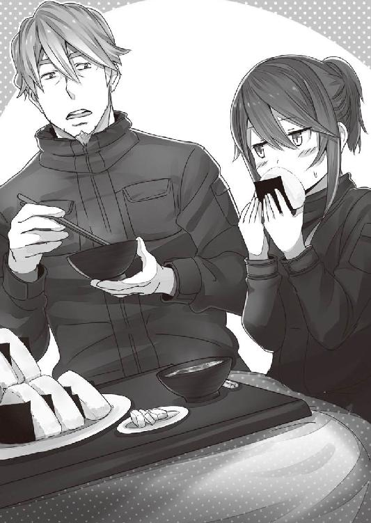
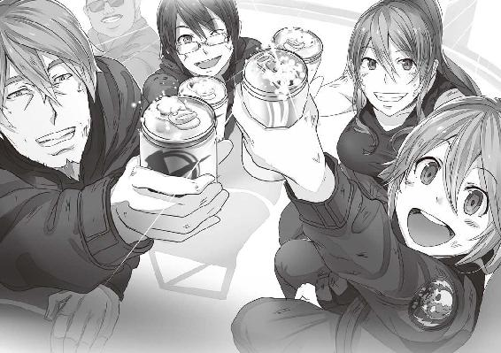

| デスニードラウンド ラウンド 03 | |
| アサウラ | |
| オーバーラップ (2014) | |
この物語はフィクションです。
実在の国名、固有名詞等とは一切関係ありません。

丑三つ時に食べる料理は、特段にうまい。夕餉から丁度良い時間をおいての食事であるし、何より、そこに付随する罪悪感と優越感は最高のスパイスだ。
一〇のテーブルがあるホールは黄色い間接照明で彩られ、全体的に温かく、柔らかな印象である。そんな店で、バロック調の柄を持つ絨毯の上を音もなく淑やかに、それでいて甲斐甲斐しくメイド達が特別な客達をもてなしていた。
そのメイドも全員が粒ぞろいな上、その所作は一つ一つがこの上なく完璧であり、見ているだけで時間をいくらでも潰せる。けれど、当然彼女らは陰の存在でしかない。
その秘密の場所にあるレストランでは、それよりもっと価値あるものが提供されるのだ。
それは、絶世の美女を嬲るよりも、はるかに価値がある。それは、あの魯山人とて味わうことの出来なかった、美味。それは、あまりに例外的で、特別で、この世の最上級。
「皆様、お時間でございます。ただいまより、一時的にお料理の提供を停止させていただきます。ただし、お飲み物だけは随時お申し付けくださいませ。......では、どうぞ、窓の外をご覧ください」
メイド長らしき眼鏡の女がそう言うと、店内の照明がゆっくりと消えいき、メイド達が訓練された軍人のように、同じ歩幅で窓へと向かっていく。
店の壁一面に窓が配置されており、そこには白いレースのカーテンが掛かっていた。メイド達はまるで機械のようにそれらを同時に開けていく。
暗く沈んだ店内にて、客達がワイングラスを手に席を立ち、窓際へと集まった。
二階であるそこからの景色は絶景と呼ぶに相応しいものだ。まるで外国の古い町並を再現したかのような建物が並ぶそこに、大勢の人々が群れている。様々な〝そこ〟のグッズを纏い、持ち、笑顔を浮かべ、白い息を吐きながら彼らは一本の太い道を作っていた。
端から見るとアカデミー賞のレッドカーペットに群れるファンのようだが、恐らくそれとてそう違いはないのだろう。これから彼らのアイドルがその道を通っていくのだから。
群衆は待つ。一二月の深夜という寒気の中、震えることもなく、幸せそうな顔をして。
レストランから彼らを見下ろすある男は、高級なスーツを着、高価な腕時計を付けた手で傍らの女の肩を抱く。その女はドレスで大胆に露出した胸元を揺らしながら、メインディッシュが始まる前だというのに、すでに満面の笑みだ。
照明一つもない暗闇の世界。部屋の明かりを落としたが故に見える窓の外の群衆。そんな光景にわずかに明かりが......。
店内がざわめく。酒で濡らした唇を誰もが釣り上げた。
――来たわ！ ――あぁ、メインディッシュだ。――今夜は本当に、その......彼女なんだよな？ ――えぇ、あの子がどんなふうになるのか、楽しみだわ......！
誰もが息を荒らげるほどの興奮を覚えていた。
そんな彼らの視線の中、群衆たちが作った太い一本の道を走り行く少女の姿。ぜぇぜぇと喘ぎ、着ていたかわいらしいゴスロリ調の服は汚れ、破れ、乱れ、それでもなお彼女は直そうとはしない。すでにそんな余裕など、彼女にはなかった。
右手にマイクだけを硬く握り締め、ひたすらに走る。
――みっきぃ！ ――まうちぃ！ ――凄い、本物だ、本物だぞ！ ――えー、偽物臭いな。――こっちは無修正だから、多少の差異は出るだろ。――ここがそんな紛い物を出すものか。――見ろよ、あの顔......！
みっきぃ、まうちぃと呼ばれた彼女は、アイドルの〝真内みき〟だった。長い髪を二つの団子状にした中国的な髪型も、今は片側が解け、その背で揺れていた。
「誰か......誰か、助けてよ!! どうして、こんな......!!」
涙を、鼻水を、汗を垂れ流しながら、真内は叫ぶ。分厚いガラス越しにもその必死の声――絶叫が聞こえてきて、店内の客達の笑いを誘う。
真内が道を作る人垣にタックルするようにして逃げようとするが、笑顔の群衆はビクともしない。涎をだらだら垂らしながら、壊れたオモチャのように笑みを浮かべ、真内を道へと押し戻す。
真内は地面に倒れ、そのまま声を上げて泣いた。
「何、何なの!? みっきぃが何をしたっていうの!? シークレットゲストのリハーサルって......何で、こんな......!?」
歓声が上がる。人垣は一斉に真内が逃げてきた方向を見やり、目を輝かせた。
レストラン内もまた、興味は泣き叫ぶアイドルよりも、これからやって来る本物のアイドルの方に向く。
スピーカーで増幅された甲高い声が、辺り一帯に響いた。
「おやぁ？ 伝達ミスがあったかな？ 今日はリハーサルじゃないよ、本番だよ！ ボクらの悪夢と絶望の国が大好きな真内みきちゃん......準備はいいかい!?」
暗かった窓の景色に、けばけばしいほどの明かりが現れる。人垣が作る道を通り抜けてくる、ＬＥＤを無数に付けた巨大なてんとう虫。派手な衣装にやはり大量のＬＥＤを取り付けた鼓笛隊が賑やかな演奏をしながら真内に迫っていく。
「いやだ、来ないで......お願い......どうして、こんな......!?」
真内の周りをてんとう虫と鼓笛隊が踊りながら回る。
そこへ、巨大な重量の〝何か〟が迫ってくるのを、真内はもちろん、レストラン内の客達も体で感じた。
――来たわ、パレードの本隊よ！
けばけばしい光を撒き散らし、二階建ての家と同じか、それ以上のサイズを有した巨大な山車が列を成して真内へと迫る。
かの有名な『イッツァ・ビッグ・ワールド』の曲に乗せ、山車とその周りのダンサーが踊りながら、行進。人垣の全員が狂った人形のように、必死に手を振り続ける。
......そんな楽しげな彼らの前で、真内は泣き叫んだ。
そしてそれを二階の窓から見下ろすレストランの客達は笑い、酒を煽った。
真内は迫り来る巨大な山車にひかれまいとして、地面を転がる。人間の女の首が取り付けられている青く巨大な蝶の山車をかわし、犬やガチョウの化け物が上で踊る機関車の山車をかわし、青い毛むくじゃらの化け物や目玉のお化けの山車をかわし、かわし、かわし......必死になって生き延びる。
そして、青白く光る馬に跨がる騎士の集団に守られながら、それは訪れた。
三階建ての建物ほどもある、レストランの客達でさえ見上げざるを得ない巨大な山車。巨大な駆動音を響かせる汽車を模した山車の上に、巨大な人型のモルモットのロボットが乗っている。そして、さらにその頭上にはそのモルモットと同じ顔をした化け物が一匹。ジャケットを羽織り、大きく丸みのある黒い耳とツンとした鼻を揺らし、笑みを浮かべている、そいつ。彼はステッキを持って、自分と同じ姿をしたロボの頭上で踊っていた。
それから逃げようとする真内の周りを先程の騎士の一団が取り囲む。青白い光の線を残すように、騎士達は真内の周りを回る。そして......その手に持っていた細身のランスを真内の手足それぞれに突き刺し、彼女を地面に縫い付けた。
両手首、両足首に見事に差し込まれたその衝撃に、真内は目を見開き、顎が外れんばかりに口を開くと、絶叫を迸らせた。
二〇メートルはあろうかという巨大な化け物が軋みながら動き出す。それは、汽車を降りると痙攣を始めた真内の体を両手でそっと包み、レストランにいる客達と同じ高さにまで持ち上げた。
化け物の手から顔だけを出す真内は、その目で化け物の頭上にいる人――いや、化け物を見つめる。
「な、んで......こんな......みっきぃ......大好きなのに......どうして......」
化け物の上で踊っていた人形がピタリと動きを止め、持っていたステッキで真内を指す。
「君の髪型や愛称が一部の人にとって不満らしくてね！ ......なぁんてね!! もちろん愉快な冗談さ！」
人の感情を逆撫でる甲高く、半笑いのような声でそいつは言うと、ステッキを振り回す。
「さぁ、楽しい楽しい夜の始まりだ！ さぁ、エキセントリックパレードの始まりだ！ 盛大なファンファーレを上げておくれよ、みっきぃ!! ――ハピデス!!」
巨大なロボットが真内を握る手に力を入れるのが、レストランの客達にも見ていて判った。若い客がテンションの高まりを示すように、歓声を上げる。
真内の目が飛びださんばかりに見開かれ、そして彼女は叫んだ。
「やめっ......あっ......ニッティ――――――――――――――――――――――――!!」
真内は叫ぶ。だが、その直後、文字通りに両目を眼孔から飛び出させると、弾けるようにして顔中の穴という穴からその赤い体液を噴き出した。
レストラン内の客がワイングラスを投げ捨て、手を叩く。歓声が止まらない。
「......ハハッ!!」
一頻りその巨大なロボット――巨大ニッティーは真内みきを収めたまま、大きな両手を揉みに揉み、その手袋を赤く染めていく。
そして、二階席のレストランの客にかがみ、体を向けるとその肉片を纏わせた両手を広げて見せた。
その頭上のニッティー自身は、同じようにレストランの客達に体を向け、背筋を伸ばし、その短い両手を精一杯に広げると、笑みを浮かべていた。
「悪夢と絶望の国、ＤＮＲへようこそ!! 幸福なる死を、君に!!」
１
どこか予定調和すら感じる襲撃だった。松倉はカーナビを操作し、そこに流れている映像の音量を上げた。ノイジーな悲鳴と銃声が錯綜するその映像は、松倉のいる場所から二〇〇メートルほど離れた場所の中継である。
大勢の観客席のある舞台――大きな公園内に設置されているオープン型のイベントステージでは、気色の悪い着ぐるみのがおののいて転倒し、震えていた。
千葉県船橋市の非公認マスコットゆるキャラ――〝ふなむっしー〟だ。
それはその名の通り、フナムシをモデルとしたいささか不愉快なデザインに加え、手作りのために安っぽさが漂っている酷いものだ。松倉にはその善し悪しがまったくわからないが、こんなものが船橋市公認のそれよりもはるかに世間で大人気なのだという。
そんな松倉にわかっているのは、イベント主催者の予想通り、船橋市が雇った襲撃者がイベント中にふなむっしーを狙ってきたということだけだ。
マスクやニット帽で顔を隠した男達六人が拳銃を空に放ちながら一斉に舞台に上がる。その内のリーダー格らしき男が手にしていたリボルバーを高々と掲げた。
『我々は船橋市民の代表である！ そして市民の怒りの権化である！ このような気色悪い着ぐるみがさも船橋の代表であるが如く、全国のテレビに出ることなど許さぬ！ 我々がこの場で成敗してくれよう！ 我が船橋市の公認ゆるキャラは船江さ――ん？』
リーダーが不意に口を噤む。ふなむっしーを靴底で踏んで押さえている五人もまた同様に、さらには騒然とする観客達さえも、きょとんとした顔をして、ステージの舞台袖から平然と現れた女を見やった。
咥え煙草で現れたのは長い金髪をバレッタでアップにまとめ、黒縁の眼鏡に白いスーツという芸能事務所の美人マネージャーといった趣きの――武島だった。彼女は器用にハイヒールを鳴らして歩きながら、タイトなスカートを破る。腰にまで及ぶ長いスリットを入れると共に彼女のしなやかで日本人ではあり得ないような長い足を一二月の寒空に晒した。
『ふなむっしー、逃げるぞ』
逃げる、という割には堂々と襲撃者の前に立ち、煙を吐くその武島の姿に襲撃者もそしてふなむっしー自身さえも、彼女の言葉を理解出来ずに唖然としていた。
だが、武島が指をパチンと鳴らした瞬間、状況は一変する。
先程の拳銃発砲音がオモチャだったのではないかと思えるほど、腰の据わった銃声が次々に鳴り響いたのだ。舞台下にいた音響スタッフが、機材の袋の中からショットガンを取り出すと同時に襲撃者四人へ発砲したのである。
彼が舞台の上へ躍り出ると、リーダーがその音響スタッフ――ジャンパーにウェストポーチを付け、マスクと野球帽で顔を隠していた大野へと右手の銃を向ける。
大野はこれに対してあえて前に出る――距離を詰める。一瞬にして自分に向けて伸ばされた腕と銃口をかわし、懐に入り込んだ。さらに大野は左腕でリーダーの腕を脇に挟むと共に右手に持っていたＭ８７０を相手の腹部へ突き付ける。零距離で、発砲。
衝撃でリーダーの体は一瞬宙に浮き、大野に抱えられていた彼の腕は肘からへし折れた。
自分の意見が世論であり、その要求こそが善であるとする舞台上の襲撃者は誰一人悲鳴を上げることもなく、鎮圧された。......いや、一人悲鳴を上げる者もいる。
『痛いむっしー！ 痛いむっしー!! 触覚を握り締めたら嫌むっしー!!』
武島に二本の長い触覚を握り締められ、引きずられていくふなむっしーが絶叫していた。着ぐるみだから痛いも何もないだろうが、フナムシの精だとする設定に忠実なのだろう。
武島とふなむっしーが舞台から撤退し、大野もまた彼らと共に弾薬を装填しながら背後を警戒しつつ、退く。
その頃には観客席はもはやパニックという有様だった。老若男女に人気のふなむっしーのイベントであったために、子供の泣き声が響いたり、老婆が転んで血を流していたりしつつも、誰もが早くその会場から逃げようとしている。
映像は固定カメラのように微動だにしないが、それでも逃げ惑う人々にぶつかられてたまに揺れていた。そんな映像の中で、逃げ惑う人々とは別に、静かに、滑らかに舞台へと向かって動き出す三人のスーツの男達の姿があった。
『......行きます』
少女の声と共に、映像が動き出す。大野達を追うかのようにスーツ達は舞台の上へ登り、その袖から奥へと入っていく。映像が、五秒ほど遅れてからそこに続く。
観客席と舞台は天井はないが、その背後には控え室などがある二階建ての建物が続いており、当然屋内になる。そのせいで電波が悪くなり、映像が乱れつつあった。
狭い通路を進む映像は、曲がり角に足を踏み込んだ瞬間に一気に乱れた。床、ローファー、白いハイソックスと生足、そして高校の制服スカートとコートの裾が一瞬だけ入り込む。次の瞬間には、恐らく床の上からカメラに拳銃を突き付けるスーツの男を見上げるアングルとなっていた。足払いでもされて転倒したのだろう。
『コイツ......なんだ、女子高生......？』
そのスーツの男は唖然とした顔をする。その間にカメラは彼の足の間から、二〇メートルほど廊下の先を進んでいる拳銃を手にした男二人の姿を捉えた。
「殺さずにやれ、ユリ。手早くだ」
映像の主――葛ユリは、松倉の呟きを彼女が身につけるカメラ付きのヘッドセットから聞き取ると、素早く動いた。
突き付けられた銃口に喰らい付くが如く、倒れていたところから手と顔を一気に持ち上げる。銃を握る男の右腕を左頬にかすらせるようにして、先程の大野同様に銃口をかわす。発砲音。だがそれは肩ほどまであるユリの後ろ髪を散らしただけの、実質的な暴発だった。
ユリは右手で敵の二の腕をつかみ、己の首で相手の銃を持つ右手首を支えるようにすると、左手で掌底を放つ。外から内へ、男の肘関節へ向けて。
曲がらない方向へ無理矢理曲げるかのようなそれではあったが、やはり付け焼き刃の格闘術では技が決まっても間接までは破壊出来ないようだ。床に座りながらということもあるだろうが、基本的な筋力が足りていない。だが、それでも相手の銃を落とさせ、そこから相手の足に己の足を絡めて転倒させるぐらいは出来た。
暇があると大野がユリのトレーニングに付き合っていた成果のようにも思えるが、映像からスマートさはまったく感じられず、技術的なものよりも単に遮二無二頑張った結果、偶然うまくいっているというだけなのだろう。何となく、その足りない部分を気合いでカバーしようとする姿に、昔の武島を思い出し、松倉は鼻で笑った。
男を転倒させた時には、通路の先を行く二人の男もユリの存在に気が付いた。
そこで高校の女子制服を着た小娘というユリの外見がアドバンテージを生む。
山田がユリを実戦で一日でも早く使えるようにしろと言い続けてきたことに感謝するべきだろう。松倉はもちろん、武島でもこうはいかない。
スーツの男達は、発砲を一瞬、躊躇った。ユリと共に仲間がすぐ脇で倒れているということもあるのかもしれない。だが、やはりその姿の力が大きい。子供に躊躇いなく撃てる程のプロなど、そう多くはいないのだ。
自らの姿が作り出した一瞬の隙によって、ユリはコートの下、制服の上に取り付けた腰のホルスターから銃を抜く。ブローニングハイパワー。セイフティの解除と同時に撃鉄を起こす。仰向けのまま両足を敵に向け、膝を立てることもなく左手を腕枕の要領で後頭部の下に差し込み、頭を持ち上げさせる。そして右手の銃を股の上へと伸ばし、撃つ。
うつ伏せでの射撃よりもコンパクトで、体に無理がかからない。大野が暗い室内などで〝待ち〟をする際に良くやる撃ち方だった。膝も立てないのは相手に晒す体の部位を最小限にするためではあるが、これがなかなか出来ない。敵を前に仰向けで寝ること、さらには股間を無防備にそちらに向けることにも人間は本能的に恐怖心を抱くものだ。銃撃戦の特性を考えれば有効な撃ち方なのだが、本能を押さえ込まないとそう出来るものではない。
ユリ、撃ち続ける。全て、足狙い。敵も発砲を始めるが、ユリの頭上か、途中の床を削るだけだ。
ユリが七発撃ち込んだ時、二人の男は足から鮮血を噴き出させながら、転倒する。
「ユリ、十分だ撤退しろ」
了解の言葉もなく、荒い呼吸音だけでユリは応じると、体を転がして敵の射線から外れ、すぐさま立ち上がる。通路の窓から外へ出るとそのまま松倉の車が止まっている会場裏手の駐車場に向かって走り始めた。
膝が震えてうまく走れていないのが映像に出ていた。撃っている最中は震えていなかったので、緊張か必死さかで恐怖を忘れていたのが今になってまとめてやって来たのだろう。
バコンっと音を立てて、松倉が乗るワンボックスカーの後部扉が開かれた。松倉がバックミラーを見やれば運転席と助手席以外を取っ払い、だだっ広くなった車内に気持ちの悪い着ぐるみが押し込まれて来る。ふなむっしーだ。なかなか入らないのか、武島が足で蹴りつけるようにして押し込んでいた。
「痛いむっしー！ 怖いむっしー！ な、なんでこんなことになったむっしぃか!?」
「お前が気持ち悪いからだよ！ いいからさっさと車内に乗り込めっての！ 足ワキワキ動かしてんじゃねぇ!!」
武島に強力な蹴りを喰らってようやくふなむっしーは車内に転がり込んだ。大野もまた車内に入るも、武島は車から軽機関銃を取り出し、辺りを覗う。ユリが、来る。
松倉ブレーキを踏み、パーキングに入れていたハイエースのギアをドライブに入れ、サイドブレーキを解除。
「武島、ユリ、乗り込め。行くぞ。予定通りだ」
二人が乗り込むと同時にバックドアは閉められ、松倉はアクセルを踏み込んで車を走り出させる。車内に一息付く雰囲気が流れた。
「ど、どうでした、松倉さん！ 私の頑張り、超くっきり映っていましたよね!? クールでした!? 惚れ惚れしました!? 今夜はご褒美のビフテキですか!?」
「膝震わせてた奴が良く言えるな。しかもビフテキ？ お前の頭は昭和か」
バックミラーを見ていると、未だ細かく震える膝を抱き、ユリがシュンとする。先程の格闘があったせいか、彼女が左右に取り付けている葛の花を模した髪飾りも落ちかかっていて、まるで虐待された子供のようだが......。
「今夜はカニ鍋だ」
そう松倉が告げた瞬間、ユリの顔はまさに春の日差しと柔らかな雨を浴びた花々のように、パァッと笑顔になる。カニですか！ という言葉と共に彼女の膝の震えも消えた。
どうやらユリの場合、その精神バランスにおいて恐怖よりも食欲が圧倒的な強さを誇っているらしかった。
「良かったむしね！ カニ鍋、おいしいむっしー!! むっしぃい―――――――――!!」
着ぐるみがユリと一緒に喜ぶように甲高い声で言った。
ユリが初めてそいつに気が付いたように、ハッとして見やり、固まる。
ふなむっしーが全身と、その無数の足をわきゃきゃっと高速振動させていた。喜びや興奮を示す動きだと先程ステージで言っていたが、それを間近で見ると......かなりキモい。
「気持ち悪い！ 武島さん、コイツ、気持ち悪いですよ!?」
「もう慣れなよ、ユリ。......っつぅかさ、こいつと絡まないといけないのに、何で今日に限ってカニなわけ？ なぁんか食欲落ちそうじゃん......」
「武島さん！ やめて！ コイツとカニを連想させないでください!! 私がどれだけカニに恋い焦がれてると思ってるんですか!?」
そんな賑やかな車内ではあったが、大野だけは一言も喋らない。彼は帽子とマスクを外し、いつもの眼鏡をかけたアホ面を晒しつつ、後方を覗っていた。
車はすでに国道に入り、公園があった緑の多い街外れのエリアから都市部へと入り込みつつあるのだが......来るとしたら、そろそろだった。
「......松倉さん、来ましたよ。奴らです」
松倉がバックミラーを見やれば黒塗りのＳＵＶが二台、高速でハイエースを追随して来る。距離を詰めさせないように松倉も速度を上げようとしてみるが、車の性能的に追いつかれるのはどうしようもないだろう。
「いい加減、頃合いだ。商売敵でいるのもお互いに飽きたしな。......終わらせてやるさ」
ユリが後方を見やりつつ、車内に詰んであった愛銃のＳＡ58を引き寄せる。
「あれが......ヤンとマー......」
松倉達と同業である個人経営型民間警備会社の名打ての双子である。警備とは名ばかりなことが多いが、彼らの二人だけの会社に関しては完全にお飾りだった。非合法のアクティブな仕事しか受けない、業界内でもダーティな連中として際立って有名なのだ。
たった二人だけの会社でありながら、とにもかくにもやたらに強いというのが問題だった。松倉達は装備と悪運を北海道独立戦争時代から持ち続けて生き残ってきたが、向こうは向こうで栃木群馬間紛争の際に、松倉が指揮を執っていたギア装備の部隊と、停戦が宣言されるまで真っ正面から戦ってもなお、死ななかった強運と実力がある。
同業種とは仕事柄ぶつかることも多いが、あの双子に面と向かって対抗し、死者を出していないのは、都内では松倉チームと永田チームぐらいなものだった。二人に主力を殺されて潰された会社は七を優に越えている。
栃木側についていた松倉達にとっては宿縁の相手であり、以前大野がそれを叩っ切るために命を賭けて弟のマーを追い込んだが......あと一歩のところで逃していた。
今日、この一二月の晴れた空の下、ケリを付ける。そのためにこのふなむっしーなどというわけのわからない着ぐるみを守る契約を締結したのだ。
だからこそ、今宵は勝利を祝うために大盤振る舞いのカニ鍋を準備したのだ。すでにカニの解凍は始まっている。今更取りやめなど出来はしない。失敗は許されないのだ。
松倉はカーナビを操作し、ユリの視線カメラの映像から、ルートナビゲーションシステムへと切り替える。あらかじめ設定していたルートが表示された。
車内後部では私服であった女性陣が服を脱ぎ、戦闘可能な衣服へと着替えていく。
武島は以前から気にしなかったが、最近はユリも大野の目を若干避ければ多少の着替えは許容するようになった。
ユリは制服を脱ぎ、ジャケットを羽織るとその上からマガジンポーチ類が取り付けられたプレートキャリアー、下はカーゴパンツに膝当て、ショートブーツ。ＳＡ58のスリングに体を通すと、ポニーテールに髪型を変え、鍔付きの帽子を被った。
武島もユリとお揃いの――正確にはユリが武島に合わせたのだが――ジャケットを羽織ると、器用に狭い車内でジーンズを穿く。そして腰にＲＰＫのドラムマガジンが収まるポーチの類が大量についたベルトを巻き付けた。
大野は腰のウェストポーチを外して、モールシステムタイプのポーチが大量についたバンダリアを右肩から左脇に懸け、手にしていたショットガン内の残弾を排莢する。あの善良なる市民の代表のために用意した非殺傷弾だった。
元々松倉達への依頼は、暴走し始めた船橋市市役所職員の鎮圧として、船橋市議会から発注されたものである。そしてヤンとマーの二人は現市長から依頼を受けていた。
つまり、個々人で立ち上がった市役所職員の企てを察した議会がこれをある程度穏便に押さえようとしたころ、実はその陰に隠れて密かに市長が本気でふなむっしーを殺しにかかっていた、というのが真相だった。
勝手に船橋のゆるキャラのように登場して人気を獲得したふなむっしーの存在が市長はよほど気にくわなかったらしく、慌てて多額の税金を注ぎ込み、〝船江さん〟とかいう市公式ゆるキャラを作成し、これをふなむっしーへの対抗馬として鳴り物入りで発表したのだが......これがまったくウケなかった。
松倉は政治や組織内のパワーゲームに興味はないので詳細はわからなかったが、どうも公式ゆるキャラの成否はそのまま次の市長選挙に直結するものらしい。そのため反市長派からするとふなむっしーの存在は極めてありがたく、ゆくゆくは首がすげ変わった後、または選挙中にあの虫を公式キャラとすることを公約として掲げ、一気に市民からの支持を得ようとする皮算用があるらしかった。
こうした結果、暴走した市役所職員を殺さずに鎮圧するという仕事とは別に、二つ目の契約を松倉は議会と結ぶこととなった。
それが、市長の雇った殺し屋を退け、ふなむっしーを守るということである。
この、根は単純なクセして妙に入り組んだ複数の思惑と依頼......当初あまり乗り気ではなかったものの、相手がヤンとマーだとわかったことで、松倉は俄然乗り気になったのだ。
あらゆる面において殺すのに丁度良かった。暗殺の類ではなく、公式な仕事の上での正当な武力行使だとする言い訳が立つのはもちろんのこと、市長の情報防衛能力は低く、反市長派のスパイによって情報はダダ漏れ......つまり、ヤンとマーの計画は全てこちらで把握出来るという、おいしい状況だったのだ。余裕で、殺せる。その確信があった。
黒塗りのＳＵＶが迫る。一台が横に並ぼうとしていた。
「......チッ、予定より少し早いな」
カーナビのルートではもうしばらく進んだところで右折になっていたが、そちら側にＳＵＶが入り込もうとしている。このままでは曲がれない。てっきり射撃してくるかと思っていたが、このハイエースのバックドアが完全防弾なのを見破られたのかもしれない。タイヤも実はパンクしないよう、エアを使わない特殊な完全ゴム製のそれになっていた。
なお、予算の都合でそれ以外は通常のハイエースである。
「予定変更だ。最後のカーブを曲がれない、国道をこのまま直進する。対処してくれ」
『我了解』
ヘッドセットから鳥の歌声のような応答が来るのを聞きながら、松倉が右手を見やれば、ピッタリと並んだＳＵＶが見える。ドライバーは兄のヤン。筋肉の塊のような二メートルを超える体をし、その全身に分厚いプロテクターを纏い、さらには顔に両目の部分をくり抜いた鉄仮面を被っていた。どこかギア装着時の自分らを松倉は思い出すが、彼らもどこかしらでそれを意識しているのかもしれない。
とはいえ、松倉達のそれは電力で動力を得ていたが、彼らのは己が筋力である。さらにその鉄仮面は防御のためというよりは栃木群馬間紛争の際に兄弟揃って二目と見られぬ顔になったせいらしい。実際、あの停戦間際に、埒のあかない群馬の防衛線を破るために、後方にあった大量の迫撃砲を運搬し、残っていた全ての火力とギアの防爆及び防弾性能に物を言わせてぶち破り、前線を強引に押し上げたのを松倉は覚えていた。
......何せ、その指示を出したのは他ならぬ松倉自身なのだ。
ハイエースにＳＵＶが側面からぶつかってくる。連中が完全に二人だけで行動するのは間違いないので、防弾性能のない側面から撃たれる心配はまずない。兄貴のヤンは後方から追突させようとアクセルを踏んでいる。こちらの足を止めてから勝負をしたいようだ。
だが、こちらは撃てる。武島が車内で膝を付いた状態のままＲＰＫを構えた。その光景にユリと大野が耳を塞ぎ、松倉も片手でヘッドセットで塞がっていない左耳を塞ぐ。
ＲＰＫ、７・62ミリの銃弾を大量に放つ。銃声が車内を荒れ狂う。ふなむっしーが驚いて飛び退き、天井に当たり、落ち、痙攣を始めた。
「チッ、向こうは完全防弾車か」
武島の掃射はハイエースの側面を蜂の巣にし、車内の人間の耳を激しく痛めつけただけで終わった。ＳＵＶの側面には傷と凹みがあるだけだ。
その時、一〇〇キロを優に越えていたハイエースの左側面を一台のスズキのバイクが走り抜けていく。黒光りする美しい車体に、全身を革とプロテクターで包んだ細身が跨がっている。フルフェイスのライダー、その背にはギターケース。
バイクはハイエースを追い越し、はるか先に行った段階で急ブレーキを掛け、タイヤを滑らせて道路の真ん中に急停止すると共に車体を地面に倒す。ライダーは背負っていたギターケースから素早く二脚の付いた狙撃銃をそのエンジン部の上に展開し、ヘルメットを投げ捨てた。艶やかに美しい黒髪が冬の風に揺れた。林美鳳だった。
松倉は彼女を目指してアクセルを踏み続ける。並走していたヤンは恐らく勘づいたのだろう。慌ててブレーキを踏むが、間に合わない。
まさに待ち構えるが如く進行方向のど真ん中のポジションを取った美鳳が、撃つ。
昼過ぎだというのにはっきりと見える程の凄まじいマズルフラッシュが銃口から噴き出した。単なる３３８ラプアマグナムではない。彼女が台湾から持ち込んだ徹甲強装弾だった。日本産のパーツを多用したカスタムＭＳＲでの実戦射撃は初である。
危急の射撃とはいえ、堂々とした美鳳の美しさすら感じる伏射だったというのに、反動を押さえきれずに銃口が跳ね上がる。そして、その徹甲強装弾は真っ直ぐにＳＵＶのフロントウィンドウに喰らい付き、車内を鮮血で彩った。
ヤンがハンドルにもたれ掛かり、ＳＵＶは道を逸れて歩道に乗り上げ、そのまま駐車場に停まっていた数台の車を弾き飛ばしてコンビニへと突っ込んで行った。
美鳳、バイクを捨て愛銃と共に道路脇へと飛ぶ。松倉はハンドルを切ってバイクをかわす。だが、後続していたマーのＳＵＶはバイクに気付かずに正面から行った。破砕音と共にＳＵＶはその下にバイクを巻き込み、まるで喰らい付いたが如く乗り上げた。猛烈な火花が尾を引く。ＳＵＶ、前輪が浮き上がってコントロールを失いながら、前進を続ける。
大野、ハイエースのバックドアを開けた。そしてユリ、武島、アサルトライフルを持った大野が後方へ向かって、己の得物で一斉掃射。いくら完全防弾であろうとも、十数メートルの所からライフル弾を雨が如くに撃たれれば抜ける可能性は高かった。
また、そうでなくとも時速百数十キロでコントロールを失いながら前進し続けるとなれば、凄まじいプレッシャーのはずだ。
ＳＵＶ、ブレーキを踏んで逃げに入る。だが、松倉も即座にブレーキ。
大野、得物をＭ８７０へと持ち替え、距離が離れるより先にマーの車体、そのフロントへと飛び移った。着弾跡で真っ白くボロボロになった防弾ガラスへ向け、大野が放つ。単粒弾。よほど質がいいのか、それでも抜けない......が、代わりに車体からガラスそのものがガコンと外れて、車内に落ちた。
車体とガラスの隙間から、極太の腕が伸びる。その手には腕の太さに相応しいゴツいリボルバー。４インチモデルのＭ５００。銃身が短くなりコンペンセイサーが取り付けられたそれが、大野を狙う。
大野、完全に虚を衝かれて対処出来ないと判断したのか、未だ時速一〇〇キロ近い車体の上から自ら飛び降りる。その際、置き土産代わりにさらに一発単粒弾を放った。狙いはフロントウィンドウ。隙間から伸びていた腕が、着弾の衝撃で震えたガラスの被断面で切れる。鋭利なガラスが肉に喰い込み、鮮血が噴き出した。Ｍ５００も吠える。反動でなおもガラスは腕に深く入り込むが、そこまでして放ったその弾は彼方へと飛んでいっただけだった。
大野がアスファルトに落ち、転がり、そして松倉が見やっていたバックミラーの中で点になって消え失せた。
Ｍ５００の銃口が、ハイエースに向く。ユリと武島はともかく、図体のでかいふなむっしーに当たり兼ねない。武島、ハイエース内で仰向けに寝転がり、ＲＰＫを股の間から銃口を出すようにして構え、放つ。ユリはふなむっしーの壁になるようにしつつ、中腰でホルスターからハイパワーを抜き、Ｍ５００を撃つ。
ここが勝負の分かれ目だと直感した松倉もまた、ホルスターからガバメントを抜き、右手でハンドルを握ったまま、左手で振り向き様に、撃ちに撃った。
誰かの弾が、ヒット。Ｍ５００が幾本かの指と共に弾け飛んだ。
松倉、車を止めて宿縁に決着を付けようとするものの、カーナビのマップが目に入る。船橋市を越え、隣の市に入っている。――ここでは船橋市議会の力が及ばない。
クソッ！ 松倉はらしくもなく声を荒げ、ハンドルを叩いた。ブレーキから足を離してアクセルを踏む。さすがに警察関係へ賄賂も払っていない状態で車を止め、集団で囲んで一人の男を蜂の巣にするのを武力の正当行使とするにはかなり無理がある。
「任務は成功だ。だが、目的は曖昧になっちまったな......クソッ、今回のにいくら手間かけたと思っていやがる」
武島がＲＰＫにセイフティをかけて脇に転がすと、寝転がったまま煙草を咥えて火を付けた。煙が、開けっ放しのバックドアから流れていく。
「まぁ、いいんじゃない？ お楽しみはいつも最後さ。美鳳のバイクがくたばっただけで、全員生き残ってるし......またやれるよ」
「......大野さん、転がっていきましたけど......アレ、生きてますかね？」
ユリがバックドアを閉めながら言うと、武島は口元に大きく笑みを作った。そして一言だけ言う。――当然、と。
「......こ、この人達、全員怖いむっしー......」
一人部外者で、体はもちろんその無数の足まで高速で震えていたふなむっしーが、呟くように言った。そこに武島は蹴りを見舞う。
「ある意味じゃアンタが一番キモ怖いっての。この化け物が」
２
「......ヘェ、いい仕上がりじゃないか！ もう、一丁前だ！」
そこは劇場だった。多くの座席が並ぶ中にあって、埋まっているのは中央の席一つだけ。
そこでそいつは、甲高い声で歓声を上げ、投影されている映像にパフパフと手袋を嵌めた手で拍手をした。
「いささか未熟さが残っていますが、そこがまた初心だとしてゲスツの皆様に楽しんでいただけるのではないかと」
そいつの後ろにて、蝶ネクタイを付けた男が深々と頭を下げたまま、言った。
「うんうん、本当はもう少し待つつもりだったけれど、これだけ動けるようなら大丈夫だ。......すぐに死にはしないさ！ 三〇人も候補の子を用意しておいてここまで育ったのは彼女だけかぁ！ 彼女の面倒を見てきた彼にもご褒美を上げてやっておくれよ！」
「了解いたしました。......とはいえ、本人は何も知らないはずですので、説明を与えた上で特別報酬を支払うべきかと思うのですが」
「何でもいいよ。任せる！ 勝手にするといいよ！」
そいつは立ち上がると、光の失せた巨大な両目で映像を見やった。
そして、まるでダンスの相手を申し込むように手を映像に差し向ける。
「一二月一〇日、クリスマス前の繋ぎのイベントは......君に決めたッ！ ......ハハッ!!」
その手の先、投影される映像に映っていたのは、ハンドガンを手にした制服姿の葛ユリの姿だった。
３
東京都足立区にある松倉チームの詰め所は巨大な倉庫のような造りだった。天井は高く、だだっ広い。風呂やキッチンなどの水回りは奥に纏められているせいで、壁による区分けもされておらず、冬は暖まるまでにかなりの時間がかかるほどだ。
そうした理由のため、冬になるとこの詰め所では恒例のアイテムが顔を出す。
堕落人間製造器こと――こたつだ。詰め所は壁際に棚や作業台などが並び、それとは別にユリがパーティションとダンボールで作った自室、一対のソファとテーブルがあるだけの応接エリア、そして詰め所の中央にカーペットが敷かれ、そこに普段はテーブルがあるのだが......これが、こたつに変身している。
この冬仕様になって以来、武島の詰め所での宿泊率が急激に上がっていた。
「それじゃ、僕、医者行って直帰します」
昼間の対ヤンとマー戦においてアスファルトの上にダイブしたというのに――血だらけではあったが――平然と帰ってきた大野がこたつから出ると、そう言って詰め所を出ていった。普通先に医者に行くものだが、カニ鍋とあって、夕餉を優先させたらしかった。
タオルで額の血を拭いながらカニを分解している大野の姿は、ユリにとってはいささか不気味であったが、自分もカニを食べ始めるとそんなことはどうでも良くなった。
夕餉前にひとっ風呂浴びていたユリは、鍋を食べる際に暑くて脱いでいたちゃんちゃんこを再び纏うと、デザートのみかんをすでに半分寝落ちしかけている美鳳と共に食べ始めた。ちなみにこたつの中では武島が猫のように身をまるめて寝ているので、ユリはその体の上に足を載せている。多分、美鳳も同様だろう。
冬にこたつで喰うみかんはうまい。日中に良く動き、おいしい晩ご飯をたらふく食べた後というのがまたいい。いやしくなく、ゆっくりと、のんびりと味を楽しめる。
ちなみに、こたつを出した時に松倉達から聞かされてユリは度肝を抜かされたのだが、北海道にはこたつという文化が存在しないらしい。というのも、寒さが厳しい北海道の場合、家全体を暖めないと水道管などが凍り付いてしまうため、こたつのような局所的な暖の取り方ではやっていけないのだという。
なるほど、と思うのと同時に北海道人ってのはもったいないとも思う。食材の宝庫たる土地なのだ、おこたでゆっくりとその味覚を味わえばいいのに......。
「はぁ......かろうじて赤字は免れたが、非道い収支だな。元の報酬が低いせいもあるが、美鳳のバイクが痛い」
ユリと同じようにちゃんちゃんこを羽織り、ユリの対面に座る松倉が、ＰＣ用眼鏡の奥の目を歪ませてノートＰＣのキーを叩く。
「でもいいじゃないですか。武島さんの言葉じゃないですけど、みんな生きてますし、また頑張れば。生きていればいくらでもやっていけますよ」
ユリはニコニコしながらみかんを口に放り込む。酸っぱいみかんだった。でも、それがいい。甘くも酸っぱくもないみかんが、一番おいしくない。少なくともユリは、そう思う。
「大野を殺して大金が転がり込むってんなら考えるさ。武島でもいいぞ」
呼ばれたと思ったのか、こたつの下で武島がもぞっと動くと、こたつから寝ぼけ眼の顔を出す。そしてユリの膝の上に頭を載せると、また、寝始めた。
「あれ？ ってことはアレですか！ 私や美鳳は大金詰まれても失いたくないと!? そんな大切で特別な存在なのだと!? ヴェルタースオリジナルとかくれちゃうんですか!?」
ユリはおやつを見せられた犬が尻尾を振るようにして前屈みになる。美鳳は逆にスッと背後に倒れるようにして、眠りに落ちた。そんな二人を、松倉はボンヤリとしたやる気のないような目でしばらく見据え、ため息を一つ。
「美鳳を殺すと俺が林さんに殺されるし、お前の〝死〟が生む価値は他がもっていく。......どう考えても俺達に旨味がない」
ちぇ～っと、ユリは唇を尖らせつつ、腕を伸ばして眠りについた美鳳のお腹にこたつの裾をかけてやった。
「......そういえば、私の借金って今、どんな感じなんですかね？」
「知らねぇよ。山田さんに訊け。ただ、利子を考えても増えてないと思うが、返済しかけているってこともないだろう」
「ですよねぇ。どこかにスパッと短期間で大金稼げる仕事とか、ないですかね」
「あるわけねぇだろ、そんなもん。あったら速攻で俺が受けて......」
松倉が言葉を切って顔を出入り口であるシャッターの方へ向けた。それは大型のトラックが出入り出来る程のもので、窓など当然ないのだが、松倉の目は不思議とそのシャッターの向こう側を見ているような気が、ユリにはした。
美鳳まで何かを察して起き上がる。ユリには何が起こっているかわからないが、松倉は眼鏡を外してちゃんちゃんこを脱ぐと、美鳳と一度視線をかわして、二人して音も気配もなくこたつを出た。ユリもわけがわからないまま、残っていた半分のみかんを口に放り込んでからこたつを出ると、ダンボールで構成された自室に戻り、明日クリーニングしようと思ってほったらかしていたＳＡ58を手に取る。
松倉、ＡＫを手にしてシャッターの脇で構える。美鳳は、松倉チームと仕事をするようになってからガンロッカーを借りてそこに愛銃を納めてあるのだが、今回はいつものＭＳＲではなく、ＭＡＧＰＵＬ社のパーツを多用してカスタムしたＭ４を取り出し、先程まで眠っていたとは思えぬ動きで、松倉とは反対のシャッターの脇に控えた。
ユリはわけがわからずＳＡ58を握ってみたものの、どうしていいかわからず、詰め所の奥へ向かい、キッチンの方から銃と顔半分だけ出すようにして座射の体勢を取る。そこからならば松倉達の援護もしやすく、また素早く裏口にも銃口を向けられる。なお、その裏口は基本いつも鍵も掛けっぱなしな上、買い置きのビールの箱が山と積まれていてそう簡単には出入り出来ない有様ではあったのだが。
ジリリリとベルが鳴った。そして、外から「組合の者だ」との声。松倉が一瞬訝しげな顔をするも、シャッターを開ける。押し上げられるシャッターの向こうに、複数人の男達、六人。黒スーツが五、一人だけブランド品らしき縦縞のお洒落なブラウンスーツ。黒の五人は、全員がこれ見よがしに懐を膨らませ、ジャケットの前を開けていた。ユリの指先は自然とＳＡ58のセレクターをセイフティからセミオートへと切り替える。
「おっと？ 随分と厳重だな。まるで敵対組織と面会でもするかのようじゃないか。落ち着けよ、松倉君。......えっと、君はミス美鳳......だったかな？」
「組合がこんな夜中に何の用だ？ 訓練された犬を五匹も引き連れているところを見ると、ただごとじゃないんだろう」
松倉の言葉を聞いて、ようやくユリも松倉達が何に反応したのかがわかった。
ユリには何も感じられなかったが、それが逆に彼らの神経に触れたのだ。合計六人もの男が詰め所の前に来たのを何かしらで感じ、その男達の気配が不自然に抑えられている、それ故に怪しい、松倉達はそう感じたのだろう。しかもボディガードならそこまで気配を隠す必要がない。もっとアクティブな、攻めの姿勢でいる、そんな連中だと感じたのだ。
「あぁいや、彼らは単に仕事終わりで付いてきてもらっただけだ。気にしないでくれ。......それより仕事の話、しないか？ おいしい仕事だ。短期間で大金が稼げるぞ」
「......フン。魅力的な話だ。だが、わからないな。俺達の担当は山田さんだったはずだ。同じ組合の人間だったとしても、何故アンタがここへ来た？」
彼はしばらく休暇を取っているのさ、と、ブラウンスーツは笑う。上司なのだという。
「ところで、松倉君......君は、ＤＮＲというのを知っているかな？」
４
「へー、そんなことがあったんだ。全然気が付かなかったわ」
「ちょっ、え!? 武島さん、それって......じゃ、今日何しに来たと思ってたんですか!?」
日頃の慰労とか？ 武島はさらりと言うと羽織っていた赤いライダースジャケットを羽織り直し、煙草を咥えた口を笑みに歪める。そして、ほれ、というように顎先でどこぞを指し示す。ユリもまた見やってみれば......改札口を出たところで、青空の下、人混みの中でカメラを手にはしゃぐ大野と美鳳の姿が。
「仕事ですよ、仕事。まったくもぅ、もっとプロとしての意識を......あっ痛い痛いッ！」
ユリの頭頂部に拳が当てられ、グリグリとやられた。凄く痛い。しゃがみ、拳から逃げつつ見やってみれば、タブレットＰＣを持っている松倉だった。
「プロとしての意識を持つなら、ただの観光客を装えよ。仕事で来ました感を出すな」
「......うあっ......そ、そうか。そういうものですよね。すみません。はっ！ ってことは美鳳や大野さんって、まさか......!?」
ユリの言葉に、松倉はいつものやる気のない目と声で「あぁ」と頷いて彼らを見やった。
大野は首からデジタル一眼レフを下げ、ただの早朝の駅前だというのに大勢の人々が行き来する様子を不自然なほど冷静な様子で見やり、時折風景を撮るがごとくパシャリとシャッターを切っていた。どうもかわいい女の子がいると人混みに紛れて風景を撮るフリをして撮影しているようだった。一方の美鳳は、コンパクトデジカメで物珍しげに人混みや駅前から見えるその施設の景観をパシャパシャと納め、画像を見ては「......うん」と何かを納得するように頷いている。普段物静かな彼女であるが故に――表情にこそ表れていないが――そうした普段と違う動きに、興奮しているのだと知れた。
「見事に変質者とお上りさんを演じきってるだろ」
「......えぇ、もう、そうとしか見えないレベルです......っていうかあの二人絶対、そのままじゃないですか」
「まぁ美鳳は放っておいても見るべきところは見るだろうし、大野には何かを期待するだけ無駄だ。気にするな、そろそろ行くぞ。ネットによるとやはりこのクリスマスシーズンは特別イベント開催中で入場するだけでも混むそうだ」
未だ早朝だというのにその駅の改札は凄まじい人数を吐き出し続けていた。彼らの目的地はただ一つ。千葉、いや、日本最大のテーマパークにして、実質的に独立した他国の扱いを受ける特別区。平均一日辺り五万人以上の来場者――このテーマパークでは一部の風俗店同様にスタッフを〝キャスト〟とし、客を〝ゲスツ〟と呼ぶ――を呼び込む、莫大な金と欲望が蠢く魔法の国。近年ではそこに姉妹施設である通称〝シー〟と呼ばれるテーマパークまで出来上がり、合計するとその年間来場者数は二七〇〇万人にも及ぶ。そんな、常識外れの世界。――夢と希望の国 ＤＮＲ。
それは『研究のために飼われているモルモットが飼育ケースの中で、カラカラ回る車輪を走りながら見る夢の話』をベースにした大人気テーマパークだ。迫り来る死から必死に逃れようとしてネズミは一生懸命走るけれど、車輪がただただ回るだけ。まるで迫り来る〝死〟が車輪を回せと強要しているかのように、ネズミはひたすらに走り、車輪を回し続ける......。
その基本設定は恐ろしくもあるが、実際の中身は愉快なマスコットキャラクターたちがたくさんいて、アトラクションもたっぷりな子供をメインとした家族・カップル憧れのテーマパークである。実際ユリも幼い頃から両親や友人達と共に幾回か訪れた経験がある。
とはいえ、まさかこんな仕事の下調べで来園することになるとは、さすがに先週、あのブラウンスーツが訪れるまでユリは想像したこともなかった。
思い出の中と同じ、場所。運良く晴れ渡った雲一つない空は、両親と幼い頃に来た初めての入園を思い出させる。あの時自分を挟むようにして両手を握っていた二人の姿は、今はボンヤリとしか思い出せない。そのくせ、〝ニッティー〟と呼ばれるモルモットの化け物であるＤＮＲのキャラクター達の姿だけは明確だ。子供の頃の興味は両親よりも、きっとキャラクター達だったのだろう。本当に大事なものが何であるのか、当時は気付きもしなかったし、いつだって傍らにいた両親がこんなにも簡単に自分を残して失踪することになるなど、思いもしなかった。自分一人に見たこともない金額の借金がのしかかり、命を売ることで金を稼ぐことなど......。
ふと、ユリの手を誰かが握る。美鳳。黒いストッキングに長いスリットの入ったロングスカート、相変わらずの男物のジャケットに、妙に大きな耳当てというアンバランスさが逆にかわいらしい、彼女の姿。
「ユリさん、撮りましょ！ 大野さん、こっちです！」
名を呼ばれた犬のように機敏に反応した大野が、リュックサックを揺らし、一眼レフを構えつつユリ達の前へやって来る。そして美鳳がユリの腕に抱きつくようにし、松倉と武島も一緒に一枚、パシャリと撮る。
大野が今し方の撮影した写真をＷｉ－Ｆｉで松倉のタブレットに飛ばす。松倉はそれまで見ていた『はじめてのＤＮＲガイド！』というＨＰを閉じ、その写真を開いた。
煙草を咥えて笑う武島、やる気のなさそうな顔をする松倉、そして弾けるような笑顔をしている美鳳と......スニーカーに黒ストッキング、ショートパンツにベージュのニットコートとマフラー、頭にはボンボンの付いたニット帽を被ってショルダーバッグを肩から提げるユリ。松倉はともかくとしても、自分だけが、笑っていない。どこか暗い。
「もー、大野さん、ヘタクソです。もっとかわいい撮ってください」
大野がションボリしつつ、再びカメラを構える。そこで、ユリはわかった。美鳳は自分の元気のなさを気にしてわざとこんなふうに......。しかもうまく表情が作れなかったユリのために、大野の腕が悪いからと文句を言ってくれている。
それに気付いて、ユリは、はにかみながら、笑った。少し無理をするように。
大野がまた責められるのはかわいそうだし、と、そう思うと今度は自然と笑えた。
パシャリと一枚。......今度は、良い写真が撮れていた。
「こうやって松倉だけ見ると普通だけど、端からこいつら見るとホモ臭いよなぁ」
武島がタブレットの写真を見ながら笑う。
どういうこと？ とユリと美鳳が彼女の顔を見ると、彼女は煙草の先でタブレットに映っている松倉とそれを持っている大野を順に示した。
「こいつら二人して同じメーカーの同じジャケット買ってんだよ。笑うよね、二人して〝ちょっと新しい服でも買いに行くか〟とか言って、行ってきた先がミリタリーショップだもん。そんでほくほく顔で色違いの〝おそろ〟を買って帰ってくるとかさ」
ユリが改めて二人を見やってみれば、なるほど、確かに松倉が黒、大野はグレーのジャケット......それも良く見るとタクティカルジャケットだ。
大野はリュックサックと目立つ一眼レフ、松倉は逆に腰にホルスターのようなタブレットポーチを装着しているだけのシンプルさだったせいか、ユリは今まで二人がペアルックだというのに気が付かなかった。
美鳳が噴き出す。ユリも、釣られて笑った。武島も笑う。松倉と大野の二人だけが微妙に嫌そうな顔をして笑う女性陣を見やっていた。
「ファッショナブルだろう。ちゃんとした一流のミリタリーブランドの品だぞ。ったく......そろそろ行くぞ、入場に時間を喰いたくない」
はぁーい、とユリは美鳳と手を繋ぎ、不機嫌に歩き出した松倉の後を追う。その後ろで「......ホモ臭いか......」と俯く大野の肩を武島がニヤニヤと笑いつつ叩いた。
そんなユリ達は、歩き出してすぐ、入場ゲート前の大行列に心が折れそうになる。
駅から施設外にあるグッズ店の前を過ぎ、タクシーやバスなどのロータリーを抜けた先にはもう、海外アーティストが来日した時の空港を思わせるような人だかりだ。
二～三〇〇人はいるだろうか。まだ、開園前なのに、だ。
「大丈夫だ、問題ない。俺達はどうも特別扱いを受けられるらしい。入場ゲートの左側にある相談窓口に行け、とのことだ」
松倉がタブレットで何かの文章を読みつつ歩いて行くのは、キャストがいるカウンターのような場所。入場ゲートからはかなり離れていた。
いくら特別扱いを受けるにしたって、結局あの人混みを抜ける必要があるはずなのだが......松倉の余裕が何に由来しているのか、ユリにはわからなかった。
そのキャストのいるカウンターに松倉は己の名を告げ、入場チケット代金の五人分である数万を払うと当日券らしきものを渡される。本来はチケット販売所がきちんとゲートの近くにあるのだが、こんなところでも買えるのはユリにはちょっと驚きだった。
松倉から手渡された小さなチケット。普通のそれ。これがこんなところで買えるのが特別扱いだというのだろうか？ そうユリが疑問に思った時、チケットの隅に、ハンコが捺してあるのに気が付いた。〝６６６〟と書かれた、それ。
「そのハンコこそ、ＤＮＲの中でも最上級にして真のゲスツの証なんだとさ。あの入り口付近で群れているのは、ゲスツはゲスツでも単なるその他大勢だそうだ」
松倉自身よくわかっていないような口調でタブレットをそう読み上げ、さっさと歩いて行く。その先にあったのは、人が一人だけ通れる改札機。やけにガタイの良いキャストが見守る中、松倉が改札機のセンサーにチケットを触れさせつつ、そのゲートを抜ける。ユリは、ハッとした。松倉がさらっと抜けた先......そこはもう、ＤＮＲの中だ。
わけもわからずユリもまた、同じようにして、ゲートを抜けた。開園数分前、本来の入場ゲート前では朝早くからやって来た子供達が寒さに震えて白い息を吐いているというのに、松倉チームは誰もがスルリと入場を――唯一咥え煙草の武島だけ悶着があったが、火を消した後に――果たしたのだ。信じられなかった。こんな隠しゲートがあるのも、裏のシステムがあることも、ユリはもちろん、ＤＮＲには詳しいと自負し、今日のためにいろいろと準備をしてくれた先輩の宇佐美も知らないに違いない。カウンターの前にあったパンフレットにも一切記載されていないし、借りてきた『ＤＮＲ完全攻略本』なる本にもそういったものがある、ということ自体が書かれていない。
通常の入場ゲートから離れているせいもあってか、いや......目の前の夢と希望の国に魅せられた人々が周囲への注意を散漫にしているせいかもしれない。ユリ達が今し方通り抜けたのを誰も見てはいないだろう。もし見ていようものなら相当におかしく見えたはずだ。
関係者ゲートと言えなくもないが、それならチケットのチェックをする必要はない......いや、それ以上にこんな人目に付きやすい場所にあえてそういったものを用意する必要はないはずだ。スタッフルームの中から園内に入ればいいのに、あえて、特別なゲートを用意している......そこにユリはもやもやとした嫌な気持ちと共に何らかの意図を感じた。
そんなことをしているうちに、開園時間になる。一斉にゲートを抜けてくる子供達。彼らが目指した先にいるのは......着ぐるみのＤＮＲのマスコットキャラクター達だ。
ＤＮＲを象徴するキャラ、妄想の世界に逃げ込んだ実験材料、ニッティー・ザ・モルモットを筆頭に、入場客を出迎える愉快な、それでいてどこかしら不気味な人気者達。金のためならどんな相手でもその口技を使う、マネィー・ザ・モルモット。ニッティーのストレスと歪んだ情欲のはけ口の愛犬、プルトン。短気で自己中な園内一番のテロリスト、ロナウディングダック。ロナウディングダックの奴隷、ピーチダック。台車の上の水槽に入っている愚かな人魚のアルエヌ。ピーナッツと偽って何かの錠剤を大量に食べて笑い続けるクレイジーな犬、グッピー。生ゴミを漁ったりするのが日課、ニート熊のプー太郎さん。ロシアの銃と同じ名を持つ科学者のエゴが作り出した醜悪な化け物、スチェッキン......。
人気者達が勢揃いだ。どこかしら不気味な連中の様子はまるで狂気を辺りに漂わせるかに思えるが、良く晴れた早朝の空の下では逆にコミカルに映る。だからこそ、子供達は一斉に彼らの元へと駆け寄り、抱きついたり、写真を撮ったりするのだ。
その一方で、子供の保護者である大人達は母親を子供の監視に残し、父親は『パス』と呼ばれる、アトラクションの優先入場チケットを奪取するために素早くキャラクター達の脇を抜けて全力疾走である。これを事前に持てれば、パスに記載された指定時間内はアトラクションに優先入場することができ、入場列に長時間並ぶ必要がない。如何にこれを活用出来るのかがＤＮＲをより楽しめるかの勝負所だった。
「はっ！ そうだ、私達も行かなきゃダメですよ、松倉さん！ ほら、この宇佐美先輩の極秘ノートに、最初に人気アトラクションのパスが取れるかどうかがたくさん乗り物に乗れるかの勝負所って書いてありますよ！」
ユリはショルダーバッグの中から、宇佐美が今日のために徹夜で作ってくれたマル秘ノートを出して開いてみせる。今日の予定が分刻みで記載されており、これを遵守すれば日中のパレードも、名物である夜のど派手なエキセントリックパレードも観覧した上で、一〇～一一ものアトラクションを楽しめるはず、というＤＮＲを知っている人間からすると目玉が飛び出しかねない緻密な計画書だ。またノートには事細かに、かわいらしいイラストやサインペンを駆使していつどこに行けばどのキャラクターに会えるとか、園内の注目所や、アトラクションの背後設定、隠しニッティーに関するヒント、食事のタイミングに関する注意等々......まさに知識と経験から編み出されたパーフェクトな一冊で、ユリが図書館で借りてきた完全攻略本など実質的に無用の長物と化すほどのものだ。
「わかっていると思うが、別に俺達は遊びに来たわけじゃない。着ぐるみの写真やアトラクションなんて乗らなくても......ん？」
松倉の肩を武島がニヤニヤした顔で叩く。そして彼女が視線で示した先を松倉と共にユリも見やれば......今にも駆け出したくて仕方ないといった顔をしてうずうずしている大野と美鳳がいた。
松倉がゴミを見る目をして二人をしばし見つめた後、行け、と手振りで示す。
大野は素早く走り出し、子供達......といっても制服姿の中高生も多く集っているキャラクター達の元へ強襲するが如くに一眼を構えて重心を低く、素早く歩み行き、美鳳は全員分のチケットを集めてパスを狙いに気配も音もなく、尋常ではない歩行速度で去って行く。うずうずしていた割に、きちんと園内を走ってはいけないとするルールを守っている辺りに、二人の生真面目さが見て取れた。
「んじゃ、アタシは喫煙所でも回ってくるわ」
武島が去って行くと、場には松倉とユリだけが残っていた。
辺りがざわついている中、主の指示を待つ猟犬のようにユリは松倉を見上げる。彼は彼で、転がってきたボールを興味なさげに見る犬のようにユリを見下ろした。
「......取り敢えず、中に行ってみるか。こっちでいいのか？」
あ、はい！ と、経験者であるユリは応じると、松倉を先導するようにして歩き出す。
その時、妙な視線をユリは感じ、振り返った。子供達に抱きつかれているニッティーが、光のない目でこちらを――ユリを見ていた。口元に固定された笑みが、離れているというのにユリに妙な不気味さを与えてきて、思わず足が止まり、息が詰まった。
「何してる、行くぞ」
松倉に背を押され、ユリは再び歩き出す。何故か、うっすらと肌が汗ばんでいた。
入場ゲートの先の広場はキャラクター達のウェルカムサービスの場であり、ＤＮＲの本陣はその先にある全天候型ガラス屋根が設置された『ザ・アース商業区』と呼ばれるエリアを抜けた先だった。
この商業区は巨大な十字路が建物によって形作られており、ガラス天井と相まって古き良き米国のストリートアーケードの雰囲気を再現している。またその名の通り、この場にはアトラクションと呼べるものはなく、建物の多くは大量のグッズが並ぶお土産売り場だ。
そんな商業区の中央、太い十字路の交差点には、クリスマスイベント期間中のためなのか、デコレーションの施された一〇メートルはあろうかというクリスマスツリーが立っていて、ユリはその脇を抜ける際、思わず見取れてしまった。
「......ふむ。写真で見た時の印象とは少し違うな」
松倉と共にクリスマスツリーを見上げながら、商業区を抜ければ......ついにＤＮＲの本陣だ。巨大な『灰被り姫の城』が待ち構えている、そこ。
金と広大な土地と夢と希望を用いて作られた、ニッティーの世界が広がっていた。
５
「まぁ一通りぐるっと回ってみた感じだと......テーマパークとしては一流かもしれないけど、遊園地としては三流以下かな。原作知ってて、そのキャラクターが好きでもないとちょっと楽しめない感じ？ 超微妙」
そーっすか？ オープンテラスの対面に座り、コーラを啜る武島に、ユリは流すように......若干の呆れを含めて、適当に応じた。
「元々子供騙しだからな。大人になりきれない連中がアホみたいに持ち上げているだけで、一歩引いて考えてみると興ざめする、そんな場所だ。シーとやらには酒もあるが、ここでは一切販売していない辺り、お察しくださいだ。......まぁいいだろう。どうせ仕事だ」
武島の隣に座った松倉は、大きなチュロスを小さな容器に入ったベリーソースに漬け、囓り、そして顔をしかめた。ユリも同じ物を食べているのだが、ここのは恐ろしく甘い。地獄のようだ。たっぷりの砂糖を加えた炭水化物を油で揚げ、砂糖をまぶし、さらに甘ったるいソースをべっとりと付けるという悪魔の所業の果てに、日本人の舌では到底理解出来ない味を生んでいた。おいしかまずいかで言えばおいしいの部類なのだが、体がその余りの甘さに『これは食べるとヤバイ』と警告を出すのだ。
ちなみに宇佐美ノートには『ここは夢の国。その日だけはカロリーとか気にしちゃダメ！ ......きっと夢のようにそのカロリーは消えると信じるの......』というコメントがある。おいしいか否かというよりは、ＤＮＲに来た記念に食べる名物的お菓子、という意味合いが強いようだ。
ユリの舌の感覚からすると、この一本でカップ麺一杯分よりもハイカロリーと読んだ。
三流以下と貶した武島と、子供騙しだと言い捨てた松倉。そんな二人を前にユリは何も言えずに、二人から視線を逸らした。
何せ、批判している二人ではあったが......その頭にはしっかりとニッティー耳のヘアバンドが載っているのだ。チーム内で絶対にしそうもない二人が当たり前のようにそれを付けているというのは、ユリからすると思わず噴き出しそうになるほど面白い。
だが、それを指摘して笑うと、怒られなくとも何か反撃を喰らいそうだったので、あえて黙っていることにした。
ユリの視界には台湾の家族への土産をすでに買ってしまい、隣テーブルの上で何とか鞄や袋に詰め込もうとしている大荷物持ちになった美鳳と、松倉達を撮影するフリをして、最大望遠でその向こうに座っている女子高生を撮影しようとしている大野が入る。
美鳳はともかく、大野の様子を見ていると、宇佐美ノートの記載もあながち嘘ではないのだと知れた。というのも、ＤＮＲ内は実質的に治外法権であり、ここで起こした犯罪では絶対に捕まらない......という都市伝説があるらしい。
今朝方抜けた商業区は閉園間近になると大勢の人でごった返す。その際に万引きをする客は世間の常識をはるかに上回る量なのだが、あえてそれを取り締まることをしないのだそうだ。――イメージだ。夢と希望の国であるそこでは誰もが楽しく笑い、犯罪なんてものは欠片もない、そういうイメージが何より優先されるため、万引き分は売り上げの損失としてあらかじめ会計に仕込まれており、それでもなお利益が出るようなシステムになっているそうだ。実際、ネット上ではパクってやった、という自慢も少なくないのだというが......とはいえ、さすがにそんなはずはないだろう、とユリは何となく読んでいて思った。
そして、さらに宇佐美ノートで注意喚起しているのは盗撮、痴漢の類だ。外の日本的なものが見えない作りになっている園内は、三六〇度が物語の世界であり、至るところにキャラクターがいる。そのせいで女の子は視線を遠くに向けがちで、自分に向けられているカメラに気付きにくいのだという。何より、場所が場所なので大型のカメラを構えていても誰も咎める者がいないので、先程の大野のように、身内や風景を撮るフリをして、制服姿で来ている女の子のスカートの中を盗撮する者は大勢おり、それを目的に来園している男までいるのだという。注意散漫で、未成年の女の子が大勢いて、カメラで堂々と撮影していても問題ない場所......そう考えると、なるほど、と頷けるものがある。
そして何よりの問題は、痴漢である。先程もあったように、あくまでイメージを優先させるがために、犯罪が起こっても見逃されることが多く、また痴漢された側も折角遊びに来たのに痴漢されたと騒いで嫌な思い出にしたくないという気持ちが働くらしく、黙っていることが多いのだという。一人の時はもちろん、複数人で来ていたとしても油断せずに、むしろ複数人の方が狙われやすい......と宇佐美はかなりしつこく書いてあった。
昔、宇佐美も何かあったのかもしれない、とユリは思う。夢と希望の国をどれだけ謳ったって、そこはどうしようもなく現実でしかなく、幻想世界の住人ではない私利私欲にまみれた連中が日常を引きずって訪れているのだから、当然そうならざるを得ないのだろう。
大野だって、別に悪い人間じゃない。どちらかといえば良い人間だ。でも、本人は悪意なくそういうことをしているのだ。
何だか腹が立ったので、ユリはテーブルの近くで膝を突いて、ローアングルで松倉越しの女子高生を撮影する大野に、食べ終わったチュロスの袋を投げつけた。
そしてユリは手にしていた宇佐美ノートのページを捲り、そこの記述にちょっと笑う。
『......そんな場所だから、ＤＮＲ内では殺人や誘拐が起こっても警察には通報されないとして、殺人鬼も紛れているし、危険な物品の受け渡しなどにも利用されている......って都市伝説もあったり』
冗談めいた、かわいらしい文字でそう書かれていて、宇佐美も信じてはおらず、ネタの一つとして書いているようだ。
けれど......もし、今回松倉チームが受けた依頼の内容が事実であるのなら......現実はそれ以上にハードだということになるだろう。
ロナウダ・ワックマインドを初めとした数々の常識外れの化け物と戦ってきたユリにとって、もはやどんな事態でも「そんなわけがない」と言うことは出来なかった。
あるかもしれない、単に自分が知らないだけかもしれない、知ろうとしなかっただけかもしれない......そう考えるべきだった。
だから、今回の調査依頼もまた鼻で笑うことなど出来はしなかった。
――閉園後のＤＮＲでは、夜な夜な化け物による戦闘訓練が行われている。
もし、ユリが松倉チームに来る前にこんな話を聞かされたら、きっと笑ったことだろう。いや、笑いも生まれなかったかもしれない。そんな荒唐無稽な話、都市伝説ですらない。
......だが、化け物に幾度も触れた今となってはあり得ないことではない、と思えた。
そして誰も何も言わなかったが、このＤＮＲが建設されているのは〝埋立地〟である。かつてロナウダ殺害の依頼をしてきた男の前で、松倉が口にしたその一言は、大の男達を慌てさせた。彼らがそれをタブーと呼んでいたのを、ユリは忘れてはいない。頭は良くなくとも、覚えは悪い方ではないのだ。
そして、あのＰ君は......ＤＮＲ建設の際に警視庁との密約によって贈られたバイオスーツだということを考えると、間違いなくここに〝何か〟はあるのだ。
さらに考えてみるとこのテーマパークの〝本丸〟は米国に存在し、誰もが知るように、そこでは様々な法律に圧力をかけられるほどの力を有する巨大かつ強大な商業組織なのだ。またロナウダは米国の食品会社協力の下、米軍の技術が用いられている......これが、単なる偶然であるのか否か。松倉達は何も言わなかったので、ユリもまたあえて訊こうともしなかった。恐らく尋ねたところで真相はわからないだろうし、なにより......どうせ、今宵自分の目で確かめることになるのだから訊くまでもない。
そう、依頼は、真偽を確かめるために夜のＤＮＲに侵入し、調査せよ、ということなのだ。日本最高峰のテーマパークに侵入し、そこにいるかもしれない化け物の有無の確認。ある意味では数々の戦果を誇った松倉チームにピッタリな内容ではあるが、今までの防御や攻撃といった趣きとは違う、調査である。ユリにとっては初めてのタイプの仕事だった。
そのため、今回朝からやって来たのは別に美鳳を楽しませようとか、大野に盗撮コレクションを増やしてやろうとか、そういう目的があるわけではなく、単なる下調べである。
広大な敷地を有するＤＮＲ、衛星写真や本のマップなどから大凡の把握はできているが、どうせ公開されているのだから明るい時間帯に直接その目で見た方がいい、ということで依頼主からの勧めでやって来たのだった。
日付は一二月一〇日を指定され、その日に〝松倉で予約を入れてある〟とブラウンスーツから聞かされていたのだが......てっきりユリはその予約というのが園内レストランとかの類かと思っていたのだが、まさか入り口でそれを使うとは......さすがに予想外だった。
すでに侵入経路の目星は付け終わっていたので、園内の配置を頭に入れるためだけに遊び歩いているのだが......。
「ユリさん皆さん、そろそろ次のパスを取れる時間です！ 行きましょう！」
普段は淡々と仕事をこなす美鳳に限ってはその限りではなく、完全に遊び気分でいるようだった。どうも前々から日本のＤＮＲに興味があったものの一人で来る勇気がなかったとかで、今日のことが殊の外嬉しかったらしい。なお、パスは一アトラクション分を取ると、しばらく次のパスを手にすることが出来ないために、指定時間を逃さずにアトラクションへ行く、素早く新しいパスを取る、といった時間管理が重要なのだ。
武島は飲みかけのコーラを、松倉は食べ残したチュロスを大野に押しつけて、表情に出さないまでも全身からはしゃいでいる雰囲気が垂れ流しになっている美鳳の後を追う。
美鳳の次の狙いは『ウェスタンレイク鉄道』らしかったが、少々時間が早かったようで、近くにあった西部劇風の射撃ゲームで遊ぶことに。酒場を模したカウンターの上にウィンチェスターライフルが並び、コインを入れて一〇発のゴム弾を得、これで台の向こう側の的を撃つのだ。酒瓶や樽、グラスに金貨袋などの的があるものの、注目すべきは縄で椅子に縛りつけられたパンツ一丁の男だろう。猿ぐつわされた彼の頭の上には作り物のリンゴがあり、これが的になっている。だが......この男、実は生身である。そのため、ライフルから飛び出すゴム弾が頭や体に当たると、その度に悲痛な呻きを上げるというアトラクションである。一見、非道いように思えるが、銃の扱いなどをレクチャーしてくれるかわいらしい町娘風の店員が「彼は特殊な訓練を積んでおり、弾を喰らっても平気です。そのリアクションを楽しむのも面白いですよ」とにこやかに教えてくれるので、射撃スコアよりもそちらを楽しみたい人は意図的に男を狙ったりもするのだ。
ユリも一発あえて額を狙って見ると、その男が「んごおぉ！」とただのゴム弾に大げさなリアクションをしてくれるので、さすがに演技だとわかり、楽しめた。
なおチームのスコアは、美鳳10Ｐ、松倉８Ｐ、大野８Ｐ、ユリ５Ｐ、武島０Ｐである。それぞれ実力通りといった感じだが、武島は全弾男の股間狙いだったので、この有様である。ちらりと横目で見た限りだと結局一発も外していなかったので、本気を出せばそれなりの腕なのだろう。また同時に松倉と大野も、最初に二人が並んで撃ったがために「銃の弾道特性がもう少し素直ならな。修正かけるのに二発無駄にした」とぼやいていた。
どんな銃であっても弾は真っ直ぐ飛びはしない。この銃で、この弾頭が、どのように飛ぶのかを把握して照準を調整するのが普通である。いきなりの本番となると初弾を放って、着弾位置を確認して感覚で調整するしかないのだ。......なお、美鳳はその男二人の射撃をじっくりと見ていたので、全弾命中をやってのけた、という裏がある。とはいえ見ていたはずのユリのＰがこのザマなので、彼女の腕が良いのはやはり間違いないのだろう。
そうして、無数のアトラクションを乗り、無数の盗撮写真を撮り、無数のお土産をバーゲンセールが如く買い求め、キャストが血糊で丸を三つ組み合わせてＤＮＲのマークを作ったりする――所謂隠しニッティーを探して楽しんだ頃には、日はとっぷりと暮れ、至るところでライトアップが始まっていた。
灰被り姫の城など、まるで不夜城の如くであり、大人も子供も誰もがその前にて写真を撮る。その城を撮るだけならまだしも、自分撮りをしようとすると高く聳えているが故にうまく一枚に収まらず、苦戦している者も多い。そんな所へ一見人の良さそうな顔をしている大野がウロウロしていると自然と声をかけられるようだ。カメラをお願いされると、彼は地面に這い蹲って撮影をしたりする始末である。カメラのレンズは彼女らと城を、しかし大野の目はしっかりとスカートの中に向けられているのを、夜目も利くらしい美鳳が遠くから指摘していた。
「童貞臭い顔してるとあぁいう時役立つよな。安心感与えるってか、安牌に見えんだよ」
武島がぼやくと、ユリはなるほど、と納得した。
ホクホク顔で大野が戻ってくると、タブレットを取り出していた松倉が、おい、と全員に声を掛ける。
「そろそろ飯に行くぞ。必ず指定された時間にそこへ行け、との指令がある」
その瞬間、背中のリュックサックが異様に膨らんで、様々なものがはみ出ている美鳳が「えー!?」と悲痛な声を上げた。
「これからエキセントリックパレードです！ 私、これ楽しみしてました！ どうして見ませんか!?」
エキセントリックパレードはエレクトリカルな力で光り輝く山車の大行列だ。そこではＤＮＲのキャラクター達が様々な乗り物の上で踊り、楽しげな音楽と共にとてつもなく盛大なパレードとして園内を練り歩く。ある意味でＤＮＲの一番の見所であり、これを見るためだけに日が暮れてから入園して来る者も少なくない。
なので美鳳の言い分もユリにはわかる。昔見た時、ユリはその華々しい光景に現実を忘れ、ただ壊れたオモチャのようにキャラクター達に延々と手を振っていたのをうっすら覚えている。それぐらいの魅力が、パレードにはあるのだ。
「えっと......美鳳、あのさ、これ仕事だから。ね、しょうがないよ。また来ようよ、宇佐美先輩連れてさ。......ですよね、松倉さん」
「いや、見るぞ？」
え？ と、どうでも良さそうな顔をしている武島以外が松倉の顔を見やる。
「詳しくは知らねぇよ。予約時間が迫ってる。さっさと行くぞ」
ユリは慌てて宇佐美ノートを開き、レストランの項目を探す。一応、いくつかのレストランからはパレードが見えるものの、大抵は特定の席ならかろうじて見える、というレベルのものだったり、間に木や人垣があったり......といった有様のようだ。果たしてそれで美鳳が満足出来るのだろうか。
普段は大人しいが、妙なタイミングで、変に我が儘な一面を見せる彼女が癇癪を起こさなければ良いのだけれど......。ユリは少し不安に思い、出来るだけ美鳳との距離を詰めた。
松倉は灰被り姫の城を背にして人垣の中を歩いて行く。城の前を抜けると、すでにパレード待ちのために大勢の人々が道路の周りに敷物を敷いたりして陣取っており、美鳳が彼らを見やりながら視線で松倉や武島、そしてユリに、本当にここに並ばない？ いい場所なくなっちゃう......と不安げに伝えてくるので、ユリは苦笑いするしかなかった。
松倉が向かった先は入り口近くにあった商業区。また巨大なクリスマスツリーを見上げつつズンズンと進んでいく。
そして、あるお土産売り場の隣、カフェなどが並ぶ中にある妙な扉の前で松倉は立ち止まった。宇佐美ノートに貼られた地図ではそこは、何もないことになっているし、隣で慌ててパンフレットを開いている美鳳も地図と目の前の扉を眉根に皺を作りながら交互に見やっていることから、宇佐美の記載漏れというわけでもなさそうだ。
ガラス扉の向こうは明かりがあるものの、レースカーテンがかかっているせいで良く見えない。単なる商業区の雰囲気作りのためのフェイクのようにも見えるのだが......扉にはあのチケットに押されていたハンコと同じマークで『６６６』と書かれていた。
ユリがその扉に手を掛けてみるも、内部から鍵がかかっているようだ。松倉は扉横の黄金メッキの金属板を押す。すると、その金属板が開き、中にインターフォンが隠してあった。ナチョナル製のやや古くさいデザインの、それ。松倉が押し、己の名を告げた。
すると、扉の向こうに人影。カチャリ、と鍵の開く音。そして......扉を開けて現れたのは、秋葉原などにあるタイプのものではない、本物と思えるクラシカルなエプロンドレスを身に纏った清楚なメイドだった。そのエプロンの左腰部にはあの〝６６６〟のタグ。
ユリと美鳳はギョッとしたものの、周りを歩いていたゲスツ達もまた、「え!?」という顔をしてそのメイドを見やっていた。ＤＮＲの基礎知識のない大野と興味のない武島、そしていつも通りの松倉だけが、平然としている。
「ようこそいらっしゃいました。チケットのご確認を......はい。どうぞ、松倉様、こちらでございます」
あのチケットのハンコを確認すると、松倉チームはメイドに誘われてその存在しないはずの内部へ足を踏み入れた。そこは特別派手ということもない、フロア。長く使われながらも大事にされてきて味を持ったフローリング、壁には大きく豪華な鏡。天井にはシックなシャンデリアが三つほど並び、奥の受付への道を照らしている。
背後から鍵を再び閉める音を聞きながら、松倉達は受付へ。そこにいた別のメイドから上着及び荷物を預かるというので、受付ではなくクロークということらしかった。
「行くぞ、武島」
松倉に言われ、ミラーに映った自分の顔に指を押しつけていた彼女はニヤリとどこか不敵な笑みを浮かべた。
クロークの横には階段とエレベーターがあり、これにてメイドがユリ達を二階へ誘う。
そこでもまた高級感漂う屋敷といった趣きの内装が待っていた。傷一つない壁紙や、高価そうな額縁に収まるよくわからない絵、花瓶に入った本物の花々が調度品として置かれていて......ユリはエレベーターから足を踏み出すのを躊躇うほどだった。
メイドに案内された先は暖色系の間接照明で彩られたラウンジであり、そこでしばし待つように言われた。高級そうなカーペットの上にローテーブルとソファ、そしてさすがに火は入っていなかったが暖炉に、美しくデコレーションされた大きなクリスマスツリーが飾られた場所。北欧かどこかの金持ちの屋敷に来たかのようだ。
そして気が付いたのだが、それら調度品と共に当たり前のようにワインセラーが設置されていた。確かＤＮＲではアルコールは飲めないはずなのだが......あれは飾りなのだろうか。しかしユリにはどう見てもその全てが本物にしか見えなかった。
「あ、あの～、ト、トイレって......」
思わずユリは言っていた。先程まで寒空の下にいて、そこに来てこの緊張感だ。やむを得なかった。美鳳も付いてきたので、二人でトイレに行って......また、ぶったまげた。
用を終えてから、手を洗おうとして気が付いたのだが......そのトイレ、どこにも指紋がついてないのだ。蛇口はセンサータイプのものではなかったが、その捻る部分にさえ、ない。そして洗った手を拭くのは肉厚なタオル。掛けてあるのではない。タオルが無数に畳んで置かれており、それで拭いたら足下のゴミ箱に捨てろ、ということらしかった。
何もかもが、普段のユリが知っている世界とは違う。さすがのユリといえども段々と食欲が落ちていくのを感じた。
そんなカルチャーショックを受けながら皆の元へ戻ると同時に、ユリ達は奥へと案内される。渡り廊下を歩いた先にあったのは......窓際にテーブルが一〇ほど並んだフロアだ。
黄色い間接照明のそこでは、皺一つのない純白のテーブルクロスが掛けられている席へ案内される。
他のテーブル席は全て埋まっており......その全員が不思議と入ってきたばかりの松倉チーム......というより、ユリを見ているような気がした。
男も女も、二十歳代から子供を連れた三十代、老夫婦まで様々な年齢層の客の存在は、その場が、松倉が言っていたような〝子供騙し〟ではないことを物語っている。
ただ、気になるのはその全員が明らかにＤＮＲというテーマパークへ遊びに来た割に随分としっかりとした服を着て、化粧もしっかりとした様子であることだ。......何より全員が金持ちなのだとユリは直感した。彼らが着ているワイシャツやつけているイヤリング一つとってみても、ユリが触れたこと......いや、見たことがある物とはレベルが違う。
だが、それはいい。問題は何故彼らが自分を見ているのかだ。明かに場違いなのはわかるが、それならライダースジャケットの武島の方が遥かに浮いているというものだろう。
息苦しさを感じつつ、ユリ達は席へ着く。メイドに各自の名前を確認されると、早速飲み物を選べるようで、メニューが出される。そこには当然のようにアルコール類があり......ＤＮＲ内での飲酒が出来ないという常識がここでは存在しないのをユリは感じた。
松倉はシャンパン、武島と大野はビール、ユリと美鳳はキウイと桃のジュースを選んだ。
そして、それと共にメインディッシュの食材をどうするかを尋ねられ、肉と魚の内、ユリは何となく魚――真鯛の蒸気蒸しなるものにした。というのも、先日テレビで『同じ値段なら肉より魚を選んだ方がお得』という情報があったのだ。食材の値段が仮に同じだとした場合、調理に魚の方が手間や技術がかかるから、ということらしい。
食材の値段や高そうなイメージだけでなら肉だが、料理人の腕や手間を考えると、なるほど、と思えたので、ユリは早速実践したのだ。
やはり見られている気配を感じつつ、運ばれてきたドリンクのフレッシュ感を楽しんでいると、美鳳がそっと席から首を伸ばして外を見やる。ユリもまた同様に見ていると、レースカーテンのわずかな隙間からあの荘厳な城がバッチリと見えていた。確かに、良い場所だ。閉じているレースカーテンを開けば素敵な夜景を拝むことが出来るだろう。
ユリは頭に入れたマップを思い出し、城の見え方から自分達がどこにいるのかを推察する。恐らく、パレードのコースに面した土産物屋の上だ。〝ハウスストア〟とある店で、横には〝デスニードスタイル〟と書かれた看板がある、風呂やキッチン関係の土産物売り場......その、上である。
美鳳がふと手を伸ばし、閉じられていたレースカーテンを開ける。その瞬間にメイドが飛んできて「お客様、お止めください。ここは秘密の会員制レストランですので」と慌てた様子で言った。
確かに秘密の、マニアな宇佐美でも知らない会員制レストランとなれば、その存在の秘匿性には神経質になるのだろう。それなのに、夜、閉じられたままでいるはずのレースカーテンが開き、物珍しげな美鳳の顔が土産物売り場の上に現れたとあっては、必死で隠しているキャスト達にはたまったものではない。
武島が一息にビールを飲むとニヤリとほくそ笑んだ。
「......へぇ、面白いじゃん。ここの窓、防弾じゃない？」
「多分な。水族館の水槽のような厚さがありやがる。30口径クラスのライフル弾でもヘタしたら抜けないかもな。......いや、透明なディスプレイか？ 窓枠に配線が見えるな」
「一階の壁にあったデカイ鏡も、マジックミラーだったしね」
「向こう側にそれっぽい気配があった。銃を持った大男の類か、それとも......。どちらにせよ、後で覗いてみる必要がありそうだ」
さも当たり前のように言い始めた武島と松倉に、ユリと美鳳はギョッとした。
これが経験の差なのだろうか。ユリはそう思い、彼らと同じだけの戦いを経たであろう大野を見やれば......彼はアホのように店内をキョロキョロと見やっていた。
「うわぁ、あそこのテーブル席の連中クソですよ。男一人に美女が五人とか。金持ちの合コン、いや、ハーレムコンって感じじゃないですか。クソだなぁ」
ユリは、本当のクソは大野だと思った。
「ＶＩＰ御用達のレストランらしいじゃん。ここまでガチなのなんて、アタシも初めて見るよ。......あ、メイドさん、ねぇ、ここって煙草は？ ......チッ、ダメか」
メイドが武島に頭を下げた。喫煙ルームは別で、葉巻の用意がある......とのことらしい。
そうこうしていると、ついにディナーは始まる。まずは温めた硬いバケットと柔らかい丸いパンの二種類が籠に盛られて運ばれてきた。
皆が取り皿に受ける中、武島がさっさと子供の拳大のそれを一口に喰らい、さらに追加で貰う。お代わり自由のようだったので、ユリもそれに倣った。
続いて出てきたのはカマスのマリネ。大きめの白い皿にサンマの半身をカットしたような焼き色の付いたカマスの身があり、その横にスライスした小さいジャガイモやアスパラなどがお洒落に飾られたものだが......。皿の割にションボリな内容量で、始めてのフレンチをユリは二口で終える。マリネというほどに酸味はないが、まぁ、悪くはない。ナイフとフォークの扱い方が心配だったが、フレンチには慣れているらしい美鳳のマネをすればこちらも問題はなさそうだ。
続けて出てきたのはポワロのスープ。西洋ネギらしい。よくわからない泡が上に載ったクリーム系のスープのようなそれ。まろやかで、実においしい。けれど、ユリの個人的な感想からすると、冬なのだし、もうちょっと高い温度で飲みたかった。温かいは温かいのだが、いささか温く感じる温度である。
気取った感じの飾り付け。皿の割に少ない量。上品に食べるにはいいが腹の底にまでは響かない料理......。ユリからするとどこか味気なく、気持ちばかりが重くなる。これなら松倉が作る南蛮漬けと豚汁、そしてご飯といったものの方が何倍もおいしい。そう思えてしまうのは、慣れない高級感溢れる場だからなのか、それとも......相変わらず、どこかしらから視線を受け続けている気がするからなのか。
出来るだけ粗相がないように美鳳のマネを一生懸命しているのだが、その凝視している様子が他の客にとって面白いのだろうか。それとも、マリネを一口で納め、パンをすでに三つ喰らい、スープを一息に飲み干している武島や、「ここは僕らが来るとこじゃないなぁ、居心地悪いや」と周りの人間に劣等感を覚えてぐちぐち言い続けている大野、先程までのお上りさんの雰囲気が失せてごく普通に育ちの良いお嬢様然として優雅さすら漂わせて食事をしている美鳳......そんな彼らの様子が興味を引くのかもしれない。ある意味で真っ当なのは松倉ぐらいなものだが、彼は彼でレースの向こうの景色を見やるばかりであまり料理に興味を持っていないようだ。
ユリも何となく彼の視線を追ってみれば......その先はもう幾ばくもなく始まるであろうエキセントリックパレードを待っている人垣だ。黒山の人だかり。朝の入場ゲート前と同じく、大人はもちろん小さな子供までもが皆白い息を吐き、震えて、耐えるようにして氷のように冷えたアスファルトの上に座ってパレードを待っていた。
そんな彼らを見下ろしながら、温かい場所で、高級なフレンチを椅子に座って食べている......その差は何だか、ユリの心を苦しくした。
そうこうしている内にメインディッシュがやってくる。武島達には上品な、円柱状の小さな塊といった趣きの和牛フィレステーキ。ユリ達には真鯛の蒸気蒸し。
さすがにそれを前にするとユリの意識も周りの視線や外の光景などより、目の前の皿に釘付けとなった。
白い皿の上にはちょっとした芸術品のような料理が鎮座している。黄色がかったソースの上に真鯛の切り身、その上には何かザクザクとした物。小さなブロッコリーが幾つか飾られているだけのシンプルなそれから漂ってくる匂いが、凄い。濃厚な、バターだ。
ユリは生唾を飲みつつ、早速その真鯛にフォークを刺し、ナイフを這わせる。蒸したという調理法故なのか、ほとんど抵抗なく、スッとナイフが通った。柔らかい。元々鯛の身自体柔らかく、火を入れると崩れやすいものだが、それにしても......いい感じだ。
ユリは身の上に載っているザクザクとしたものを落とさないようにしてバターソースと思しきそれの上を滑らせ......口へ。
上に載っていたのは、どうやら細かいオニオンフライのようだ。鯛の身がほろりほろりと口の中で崩れ、纏っていた濃密なバターソースと巧みに絡み合う。ソースの匂いが先に鼻へと抜け、バターの味わいが口いっぱいに広がった。噛みしめた際に滲む淡白ながら鯛の身の旨味がこれに混じる。ソースが圧倒的ではあるが、それでも口の中では不思議と鯛の味に存在感があるのが作り手の技なのだろう。
噛みしめる度に、柔らかな鯛の身と、オニオンフライのザクザクとした食感の差が心地良い。普段は決して経験出来ない食感が、ユリには面白い。
すぐさま二口目。やや多めに敷かれていたソースを、鯛の身にたっぷりと纏わせてから口へ。やはり、うまい。とにかくバターの味が濃いので一口目はともかく、食べ続けるとくどく感じるかな？ とユリは考えたものの......そこで鯛であることが効いているのだと、三口目で気が付いた。
淡白な鯛の身であるからこそ、濃厚なソースと絡むことでバランスが取れるのだろう。
柔らかな身はソースをしっかり捉えるし、ソースは脂やわかりやすい味を持たない鯛の身を華美に彩っている。
両極端な素材とソースが合わさることで、絶妙な料理となっているのだ。
「......うーん、ソースがちょっと残ってる......」
ユリは鯛を食べきり、飾り付けのブロッコリーも腹に納めると、誰にも聞こえない程度に小さく呟いた。チラッと周りを見やり、チームメンバーが見ていない隙に、パンを千切ってソースに浸して喰らう。実に、うまい。鯛のそれと違って上品さはないが、バター系のソースは当たり前のようにパンに合った。
それからデザートが出る前に、紅茶か珈琲かを選べるようだったので、ユリと美鳳だけが紅茶を選び、他は珈琲を頼む。そうして温かい飲み物と共に出てきたのは、ワンプレートの上にパイナップルのソルベ、薄く小さいチョコレートケーキ、エスプレッソのカップのような物に入った苺ソースのパンナコッタである。
一つ一つが安っぽくない、きちんとした物だった。それらを食べきり、紅茶を飲んで一息付いた時......メイド達がフロアの中央に集合した。
「皆様、これよりエキセントリックパレードが開始されます。お食事の提供を一時中断させていただくことをご了承ください。飲み物の提供は引き続き行いますのでいつでもメイドにお申し付けください。......そして、これより店内の照明を落とし、カーテンを開きます。足下にお気をつけた上で、お席を立ってご覧になられてください。......では」
真面目そうな眼鏡のメイドが言うと、すぐに照明が、そっと優しげに落ちる。そして彼女の周りにいたメイド達が同じ歩幅で、訓練されたダンサーか何かのように、上品な足取りで窓へ向かい、そこのレースカーテンを開いた。
グラスを持った客達がゆっくりと席を立ち、窓へ近づいていくので、ユリも席を立つ。美鳳に至っては真っ先に窓に貼り付いていて、何だかおかしかった。
パレードに興味がないらしい松倉はトイレへ、そして武島と大野は喫煙室へと向かっていったが、ヤニ中の後者二人はともかく、松倉は恐らく建物を調べに行ったのだろう。
ユリにもそれはわかったし、同様にするべきなのはわかっていたが、パレードの誘惑がユリをこの場から逃がさなかった。
園内を見渡せるそこからだと、ＤＮＲ自体の明かりが薄れていくのがわかる。全てパレードのために照明を落としていっているのだ。そのため、かなり離れているとはいえ灰被り姫の城の脇から盛大な明かりを纏った巨大な山車が現れるのがはっきりと見えた。
一方、ユリ達の眼下ではパレードの音や気配を感じた人々がざわめいているようだが、まだ見えてはいないようだ。......何となく、お得な気分と共に妙な感覚がユリの胸に宿る。
そうして、ついにパレードが近づいてきた時、このフロアにも分厚い窓ガラス越しに曲が聞こえてくる。楽しげで綺麗で、ポップで、一周回って不気味な、ＤＮＲらしい曲。
そんな時、ユリの傍らに一人の男が近づいてきた。高級そうなスーツを着た、ダンディではあるが、どこか下卑た笑みを浮かべた男。
「どうやら楽しんでいるようですね。お嬢さん」
はぁ、と曖昧に応じていると、パレードの先陣が目の前を横切っていく。〝青の妖精〟という名だけうっすら覚えている、何の作品に出てきたかわからないキャラクター――青く光る蝶蝶の羽根を背に付けた巨大なドレスの一番上に白人女性の頭が付いている。十数メートルの高さにあるその山車の上の頭は、足下の人々に笑顔や何やら言葉を振りまくのだが......クラブ６６６に近づいた時には、明らかに、意図的に、はっきりと二階のユリ達を見て、そこの客にだけ愛想を振りまいた。美鳳が興奮して大量の写真を撮って大喜びだ。
その一方で、足下で待っていた人々はその白人女性に顔を向けてもらおうと一生懸命に手を振ったりしているが、生首のような白人女性はそれを顧みることはない。それは、後続する無数の山車も、同様だった。踊り、手を振るキャラクター達もユリ達にばかり手を振る。視線を下にすら向けはしない。
「これが、クラブ６６６。どうだい、まるでお姫様にでもなった気分だろう？」
「......これ、一体どういうことなんですか？」
「ことパレードに関して言えば、我々の足下で群れを成している小庶民は、言ってみればエキストラだ。モブだよ。単なる我々の盛り上げ役。とはいえ、当人達は何も知らず自分達こそが客、いや、ゲスツだと思っているだろうがね。......真にゲスツと呼べるのは、このクラブ６６６の会員のことを言うんだ。会員費用は莫大だ。しかも金だけじゃない。権力を持ち、いくつものコミュニティに顔が利く、そんな特別な人間じゃないと会員になる資格を持つことは出来ない......それだけ難しい条件を揃えてこそ、真のゲスツだ」
ダンディな男は、クイッと顎でフロアの奥を示す。そこには大野がクソと呼んだ若い男が女に囲まれながら、楽しげにパレードを見やっていた。
「さすがにパレードが始まってしまえば、君に注目していた連中とてあのザマだ。まぁ、当然だ。あの小僧の連れの女は全員ここでパレードを見るために嬉々として股を開く、そんな連中なのだから」
え？ と、ユリは思わず声を出した。
「ＤＮＲは、ある種の宗教的な面を持つ。幼い頃から洗脳のごとき教育を施し、死ぬまで虜にしてしまうのさ。そんな狂信者の連中がこのクラブの存在を知ったらどうなるだろう？ ......そう、何としてでも来ようとする。その結果、旦那や彼氏がいようが、相手が誰であれ抱かれるのを良しとするし、まだ一〇に満たない子供を提供する親だって少なくない。......しかも笑えるのは、子供に一生の思い出をあげたいから、と差し出してくるんだ。本当は単に自分達がこの場に来たいがために、ね」
ダンディな男は楽しそうに笑う。ユリには彼が言っていることが真実なのか悪趣味な冗談なのか、わからない。
「それだけの魅力がこのパレードにはあるわけだが......その全てが自分達だけに向けて、特別サービスをし、心の底から楽しませてくれる。これがいい。それに寒い中で震えてバカのように必死に手を振り、質の悪いカメラで必死にシャッターを切る連中をこうして上から、暖かい場所で、酒を手に見下してやるのも楽しいだろう？」
ガラスの向こうでは、パレードをよく見せようとしている父親が子供を担ぎ上げ、人々が一斉に前の人の頭が入らないようにと必死に高くカメラを掲げている。
子供は無理矢理持ち上げられてパレードよりも痛みに泣き、きちんと撮れているのかどうかもわからない写真に人々は自分の目で楽しむことを忘れて躍起になっている。
「見たまえ。あの無様さを。自分達が身も心も貧しい敗北者であることを理解しない愚鈍共......。このパレードの真の意味も、頭上で酒を飲む我々のことも、このクラブ６６６の存在も、そして我々クラブ６６６のゲスツならば金さえ払えば別室にてニッティーとマンツーマンで、その存在を独占出来ることも、何もかも知らない哀れなゴミだ。だが、そのゴミがいるからこそ、我々は最高のメインディッシュを味わえる」
ダンディな男が勝ち誇ったように、何故かユリにだけ語り続けていた。
「......メインディッシュ、ですか」
パレードはクライマックスだ。
巨大な汽車の後ろに乗ってゆっくりと手を振る機械仕掛けの巨大なニッティー、さらにその頭上では本物のニッティーがステッキを手に、踊っている。
彼もまた、ユリ達のレストランに――いや、窓越しのユリに視線を向けると、ダンスを誘うかのように真っ直ぐに手を伸ばしてくる。
『ハピデスを、君に!!』
光のない目、固定された唇の笑み、夢見る狂気のネズミ。ニッティー・ザ・モルモット。
ユリは思わず後退りして、ダンディな男に背をぶつけた。
肩を抱くように、男の手がユリをつかむ。
「......そうだ。このクラブ６６６が本当の持てなしとして提供するのは、上等で特別なフレンチ料理でも、禁じられている酒でもない。あんなものは単なるおまけに過ぎん。......真に我々が楽しむメインディッシュは――史上最高の優越感だよ」
下卑た笑みが一層おぞましいまでのものとして、ユリを見下ろしていた。
それだけではない。ユリは寒気を感じて、辺りを見やる。
店内の客、全員がユリを見ていた。耳にまで到達しそうな程、口の端を吊り上げ、目は楽しくて楽しくて仕方が無い、というように歪め、細め......全員が同じ仮面を付けているかのように、そっくりなおぞましい笑みをユリに向けていた。
ユリは悲鳴を上げそうになるのをすんでのところで堪え、ダンディな男を突き飛ばすようにして離れるが、思わず転倒する。尻餅を付いた。
ダンディな彼の手にあったグラスから酒が零れ、高級なスーツにかかる。だが、それでも男は笑っていた。メイドが当たり前のように拭きに来る。
この場所、このシステム、この状況......何かがおかしい。何かが、狂っている。
ユリは自分が悪夢の世界に迷い込んだ気がして震えた。
「ここに来る者達は誰もが特別だ。他とは違う、本当の意味で勝ち組の人間達だけ。当然提供される料理も酒も何もかも全てが特別だ。......葛ユリ、君も優越感を覚えるだろう？」
遠ざかっていく楽しげなＢＧＭ。ユリ一人に向けられる金持ち達の笑顔。ダンディな男の意味のわからない言葉。狂気の夜。ユリは、めまいを覚えた。
「あ、ユリさん......？ 大丈夫ですか？」
美鳳が傍らに来てくれ、ユリを支えようとしてくれる。そして、その時になってパレードに見取れていた彼女もまたフロア内のおかしな空気を察したようだった。手に力が入る。
メイド達が動き出した。開いた時と同様にして、カーテンが閉められ、そして......室内の照明が付く。それとほぼ同時に松倉達が帰ってきて、彼らも、そして他のゲスツ達もまた何事もなかったかのようにテーブルに着いた。
松倉が興味なさそうに腰を抜かしているユリを見る。
「......何してるんだ、お前」
ユリは美鳳に支えられて、席へ着く。フロア内は先程の出来事が全てなかったかのように、パレード前の状態へと戻っていた。美鳳が困惑気味に辺りを見やり、そしてユリは、わけのわからない状況と感情に吐き気を覚えた。
「さて、デザートも終わったことだし、そろそろ行くか。値段の違うコースがいくつかあったんだが、一番安いコースじゃこんなもんだろう。まぁそこそこだ」
松倉の言葉に、いつもとは違う紫煙の臭いを纏った武島が頬杖を突き、不満げに笑った。
「まぁ味は並だったかな。味っていうよりも、雰囲気重視？ 量が少ないから、喰い足りないけど。腹に主に溜まったのがパンってのがね。何か経費でもっとうまいもん喰いたい感じ。......ユリはもの足りなくない？ 何か食べたいものは？ ......ん？ どうしたの、ユリ？ 食べたいもの、何かあるなら言ってみ？」
ユリはただ俯いて、ボソリと呟いた。
「え、あっ......えっと......その......あの................................................お、お握り」
え？ と武島が聞き返し、松倉と大野もまた、ユリを見やる。
今起こったことがユリには現実だったのか、それとも夢の国で見た悪夢だったのか、わからない。ただ、あのダンディな男の言葉だけはユリの頭に残っていて、特別であることに対する嫌悪感がはっきりと胸に焼き付いていた。
「普通の......当たり前な、お握りが......食べたい......かも、です......」
涙が、両目に溜まっているのを感じる。
あの周りから好奇の目を向けられた感覚が両親が失踪した直後を思い出させていた。
両親が消え、自分に大量の借金がのしかかってきた直後、どうしていいかわからずいつも通りに学校に行った時の......その、周りの目と酷くよく似ていた。
誰も彼もが距離を置きながら、時折偽善に酔いしれた連中が「負けちゃダメだよ」と声をかけてくれるものの、全員が今後ユリがどうなるのかをニヤニヤしながら注視している......あの、一番嫌だった時期を、ユリに思い出させた。
夜中に悲鳴を上げて目を覚まし、ベッドで震える夜を過ごしたのは遠い昔のように思えていたが、実際にはまだ半年と少ししか経っていないのだと、ユリは思い出した。
ユリは涙を押し込めるように、瞼を固く閉じる。
その時、ユリの手を美鳳が握る。そして、頭に松倉の手が載せられた。
「仕事前に、作ってやる」
いつものようにやる気のない、どうでもいい、といった彼の口調。
それが、今のユリには嬉しかった。
「......はい。お願いします。いっぱい食べますから、いっぱい作って下さいね」
未だパレードの狂気のＢＧＭが聞こえている気がした。
実際に聞こえているのか、頭の中の残響だったのか、ユリにはわからなかった。
６
パレードが終わると共に松倉チームはレストランから出、一度詰め所へと戻った。
松倉が大釜でご飯を炊き始める間に、各自が装備の準備に入る。今回は偵察が任務であるがために通常の装備ではなく、軽量かつ、松倉の趣味が強く反映されたものとなった。
要は、サブマシンガンがメインアームだ。
ワンマガジンには二五発の45口径の拳銃弾を収める、それ。松倉が45口径が好きだというのもあるが、この口径の弾は亜音速にしか到達しないためソニックブームが生まれず、これにサウンドサプレッサーを取り付ければかなりの消音効果を得られる。
この手の作戦には相性が良く、なおかつ、アンダー、サイド、アッパーにそれぞれレイルが取り付けられているので、拡張性も良い。室内での戦闘においてこそ本領を発揮するものの、複雑な建物が無数にあるＤＮＲ内でもこれらが有効に働くだろうとする判断があった。事前情報で、園内には地下施設が存在するという情報もある。
長距離戦を主とする美鳳からするとこの装備には若干の不満があるようで、せめて９ミリルガーを使用する射程が長く、精度も上回るＭＰ５がいいと言うのだが、松倉が却下した。敵地に乗り込む以上、弾薬は共用出来た方が好ましいし、ＭＰ５は人数分の用意がない。......そして何より、ＵＭＰはＭＰ５に比べてずっと安いのだ。損失、損耗を考えると美鳳の好みを優先する理由はあまりなかった。
そのため、美鳳は自主的にＭ４をさらに一挺担ぐことにしたようだ。それにサプレッサーを取り付け、スコープを載せた。比較的軽量なＵＭＰとそれではあったが、メインアームを二つ持つとなると、かなり辛くなる。ユリは試しに美鳳から借りて装備してみたが、動きに鈍さが出るのは避けられなかった。
いつだったか松倉が「携行火器における一センチや一キロの差ってのは数字から感じる以上にデカいんだよ」と言っていた意味が、今のユリならはっきりとわかる。正直な話、作戦行動中は一発でも多く弾薬は欲しいが、同時に一発でも軽くしたいと考える。嵩張りや重量は全て体力の消耗や行動の遅れに反映されるのだ。
また仮に一挺だとしても、それがどれだけ優秀な武器であろうとも、長い、または重いというのなら、選択を考えなければならない時もある。コストも考慮しなければならない。
とっくの昔に調整を終えている松倉が夜食を作ってくれている間に、この度支給――正しくは地下倉庫からのレンタル――されたＵＭＰに光学機器を載せ、その調整をユリ達は埼玉のシューティングレンジで行った。ユリはフォアグリップと普段ＳＡ58に載せているダットサイトを移し替え、武島はＭ２４０で使っていた巨大な竹輪か湯飲みみたいな３・４倍率のＥＬＣＡＮのスコープを、美鳳に至っては台湾から持ち込んでいた四倍の暗視スコープを載せた。大野はアイアンサイトでいいらしく、作動テストを終えただけで、Ｍ８７０をテストしていた。いつもより弾数を減らすものの、これも持ち込む気らしい。実際、ショットガンは都市部や屋内ではいざという時に何かと頼りになる銃である。
そして詰め所に戻ってくるなり、今度はユリ達は服装を調える。ユリはタクティカルブーツに、カーゴパンツ、膝当て、ジャケットにニット帽。全て黒で統一した上に、ボディアーマーを付け、腰からＵＭＰのマガジンポーチを四本、ブローニングハイパワーの収まるホルスターを右腰に、そして左の後ろ腰にはダンプポーチを取り付けた。
他のメンバーも大体同じ感じであり、不思議と全員が黒を基調としたのが何となく面白かった。別に今回の任務に関して言えば情報を取得出来れば、向こうに見つかっても構わないとされているのだが、それでも目立ちたくはないというのが人間の心理なのだろう。
日中に下見し、その上で夜に侵入して閉園後の様子を覗い、かつ、武装した人間が侵入したという痕跡を残せ。それが、今回の仕事である。要は化け物が戦闘訓練を行っているのかを見てこい、そして〝見られた〟と向こうに認識させてこい......というのだ。
松倉としては出来るだけ静かにスムーズに事を進めたいはずだ。無駄弾は経費に直結するし、当然リスクも降りかかる。せめて情報を取得するまでは揉め事にならないようにしたいだろうし、理想的に行くのなら戦闘なしでケリを付けたいはずだ。
この仕事の依頼主は不明である。あのブラウンスーツが『組合が保証する』とのことで、結局会うことなく実行となったが、その分報酬が通常よりもずっと高いらしい。この手の依頼は任務以上に様々な面において大抵危険を孕んでおり、松倉も正直乗り気ではなかったが、組合からの保証と強いプッシュによって受けたのだ。
「ユリ、ちょっと来い」
詰め所で持って行くフラッシュライトやタクティカルナイフを初めとした道具類の最終確認をしていると、松倉から呼ばれた。ユリは小走りにキッチンへ。そこではオーダー通りに、お握りが次々に出来上がりつつあり、思わず涎が出る。
数時間前に園内でフレンチを食べたばかりとはいえ、炊き立てご飯で、握り立てのお握りが並んでいるとなると食欲がわかないわけがない。未だ湯気が上がっているのだ。
「あ、握るの手伝う感じですか？」
「いや、お前は味噌汁でも作れ。材料は冷蔵庫の中と相談だ」
了解ッス、と見様見真似の敬礼を行い、ユリは早速相談を開始する。大したものがない。乾燥ワカメならどこぞの棚にあったはずが、ワカメだけという味噌汁はユリには受け入れられない。油揚げか長ネギなどが欲しいところだ。贅沢をするならミョウガもいいだろう。
ともかくわかめだけでは少々物足りない気がする。
味噌汁は味噌汁でも、ガッツリ系の味噌汁がユリの好みだった。
ユリはキッチンの床下収納の扉を開く。野菜類がそこに保管されているので、今し方ポケットに入れたフラッシュライトを口に咥えて下を見やった。......玉ねぎがあった。北海道産の大きな、雄大な大地を感じさせる素晴らしい食材だ。ユリはこれを二玉取る。
玉ねぎをカットして、大きめの鍋に入れてたっぷりの水で煮る。玉ねぎがしんなりしてきたのを見計らい、火を弱火にし、顆粒カツオ出汁を投入。昆布ならきちんと出汁を取るが、カツオ出汁となると鰹節がもったいないので、ユリが作る味噌汁はこれで十分である。そして、最後に味を見つつ、合わせ味噌を溶かした。
一通り出来上がりそうになったところで、ユリはちらりとお握りを作り終え、後片付けに入っている松倉を横目で見やる。
......怒られるかも、と少々思いつつも、ユリは冷蔵庫から卵を五つ取り出した。
松倉がキッチンを離れた隙に、素早く、そしてさりげなく卵を一つずつ味噌汁に割り入れた。そう、ユリが作っていたのは『玉ねぎと玉子の味噌汁』である。ボリューム満点だ。お握りとの相性だって悪くはないだろう。......が、あまりテレビや他の家で食べているのを見聞きしたことがないので、もしかしたら葛家のみの料理なのかもしれない。
だから、これを松倉達に出すのはちょっと勇気がいった。
キッチンに戻ってきた松倉は、お握りを大きな皿に載せてこたつの上へと持って行くので、ユリもまた黄身に完全に火が入りきる前に、一つのお椀に玉子を一個という具合にしてよそっていく。それらをお盆に並べ、ユリもまた皆の元へ。
コタツの周りに黒ずくめのメンバーが座っているので、それぞれの前にユリは味噌汁を置いていく。
「あ、今日の味噌汁はユリが作ったやつ？ 具材は？」
武島が煙草を消しながら訊くので、ユリは松倉を気にしつつ......述べた。
どうやら、卵を入れたことは咎められないようだ。むしろ、「ほぅ」、と関心したような声をみんなが出してくれる。
「んじゃさ、ユリ、おこた入る前にバター持って来て」
「え？ 何でですか？ バターって......？」
疑問を口にしつつも、ユリは冷蔵庫からバターを持ってきて、武島に渡した。
そして、ユリがコタツに入ると同時に、松倉が手を合わせる。五人同時に声が上がった。――いただきます！
ユリは大皿のお握りに手を伸ばしつつも、バターを手にした武島がどうするのかを注視する。彼女は味噌汁を一口啜ると、うんと頷き、それからそこへバターを一かけ投入した。
「えぇ!? お味噌汁に入れちゃうんですか!?」
「いいんだよ、これがうまいの」
何となく、料理があまりおいしくないからそれで誤魔化した......的に見えなくもない。
少し不満な気分を抱いていると、よく分かっていない美鳳もまた武島のマネをして入れ始め、大野までも投入した。松倉が「最初はこのままでいい」と言ってスルーしてくれたのは、ちょっとだけ、ユリは嬉しかった。
不満を感じつつ、自作の味噌汁をユリは啜る。カツオの香りは飛ばずに残り、味噌の量も絶妙だ。玉ねぎの素朴な味わいが汁に出ていて、上品さはないけれど、温かい感じがする一杯になっている。玉子も静かに入れて加熱したので、うまくまとまっていた。完璧だ。
「うん、うめぇ。いい味じゃん、ユリ」
「それはどうもです。でも、武島さんバター入れちゃったんじゃ、味わかんないでしょ」
「いいんだよ、北海道じゃ、たまにするんだ、この食べ方。この手の味噌汁にはね」
......え？ とユリは呆気に取られた。そうしていると隣に座っていた美鳳が気を利かせたつもりなのか、ポチャンと一かけバターをユリの味噌汁へ。
ユリは試しに啜る。素朴な味わいの味噌汁にバターの濃厚さが加わり、パワーが増した気がする。そのパワーというのは、つまるところ......おかずとしてのパワーだ！
そうか、とユリは思う。味噌や玉ねぎにバターは合うし、玉子にだって......！
ユリはそっと黄身に箸を差し入れる。てろろ～んっとした黄身が味噌汁の中に流れ出す。
見事な半熟具合だと、ユリは自画自賛し、その黄身を絡めた玉ねぎを口へ。
味噌の味が付き、豊かなバターの風味をまとったそれは、もはや完全なおかずである。
ユリの口の中で、バターの風味がご飯を呼んでいる......！
ユリは椀と箸を置き、即座にお握りに囓り付いた。松倉の握った、綺麗な三角形のそれ。
固すぎず、柔すぎず、絶妙で理想的。
囓り付けばすぐに中の具材が顔を出すという具合も嬉しい。
ユリが囓り付いたお握りの中身は海苔の佃煮である。思わずユリは、当たりだ！ と思った。別に当たりも何もないだろうが、自作の味噌汁には最高に合う、そんな気がした。
もしゃもしゃと咀嚼し、汁を啜る。熱い。体が温まる。腹の底にグッと来る。
フーフー出来ないが故か、食べやすさのためか、若干冷めているフレンチとは何もかもが違う温かみ。上品さを持ち合わせないバター入りの玉ねぎと玉子の味噌汁にお握りという組み合わせ。そこに加えられる海苔の佃煮というテクニカルな塩気と磯の風味。
自分はやっぱりこういうのが好きなんだ。ユリはそう思った。
特別である必要なんてない。普通で、素朴で、当たり前な、そんな料理が好きなのだという実感を、ユリは噛みしめた。
そしてそれは他の面々も同様のようだ。同じコタツに入っている全員が、味噌汁を啜り、お握りを囓り、ホッと息を吐く。クラブ６６６の時にあった物珍しいものを好奇心で喰らう感じではなく、だ。
みんなで食卓を囲んでいる、という実感が、そこにはあった。
何故だかわからないが、涙が出そうになる。あの狂気を感じたクラブ６６６での恐怖から脱し、一番落ち着く場所へと帰ってきたような......そんな気がする。
必死の人達や、子供達の笑顔を見下して味わう優越感などいらない。
自分にはこうしてみんなと同じ目線で、庶民的な、ごく普通の当たり前のご飯を食べることこそが至福なのだ。......そう、思う。
「うん、玉子の具合、いいな。ユリ、俺にもバターをくれ」
松倉が味噌汁を半分ほど啜ったところで黄身を割り、それを程良く味わったところでバターを投入する。......なるほど、そうすればまた違った味わいを楽しめる、というわけか。
ユリは二個目のお握りにかじりつきつつ、ちょっと感心した。今度はちりめんじゃこ。これもバター入り味噌汁に合って、当たりだと思った。
「おい、ユリ。あんまり食べ過ぎるな。三個で止めておけ。四個は多い。これから仕事だぞ。腹を重くし過ぎるな。走れなくなる」
「......え？ 何で、私が四個目に手を出すと......？ まだ二個目の半分で......」
「お前の味噌汁の減り具合を見ればわかる」

言われてみれば、四つは喰おうと味噌汁の啜る量を調整していたのだが......それを見透かされていたらしい。ユリは恥ずかしさと四個目を食べられない哀しさでシュンとする。
美鳳が、笑っていた。武島が「そうだぞ」と言いながら五個目をいく。
ユリがそれに気付いて非難の目を松倉に向けると、彼は瞼を閉じて味噌汁を啜る。
「武島はいいんだよ。消化良くて、燃費悪いんだから」
ぐぬぬぬ......とユリは差別に不満を覚えつつ、二つ目を食べ終えると、三つ目と共に四つ目のお握りをキープする。
松倉に取り上げられそうになるものの、後で食べると言ってアルミホイルで巻いて、空いていたボディアーマーの大きなポーチへと入れた。
「おい、クズ。ピクニックに行くんじゃないんだぞ」
皆が呆れ顔で見てくる中、ユリは不満と得意げの両方を抱きながら言ってやった。
「私だって燃費良くないんです！ 今夜は超頑張りますからね、必要なんです！」
ユリの妙な強がりに、みんな、笑っていた。
７
〇時を回った時、松倉が運転するハイエースは千葉へと入った。
二時間程前の夜食に加え、日中の疲れもあってか、ドライバーの松倉以外全員が眠りこけた状態で車はＤＮＲ敷地近くへと到着。
ユリも車中であのお握りを食べ終えてから眠っていたものの、停車したことで目を覚ました。座席を取っ払っているハイエースの後部にいるユリの膝の上には武島が頭を載せて赤子のように小さくなり、もう一方からは美鳳が抱きつき、頬をすり寄せるようにして眠っていて......寝苦しくてそれ以上寝ていられなかったという方が正しいのかもしれない。
ハイエースは太い道路の脇に停車していた。間隔の広い街路灯が並び、思い出したように車が一、二台通るだけの静かな場所である。
「松倉さん、もう動きます？」
「いや、一時から始めようと思う。依頼主からの情報だと〇時までは園内の清掃が行われていて、一時頃から怪しい時間になるそうだ」
「......ロナウダやＰ君みたいに、ここにもやっぱり、その......」
「いるかもしれないし、いないかもしれない。どちらにせよ俺達のやる仕事は変わらない。......まぁもしあの連中クラスのがいたら正直今の火力じゃ不安ではあるがな」
松倉が頭に何か取り付けているのをユリはバックミラー越しに見て、気が付いた。
まるで双眼鏡のようなそれは......漫画や映画で見たことがあるものだった。
「暗視ゴーグルってヤツじゃないですか！ やった、一度着けてみたかったんですよ！」
「お前の分なんかねぇよ。俺と大野の分だけだ」
美鳳はスコープを覗く関係上邪魔だし、ＵＭＰには暗視スコープもついているので不要、武島は本人がうざったいということで要らないらしい。
「......えーっと、あの、松倉さん......私は？」
「お前が真っ当に戦力に加算されていると思っていたのか？」
「非道い！ そんな、私も暗視ゴーグル使ってみたいのに！」
ユリは美鳳を引き離して寝かせ、武島の頭を太ももの上から転がして落とし、自由の身になると、運転席に座っている松倉に手を伸ばす。松倉が面倒臭そうにしてその手を払いつつ、仕方ないというように大野の膝の上にあった暗視ゴーグルをユリに渡してくれた。
本来はヘルメットに取り付けるのだろうが、バンドでそのまま頭に取り付けられるようになった、それ。ユリは早速頭に取り付けようとするものの、ポニーテールにまとめた後ろ髪が邪魔だったので、被らずに覗き込むようにして見てみる。
淡いグリーンの映像に、ユリのテンションが上がった。
「これあれば闇夜で最強じゃないですか！」
「昔ならともかく、今時、別に最強ってことはないさ。Ｐ君スーツだって搭載していたレベルだしな。俺達のギアにだって専用の第三世代暗視装置ぐらいついている。もし、依頼主が言う何らかのヤバイ事をＤＮＲでやってるってんなら相応の装備があると思うべきだろう。ヘタしたら清掃員すら装備してるかもだ」
「......そんな中、裸眼で立ち向かわないといけない私って役に立ちます？」
「まさか役に立つつもりだったのか？」
キ～ッとユリは唸りつつ松倉の頭を後ろからペシペシと叩いた。
松倉は、よせやめろ、とは言うものの、口元には笑みがわずかに湧いている。
最近になって、彼も笑うのだとユリも知るようになった。
「いい加減止めろ、ユリ。......他の連中を起こせ。そろそろ仕事にかかろう」
ユリは松倉の頭を叩いていた手で、助手席の大野の側頭部を強めに引っぱたくと、武島と美鳳の頬をタコ唇になるようにムギュッとつまむ。武島と美鳳、双方が手をバタバタと動かしてユリの手を払いのけようとしばし藻掻いた後、目覚めた。
「全員装備を確認しろ。あと三〇分で出るぞ」
武島と大野が煙草をそれぞれ一本灰にして、美鳳がミントタブレットをラムネ菓子のように噛み砕いて意識を覚醒させると......チームは一斉に動き出した。
靴紐からボディアーマーのポーチやそこに入れた各装備の再確認、そして一点スリングを肩から通し、銃に接続。その銃及びマガジンの最終確認。ユリは今一度ダットサイトの電源を投入し、照準を示す光点を確認する。ＵＭＰに取り付けたフラッシュライトも同様に。それらは念のために出発前になって中のバッテリーを新しい物に交換していた。
靴であれ、服であれ、武器であれ、何にしても新しく交換したばかりの物というのは怖いものである。ファッションなどの新作であればうきうきとした気分になれるが、命を懸ける場においてのそれともなると、バッテリーを交換しただけでも恐怖心が湧く。もしバッテリーが不良だったら、もしバッテリーケースの締め方が緩かったら......確率は低くともトラブルは起こる時は起こるものなのだ。しかもそれが戦闘中に発生すれば、命取りになる確率は決して低いとは言えなくなる。
ユリも最近になってようやくその辺りのことがわかってきた。装備も人員も潤沢な軍などはともかく、松倉のような民間の――即ちバックアップが期待出来ない少人数で戦うプロは最新のものよりは、若干前の物を好む、という理由が、だ。新しい製品はどこに何が潜んでいるかわからない。とんでもないところに妙な欠陥を持っているかもしれない。そういった意味において、様々な場所で、多くの人の手によって実績を重ねてきたモデルは最後まで信頼出来る。無論、互換性のあるパーツが多く出ているし、値段も比較的抑えられている場合が多いというのも、やはり見逃せないポイントではあるのだろうが......。
自分の装備の点検を終えると、今度はチームメンバーの装備を互いに確認していく。自分だけでやるより、他人の目で最終確認をしてもらった方が安心出来るし、互いの装備を今一度認識し合える。
「あれ、美鳳。Ｍ４のマグ、少なくない？」
美鳳の装備は、ＵＭＰのマガジンポーチが四本に、Ｍ４のが二本だけだ。
「はい。重いので。でも、全弾、競技用高精度加工の、狙撃用です。無駄撃ちしないです」
あくまで狙撃銃的に使う、ということのようだ。装備の点検を終えて二本目を咥えた武島が鼻で笑う。カービン銃の５・56ミリでどこまで出来るのかな、と。
武島に限らず松倉チームには大口径至上主義がまかり通っている気配があるのをユリは前々から感じていた。ユリも正直５・56ミリよりは７・62ミリ――いわゆる30口径クラスの方が好きだが、それは単にこれまで戦って来たのが異様な化け物達ばかりで、彼らに対抗するには少なくともそのクラス以上のパワーがどうしても必要だったから......という極めて特殊な経験に基づくものだ。
武島達の場合は、恐らく彼らが経験した北海道独立戦争の影響なのだろう、とユリは推測していた。きっと、その土地柄、交戦距離が本州では考えられない程に長かったのだ。そういった場合、どうしても有効射程の長い武器に頼るし、それに命を懸け続ければ信頼が生まれるのは自然である。
......とはいえ、武島に限って言えば単に反動が強い銃が好きなのかもしれないが。
また、それに加えユリの頭の片隅に、武島が昔「前にも似たようなのと戦ったことがある」と語っていた記憶があったので、もしかしたらそれ以外の理由もあるのかもしれない。
「全員、カメラを装着しろ。電源ＯＮ。撮影モードは自動調整に設定」
松倉の言葉に合わせ、ユリ達は左側頭部にバンドで取り付けられているカメラの電源を入れ、左手首の内側についているスマホのような小型タブレットを最低輝度で起ち上げる。
今回の報酬が妙に高額な理由がコレだった。潜入するメンバーにカメラを装着させ、深夜のＤＮＲ内を撮影して欲しい、という妙なオプションがついていたのだ。この映像はハイエース内に置かれているサーバーを通してネットに繋がり、依頼主にほぼリアルタイムにて届けられることになっていた。内部の実体を知りたいだけならここまでする必要はないので、作戦概要を話してくれた際、松倉は「金持ちの道楽かもしれないな。何もかも」と仕事そのものが〝やってみたいけど自分じゃ出来ないこと〟を金の力でやろうとしているだけなのかもしれない、と予想していた。
仮にお遊びだったとしても、報酬がある以上は松倉チームに断る理由はなかった。何より組合が保証している以上、金持ちの思いつきではないだろうし、万が一にもＤＮＲ側に法的措置を執られたとしても、チームに警察の手が伸びる可能性も低いだろう。
カメラ等の機材は依頼主側から支給されたアイテムだが、映像さえ確認出来れば他の機能等々は好きに使っていいということなので、左手首の内側に付けたタブレットモニターで確認しながらカメラの調整を終えると、ユリはアプリを起動させる。ＤＮＲのマップを表示させると共に己のＧＰＳ情報をそこに表示する。これがあれば広い園内で、暗闇の中とはいえ、迷ってもマップやコンパスと睨めっこする必要はないだろう。
金髪をニット帽に押し込めた武島が悪い笑みを浮かべつつ、カメラと共に大野を見た。
「大野、初体験は？」
「え？ 六、七年前の......って、武島!!」
大野が怒り、武島が笑う。多分大野が答えた初体験というのは、北海道独立戦争時の話だろうとユリにはわかった。つまり、初体験を初陣と勘違いしたのだろう。
きっと大野は童貞に違いないとユリは強く信じていた。
「おい、よせ。仕事は始まってるんだ。余計な話はするな。評価に関わるだろ」
松倉がハイエース内に設置した小型サーバーの調子を見つつ、ぼやく。
今回の依頼は、仕事の内容――映像の出来次第で追加報酬がある、ということをユリは思い出す。美鳳やユリを任務に参加させるように言ってきたのも、その関係らしい。映像に入り込むのはむさい男達より、女の子がいいのだろう。
松倉が依頼主、またはその代理人に電話をかけ、映像の受信具合を確認する。
電話を切ると、松倉は顔をしかめた。
「映像は問題ないそうだ。......随分と気持ち悪いこ、いや、ユリのことを気にしているな」
明らかに〝気持ち悪い声〟と言おうとしたのを誤魔化したのだと、ユリは察する。
「まぁいい。始めるぞ。全員ギリまで発砲は控えろ。撃たずに終われるのがベストだ」
松倉が再び運転席に戻ると、ハイエースが動き出す。しばらく移動すると、道路沿いにＳＵＶが止まっているのが見え、そのすぐ後ろにハイエースは止まった。
ＳＵＶから男が二人出てくる。あのブラウンスーツの護衛だとしたスーツの男達だ。彼らは今回の任務のバックアップだという。
ここがいささか面倒なところではあった。戦闘を良しとしない松倉は当初、美鳳か武島をハイエースに残してバックアップにしようとしていたが、依頼主は武島も参加させたいとのことで、結果的に松倉チーム全員が侵入するハメになり、バックアップは外注という形になってしまっていた。一応大野を残す案もあったが、ポンコツを後ろに置いても無意味だし、松倉が残ってちゃらんぽらんなメンバーだけで内部に入れるというのもまずあり得ない。結果として、外注は致し方なかった。
松倉が車外に降りて、少々彼らと話す。事前の打ち合わせの確認のようなそれではあったが、向こうは待機している間にＤＮＲ外周の調査をしてくれていたらしい。園の外周を囲むフェンスには高圧電流が流れているとする文言はあるが、実際には流れておらず、監視用のセンサーも飾りでしかないので、よじ登って越えても大丈夫なのだという。
松倉達も元よりそのつもりで、実は梯子とやや厚めのゴム板、さらには大型のワイヤーカッターもあり、どうとでもなる用意をしていた。
松倉が運転席に着くと、ＳＵＶとハイエースはＤＮＲをぐるりと回るようにして、裏手の海側へと向かった。そちらにはオフィシャルホテルなどの施設があると共に、広大な駐車場があるエリアだ。とはいえ、駐車場は明け方まで開かない上、すでに入り口付近には翌日のために入場待ちの車が結構な数並んでいる。それらを横目に通り過ぎると、青いパトランプを付けた車とすれ違う。ＤＮＲのセキュリティカーのようだった。
二台の車はそれらを避け、一体どの辺りなのかよくわからない人気のない道路上にて停車。ユリが左手首に取り付けた小型タブレットを見てみると、北西の位置のようだ。
「よし、全員降車。始めるぞ」
松倉の声に合わせ、ハイエースのバックドアが開かれる。
作戦を開始した。全員が喋らず、銃にマガジンを装填する。そして巻いて棒のようにしたゴム板を脇に抱えると、ユリは潮の匂いのする埋立地へとその足を下ろした。
松倉先導で、道路脇の背の低い柵を乗り越えて広大な駐車場へ。恐らく日中は車で埋め尽くされるであろうだだっ広いそこをユリ達は走る。外灯も落ちているため真っ暗闇。だが、そのおかげで遮蔽物がない場所を走っていてもユリはあまり恐怖を感じなかった。
銃を持っていると、自然と隠れられる場所を探すようにようになるのだが、今は夜の帳がそれの代わりだった。松倉と大野が取り付けている暗視装置のようなものを使われると丸裸なので、実際は何の意味もないのだろうが、動物的な本能は危機感を抱かない。
園の外周をぐるりと囲っているデスニードリゾートラインなるモノレールの線路下を抜けると、明らかに侵入を防ごうとする意思を感じるフェンスにぶつかった。三メートルはある、内外に鉄条網で出来たネズミ返しが付いたそれ。松倉は近くを転がっていた石をぶつけ、その後己のブーツで小突いて特に何の反応もないことを確認。大野が担いでいた梯子を立て掛け登り、ユリの腕からゴム板を取って鉄条網の上へと被せ......そして、フェンスの向こうの林へと大野が侵入。美鳳やユリもそれに続き、松倉が最後に駐車場にマーカー代わりの小さく点滅するＬＥＤライトを地面に置いてから登り、上から梯子を引っ張り上げ、ゴム板も内側へと落とす。武島がそれを目立たないように林の中へ隠した。
「......侵入した。恐らく施設的にはトゥモローワールドの裏辺りだ」
意外にも正規の入場ゲートに近い位置だった。ユリも美鳳も、そして暗視ゴーグルを装着した大野達も周囲にＵＭＰを構えて警戒する。
ユリの視界の端で、訝しげな顔で美鳳がフェンスを見上げていた。
「変です。このフェンス、どうして内側にまでこの、飛び越え辛い形にしてありますか？」
言われてみると、確かに外からの侵入を防ごうとするのはわかるが......まるで何かが内から外へは逃げ出させまいとするかのように、ネズミ返しが付いている。
「そういうのは後。とりあえず今はクラブ６６６だっけ？ あそこに行くんでしょ、松倉」
そうだ、と呟く松倉は銃を構えて静かに林の中へと入っていく。大野がやや離れてそれに続き、その二人の後ろからユリ達もまた静かに進んでいく。
林が開けた時、線路のようなものが敷かれたレース場の道路が現れる。ＤＮＲ内のグランドゴーカートのコースである。線路のようなものは車のガイドで、アホな子供が運転しても絶対にコースアウトしないようにするためのものだ。
「......妙だな。やけに暗い。ＤＮＲ園内は夜中でもリハーサルで使う場合があると聞いていたが、園内全域の電源が落ちているのか？ ......ん？」
松倉が何かに気が付き、大野がＭ８７０を構える。だが、そのバレルを松倉が手の平で下へ押しやり、数歩下がって林の中で伏せた。
ユリも聞こえてきた小型発電機のような音に警戒し、すぐに撃てる体勢で伏せると......真っ暗なコース内をゴーカートが走ってきた。それは時速一〇〇キロはある高速でユリ達の目の前を走り抜けていくのだが......搭乗者のシルエットが、おかしかった。
異様に、頭がデカいのだ。しかもそれは......頭上に丸い大きな耳があり、ユリの裸眼では......どう、ひいき目に見ても、ニッティーにしか思えなかった。
「えっと......あの、松倉さん。今、ニッティーが乗ってなかったですか？」
「気が合うな、俺にもそう見えたよ」
ゴーカートは走り続け、コースを回って再びユリ達の前へ来た時......思わず、声が出そうになった。暗闇の中、ハンドルを握るニッティーが、ユリ達を見やっていたのだ。
そして、そいつは言った。はっきりと、ユリ達へ向かって。
「ハピデスを、君に!!」
認識されている。その確証が、その場の全員に危機感を与えた。マスコットキャラクターが深夜にゴーカートを運転していることより何より、侵入して数分でバレたのだ。
そして、それに対して誰かがリアクションするより先に、ユリは寒気を覚えて振り返り、即座にＵＭＰのセレクターをセイフティからセミへ。発砲した。
「ユリお前何撃って......何だ、コイツ!?」
松倉だけでなく、全員がそいつの存在に気が付き、銃口をそいつに向かって構える。林の中から音も気配もなく近づいて来ていたのは――ニート熊のプー太郎さんだ。
ボロボロのＴシャツだけを着た、涎を垂らした巨大な黄色い熊。剥き出しの下腹部には雄であることを示すように、巨大なイチモツがぶら下がっていた。
「痛いなぁ～。いきなり撃つなんて非道いじゃないかぁ～」
とぼけた声で熊が喋り、ユリが撃ち込んだ腹の穴をボリボリと鋭い爪で引っ掻いていた。シャツに血が、滲む。
一体何が起こっているのかわからず、ユリ達は唖然とする。あまりにも急展開過ぎて、頭が付いていかずに混乱しかけるのだが、事態は待ってくれない。
今度は至る所に人の気配。林以外にもあり......それはユリ達を明らかに囲んでいる。
かなり大勢だ。それらは、まるで湧いて出てきたかのように唐突だった。
ユリは目を凝らして辺りを見回す。そこここで、暗闇の中にゾンビのように人が立っていた。それも全員がまるでＤＮＲ帰りの電車の中で見かけるような、頭に耳を付けたままで、両手にお土産の袋を下げている老若男女。全員が笑ってユリを......いや、その背後のプー太郎を見ていた。その数、実に六〇人はいるだろうか。
「何......ですか、これ......」
美鳳の声に、ユリもまた「わかんない......」と答えるのが精一杯だった。
「プー太郎さんよおぉぉおおぉおぉぉぉおぉおぉ!!」
一人が叫んだ瞬間、辺りにいた数十人が一斉にユリ......いや、プー太郎に向かって走ってくる。林の中から出てきた連中はプー太郎に飛びつくも、ある者はすぐさま弾き飛ばされ、またある者はその熊の凶悪な爪で顔面を引き裂かれて、夜空に鮮血を吹き上げた。
そして、コース上を走って来た連中は......三周目にやって来たニッティーのゴーカートが次々に弾き飛ばして行く。肉が爆ぜ、骨が折れ、そこここで沸き起こる悲鳴。エンジン音とニッティーの狂った笑い声が辺りに響く。
おいしそぉ～。と楽しげな声に、ユリが今一度プー太郎を見やれば......その熊は若い女性の頭をヘッドロックし、その爪で頭蓋骨を砕き、その中に指を差し入れていた。とろりとしつつもぷるぷるとした不思議な何かを摘まみ上げて、プー太郎は口へ。甘ぁ～い、と満足げに彼は笑うと、若い女の頭を持ち上げ、その穴に口を付けて、一気に啜る。女が、壊れた人形のように手足を震わせ......そして、笑い出した。ケタケタと。
四周目のゴーカート。血まみれのそれは、ユリ達の近くで停車する。ニッティーがその上に立つと、Ｙの字のように、両手を空へ向けた。
「悪夢と絶望の国 ＤＮＲへようこそ!! チーム松倉、歓迎するよ!!」
その瞬間、空に巨大な花火が連続して上がった。その明滅する光によって辺りが照らし出される。サーキットコース内に倒れる人々十数人。笑う、プー太郎。その黄色い熊に抱きつこうとして弾かれ、体をおかしな風に曲げながらも、なお地面の上で笑っている十数人。そして、闇夜に紛れて迫り来ていた......ロナウディングダックとその奴隷、ピーチダック。二匹共に目は白目を剥き、アヒル口は裂けそうな程に口を開きながら、まるでユリ達を丸呑みにせんとするかのように、上空から迫り来る。
松倉チーム、散開してアヒルの化け物の襲撃を避ける。
「クソ、ダメだ、退くぞ!! ハメられている!!」
「ダメダメ、悪夢と絶望の国は入るのは簡単だけど脱出は......ハハッ!!」
ニッティーが甲高い声で笑う。ユリ達は慌てて元来た林の中へ逃げ込もうとするが、そこには当然プー太郎がおり......さらにその林の奥から子供の笑い声が無数に聞こえてくる。
現れたのは、体長一メートルに満たない不気味な人形。イッツァ・ビッグ・ワールドのアトラクション内で踊っていた世界各地の衣装を纏った人形だ。その数、五〇体はいる。
大野、ＵＭＰをスリングに任せて手放し、背負っていたＭ８７０でそいつらの一体を撃つ。頭が弾け、木製かと思いきや、中からは金属のパーツ類が飛び散り......そして、握り拳ほどの脳らしき肉片が飛び散ったのをユリは、視認した。
「非道いなぁ！ 恵まれない子供に銃を向けるなんて!!」
「......子供!?」
当然子供であるはずがない。明らかに体は人形――人工物だった。だが、ユリは今し方見た脳らしき肉片から、そう叫んでしまった。
「そうさ！ 実は、ＤＮＲでは子を捨てる親がたくさんいるんだ！ 楽しい場所に連れて行くと誘い出し、キャラクター達に夢中になっている間に親はとんずらさ！ 実際、ヘタな場所に置き去りにするより、ずっと安全だしね!! みんなバカだけど合理的だよ!!」
ニッティーが何を言っているのか、ユリにはわからなかった。だが、無意識に、構えていたＵＭＰの銃口を人形から外してしまう。
「ＤＮＲはそんないらない子供達にだって寛容だ！ 機械の体に入ってヤク漬けになって、楽しく楽しく毎日踊っていられるんだから!! ハハッ!!」
人形達が一斉に子供の声で笑い出す。中にはパパァ、ママァ、と叫ぶ個体までいた。そいつらが、迫る。大人達も狂った笑顔で走り寄ってくる。プー太郎が脳を啜りながら接近し、ロナウディングダックとピーチダックが、再び高くジャンプして、ユリ達を狙う。
どうしていいかわからず、ユリは悲鳴を上げ......かけた。それは、武島の猛烈な掃射によって打ち消される。いつの間にかサプレッサーを外していた彼女のフルオート射撃。猛烈な銃声が、そのヤク漬けだという人形を、笑い声ごと薙ぎ払う。
そして大野のショットガンが、空から迫るダック二匹を弾き飛ばした。
「ユリ、美鳳、撃て！ 道を切り開く、脱出するぞ!! ......クソッ！ 外の連中め、何で応答しない!?」
松倉、手榴弾のピンを抜き、プー太郎の足下に転がした。剥き出しの股間の下でそれが炸裂。プー太郎が「気持ちいぃぃ！」と絶頂するように声を上げ、ぶっ倒れた。
ユリと美鳳、銃を構えることもなく林の奥......乗り越えてきたフェンスを目指して走る。
「イッツァ、ショータイム!!」
ニッティーの声と共に、園内の照明が一斉に点灯する。夜間営業のそれと同じように、全てだ。至るところから楽しげな音楽が流れ始め、灰被り姫の城もまたライトアップ。
ユリ達はそれらに背を向け、走りに走った。いくら化け物と戦い慣れてきたとはいえ、この状況はどうにもならなかった。相手が仮に全て普通の人間であれ、完全にハメられているのだ。こちらが状況を把握しきれていない以上、脱出しないとほぼ確実にやられる。
だが、フェンスに到着したと同時に、しくじったとユリは気が付いた。
「ユリ、美鳳、梯子をかけろ！ 逃げるぞ!!」
「松倉さん、ダメです！ パクられてます!!」
フェンスの向こうに松倉が置いたＬＥＤの光が見えるものの、武島が林に隠したはずの梯子とゴム板がなくなっている。プー太郎はおろか、あのイカれた人間達が背後から現れたことを考慮すれば、当然のことだったのかもしれない。
「だったらフェンスをぶち破れ、クズ!!」
ワイヤーカッターは持ってこなかったが、相応の爆薬はある。これで......と思った時、ふと、妙な焦げ臭さに気が付いた。ユリは足下の土を蹴りつけるようにしてフェンスに当てる。バチンと音がして火花が散った。お飾りだったはずの高圧電流が流されている。だが、爆薬なら関係ないはずだ。ユリは手榴弾でどうにかなるのかわからないものの、一発かましてみようと思った......のだが、フェンスの向こうの駐車場に次々に青いパトランプを点けた車が入ってくるのが見える。
「内部の者に告ぐ。フェンスより一歩でもこちらに踏み込んだ場合は、容赦なく発砲する。帰宅は正門にある入場ゲートをお使いいただきたい」
顔に優しげな笑みを浮かべた二十歳そこそこの男達が、車から降りてくるなりハンドガンを手にそんなことを言い始めた。
「一体......何が......どうなって......」
愕然とするユリの体に衝撃が走る。後ろから美鳳に飛びつかれ、二人して地面を転がった。数瞬前までユリの頭があった場所を、何かが横切った。手斧である。それを持っていたのは......インディアンの男。密林クルージングのアトラクションで見ることの出来たインディアンの蝋人形のようだったが、それが荒く息をしている。
アレは本物の人間だったのか、ユリは地面を転がりながらそんなことを思う。
インディアンが再び手斧を振りかぶるも、それは側面から来た一発の銃弾により、体ごとフェンスへと吹っ飛ばされた。半裸の体に高圧電流が流れ、火花が散り、インディアンの体が痙攣しつつ黒く焦げていく。
「45口径を舐めるなよ、インディアン。一発で十分だ。......ここはダメだ。林を抜けて、別の出口を探すぞ。銃撃戦するよりは、化け物の方が安全だ」
ガバメントをホルスターに戻す松倉がとんでもない理論を口にするなり、ＵＭＰを手に林の中を走り出す。ユリと美鳳がそれを追い、後ろに武島と大野が付いてくる。
いくら園内照明が点いたとはいえ、林は暗い。暗視ゴーグルを装着している松倉の背を頼りにユリと美鳳はひたすらに走った。辺りから笑い声と奇声が次々に聞こえ、自分達はどんどん囲まれているのではないか、という恐怖心がユリの心の中に根を張っていく。
ユリは隣に誰かが一緒に走っているのを感じた。美鳳は右隣にいる。......では左隣を一緒になって走っているのは誰だろう？ 大野と武島は後ろ......では、これは？
――女の、インディアンだった。ケタケタと涎を垂らして走りながら、そいつは手にしていた小型の弓でユリを狙ってくる。
ユリ、ＵＭＰで狙いを付けることもなく、発砲して弓を破壊すると共に彼女の手を弾き飛ばす。衝撃に仰け反った女は樹木にぶつかり、転倒し、後方に消えていった。
背後からサプレッサーを外した武島のＵＭＰの音が聞こえ、時折大野のショットガンもまた景気よく聞こえてくる。
それらは安心出来る銃声だが、徐々にそれが離れていくのをユリは感じた。
逃げている方向がズレてきている。このままでは分散させられるのではないか......。
「松倉さん、武島さん達が！」
「放っておけ！ 二手に別れた方が敵を分散出来る！」
「そんな非道い！ 助けに行かな......あ～、そっか、別にいいのかな」
あの二人なら確かに放って置いても死にはしないだろうとすぐに考え直した。むしろ、注意すべきは自分と美鳳の命だ。松倉チームの北海道人は不思議と死ぬ気がしないが、そうではない自分達は割と簡単に死にかねない。
明かりが強くなり、林の終わりが見えてくる。そう思った時、目の前を走っていた松倉が唐突に転倒。地面の下に埋まって隠れていたらしい人形がケタケタ笑いながら、彼のブーツを抱き留めていた。思わず「松倉さん！」とユリは叫ぶものの「先に行け」と彼はなおも冷静にＵＭＰでその人形の頭を吹き飛ばす。
ユリと美鳳は彼を追い抜き、林を抜けたのだが......その際、後ろから妙な声が聞こえた。
ユリは走りながら振り返る。明かりに慣れてきた目では背後の林の暗闇はよく見えなかったが、倒れている松倉の上へ青い化け物らしきものが飛びかかるのが見えた。
大きな口に狂暴な牙が並んだそれは、恐らく、スチェッキンだ。
ユリは慌てて援護しようと足を止め、ＵＭＰを構えるものの、それを発砲するより先に、体ごと吹っ飛ばされた。側面からの衝撃。柔らかい――生物と思しき何かがぶつかってきたのだ。地面を転がるも、すぐさま体勢を立て直したユリが見たのは......全身が生肉で出来た車だった。ボンネットの部分が口になっており、そこには人間の歯をそのまま巨大にしたような不気味な歯が並び、フロントライトが巨大な眼球になっている化け物車。
それが、何かわけのわからない言葉を喚きながらゲハゲハと笑っていた。
ユリは頭の中でＤＮＲのマップを広げる。恐らくトゥモローワールドの隣の、カートゥーンワールドなのだろう。その極彩色で彩られたファンシーなエリアはニッティー達の住む街という設定で、コミカルなデザインの家々が並んでいるのだが......そこの特徴として、全ての物に生命が宿っているとされていた。
そう、車だけではなかった。立ち並ぶカラフルな家々も揺れ動き、たまにあるネジ穴らしきところからは妙な液体が垂れ、そして口があるものは誰もが笑っている。
楽しくて楽しくて仕方ないというように、狂ったように。
ユリを吹っ飛ばした車に、美鳳のＵＭＰが叩き込まれる。ズボボボという車ではあり得ない生々しい弾着音がし、肉片と鮮血が飛び散り、車は発進。逃げ回ったあげく、林の木々に正面からぶつかってブチャッと、盛大な音と共に潰れて沈黙した。
「何......ですか、ここ......？」
美鳳がユリを庇うようにして銃を構えるのだが......その銃口はかすかに震えていた。
無理もない、とユリは己の体を確認しながら思う。
肉で出来た車だったせいか、怪我はないようだ。地面も生暖かくて柔らかい不審な何かで出来ているので、吹っ飛んだ衝撃だけで済んだようだ。
「わ、わかんないよ。でも、落ち着いて、美鳳。出口を......」
ユリは美鳳と背中合わせにしてＵＭＰを構える。銃撃戦を行うならこの体勢は最悪であり、ヘタをすれば一発で二人同時に死ぬ。互いに死角を補い合えるようにあえて離れた方がいいのだが、現状銃を扱う者が園内にはいないと読んで、ユリはその体勢を取っていた。
ユリは構えたまま辺りをぐるりと見やって、自分達が化け物の巣窟にいるのだと、知る。辺りのポストや公衆電話、街灯までが蠢き、笑っている。家の横に山積みにされた木箱は中に〝何か〟が閉じ込められているのを示すかのようにガタガタと動き、今にも打ち破って、何かが飛び出して来そうだった。
考えたこともない数の化け物達。カラフルな、ニッティーのイマジネーションが作り出した悪夢の世界。背にした美鳳の体が震えているのがわかる。
当然だと思う。けれど、ユリは不思議と震えなかった。
怖いと思う。気持ち悪いと思う。だが、大したことはない、とも思う。
ユリの初陣にして、初の仕事であったロナウダ・ワックマインドに比べれば、カートゥーンワールド全部の化け物を合わせてもさほどのことではないように思えるのだ。
何せ、真っ当に銃が通じる。その肉は柔らかく、Ｐ君のように回復もしない。
ならば、十分に対処出来る。そう思えた。
二匹の凶悪極まる化け物との戦いの経験が、ユリに確かな自信を与えていた。
ユリは今にも飛びかかって来そうな柔らかな化け物達に銃口を向けながら、手首の小型タブレットを見て、出口を考えた。今自分達は比較的園内外周にいる。ニッティー達の家の裏に回れれば、また林があり、その先にはきっとあの高圧電流のフェンスがあるだろう。そこを破壊出来れば、外である。
だが、裏手に回るにはあの家の中に入らねばならないはずだ。
日中ならともかく、今はまるで化け物の口のようにしか見えない。変な汁が垂れているドアを抜けて、その先へ......。しかも仮にそれらを抜け、フェンスを破壊出来たとしても、そこは例の駐車場だろう。あのセキュリティの連中が待ち構えている可能性が高かった。
ユリの脳裏に、先程のセキュリティが言った「帰る時は正門の入場ゲートから」という言葉が浮かぶが、この状況でどこまで信用出来るものなのか、わからなかった。
銃声が聞こえる。ＵＭＰの掃射音と、ショットガンの盛大な音。武島と大野だろう。かなり遠くなりつつある。一方、比較的近くの林の中にいるはずの松倉の射撃音は、サプレッサーのせいか、化け物の笑い声に防がれて何も聞こえなかった。
タブレットの回線を使って呼びかけたいところだが......そのために銃から手を放す余裕も勇気も、ユリにはなかった。
「武島さん達は......トゥモローワールドから中心部に......？ いや、出口に向かっているのかも。美鳳、私達も移動しよう」
は、はいっ！ と背後で応じられた時、辺りが一斉に動いた。ユリ達を取り囲んでいた様々な物が襲ってくる。だが、その全ては動物的なものであり、戦術の類も何もない。ただ、ジャンプして飛びかかってくるだけである。電話や電柱、箱にゴミ箱、ポストに、椅子に、机に、犬小屋に、棺桶に、拷問器具に......それらがピョンピョンと。
ユリと美鳳は、撃った。セミオートで淡々と、迫り来る化け物を血と肉の塊へと変えていく。ある物は機械的な破片を飛び散らし、またある物は人間のそれを思わせる臓物や脳みそを辺りに撒き散らし......柔らかい地面へと散らばっていく。
嫌な臭いは、あまりしない。45ＡＣＰが生み出すツンとする硝煙の臭い――正確には硝煙ではなく、発火に使われる雷管の臭いなのだが――が鼻腔を覆っていた。
リロード！ ユリは一本マガジンを空にすると、空いたそれをダンプポーチに放り込むと同時に新しいマガジンを装填する。その数秒の間、美鳳が全周を警戒して、対処する。
ユリが再び撃てる状態になったと同時に、今度は美鳳がリロード。そして、それが終わったと同時に武島達の銃声の方へ向け、二人は走った。
「さぁ、夜は始まったばかりだ！ 走れ走れ、無様に生き残らんとして！ ハハッ!!」
その甲高い癪に障る声は、カートゥーンワールドの家の屋上からだった。......ニッティーだった。
ユリは反射的に振り返ると共に膝を突き、息を止める。ダットサイトの光点をそのネズミの化け物の顔面に合わせ、トリガーを絞った。距離は二百メートル前後。瞬間的なそれではあったが、体のどこかに当てるぐらいならば自信はあった。......だが。
ハハッ！ そんな笑い声をニッティーが上げた瞬間、ユリの放った一発の弾丸は、彼の鼻先で見えない壁でもあるかのように、弾かれた。
「ロ......ロナウダ・マジックス!?」
「そんなダサい名前はやめておくれよ！ これは、夢溢れる魔法さ！」
埋立地、人体改造、米軍、ロナウダ......全てが、繋がっていくのをユリは感じながらも、唖然とする。真相自体は頭のどこかで何とはなしに予想していた事態だった。
だが、アレを使える化け物がいる......その事実が彼女を驚愕させた。
ユリは踵を返し、美鳳と共にニッティーから全力で逃げる。もし仮にアレがロナウダと同じ能力を使えるのだとしたら今の装備では到底太刀打ち出来ない。仮に50口径の対物ライフルがあったとしても、恐らくは貫通出来ないだろう。
かのロナウダは、ユリからすると認めがたいほどの奥の手を使って、それでようやく、かろうじて、どうにかして恐らく打ち倒したのだ。今のユリ達には何もない。
遮二無二走り続けていくと、灰被り姫の城が近づいて来る。入園して商業区を抜けると最初に見えるそれではあるが、今のユリ達のようにそのすぐ近くから見上げると、思いの外小さいのだと知れた。元々入園時にインパクトを出すために、遠くの方にあるように見えるよう、計算されたデザインなのだという。どれだけ煌びやかに彩り、明かりを点けて、ライトアップしたとしても、所詮はセットでしかないのだと知れた。
ＤＮＲは中央部に円形の広場のようなエリアがあり、その周りを堀が囲っていた。
何故、本来は城を守るべきはずのそれが、灰被り姫の城ではなく、その特に何もないエリアを囲っている設計なのかはわからないが、ユリと美鳳は武島達の銃声を追い、かつ、ニッティーから逃げるために自然とそこへと足を向けていた。
何もない、ということは逆に言えば先程のわけのわからない化け物に襲われる可能性も低い、ということだ。
堀にかかる橋にさしかかると、その下から水をばしゃばしゃと弾く音が聞こえ、ユリはハイパワーを抜き、その銃口と共に下を覗き込んだ。そこにはあの人魚のアルエヌが己の乳首をイジリながら、その尾でバタバタと水面を叩き、笑っていた。
その様子はまさに狂気の沙汰ではあるが、攻撃される気配がないために、ユリは発砲を控え、中央エリアへと急ぐ。外周からは一番遠い中心部ではあったが、皮肉にもユリの予想通り、そこは比較的化け物の気配が薄かった。城を背にしたユリの右手側にはウェストワールドやアドヴェンチャーワールドがあるが、そこでは先程から激しく何らかのアトラクションが動いている音がし、まるで日中のそれのように歓声が聞こえてくる。
......大量の〝何か〟がいるのを、感じられた。
美鳳が振り返り、膝を突くと同時に銃をＭ４へ切り替え、そのスコープを覗く。
彼女の銃口が睨むのは城......その、てっぺんの先だ。Ｙの字のように短い両手を精一杯に伸ばしているニッティーらしきシルエットがかすかに見えている。
美鳳、一発だけ撃つ。この距離からなら案外に不意をついてマジックスが発動しないのではないか、ユリは一瞬そう思うものの、射撃後に数秒待ってみても何のリアクションもないことから、恐らく防がれたのだと知れた。
美鳳も眉根に深い皺を作りつつ、スコープから視線を外す。効かなかったことより、マジックスの存在そのものに不思議がっている、というようだった。
「美鳳、あれは見えない防護壁みたいなので銃を防げる力があるんだよ。私達は障壁って呼んでた。......前にも似たようなのと戦ったことがあるんだ」
極自然に、武島と同じような台詞を口にした事にユリは自分自身で驚きつつも、どこか嬉しさを感じ、そして冷静さをわずかに取り戻せたのを感じる。混乱している美鳳を客観視出来たことも、大きかった。
そうだ、自分はもう戦っている。あの地獄のような襲撃と逃走劇を演じ、そしてなお、生き残ってきたのだ。その過去が、経験が、実績が、今のユリの震えそうな心を支える。
『ハハッ！ 葛ユリ、君は実に演出をわかっているね！ そうだ、この悪夢が叶う場所、ＤＮＲで絶望を味わうにはその場所が一番美しい!! 灰被り姫の城をバックに迫り来る死の運命に精一杯抗うといい!! 幸福な死を君に!!』
甲高く、耳障りな声が園内中から響き渡る。喋っているのは城の上のニッティーらしいが、マイクを通して園内中のスピーカーがその声を放っていた。
「......ユリさんユリさん......ハピデスって、何ですか？」
ハピデスは、このテーマパークにおけるテーマのようなものだった。このＤＮＲ自体、それを見つけることがある意味では目的だといっても誤りではないだろう。
元々このＤＮＲは、実験動物としてケージの中にいるモルモットが夢見た世界である。死を待つしかないネズミが、必死に生きようと車輪の中で走り、回し、夢を見た。希望を抱いた。それを形にしたのがこのテーマパーク。だからこそ、ＤＮＲは夢と希望の国とされている。
だが、生みの親――米国の著作権を自由気ままに操れる創作者は、これらのＤＮＲ内の作品全てにおいて、本当の結末は夢を見続け、決して諦めず、最後まで走り抜き、納得の出来る幸福な死に様を見つけることだ、と発言していた。
つまり一個の生命体として満足出来る死を得るのがニッティーの目的であり、それが出来るならばもはやネズミは哀れな実験動物ではなくなる。幸福な死は生命体として最上級の幕の閉じ方である......という武士道やある種の宗教観念に通じる深い意図を持っていた。
夢と希望の国、ＤＮＲ。全ては儚き妄想。しかし、そこを走り抜けるモルモットにとっては現実に他ならない。諦めず、夢を見て、希望に縋るネズミ......それがニッティー・ザ・モルモット。幸福な死の探求者である。
よって、そんなニッティーが「ハピデスを君に！」というのは、まさに最大級の善意の表れであると共に、死の宣告という二つの意味を持っている......というのが設定だった。
ユリは辺りを警戒し、かつ、残りの弾薬を確認しつつ、美鳳に説明した。
ＵＭＰはマガジン一本を空にし、さらに数発撃っている。マガジンポーチに入っていたのは四本で、もう一本は元々銃に差し込んで持って来ていたので、残りはマガジン三本と二〇発ほど。ハイパワーは装填してあるマガジンの他にもうワンマガジンだけ。それに加えて手榴弾が一発に、スタングレネードが一個......それがユリの持つ火力の全てだった。
やや多めの弾数を持って来ていて良かった、とユリは思うが、それと同時にこの火力でロナウダと同等の力を持つアレを退けられるのか、自信はなかった。
「......じゃ、私達は、死ぬってことですか？」
どうかな、とユリは手首のタブレットを見やる。冷静になって思い出してみると端末毎にＧＰＳ情報を受信と同時に発してもおり、お互いの場所が確認出来るようにしてあったのだ。だが、松倉を示すはずの青い点は、あの林の中に微動だにせずに一つあり、残りの二つはアドヴェンチャーワールドへ行った後、踵を返すようにしてこの中央エリアへと向かってきていた。銃声が近くなっているので、恐らくこの二点は武島と大野だろう。
......では、林の中で動かなくなった青い点は？
ユリは嫌な予感を覚えるものの、しばらくぶりに見えてきた武島と大野の顔に、わずかばかりに安堵し......なかった。美鳳共々、走ってきた金髪女とポンコツにギョッとした。
「うあぁ......酷いなぁ......」
ユリ、美鳳！ と、声を上げる咥え煙草の武島の姿は、まるでバケツ一杯の鮮血を頭から被ったかのように、血に濡れていた。ニット帽もなくなり、金髪も赤く染まっている。
「た、武島さん、それ、とてもグロテスクです。どうしたんですか？」
状況からすると滑稽に感じる美鳳の言葉に、武島は煙草を揺らして笑顔を作る。
「ピーチダックだっけ？ アレ、さっきぶっ殺した。案外柔いのな、アイツら」
どうも仰向けに転倒した武島の上に飛び乗ってきたところを、大野が側面から単粒弾を至近距離から叩き込んで、その頭を吹っ飛ばしたらしい。結果、首を失った体からの鮮血をモロに浴びたそうだ。大野も顔や手足に返り血の後があった。
「武島さん、脱出ルートは？ っていうか、実はさっき確認したんですけど......そ、その......松倉さんの反応が林から動いてなくて......実は別れ際にスチェッキンが上から......」
ユリは言いながらも通信回線を開き、松倉に呼びかけてみる。......応答がない。
「あっそ。死んだんじゃね？ 大野、煙草よこせ」
「いいけど、あんまり吸い過ぎると脱出までになくなっちゃうよ。オレの分が......」
「うっせぇな。そんなセコセコしてるからモテないんだよ。童貞臭ぇ顔しやがって」
ここが日中とは打って変わった悪夢の世界であり、その中でも外周から最も遠い中心地にいるのに、そして松倉が死んだかもしれないと告げても、武島と大野はあまりに平然としていて、ユリは呆気に取られてしまう。まさか「死んだんじゃね？」の一言で片付けられるとは、さすがに予想のはるか上をいっていた。焦っていたり、不安がっていた自分が何だかバカらしくなってくるから不思議である。
「武島さん！ 酷いです!! 松倉さん仲間です！ なのにそんな言い方しますか!?」
激昂する美鳳のリアクションを見ていると、ユリは自分がどんどんチームに馴染んできていたのだと、何となく理解した。そして同時に、大野も武島も、そしてユリ自身もまた......松倉は〝まぁ生きているだろう〟と頭のどこかで信じているというのも理解する。
たかだか化け物に襲われたぐらいで死ぬようなタマじゃない、そう思った。
「あー面倒臭いなぁ。美鳳、怒る時は一応セレクターはセイフティに入れなよ。こっちも警戒しちゃうからさ」
「そんなこと言ってる場合違います！ どうして武島さん薄情ですか!? 仲間ですよ!!」
言いながらも美鳳はセレクターをセイフティに入れると、武島との距離を詰め、胸をくっつけるようにして高身長の彼女を睨み上げる。
「はいはい。そういうのは大野の担当だから、そっちでやって」
武島は美鳳の細い肩をつかみ、隣にいた大野へ押しやる。すると美鳳は言われるがままに大野に対して文句を言い募り始めた。素直な子だな、とユリは思う。
「でも実際、武島さん、どうするんです？ ......さっき、フェンスの向こうにいたセキュリティ連中は入場ゲートから帰れと言っていましたけど」
「言う通りにしたらいいんじゃね？ ......こういうわけのわからない趣向を凝らした連中ってのは、案外嘘はつかないもんさ。......そうだろ、ニッティー!!」
武島が城の上へ叫ぶと、遠くの方からかすかに生声で「......ハハッ！」という短い笑い声が返ってきた。
「......ハメられたんですよね、私達って。でもどこから......。侵入でバレたっていうより、明らかに準備していた感が......それとも依頼主そのものが......。あっ、ひょっとして、化け物の軍事演習って、まさか私達を使ってやってるんじゃ!? つまり依頼主は――!!」
何かが一本に繋がった気がした。難解な謎を天才的な閃きで解き明かした、そう思ってユリは満面の笑みで武島を見る。だが、ペチっとその額を指で弾かれた。
「そういうのは、後。どこからどうハメられてたのか知んないけど、とりあえずここから出るのが最優先ってか、生き残るのが、かな」
こんなに凄い発見をしたのに、武島が褒めてくれない。ユリはそれに対して不満を覚え、頬を膨らませる。チラリと大野を見やれば、美鳳に詰め寄られて一歩、また一歩と後退していて随分と遠くにおり、先程のユリの発見については何も聞こえていないだろう。
こんな時に松倉が横にいたら、きっと「おい、ユリ、お前は天才だな。よくわかったな、凄いぞ！」と頭を撫でてくれるに違いない......と一瞬考えたものの、あのやる気のない、眠そうな目をした男がそんなふうに人を褒めるとは思えず、今し方の予想が純度一〇〇パーセントの自分の妄想・願望、その類であるとわかって、何だか無性に悲しくなった。
とりあえずユリは松倉を見捨てるのは仲間として最低である、とひたすらに言い募る美鳳を大野から引っぺがし、今し方の自分の推理を話してみる。
彼女はしばらく眉根を寄せて難しげな顔をしていたものの、ある時点でハッと顔を驚きのそれにし、ユリさん凄いです！ と賞賛を送ってくれる。美鳳が松倉チームでしばらく経験を積むと言い出してくれたことがこんなに嬉しかったことはなかった。
「おっと、武島、葛さん、美鳳、周囲警戒で。......おでましだ」
暗視ゴーグルを装着していた大野が辺りを覗いつつ、獲物をＵＭＰへと切り替え、全員が固まるように指示を出す。つまり、全周に敵――囲まれていると彼は暗に告げていた。
ユリもまた訓練ではほぼ行ったことのない、全員で背を合わせるようにして一箇所に固まる構えを取る。強固な遮蔽物を背にするのならまだしも、銃撃戦を想定するなら決して行ってはならない陣形だったが、そうでないのならこれでいい。
最初、裸眼のユリが気づいたのは城の麓からだった。ライトアップの関係で夜でも明るいそのエリアに幾人か、いや、何十人もの人がゆっくりと姿を現す。その誰もが均一な笑顔でユリ達を見ている。それは瞬間的にクラブ６６６を思い出させるが、不思議とアレほどの不気味さはそこにはなかった。
そのうっすらと狂気を含んだ笑顔は、ワックの改造店員のそれに近い。作られた表情を貼り付けただけの笑顔なのだ。だが......クラブ６６６はそうではなかった。
あれは、紛れもなく、人の笑顔だった。人間が持つ、恐らくもっともいやらしく、隠さなくてはならない感情が表に出ている、そんなタイプの笑み。全員が違う笑みを作っているのにどこかしらで同じに見える、そんなおぞましい表情。だからこそ......怖かった。
ゆっくりと、ぞろぞろと、そして大量に集まってくる人々に銃口を向けながらユリは自らに落ち着け、大したことない、どうとでもなる、切り抜けられる、と言い続けた。
「アイツら、何なんですかね。ちょっと服がボロってますけど、まるで全員が今の今までＤＮＲで遊んでいたゲスツみたいな......」
ユリの疑問に、園内中のスピーカーでニッティーが応じる。
『ご名答！ 彼らは皆このＤＮＲが好き過ぎて家に帰りたくなかったゲスツ達さ！ 二二時閉園だから、それに合わせてキャスト達はみんなを家に帰そうとするけれど......それでも嫌だって言って二三時を回っても出ていかない、我が儘で愛が尽きないゲスツ達には特別に死ぬまでここにいさせてにあげることにしているのさ！ 素敵だろう!? 何せここは悪夢の叶う場所だからね!! お薬とちょっとオツムの白子をグニグニしてあげるだけで死ぬまで一生笑っていられる楽しい人生を送れるんだ!!』
「......こんなに、大勢......どうして、そんな......」
『えっと、君は......美鳳君だね！ 君は日本の行方不明者がどれだけいるか知っているかい？ 年間八万人以上さ！ しかもこれは届け出が出されて警察が受理しただけの数に過ぎ無い。つまり......ＤＮＲに来る連中みたいに家族全員がまるっと失踪しちゃうと......後は、わかるね！ もちろん才能がある人はさっき君達と遊んだインディアンみたいに変装してもらって、ゲスツからキャストへ昇格させてもあげるんだ！』
「そんなんじゃキャストとかいうスタッフで溢れちゃうんじゃないの？」
武島がフィルター近くなった煙草を吐き捨てつつ、ＵＭＰを構えた。
ユリが辺りを見回してみると、城の付近だけでなく、堀で囲まれて島状になっているその中央エリアを取り囲むようにすでに数百人近い人間が集まってきていた。
全員が楽しげな笑みで、瞳はまるで人気キャラクターを見るかのように輝いている。
「うあぁっ......あの、武島さん、好奇心から訊きますけど......このゾンビみたいな人達が一斉にこっち来たら......どうなります？」
「向こうは武器ないし、耐久性が高いわけじゃないはず。......やれるよ。とりあえずは」
大勢が一斉に来たのならば、45ＡＣＰのような拳銃弾ではなく、有するエネルギーが桁違いに、貫通力も含めてはるかに上回るライフル弾を使いたいところだった。
現在手元にあるライフルは美鳳のＭ４だけである。また広範囲への影響力を踏まえるならば大野の散弾銃もやはり有効だ。弾種次第とはいえ、着弾距離を調整すれば一発で数人を肉片に変えられるだろう。
それらを同時に運用し、かつ、的確にユリと武島が相手の急所に狙いを付けてＭ４とＭ８７０の隙間を潰していけば、手の届く距離に来られることはまずないはずだった。
――敵が武器を使ってこないのならば。敵が人間だけであるのならば。そして、美鳳のＭ４の弾が続く限りは。
じわり、とユリは嫌な想像に脂汗が肌に湧くのを感じた。
だが、まずい状況だと思うものの、だからといって拒否出来るものではない。これが現実ならば、当たり前に受け入れるしかない。〝もうダメかもしれない〟と諦めるのではなく、〝それはそういうものだ〟として淡々と受け入れ、対処するしかない。嘆いても、泣いても、頭を抱えても状況は変わらないのだ。ならば、全ての力を対処に回すべきだった。
「ユリ、重く考えなくていいって。アタシと大野で入場ゲートまでの道を切り開く。入場ゲート方面に手榴弾ぶん投げるから、後ろから来る奴だけを倒しな」
「うあっ、あっ、はい！ ......そうか、別に守る必要はないんだ」
武島の言葉に、ユリは何だか虚を衝かれた気分だった。状況からして全員が背中合わせになり、ひたすらに持ち堪えるしかないのかと思っていたが、よくよく考えてみると別にそうしなければならない理由はないのだ。囲まれていたとしても、追い詰められていたとしても、別に防戦一方になる必要はない。そんなルールはどこにもない。姑息も卑怯も関係なく、常に自分達にとってベストな選択をし続けることこそが正しい。それが命を懸けた戦いというものだ。ユリはどこかしら生真面目で、未熟な自分を恥じた。
ただ、いつもなら武島がそんな自分をいやらしげな笑みを浮かべ、小馬鹿にしてくるというのに、彼女の猫科のような瞳はずっとゲスツ連中に釘付けであることを考えると......それほど余裕のある状況でもないのだろう。
「みんな、動き出し......アレ？」
大野が一際シリアスな声で叫びかけるも、それは一瞬で途切れた。というのもゲスツ達が動き出した、というよりはざわめき、空を見上げたのだ。みんなが一斉に目を輝かせ、手を振り始める。
ユリも自然と見上げてみれば......そこには城の上から飛来する、緑色の空飛ぶ人がいた。小さい妖精を一匹引き連れたそれはユリ達の上空二〇メートルほどで旋回する。ペドフィリアで有名なピタソパソと地獄の妖精スティンガー・ヘルだった。ワイヤーなんてない。本当に、文字通りに空の下を彼らは舞って、いた。
新しい煙草を咥えた武島が、サイドアームのハンドガンを極々当たり前にダンッ、と一発放ち、ピタソパソの頭を吹っ飛ばした。
「何だアイツ、超弱ぇじゃん」
「武島さん、凄いです！ あの距離の移動ターゲット、片手撃ちで一発！」
美鳳がよくわからないところで声を上げる。ユリは、段々彼女もおかしくなってきて――松倉チームに馴染んできてしまっているのを微妙な気分で聞いていた。
ピタソパソが正門ゲート方面の群衆の上に落ちると、彼らは今度こそ一斉に動き出した。しかし、それはユリ達に向かってではない。頭が半壊したピタソパソの体に群がり、そして......その体を貪り喰い始めたのだ。
『ハハッ！ ゲスツの愛が強すぎるというのも問題だね!! 食べちゃいたいぐらいにかわいいってわけだ！ 今後の調整にフィードバックしておこう！』
ニッティーの言葉の最中に、遺体の近くで慌てていたスティンガー・ヘルもゲスツの一人に捕まった。両手で持ててしまうほどの人形サイズのそれに、大柄な女のゲスツは満面の笑みを浮かべて、喰らい付く。
『人気キャラじゃダメだね！ それじゃ不人気キャラ、ボクの愛犬プルトン、行けぇ！』
ニッティーに言われ、ユリ達は辺りを警戒するものの、城の門から現れたのは......頭だけは目を見開いた不気味な犬だが、どう見ても体は着ぐるみを着たただの人間というキャラ。それが必死に這い蹲りながらユリ達に向かってくる。
『愉快なキャラクター達は二足歩行が当たり前のＤＮＲにあって、何故プルトンだけが四つん這いなのか、君達は知っているかな？ まぁ、そいつは膝の皿を引っこ抜いて無理矢理立てなくした上で改造し――』
ニッティーが喋り終わる前に、爆音が轟き、ピタソパソの体に群がっていたゲスツ連中が吹っ飛んだ。武島が彼らの元へ手榴弾を投げ込んだのだ。
「行くぞ！ ユリ、美鳳、後方を警戒！ 大野、相棒で道を切り開け！」
武島が長い金髪を揺らし、走り出した。すぐさま反応した大野がそれを追い抜き、未だピタソパソの肉片を口に運ぶ連中に向かって次々に散弾をばらまいていく。散弾の有効範囲外のゲスツを武島は走りながらも的確にＵＭＰで撃ち抜いていった。
ユリと美鳳は彼女達に付いていきながらも後方、城からやって来たプルトンと、彼を追って、さらに走り寄ってくるゲスツを警戒する。
プルトン、四本の足でダッシュ。光のない、見開いた両目でユリを見つめ、長い舌をダラダラと揺らし、涎を垂らし、本来の犬を始めとした動物が持つであろうしなやかさのない、人間が無理して四つん這いでダッシュするという見苦しい挙動で、迫り来る。
美鳳、走りながらＵＭＰからＭ４へチェンジすると、振り向いて膝を突き、スコープを覗く。一秒と立たずに初弾と次弾が放たれる。それを援護するように、ユリもまたプルトンに向けてＵＭＰの速射。音速を超えるライフル弾二発が大きなプルトンの頭に突き刺さり、直後に亜音速の45口径が彼の全身を叩く。黄ばんでいた毛並みが、真っ赤に染まり、肉片が弾け飛んだ。そして、その直後にまたもや追い掛けてきていたゲスツ達がその肉片に飛びつくので、後方からの脅威はほぼなくなった。いける。
ユリは先程の手榴弾や大野のショットガンで倒れたゲスツの体を避け、そしてたまに踏みつけながら、走りに走る。時折振り返ってはプルトンの肉片に惹きつけられなかったゲスツへ撃ち、リロードし、なおも走る。商業区が見えてくる。建物同士がくっついてストリートを形成している、西部時代のアメリカを思わせる、あのエリア。あそこに飛び込んでしまえば入場ゲートまでそう遠くはない。
武島、大野が創作者とニッティーが手を繋いでいる銅像の脇を抜け、ユリと美鳳もそれに続こうとした......その時だった。
あの熊のプー太郎が銅像の陰から現れ、ユリ達の前に立ち塞がる。
まるで待ち構えるかのようにして隠れていたその化け物の出現は、明らかに美鳳の想定外だった。彼女は足が止まらず、熊の間合いに飛び込んでしまう。
腕が振るわれる。かわいらしい顔をしていても巨大な熊。その手の爪は一本一本がまさに武器。美鳳は慌ててＭ４を構えようとするが、それは容易く巨大な手が払いのけた。
爪で引き裂かれたのか、それともあまりの力で金具が破壊されたのか、美鳳は吹っ飛び、スリングで繋がっていたはずのＭ４は彼女の体から離れて遥か彼方へと飛んでいった。
美鳳！ ユリは叫びつつ、ＵＭＰをプー太郎に向けて数発放つ。だが、皮膚に突き刺さり、わずかばかりの鮮血を噴き出させるだけで有効弾には成り得ていないのがわかる。
元々45口径は人間用の弾薬だ。化け物相手で役不足になるのはある意味で当然だった。
大野のＭ８７０の単粒弾が欲しいとユリは感じる。
「武島さん、大野さん!!」
助けを求めるというより、援護を要求する意味でユリは叫び、彼らを見る。彼らもまたユリの声で振り返る。互いに顔を認識した......一瞬だけ。
まるで彼らと分断するように、眩しい光を纏った巨大な何かが差し込まれる。
どこから現れたのか、こんな巨大なものがそこまで接近するまで気が付かなかったのか、ユリはそう思うほどに、驚き、それを見上げた。
「エキセントリック......パレード......？」
十数メートルほどの高さの、巨大な蒸気機関車を模した山車。巨大なタイヤをいくつも動かし、自走している。全体をくまなく光らせたそれをクレイジー・ドッグのグッピーがケタケタ笑いながら運転し、車体の上ではお金大好きなマネィー・ザ・モルモットが、先程まで城の上にいたニッティーに尻をこすりつけるようにして踊っていた。
「ハハッ！ さぁ前戯は終わり！ ここからはエキセントリックパレードの始まりだぁ！ ボクとマネィーが乗るこのトレインが君達を悪夢と絶望の世界へと導くよ!!」
園内のライトが、照明が、一斉に落ちて明かりはエキセントリックパレードの山車のみになる。その時になって、辺り一帯の山車の明かりから、ユリ達が中央でもたついている間に、密かに他の十数台に及ぶ山車も園内に配置されていたのだと知れた。
鳴り響く、不安になるほどに楽しげなＢＧＭ......。
巨大な蒸気機関車がユリと武島達の間で――商業区に行かせまいとするように停止。
するとその後方に乗っていた巨大なニッティーが動き出し、機関車を降りた。
普段でもそれは手を振ったりする巨大ニッティーのロボだとされていたが、機関車を降りることはない。てっきり手と顔だけが動く機械仕掛けだとばかり思っていたのだが......二足で自立するそれは、そんな生やさしいものではないことをユリは理解した。
それは、巨大二足歩行ロボットなのだ。
その光のない目は、ユリを見下ろし、捕まえようとするかのように手を伸ばしてくる。
吹っ飛ばされていた美鳳、体勢を立て直し、ＵＭＰを構えるものの巨大なニッティーに呆気に取られて固まっていた。彼女の常識から完全に外れた事態なのだろう。
そんな彼女の脇に、プー太郎が迫っていた。ユリはＵＭＰをフルオートに切り替え、マガジンに残っていた全弾を叩き込み、プー太郎の喉元の肉を抉る。だが、まだだ。
ユリはＵＭＰから手を放してスリングにぶら下げ、腰のハイパワーを抜く。走りながら、ユリはその抉った喉元に向かって撃ちまくる。熊は、ついにのけぞって尻餅をついた。
「美鳳、逃げるよ！」
ユリは美鳳の肩を一度叩いてそのまま止まらず走り抜け、敵の少ないエリアへ向かう。
山車は止まっているのでその脇を抜けることも出来そうなものだが、いつ動き出すかわからない上、よくよく見てみると、山車の明かりの陰に隠れて、全身にＬＥＤ照明を点けたダンサーらしきキャストが無数にいるのがわかったので、それに足止めされている間に巨大ニッティーに捕まることを懸念したのだ。
ユリは手首を見る。大野と武島は商業区内へ向かっており、ユリ達はアドヴェンチャーワールドへと向かっているようだった。通常ならばそこは鉄道や船のアトラクションがあるものの、現在はひっそりと静まり返っており、どこかジャングルなどにありそうな丸太を始めとした木材で組まれた建物が並ぶ区画だった。
エキセントリックパレードの明かりを遠くに感じながら、ユリと美鳳は建物の陰に入って身を潜め......ようやく一息付いた。
ユリは被っていた鍔付きの帽子を脱ぎ、ダンプポーチに入れる。全力疾走を続けたせいで、もう一二月だというのに蒸れて暑かった。
「とりあえず、ここで作戦タイムかな。......美鳳、さっきの熊にやられた怪我は」
「大丈夫です。......肋、少し折れたかもですが」
さすがにモルヒネなどは持っていないため、外傷でないのなら今は放っておくしかなかった。ユリは空になっていたＵＭＰのマガジンを交換する。それを含めてあと二本、五〇発。ハイパワーも残弾を確認。三発残っていたが、念のため新しいマガジンと交換してホルスターに納めた。
美鳳の方も状況はさほど変わらないようで、ＵＭＰのマガジンは装填されている分を含めて残り三本弱。Ｍ４は紛失。現状未使用のＳＩＧ２２６のマガジンは三本あるようだ。９ミリ仕様だったこともあり、美鳳はＳＩＧのマガジンから弾を抜き、一〇発をユリに渡してくれた。ユリはお礼を言って先程引き抜いたハイパワーのマガジンに装填し、ポーチに収める。共通弾薬を使用していると、こういう時に助かる。
「ともかく、松倉さん達にまず連絡して、指示を......あ、そうか」
彼の生死は今も尚不明のまま......死んでいるかもしれない。
そう思った時、受け入れがたい何かをユリは感じる。だが、彼が死ぬ姿が思い浮かばない。何せ、彼らは最強の死に損ないとされた幻の北海道軍最強部隊、その生き残りなのだ。
こんなところで死ぬとは思えなかった。
どれだけ絶望的な雰囲気を漂わせていようが、どれだけ化け物が当たり前に闊歩していようがいなかろうが......銃器で武装した人間の方がはるかに脅威だ。
飛び道具を使わない柔らかな化け物なら、適切な戦い方をすればある程度は対処出来るはずである。Ｐ君の時に、ユリはそれを実感として学んでいた。
恐らく松倉チームで最初に死ぬのは自分だろう。だから、逆に言えば自分が生きている限り、他の全員が生きていると考えても間違いではなかった。
「あの、ユリさん。......武島さんと大野さんも、動かなくなってます」
タブレットを見ると、商業区の中央、あのクリスマスツリーの付近で二人を示す光点が止まっていた。ユリは舌打ちしつつ、タブレットの音声通信回線で呼びかけてみるものの......応答はなかった。
「きっと松倉さんも武島さんも、戦闘中にタブレットとか落としちゃったんだよ。大丈夫」
タブレットはかなり堅く手首に留めているため、そう簡単に落ちるものではない。
それは美鳳もわかっていたようで、それ以上何も言わずに、薄暗い中で、暗い顔をした。
「心のどこかで逃げ回ってれば松倉さん達が助けに来てくれるかも、と思ってたけど......うーん、タブレット落としちゃってるなら私達の場所もわからないかぁ」
「というより......ユリさんと私、助けに来てくれない気がします。皆さん薄情です」
「......うん。何となく、わかる気がする」
ユリは苦笑して同意するものの、来てくれるはずだ、とする気持ちを捨てきれなかった。
Ｐ君の時、彼らはユリ達を追って群馬の地にまで来てくれたのだ。だから......。
孤立していたら助けに来てくれる......そんな人がいる。そう信じられる相手がいることは幸福なことだ。最初は誰でもそうなのだ。小さい子供の頃は、必ず迷子になったら父親と母親が必ず来てくれる。少なくともそれを信じられていた。
けれど、大きくなって、両親を失ってもなお、そういう人がいる。それは――。
「......あれ、音楽が止まった？」
唐突に楽しげな音楽が消え、園内に静寂が訪れてユリの思考を遮った。
『ここは悪夢が叶う場所......ＤＮＲ。そして絶望はいつも甘い果実と共にある......』
スピーカーがニッティーのその言葉を発したのを最後に、園内の音は本当にエキセントリックパレードの車両が上げるけたたましい駆動音を遠くに感じるだけとなる。
何かが始まるのか、何かが終わったのか。
ユリは丸太で組まれた小屋の裏から、通りの方を見やる。パレードの明かりは遠く、辺りは暗くてほとんど何も見えない。......が、何かいる気配をわずかに感じた。
「美鳳の暗視スコープなら見えるかも。確認してみて」
美鳳と場所を変わり、彼女に辺りを索敵してもらう間にユリはタブレットで園内の地図から脱出ルートを探す。仮にフェンスを無事に飛び越えることが出来、さらにそこに銃を持ったセキュリティがいないとしても、アドヴェンチャーワールド近辺から脱出するのは難しそうだった。船のアトラクションの関係で池のようになっており、園の外周へ到達出来るルートはあまり多くない。またその隣にあるウェスタンワールドも同様であり、それらの間にはジェットコースター的な鉄道のアトラクションがあるのだが、これが岩山を模した作りになっているために、ここを行くことも難しそうだ。
「やっぱり、正門に向かうしかない......か。武島さん達も心配だし。ね、美フォ......」
ユリの唇を美鳳の人差し指が押さえ......ようとしたのだろうが、タイミングと位置が悪く、彼女の指先はほとんどユリの口の中に入っていた。んー、と美鳳は唸って指を引き抜く。
「も、もぅ......。で、何かいた？」
ギリギリ相手に聞こえるほどの小声で、ユリは訊いた。
「ゲスツ、二人だけ、います。ただ、その......少し雰囲気が違うです」
美鳳がスリングをＵＭＰから外し、渡してくれるので、ユリは暗視スコープを覗いた。真っ暗闇の中に慣らしていた目ではそのスコープの明かりが強く、ユリは眉根を寄せて目を細め、ややノイジーな映像を見つめる。
建物や植木しか見えなかったものの、美鳳の指示に従って見る方向を変えると、確かに二人、ゲスツらしき姿がある。大きな耳を付けた長身と小柄の凸凹な二人組。
彼らは辺りをきょろきょろしながら、ゆっくりと近づいて来ており、その動き自体はただの人のようだった。先程までユリ達を囲んでいた連中とは少し違うようだ。
ユリ達を探しているようにも見えるが、目的がわからない。単に何かしらのマスコットキャラクターを探しているようにも見える。
ユリは美鳳に銃を返すと、撃たずにやり過ごすことを告げた。別に倒すこと自体は簡単だろうが、最低でも二発の弾薬を失うのを惜しんだのだ。そして、彼らをやり過ごしたら入場ゲートへ向かって移動をすることを提案すると、美鳳は頷いてくれる。
小屋の裏、ユリ達は片膝を突いた状態で息を殺して、銃を握る。ここにいる限りバレはしないだろうが、万が一勘づかれた場合は即座に対応しなくてはならない。
何より、敵がそいつらだけとは限らないのだ。
小屋の反対側に足音が二つ。そして、かすかに声も聞こえる。
――いない......。――どこにいったの。――いないね。――どうしたらいいのかしら。
「誰か探してるみたいですね。......ユリさん？」
美鳳が覗き込んでくる。ユリは自分が今どんな顔をしているのかわからなかった。
ただ、血の気が引いて、手が震え、噛みしめた歯が今にも音を立ててしまいそうだった。
ユリは動いた。慌てながら、そんな自分を落ち着かせようとしながら、小屋の後ろから出て、誰かを探して歩き行くゲスツ二人の背後へ。
セイフティに入れていたセレクターをセミオートへ。そして、ゲスツの大きい方へダットサイトの光点を合わせて、構えた。銃口が、かすかに震えている。
月明かりと、遠くのエキセントリックパレードからのわずかな明かりしかないそこは、相当に暗い。だが、そのゲスツがどんな姿なのかぐらいはかろうじてわかる。他の連中同様、キャラクターシャツを着て、ニッティーの耳を付けているようだが......。
もしかしたら、という可能性。絶対にない、という気持ち。それらを同時に胸に抱きながら、ユリは二人との距離を詰めていく。
気配を殺し、足音を消し、銃口を向けたまま、荒くなりそうな息を宥めながら。
距離、四メートル。これなら暗くとも相手をはっきりと認識出来る距離だ。二人のゲスツはそんなすぐ後ろにいるユリに勘づくこともなく、ずっと誰かを探していた。
ユリは覚悟を決めた。トリガーに指をそっと置く。
〝もしかしたら〟という己が抱いた希望が否定された瞬間に、全てを破壊するために。
「......パパ、ママ......？」
震える声で、ユリは言った。
二人の背格好、二人の声......それらは、ユリが記憶の奥底に閉じ込めていたそれと、酷く似ていた。だが、そんなはずはない。借金を残して自分を置いて消えた二人がこんなところにいるはずがない。せいぜいどこかの田舎で息を殺すようにして暮らしているはずだ。
何より、二人はＤＮＲファンというわけでもない。ゲスツにはならない。
だからこそ、そうとしか思えなくとも殺す準備をした上で、ユリは訊いたのだ。
二人が、ハッとして振り返る。そのユリと同じ瞳をした女、髪色や口周りがユリとそっくりな男......その二人の顔を、ユリは知っていた。
心臓が止まりそうな衝撃だった。しかしそんなユリの気持ちとは別に、指先が反発するようにトリガーから離れ、親指がセレクターを跳ね上げセイフティに入れると共に、銃口を一気に下ろす。訓練された動きが無意識化で行われていた。
「ユリ！ どこに行っていたんだ!!」
「ユリったら、もう迷子になったらすぐに創作者の像の前って決めていたでしょう!? あなたったら、まったくもう！」
二人は心配気にユリに手を伸ばして歩み寄ってくる。あの狂気の笑顔は、ない。
人？ 両親？ でも、どうして？ ユリは吐き気を催すほどに混乱した。
膝が震えている。こんなところにいるわけがないのに、いる。それが、わからない。
敵か、否か。それすらもわからない。ただ、ユリの目尻から涙が零れた。
わからない。わからないけれど、両親と再会するために......生きるために、必死になって訓練して、命を懸け、戦ってきた。
それはこの瞬間のため？ そうだった気がする。けれど、こんな状況は想定しなかった。
何故、どうして、こんなところに、こんな時に、この二人が......？
二人が近づいてくる。暗い中でも、わかる両親の顔。叱りつけようとする顔の中に心配げな気持ちが見え隠れしていた。笑うばかりの頭の壊れたゲスツ達じゃない。
大声を上げて、二人に抱きつきたい衝動がユリを襲う。けれど、体を縛る装備がその衝動を抑え込む。特に銃は、ユリの心を抑え込む。
武器は、現実なのだ。限りなくハードで、シビアで、疑いようのない現実だ。
それがユリの困惑しつつも望みが叶ったとバカになりたい気持ちを現実に縫い止め、そして......ユリにわずかばかりの冷静さを取り戻させた。
ユリは二人の手が体に触れる直前にその場から飛び退き、驚き顔をした両親へ向けて再びＵＭＰを構える。
「違う。こんなところにいるはずがない。......これは、ロナウダ・マジックスだ!!」
初陣の経験がユリの中で銃を手放させない。ニッティーはロナウダと似たような障壁を展開させていた。ならば、幻覚の能力もまた同様に有している可能性は十分ある。
狂気の使者であるニッティーだ。こんな幻覚を生み出すぐらい、やるはずだ。
「何してるんだ、ユリ。止めなさい。銃を向けるなんて......！」
父親の幻覚が女を守るようにして、そんなことを言っていた。
ユリは銃口を向けたまま、グリップから右手を離して、左手首のタブレットを操作する。
今のユリには以前にはなかった良い道具があるのだ。こめかみに付けたカメラ。これの映像はその場で、リアルタイムに確認出来る。これさえあれば幻覚に惑わさ――。
「嘘......どうして......？」
自動調整のカメラは、夜間撮影モードを選択しているらしく、映像の動きは粗いものの......はっきりと両親二人の姿を捉えていた。ということは現実なのか。それともこの映像そのものが、タブレットの上に貼り付いた幻覚だとでも言うのか。
父親が恐る恐るというように近づいて、ＵＭＰのサプレッサーにそっと手をかけ、脇に逸らす。ユリは、抵抗しなかった――出来なかった。
見上げる父親の顔は叱り顔。それを見ていられなくてユリは俯いた。平手が来た。パンっと、軽い平手。大きな父親の手が、明らかに手加減して放った、それ。
その大きな手はユリの両肩をしっかりとつかみ、そして、揺らした。
「いくら貧しくても、そんなことをしちゃダメだろう！ 人を傷つけて何かするのなんて最低だぞ、ユリ！」
「ご、ごめんなさ......で、でも、こうするしかなかっ......!!」
二人が借金を残して消えたのが悪いんでしょ？ 銃を持つのが悪いっていうんならさっさと死んでいた方が良かった？ 次々と男達に股を開いていた方が良かった？ 最後は内臓取られておしまいでも？ ユリは次々と父親の言葉に否定的な問い掛けを浮かべるも......それらを口にすることはできなかった。
父親に、抱きしめられた。
そして母親もまた、痛いぐらいにユリを抱く。二人が呻くように、ユリの名を呼ぶ。
その感触、その温もりに、ユリもまた、両親を呻くようにして呼び、そして銃から手を放して、二人に両手を伸ばした。だが、それが唐突に止まる。
涙で歪んだ視界の中で、小屋の上に登った美鳳がこちらに――両親に銃口を向けているのだ。座射のお手本のような綺麗なフォームでしっかりと。
「ダメ！ 辞めて美鳳!!」
両親を抱きしめようとしていた両手を彼女へ向け、必死に振る。
「ユリさん、その人達、敵です!!」
「敵じゃない、パパとママなんだよ!!」
「だとしても、敵です！ その人達は――」
唐突に美鳳が吹っ飛ぶように小屋の裏へと引きずり下ろされ、姿が消えた。
異国語の悲鳴が聞こえ、美鳳がサプレッサー付きのＵＭＰを撃ちまくる鈍い音が聞こえるも、それがどんどん遠ざかっていく。
それは美鳳が引きずられながら銃を撃ちまくっている、そんな物音と、銃声だった。
「美鳳!! パパ、ママ、離して、美鳳が......！」
「もういい、もういいんだ。ユリ、お前に辛い思いをさせてしまっていたんだな。でも、もう大丈夫だ。借金はもう、全部返しておいた。だから、もう......いいんだ」
「だからって......美鳳が!!」
ＵＭＰの弾が切れたのか、ＳＩＧ２２６の銃声が響き渡る。サイドアームを抜かざるを得ない状況にまで美鳳は、今、追い詰められている。
「もう、全部忘れて、以前の......当たり前の元の生活に戻ろう。辛い生活は全部忘れるんだ。な、ユリ......」
「ダメ、出来ない！ 美鳳を見捨てられない!!」
「ユリ！ あなた、実の両親と人を殺して金を稼いでる犯罪者同然の連中と、どっちが大切なの!? あなたはいつからそんなふうになっちゃったの!?」
母親がヒステリックに、そしてユリの耳元で叫ぶ。あまりの声量に目眩を覚えるほどだった。ユリは反論しようとして、父親に抱きしめられたまま母親の顔を見た。
眉間に深く皺を作り、目をつり上げた母親――何か、違う。
何かは、わからない。顔は母親そのもの。ちょっと疲れた様子など、まさに最後に見た母親の姿そのままで......そのまま、過ぎた。あれから半年以上が経っているのだ。夜逃げしたというのに、何も変わらないものだろうか？ 娘を捨て、当たり前のようにこのおかしな場所に、おかしな格好で現れて、いきなり借金を返したからと言うものだろうか？
――わかってる。――わかってた。
頭のどこかで、これはおかしいと。
でも、たとえそれでも、縋りたかったのだ。
そうなることを望んでいたから。だから、不自然さには目を瞑ってしまいたかった。
おかしいのだ、何もかも。でも、それでも、なお......バカのフリして楽になりたかった。
「わかってる。......全部、ロナウダ・マジックス。違うのかもしれない。けれど、きっと種は同じなんだよね」
ユリは瞼を閉じる。涙が目尻から零れ、頬を伝い、父の肩に吸い込まれていった。
そして、ユリはホルスターからハイパワーを抜くと同時に父親の下腹に９ミリを放つ。後ろ腰から鮮血と共に銃弾が飛び出していくのをユリははっきりと視認した。
父親の体がビクンと痙攣し、力が抜ける。その瞬間に彼の腕から抜け出すとグリップで彼の頭頂部をしたたかに叩く。そして、直後に下がる顎に向けて膝蹴りを打ち込んだ。
倒れ行く父親から離れると同時にユリは銃口を母親に向ける。
「いやぁあぁあ!! ど、どうしてこんな......そんな、しっかり、しっかりして!! ユリ、止めて!! 救急車を呼んで、死んじゃう！ お父さんが死んじゃう!!」
銃口を向けてもなお母親は動く。彼女は父親を仰向けにさせると傷口に両手を当て、必死に流れ出る鮮血を抑え込もうとしているが......貫通しているのだ。その程度で止まるわけがなかった。
父親はぐったりとし、母親は狂乱寸前といった有様で叫んでいた。ひたすらに救急車、医者、死んじゃう、どうして......と連呼する。
ユリは己がしたことに膝が震えた。銃口が冗談みたいに踊っている。父親の血で濡れた下腹部と足の熱が、失せ、冷たくなっていく。
――ロナウダマジックスじゃない......？
きちんとした人の気配。人の温もり。人の血が流れている。では......これは、父親？ 本当に？ ――嘘だ。ユリは歯を喰い縛った。
ユリは両親に――両親らしき人間に背を向け、美鳳の銃声を追う。後ろから娘へ投げかけてくる女の声に振り向かず、ユリは、走る。小屋の後ろへ回り、木々を抜け、ひたすらに。所々で人らしき何かが転がっていたが、暗闇の中ではそれが何であり、何であったのかはわからなかった。ただ、踏んづけてよろめいた時、そのブーツ越しの感触から動物系、それも人と同じサイズのそれであることは察する。
「美鳳！ どこ!?」
声に出して叫ぶも、応答はない。だが、代わりに発電機が駆動する音と共に、水しぶきの音がする。ユリはいくつも並んでいた柵を乗り越え、それらの音を追った。
暗闇で足下がわからず、ユリはＵＭＰに取り付けていたフラッシュライトを点灯させた。
それが浮かび上がらせたのは、密林クルーズの船だ。
本来のそれは、ジャングルを探検しつつ、無数の野生動物や原住民を見て回る、というもの。だが、今、その船にはガイドはもちろん、ツアー客も乗っていない。
屋根付きの小舟には、五体の人型の何か。
真っ白で、手足の長い体毛の一切ない謎の化け物――いや、人間だった。
ユリのライトを浴びて、屋根の上にいた一体を含め、船にいた化け物全員がユリを見る。真っ黒い、白目のない大きな黒目。股ぐらには子供の腕ほどのイチモツが押っ立っている、そんな化け物。......だが、人間に近い分、殊更醜悪だった。
船からうめき声が聞こえる。見やれば、船の床に押さえつけられ、装備を剥がされ、衣服を破り取られつつある、美鳳だ。彼女の口元は手足同様にその白い化け物の鋭い爪のある手で抑え込まれ、何か喋っても、それは言葉にはなっていなかった。
その両方の乳房を冷たい空気にさらしている美鳳を、潤んだ瞳でユリは見る。
その瞬間、頭の中にあった疑念や迷い、そしてもやもやと曖昧なくせして重苦しかった邪魔なものが、一瞬にして吹き飛び、体を鉄のような冷静さが支配した。
――これは悪い奴だ。敵なんだ。その明瞭さが、ユリを全てから解放する。
訓練された通りに、それ以上に、的確かつ高速に、ユリのＵＭＰは化け物を狙った。たとえそれが移動目標であっても、美鳳のすぐ近くでも、何ら問題なく。
シャァ！ そんな獣じみた声を上げ、船の屋根の上にいた一体がその長い足を最大限に活用して、猫が飛ぶように、ユリに向かって跳躍。
だが、ユリはそいつを視界の隅に捉えたまま、反応しない。
ユリはまず、美鳳を押さえていた四体の胸に一発ずつ放ち、一体を川に落とし、三体を美鳳の上からぶっ飛ばした。
美鳳が自由を取り戻すと共にその乳房を揺らしながら転がっていたＳＩＧ２２６を拾い上げ、どす黒い血を噴き出す化け物の頭をほぼ零距離で撃ち抜いていく。
跳躍した化け物が長い爪を有した手を振り上げながら迫り来る。
それを視界に収めつつ、ユリはあえて化け物とすれ違うように川へと向かってジャンプ。体を捻りつつあったユリは化け物の爪をかわし、すれ違った後、互いにまだ空中にいる、その刹那に化け物の背を狙い、撃つ。狙いなど付けなくても当たる距離だ。そこから二発。化け物が空中で仰け反る。三発目を放ったと同時に、ユリは盛大な音と共に川へと沈んだ。
痛い程に冷たい水。全身が沈む。装備が、服が、水を吸い、身を重くする。
鼻から水が入り込み、刺すような痛み。ユリは本能が命じるままに、藻掻いて水面へ何とか顔を出すが、銃を始めとした装備が異常な重さとなってユリを水中へ引きずり戻そうとした。だが、それでもユリは銃を捨てようとはしない。
銃を失えば、終わりだ。それはこの短期間の間とはいえ、常軌を逸した仕事をいくつもこなしてきたことで、もはや本能のそれに近いレベルで刻み込まれていた。
ユリは必死に藻掻きに藻掻き、沈んだ際にヘドロがたまってぬるっと、そしてもわっとした沼のようになっている川底を蹴り、何とか岸に辿り着き、這い蹲って水から上がった。
「ユリさん、後ろです！」
息つく間もなく振り返れば、ユリ同様に岸に辿り着いた化け物。
胸元に穴、そしてそこから噴き出る黒い血。最初に船から撃ち落とした一体だった。
爪を振り被るその姿を見て、ユリは体にぶら下がっているＵＭＰでは間に合わないと判断。体を地面に放り出すようにして横へ転がり、爪をかわすと同時に、ホルスターからハイパワーを抜いた。仰向けで、股の上に銃を掲げるようにし、本能的に顔を狙って撃つ。
外れた、そして、二発目を放つ前に故障った。
水のせいか、それとも別の要因か、スライドが閉鎖せず、次弾が装填されない。
慌てて握り締めていたグリップから左手をスライドへ向かわせ、叩くようにしてスライドを押し戻す。二発目を放つ。外れた。そしてまた、ジャム。
ユリが呻いたと同時に、化け物の背に衝撃が走る。船上からの美鳳のＳＩＧによる援護射撃だ。それは化け物の体に次々に着弾し、最後に化け物の頭部を弾き飛ばす。
その白い体が黒い水の中へと倒れた瞬間、ユリはようやく大きく息を吐いたのだった。
「ユリさん、大丈夫ですか!?」
美鳳が船を操舵し、川岸へと近づいてくる。
「......わかりやすい敵が、一番いいよ......。もう......」
体を起こしたユリは、ハイパワーからマガジンを抜き、分解し、スライドとフレームの間に挟まっていた細い草を模したビニール片を取る。そして、マガジンを振って水気を取り、エジェクションポート周りに息を吹きかけ、残っていた水気を飛ばして組み直した。
ＵＭＰも同様に水気を払うも、サプレッサーが泥にまみれており、このままの射撃では少々不安があったので、仕方なく外して捨てることにした。
「ユリさん、助かりました......。今までで、一番助かりました」
美鳳が船からユリの近くに降り立つと、すぐさまユリに抱きついてくる。ユリもまた、強く抱きしめ返すと共に、己の足を見やる。
父親らしき男の血は、川の水が流していて、何も痕跡がなかった。
まるで悪い夢を見ているかのよう。ユリは酷い疲労を覚える。
「そうか、ここはＤＮＲか......。悪夢が叶う、そんな場所......」
「......ユリさん？」
美鳳が眉根を寄せてユリの顔を見た時、入場ゲート方面から凄まじい程の爆炎が上がり、衝撃にも似た爆音が辺りを震わせた。
「松倉さん達、やっぱり生きてるんだ。......行こう、美鳳。悪夢から脱出しよう」
全部悪い夢だ。きっと、何もかもが。
この悪夢から覚めた時、両親と共に暮らす家のベッドの上にいたいとは言わない。
せめて詰め所のこたつで、酔っ払っている武島に膝枕したままうたた寝している......そんなオチを期待した。
だが、美鳳と抱き合ったことで体に感じるＵＭＰの形や固さが、ユリの儚い望みを潰してしまう。これが、こここそが、逃げようのない現実なのだとその感触は告げていた。
まるでケージの中で必死に車輪を回しているモルモットの気分。
逃げ場はない。でも足掻かずにもいられない。だから、走る。カラカラと乾いた音をわずかに鳴らし、ただひたすら、同じ場所で足を動かし、車輪を回しに回す。
まるで迫り来る死が車輪を回せと強要するかのように。
ここはＤＮＲ。夢は、夢で終わらない。
８
服を切り裂かれていた美鳳のために、ユリは羽織っていたジャケットを彼女に渡し、ユリ自身は下に着ていたシャツの上にボディーアーマーを付けることで良しとした。
服は一応絞りはしたが、冬である。氷を付けているような気分だったが、体が興奮しているせいで寒いと感じないのがせめてもの救いだった。
ＵＭＰの水気を取り、美鳳もまた落としていたＵＭＰを探し出して、弾薬を均等に再分配し、互いに一本ずつという状態にする。
そして、未だ濛々としている入場ゲート付近の煙を頼りに、ユリ達は行動を開始する。
両親らしき者がいた場所をあえて避け、今一度中央エリアへ向かい、そこ経由でゲートへ向かうことにした。
城の脇を抜けると、より現状がはっきりとしてきた。商業区の前でエキセントリックパレードで先陣を切る青い妖精の山車が燃え上がっていた。その周りに散開しつつ、ニッティーの耳を付けたゲスツや光るダンサー達、さらにマネィー・ザ・モルモットなどのキャラクターを相手に戦っている松倉、武島、大野の三人の姿がある。
残弾があまりないのか、松倉達は確実にヘッドショットを狙う戦い方をしており、激しく動き回っている割に、敵の数が減っていない。何より問題なのは例の巨大ニッティーの存在である。それが、松倉達を捕まえようと中腰で動き回っているのだが......恐らくあの妖精の山車を墜としたのも、持ち込んだ爆薬をかき集めて成し遂げたと思われ、対機甲戦装備のない現状では、もはや対抗手段はないはずだった。
「松倉さん！」
ユリの声に松倉が気付き、彼は武島と大野へ声をかける。
すると彼ら三人は一斉に中央エリア、即ちユリと美鳳がいる方向へと走ってきた。それを追う数十人のゲスツとダンサー、そして、巨大ニッティー。
「ユリ、手榴弾寄こせ！」
あえて目標である三人が同じ方向に走り、周りを堀で囲まれている中央エリアへと敵を誘導することで、手榴弾で一網打尽にしてやろうというわけなのだろう。
なるほど、さすがだ、とユリは生きた三人との再会に喜ぶ以上に感心した。
そして......それがいけなかった。
ユリは言われるがままに手榴弾を手に取り、そして安全ピンを抜いてから松倉にパスしたのだ。松倉に渡すならピンを抜くべきではないし、ピンを抜いたのなら敵に投げ込むべきだった。ちょっとしたミスだが、この手のミスは爆薬を使う場合致命的たり得た。
「ユリさんそれとても良くないです!!」
美鳳の叫びに己のミスに気が付いたものの、空中を飛ぶ手榴弾を手の中に戻す魔法などユリは持ち合わせていなかった。
ユリ自身はもちろん、大野も煙草咥えた武島も、そしていつもはやる気のない松倉さえも目を点にして、己ら目掛けて迫り来る手榴弾を見ていた。
大野が雄叫びを上げ加速し、地面を跳ねたその手榴弾を後方へ向かって蹴り上げる。
そして三人が一斉に伏せた瞬間に、ユリの手榴弾はゲスツ達の丁度頭上で炸裂。大勢を一瞬にして吹っ飛ばした。
「生きていたんですね、良かっ......うあっ！ イタッ!! イタッ!! 超痛いッス!!」
松倉と武島が凄まじい速度で立ち上がると共にユリに接近すると、二人がほぼ同時にゲンコツを見舞った。
「クズッ！ お前、俺達を殲滅する気か!? 弾に余裕があったら撃ち殺してるところだぞ!! 今のが今夜で一番危なかったぞ!!」
「うぅ、す、すみません、つい混乱して......。でも、良かった、生きてて！ 信号が林で止まっていたから」
「ったく、クズが！ ......少なくとも依頼主とＤＮＲは同一か、または共犯だ。考えればわかるだろうが。なら、あんなもんさっさと捨てた方がいい」
なるほど、とユリは思う。侵入した直後に敵襲に遭ったのも、案外タブレットが発していたＧＰＳ情報のせいだったのかもしれない。ユリのカメラは先程川に落ちた際に紛失していて、タブレットだけになっていたので、これも外して堀の水の中に投げ入れた。
「でも、そうなると......どうして。やっぱり軍事兵器のテストのために私達は用意されたって感じですか？」
知るか、と松倉が吐き捨てつつ、ＵＭＰのマガジンを交換する。
『ハハッ！ 凄いじゃないか！ これだけの時間、夜のＤＮＲを生き残った連中はそういないぞ！ しかもエキセントリックパレードの始まりを告げる〝青の妖精〟を墜とし、かつ、まだ誰一人としてハピデスを得られていないなんて！ こんなに頑張れるのなら君達をクリスマスのメインディッシュにするべきだったかな!?』
「......アイツ、うっさいな。アタシらはそれが売りなんだ。わかってて呼び寄せたくせに。......ん？ あぁ～、そういうことか」
武島がボヤくように言う間に、松倉の指揮の下、極自然に再び中央エリアにて円周防御の態勢を取る。いつの間にか、以前同様に大量のゲスツが辺りを取り囲んでいた。
「なるほどね。ユリ、商業区の二階、見てみなよ。アンタの疑問の答えがある」
武島がＵＭＰのスコープで覗いてそんなことを言う。ユリのＵＭＰにはそのようなものはついていないので肉眼なのだが......それだと何が答えなのかわからない。ボディアーマーの中に、小型の単眼鏡が入っているのを思い出し、それで覗いてみた。
未だ燃え盛っているエキセントリックパレードの先陣を切っていた山車――青の妖精が商業区の近くにあるのが見え、続けて商業区の入り口を塞ぐように、あの機関車が停車して脱出を拒んでいるのが見える。これを破壊する手段がなくて松倉達は先程まで右往左往していただろう。いや、もしかしたら当初は青の妖精が塞いでいたのを破壊したものの、即座に機関車が再び塞いでしまった、ということかもしれない。
だが、それが答え？ 違うはずだ。
ユリは思い定め、商業区の建物、その窓の周辺を見やった。
「......あっ、人影......？ あそこって......」
その場所を、ユリは知っていた。半日前、自分達がいた場所。ハウスショップの上。灰被り姫の城をバックにしたエキセントリックパレードが一番美しく見える場所。
――真のゲスツだと宣った〝勝ち組〟だとする人々が食事をしていた場所。
そこのレースカーテンが開いていて、人影が見えた時、ユリの頭の中で答えが出た。
「もし化け物共の評価試験としてアタシらを用意したってんなら、こんな回りくどいやり方はしないはずさ。演出過剰にも程があるよ」
「......なるほどな。俺達はまさに〝ゲスツキャラ〟ってわけか」
松倉もまた単眼鏡から視線を外すと、苦々しく呟いた。
Ｍ８７０に弾薬を装填している大野もまた、煙草を咥えて、ニヒルに言う。
「つまり、新兵器開発のための方向性の模索ってわけだ。舐められたもんですね」
松倉が不愉快げに顔を歪め、武島に顎で、やれ、と示す。彼女の手がスパーンっと大野の後頭部を引っぱたいた。
「見当違いなこと言ってんじゃない、このポンコツが。無駄に格好つけようとすんな」
「これは、ショーだ。大野。......金持ち連中の余興だよ。いつの時代だって、どの国でだって、この手の命のショーは喜ばれる」
松倉が言うなり、園内のスピーカーから一斉にニッティーの甲高い笑い声が轟いた。
『ご名答！ さすがだね！ そう、予想通り今宵はクラブ６６６のための余興を兼ねた大掃除さ！ そろそろ劣化の来ていたキャストやゲスツの処分を兼ねての盛大なパーティというわけだ！ 青の妖精を墜とされたのは予想外だけれど、素晴らしいショーになっているよ！ 手に汗握るアクションはもちろん、まだ十代の子のサービスシーンまであった！』
美鳳がグッと歯を喰い縛り、胸元に手をやった。
『そして何より親子の再会なんていう感動ドラマもあったしね！ どうだい、葛ユリ、君の悪夢はここ、ＤＮＲで叶ったかな!?』
松倉達がユリを見てくる。だが、その視線に応じず、ユリは言う。
「どうして、一体どうやって......あんなにママやパパに似た〝何か〟を......？」
『何を言っているんだい？ あれは正真正銘、本物の君のご両親じゃないか！ 親の顔を忘れたのかい!? まったく信じられない子供だ、親の顔が見て見たいよ!! ......ほら、一緒にもう一度良く見てみよう!!』
ニッティーの声に合わせるようにして、城側の人垣が割れ、そこから腹部に血の滲んだ包帯を巻かれた男と、彼の肩を支える血にまみれた女が現れ、中央エリアへと踏み込んでくる。
それは、見間違いようもなく、ユリの両親......らしき二人。
いくつもの施設に取り付けられていたスポットライトがその二人とユリを照らした。
ユリは、サプレッサーを取り外したＵＭＰで両親を狙う。明るい光の中で狙うその二人の顔は、やはり酷く両親に似ていた。ユリに、動揺が戻ってくる。
「ユリ......置いていったことは謝る。だが、仕方なかったんだ。話せばわかる。......な？ 今回のことも水に流すから......だから、一緒に帰ろう」
父親似の何かが、そう言っていた。身を委ねてしまいたくなる誘惑と、ありえないとしか思えない現実。それらの間でユリはまた、揺らいでいた。
松倉達はユリを覗いながらも、円陣を組むようにして辺り一帯に銃口を向け続ける。
「ユリ、仮にあいつがワックの店員クラスの身体能力があるとして......奴らが飛びかかれる間合いに入ったと同時に攻撃を開始する。その上で判断しろ」
それが松倉の優しさなのかはわからない。だが、あの二人の腕に飛び込むのなら、近寄らせずに、ユリがチームから離れて行け......そう言われているのだとユリは判断した。
ユリはＵＭＰを構えたまま、歩き来る両親を迎えるように、近づいていく。
膝が、笑っていた。だが、銃口だけはブラさない。
堀の中を泳いでいるであろうアルエヌの喘ぎ声にも似た笑いが不愉快だった。
「ユリ、帰ろう。一緒に......」
「偽物、だよね。......パパもママもこんなところにいるわけがない。全部......幻覚」
『違うよ、それは本物さ！ 現実だよ！ ネタが割れているようだから言っちゃうけど、夜のＤＮＲは真のゲスツのためのみに存在する。今回みたいなショーはそれこそ毎晩のように開催しているよ！ とはいえ、普段は熱狂的なくせして金を使わないゲスツや、万引きや痴漢をしたゲスツを友好的に処理したりするのに使うんだけれど、それと同時に失踪しても問題ないような借金を背負った連中を使っての大鬼ごっこなんかも開催しているんだよ！ ........................もちろん、逃げ切ったら借金はチャラっていう夢を与えてね』
「......そ、それじゃ......まさか......？」
『うん。君の両親は一発逆転を狙って参戦したよ。......半年と少し前にね！』
唐突に、何も持たずに、何も残さずに消えた両親。それはまさか......。
ユリの頭の中で何かが結ばれていく。
『おめでとう!! 君の両親は見事に生還したんだ！ そして今回はそれを記念して再会のショーに仕立ててみたのさ!! 頑張った家族の夢が叶う瞬間さ!! ハハッ!!』
ユリの銃口が下がった。もし、本当の両親ならば、自分はなんと酷いことをしてしまったのか。罪悪感が胸に溢れ、ユリは両目から涙が零れそうになる。全てを信じ、この悪夢の中にあった甘い果実にユリは、手を伸ばす......のだが、半笑いの武島が声を上げた。
「それさぁ、おかしくない？ 半年前に達成して借金がチャラになってるなら、ユリがうちに来る必要はなかったはずじゃん」
『それはきっとお金が欲しい組合のあくどいやり口だったんじゃな――』
「今宵のショーのために組合は俺達を送り込んだ、とするのならば組合もグルなんだろう。......クソだな。仕事の保証をする組合が、俺達をこういう扱いにしたってことは、もうこの商売も限界じゃねぇか。ふざけやがって」
武島の言葉も、松倉の言葉もユリの耳には届いた。だが、心にまでは到達しなかった。
ユリも頭ではおかしいとわかっている。当事者なのだ。武島達よりもわかっている。
だが、それでも、なお......。
チームから離れ、ユリが両親と距離を詰める。彼我の距離、十数メートル。
父親が手を伸ばしてくる。応じるようにユリは――銃口を上げた。
「ユリ!? よせ、やめろ!!」
ユリは撃った。父親――ではなく、その少し背後を歩いていた巨大な樽を二つも抱えていた短気で自己中な園内一番のテロリスト、ロナウディングダックを、だ。
黄色い嘴に当たり、プラスチックのようなそれが弾け飛ぶ。さらにバランスを崩したそいつが樽ごと堀へと落ちていった。堀の下に岩でもあったのか、樽の割れる音がし、一斉にガソリンのような臭いが辺りを漂い始める。
ロナウディングダックの後ろにいた、マッチを持った鼻の長い木製人形が驚いた顔をしてユリを見ており、これも、ユリはそのまま続けて射撃し、その体を吹っ飛ばす。
荒い息のユリの、銃口を下ろそうとしたその動きが固まる。
両親が満面の笑みで、二人して腕を広げユリを抱きかかえようとしていた。
一瞬前まで十数メートル離れていたのに、今は――一メートルもない。
笑みで左右に広げていた唇が割け、耳元まで到達する巨大な口――スチェッキン同様の鋭利な牙が現れた。
「......ははっ、そうだよね、やっぱりさ」
やっぱり、そうだ。わかってた。きっとこうなることは間違いないと、本当にわかっていた。わかっていても、それでもなお、どこかで期待していたことが恥ずかしかった。
ドドンっと、二発。ユリの髪を散らし、両親らしき〝何か〟の頭が吹っ飛んだ。
左右からの血飛沫をモロに浴びたユリの顎から、熱い液体が滴った。
後ろを見やれば、美鳳と武島がそれぞれ拳銃を握り、構えていた。
『酷いなぁ！ 折角のプランが台無しじゃないか！ 愛する両親に心を許して抱き合ってから、ゆっくりと苦しみ藻掻いて死んでもらう予定だったのに！ そのために半年もかけたのに!! 葛ユリのために用意したハピデスが!!』
「......教えて、ニッティー。私のパパとママって、どうなったの。ここにいたの......？」
『ん？ そこは本当さ！ 金のないゴミみたいな連中を集めて遊んだよ？ 君のご両親はいろんなキャラクター達と愉快に遊びながらプー太郎に脳みそ啜られてたかな？ おかげで画像と映像のデータから顔を再現するのが大変だったんだよ！ ハハッ!!』
ユリは大きく息を吸って、空を見上げた。生臭い血の臭いと油の臭い。自分に向けられたライトで星空は何も見えはしなかった。
それでも、ユリは見上げる。そうしないと、涙が零れてしまう。
『ちなみにさっき君が壊した長い鼻を持った木製人形がお母さんのお気に入りみたいだったんだ。君も楽しめば良かったのに！ でも大丈夫、操り人形のカウボーイのテクも相当良かったようだから、これから向かわせてあげるよ!!』
わかっていても、どうしても、夢を見ていたかった。まだ自分は一七歳の小娘、愚かで幼い子供でしかないのだと、ユリは実感せざるを得ない。
「......でも、泣かないだけ、マシになったかな」
ライトのせいか、夜の空はどこか明るく見えた。
『仕方ないなぁ。......もう力業で行くしかないじゃないか。死に損ないで有名なチームはどこまで死に損ないか見せてもらおう！ ――さぁみんな、ハピデスの時間だ!!』
その声と共に、園内の明かりという明かりが一斉に点灯し、昼間のような光となる。巨大ニッティーを始め、中央エリアを取り囲んでいたゲスツが一斉に動き出す。
「ユリ、戻れ!! 来い!!」
松倉が言っていた。迫り来る巨大ニッティーに目をやりながら、当たり前のように、猟犬を呼ぶように。戻って来ないとは微塵も思っていない。
それが、ユリには嬉しかった。借金を消し、両親を探し出してまた一緒に暮らすという夢を失った今となっては、戻れる場所があるということが、何よりも嬉しかった。
「はい!!」
ユリ、チームの円陣に戻る。
武島が咥えていた煙草を堀の中に投げ込んだ。すると、先程のロナウディングダックのせいなのか、爆発音にも似た衝撃が轟き、堀から炎が吹き上がる。それにより橋を渡っていたゲスツ連中が次々に転倒、またある者はその炎の中へと落ちて悲鳴を上げた。そしてあのアルエヌの声もまた。下半身は魚でも上半身は人間である以上エラ呼吸など出来るわけもなく、おとぎ話のように水中だけでは生きてはいけないのだろう。
堀から噴き上がる炎が照らし出す中央エリア。そこで、ユリ達は銃を撃ちに撃った。
チーム五人全員で、互いが互いをカバーしながらただ笑顔で走り寄って来る連中を動けない肉片へと変えていく。
「何だ、コイツ!?」
武島の声が上がる。ユリは迫ってきていたゲスツの頭をＵＭＰのストックで叩き割りながら見やれば......あの白い人間に似た化け物だ。空中から飛びかかって来ていた。
『それはスチェッキンの実験作だ、使い道がないから壊してもいいよ！ ハハッ！』
数はそれほど多くないとはいえ、面倒な相手だった。阿吽の呼吸で武島と大野がそれぞれの持ち場を交替し、動きの速いそいつにはＭ８７０が対応する。ズォンっと一際力のある銃声が鳴り響き、白い化け物の皮膚を破り、肉を抉り、骨を砕いて地に落とす。
ユリのＵＭＰ、残弾を撃ち尽くしたと同時に、ハイパワーを抜く。数発放って、数体を破壊し、マガジンチェンジ。
「ハイパワー、ラストマガジンです！」
こっちもです！ 美鳳も即座に声を上げる。大量の弾薬を持ち込んでいた武島がマガジンポーチからＵＭＰのそれを二本引き抜き、投げ寄こしてくれたので、ユリと美鳳はそれを拾って装填。
囲まれた、というよりすでに完全に包囲され、混戦といった有様だった。それでもなお、チームの陣形は崩れない。だが、遅かれ早かれなのは誰もが感じていた。
気が付くと、銃弾を節約のために可能な限り引きつけて打撃で敵を倒し、余裕がなくなった時だけ銃弾を放つという戦い方になっている。だが、それとて高速で動く白い化け物が来るとなると、現状散弾でなければまず対抗出来ない。ユリが撃ち落とした時のように、船という相手の動きが制限される場ではないのだ。
限界は近い。誰もが必死に戦いながらそれを感じている中、松倉がいつも以上に冷めた視線でゆっくりと迫ってくる巨大ニッティーを見ていた。
「美鳳、ユリ、グレネード類は何が残ってる!?」
「私はスタングレネード！ 美鳳は......手榴弾一つとスモークです！」
「全部こっちに寄こせ！ 今度はピンを抜くなよ、クズ！」
ユリはラスト一個を取り、美鳳のと合わせ、混戦の隙をついて松倉に渡す。
「武島、大野、俺を援護！ 行くぞ、離れるなよ！」
巨大ニッティーが炎を吹き上げる堀を跨ごうと大きく足を上げた。その瞬間、松倉はスタングレネードを奴の頭上めがけて投擲する。頭上にいるニッティー本体を狙ったのかとも思ったが、所詮はスタングレネードだ。光と音の非殺傷兵器である。
炸裂した。目映い光と轟音が迸り、ニッティーが呻くも巨大ニッティーは止まることなく、中央エリアへ踏み込まんとする。そこに、松倉は手榴弾を転がした。ダバダバとした大きな靴、その下へ。
靴自体は衝撃減退の役割を担っているのか、柔らかな素材で出来ており、手榴弾は潰れることなくその足の下へと消える。
そして、地面と靴に挟まれて出来た密閉空間内でそれは通常以上の力を発揮した。
本来手榴弾は内部にある大量の火薬でその外壁を構成している金属を細かく分断し、その破片を周囲に飛び散らせることで武器としての力を発揮する。そのためこれで死傷した場合は細かな裂傷となるのだが......今回の松倉はそこではなく、純粋に火薬の力を期待したらしかった。
爆発は密閉空間でこそその力を最大限に発揮する。その法則通りに巨大ニッティーの足の下で手榴弾が爆発し、靴底を破壊すると共に、そいつの足を上へと爆圧で押し上げる。
巨大ニッティーがバランスを崩してよろめいた。
「全員、来い!! 脱出するぞ!!」
松倉が美鳳と、そして自分が有していたらしいスモークグレネードを商業区の方向へ向かって投げつけた。
チーム全員が、残っていた弾薬を一気に使い、道を切り開く。
ユリは松倉と共に先頭を走る。ＵＭＰの弾が切れると即座に、武島達もそうしていたようにスリングから銃を放して捨て、サイドアームを握った。
まさに誰もが一心不乱に、走りに走り、白いスモークが展開する中へと身を沈める。
視界が白くなる寸前に、ユリの視界の端ではホームショップの二階、クラブ６６６の窓で大騒ぎしながら手を叩く人々の姿が見えていた。
「アイツらへの落とし前は後でつける。......今はただ、走れ」
ユリの気持ちを察したかのように、松倉の声が煙の中から聞こえた。
「大野、前へ出ろ。窓をぶち破れ。単粒弾。ガバメントじゃ抜けなかった、店の窓は、かなり薄いが生意気に防弾だぞ」
松倉とユリの間を身を低くした大野が駆け抜けていく。その姿はすぐに煙が消した。
銃声。破砕され、崩れ落ちるガラスの音。それを頼りに松倉が走り、ユリはかすかに見えるその背を追い、破壊された窓から商業区のショップの中へと飛び込む。そこまでは煙はまだ入っておらず、見通しが利いた。ゲスツはいない、が、キャストが二体いた。
大野が一人を押し倒して馬乗りになり、Ｍ８７０のストックでウェイトレスのような格好をした女店員の顔面を砕くように幾度も叩きつけているのだが......歯が折れ、顔面の骨が折れても彼女の笑い声が止まらない。
もう一体のキャストはレジ打ちだ。笑顔でレジを開いて、そこの小金をつかんで振り被っている。松倉の、伏せろ、の声にユリは反応して木製の床を転がる。頭上を凄まじい速度で無数の五〇〇円玉が飛び抜けていった。
松倉、カウンターの上へ飛び乗ると共にレジ打ちキャストの顔面をその硬いブーツの先で蹴りつけ、後方の商品棚に押し込んだ。並べられていた無数のカップやガラス細工が音を立てて砕け、キャストの体と共に床に沈む。
松倉、ガバメントをホルスターに戻し、代わりに刃渡り十数センチの肉厚なナイフを逆手に持ってカウンターからそのキャストの上へと飛び降りた。
武島と美鳳が土産物売り場へ入って来た時には、すでに二つの笑い声は消え、両手を血に染めた男達が立ち上がっていた。ユリは何も考えずに、彼らの前に出て走り始める。
酷い状況だ。だが、今、何も考えなくても良いというこの状況は、ありがたかった。
ただ生きれば良い。生き残ることにだけ全てを懸ければいい。
それは絶対的に正しいことだとするこの状況は、今のユリにとって酷く甘い時間に感じられた。
商業区は建物が基本的にくっついているがために、ショップとショップが繋がっている場所が多い。ユリ達がいるのもそういうエリアだった。
ユリは先陣を切り、店内を進む。後方から武島と美鳳が来るのを気配と足音で察したので、次のショップへ入り込む際、警戒しつつも足は緩めなかった。
案の定、笑顔のキャストが待ち構えていた。靴べらか何からしき棒状のものを振りかぶるそいつに向かって、ユリは走りながらハイパワーを放つ。下っ腹、胸へと一発ずつ。
黒い鮮血を前後に噴き出すキャストに、ユリは飛び乗るようにして蹴りを放って転倒させる。致命傷じゃない。まだ、生きている。ユリは止めを刺すべきかどうか、一瞬迷う。
「足止めんな！ 走り抜けろって！」
武島の言葉を信じ、ユリは再び走り出す。後方から椅子か机を投げつける音がして、笑い声が消えたので、美鳳か武島がキャストにとどめをさしてくれたようだ。
次のショップはクッキーや飴などが並ぶやや広い店舗。キャストは三体。
「ユリ右、美鳳左、アタシは真ん中だ！」
チームの女性陣三人が一斉に一発だけ発砲し、キャストを怯ませると、三人が三人共に発砲を控えてそれぞれが撃ち抜いたキャストに向かって走った。
ユリももう残弾がほとんどない。せめてお守り代わりにでも一、二発は残しておきたかった。そしてそれは他の二人も同じなのだ。
ユリはダンプポーチにセイフティをかけたハイパワーを放り込むと、カウンターにあったレジをつかむ。
「うおぉおおおおおおおおぉお!!」
ユリは雄叫びを上げ、全力をもって幾本ものコードを引きずったまま床の上で笑っているキャストの上に叩きつける。盛大な音がしてコインがぶちまけられ、キャストが悲鳴のような甲高い笑い声を上げた。続けて近くにあったチョコレートがたくさん飾られている木製棚をキャストの上へ押し倒す。それで生きてはいるだろうが、すぐに行動を起こすことはこれで出来ないはずだ。
「ショップから出るぞ、来い！」
後方から追いついた松倉と大野がショップ内を走り抜けて先陣を切って店外へ。女性陣三人が追随する。
出た先は屋根の突いた商業区の中央、十字路の近くだ。中央には巨大なクリスマスツリー。そしてそこから四方に伸びる道の一本には......遮るもののない通路の先に、入場ゲートがかすかに見える。
脱出。その二文字を目指して、松倉と大野が走り、武島、そして美鳳とユリが肩を並べて最後方を走る。十字路のクリスマスツリーの脇を抜けていく男達に続く武島、そしてユリ達もまた進もうとした――その時だった。横手から強烈な、痛みを覚える程の光。
ユリの目が眩むと共に、その唐突な刺激に体が硬直した。
「ユリさん!!」
美鳳の声。普段は小鳥の歌声を思わせる美しい声は、荒れた叫びのそれになっている。
それをユリが感じた時、背中に衝撃が来た。銃撃ではない、蹴りだ。硬いブーツの底。
それによってユリは飛ばされ、硬い地面に体を叩きつけてしまう。
そして、今し方ユリがいた場所から耳を劈くような破砕音が響き渡った。
美鳳！ ユリはそう叫ぶも、目が眩んだまま視界が戻らない。武島と思しき舌打ちが聞こえ、銃撃音と狂った野太い笑い声がいくつか聞こえる。
ユリの視界が回復した時、愕然とした。
クリスマスツリーに、黄色いトラック......いや、蜂蜜にも似た何かを垂らすタンクを詰んだ小型のミキサー車が突っ込んでいた。ドライバー席から熊のプー太郎が笑いながら、武島の銃撃を喰らいつつ平然と降りてくる。それは、いい。ここはＤＮＲ。そう簡単には終わらせてくれないのは、わかる。だが......。
「美鳳!!」
ツリーにぶつかって潰れたミキサー車のフロント、発火しつつあるその下からＳＩＧを握った手が伸びていた。美鳳の、手。それをつかみ上げようとするプー太郎に、ユリは飛びかかった。体重差がありすぎて、巨体のプー太郎はビクともしない。
ユリはその右のつぶらな瞳にハイパワーの銃口を押しつけるようにして、零距離射撃。残っていた全弾を叩き込んだ。
黒い血とどろりとした白濁液が噴き出し、さすがのプー太郎もよろめき、絶叫を上げた。
「葛さん、離れて!!」
大野の声に体が応じる。ユリ、プー太郎から飛ぶようにして離れた。
右目を失い、大きな口を開けて雄叫びを上げる熊の口に大野のＭ８７０の散弾が至近距離から撃ち込まれる。それは頬を抉り、鋭い牙を砕き、黒い血を辺り一帯に撒き散らす。
プー太郎が顔を押さえながら逃げていくが、追撃はせずにユリは未だエンジンのかかっている車体に手を掛けた。
焦る。汗が噴き出る。美鳳の動かない手を見ると、悲鳴を上げそうになる。
「大野弾薬はいくらある？ ......クソ、いい、一発あるだけでも御の字だ、周囲を警戒。武島、車体を持ち上げるぞ。ユリ、美鳳を引っ張り出せ」
松倉の素早い指示に従い各自が了解の言葉もなく、一斉に動く。ユリ、ホールドオープンしたハイパワーを投げ捨て、美鳳の腕をつかみ......そして、危うく力が抜けかけた。
折れていた。それも完全に。皮と肉で体が繋がっているだけだ。
３、２、１、上げろ。松倉のやや焦りの混じった声と共に車体がわずかばかりに浮き上がる。ユリは腕を引っ張るのは辞め、浮いた車体と地面の間に己の腕を差し入れ、美鳳のジャケットをつかみ、それから一気に引きずり出す。
松倉がすぐさま美鳳の体に触り、顔を歪めた。
「右腕、両足、肋周りもほぼ全滅か。背骨と腰がどうなってるかはわからんが......」
ユリもわかった。彼女の頭から鮮血が止め処なく噴き出していて、そこを手で押さえた時に、察した。頭蓋骨も、陥没している。
この状態の人間を連れたままで、果たして脱出出来るのか。せめて意識がなくとも、体の骨や関節がくっついていれば担ぎ上げられるが、今の美鳳の状態となるとかなり運びにくい。
さらに今の美鳳は動かすだけでも死ぬ可能性がある、そんな有様である。
美鳳の左の瞼だけが、動き、瞳が現れ、ユリを見る。
「ユリさん、無事......ですか。良かっ......た。......さっきのお返し......できました......」
そして、また瞼の陰に瞳は隠れてしまう。
ユリは涙を零した。まだ死んではいない。まだ、まだ、今は、まだ......だが......。
「松倉、判断！」
武島がシグマを辺りに向けて構え、警戒しつつ指示を仰ぐ。そしてそんな松倉は苦々しい顔でユリ、そして美鳳を見ていた。
ユリは目を見開き、松倉を見つめ返しながら首を振った。自分は絶対に美鳳を捨てていかない、とその意志を込めて。
「......美鳳を死なせると林さんに殺される。ユリは死体だけでも持ち帰らないといけない。......チッ、クソだな。おい、武島」
松倉はガバメントのマガジンを一度引き抜き、残弾を確認しながら言った。
「らしくはないけど、まぁいいんじゃない。こういう終わり方はまだいい方さ。何が起こったかわからないような、流れ弾で運悪く死ぬよりはずっといい」
武島が言いながら大野に手を伸ばす。
大野はいつの間にか咥えていた煙草を彼女に渡した。紫煙が、舞う。
「酷いなぁ。オレだったら絶対見捨ててるパターンですよね、コレ。津軽海峡に落ちた時とか一切スルーでしたし......」
「当たり前だろ、大野。お前は放って置いても死なねぇし、死んでも別にいいしな」
松倉が笑いながら言うと大野が不満げな顔をした。武島も咥えた煙草を揺らして笑った。
「っつぅか、まだ死ぬとは決まってないか。......でしょ、松倉」
「あぁ。当たり前に、足掻いてやるさ。舐められたままで終わらせるかよ。......ユリ、美鳳を運べるような担架か、それらしきもんを探せ。武島、このトラック......じゃねぇな、ミキサー車、まだ動くかどうか......おっと」
松倉が言うなり、ミキサー車は静かにエンジン部から火の手が上がり始め、濛々と黒煙が昇り始める。車は、もう、とても動くとは思えなかった。
担架か何かで運ぶしかない。そう思って立ち上がったユリは涙を拭うのだが......その手が止まった。
気配がした。何かが来る、気配。しかもそれは自分だけではなく、全員が感じていた。
当然である。一体や二体ではない。相当数のそれなのだ。
大勢が、一心不乱というようにこちらへと向かってきている。
現在ユリの背後にあるＤＮＲの中央からではなく、入場ゲート方面からだ。
武島は「......あぁ」と何かを察したように声を出した。
「ナニコレ、足掻く前に終わりそうな感じ？ ......入場ゲートに誘導させておいて、最初からそこで一気に......って予定だったのかな？ ひっどいなぁ、ったくさ」
「はは......そうみたいだな、武島。一体でも多く道連れにしろ。残弾を使い果たしたら、久々のガチ白兵戦だ。北海道時代を思い出すな、大野」
「ですね。楽しみましょう。......銃剣が欲しかったな」
大野が残弾一のＭ８７０を構えつつ、笑っていた。
ミキサーが大きな音を立てて爆発し、その車体全体が炎に包まれた。タンク内にあったのは可燃物の液体だったようだ。ミキサー車の破片が飛び散る。
ユリは美鳳の上に覆い被さり、細かな破片を代わりに受けると、体を起こす。
意識を失い、青白くなりつつある美鳳の頬を指で撫で......そして、彼女の手からＳＩＧ２２６を取った。
「借りるね、美鳳」
残弾を確認。あと三発ある。......何とでもなる。
両親がこの園内で殺されたこと、そんな両親を模して化け物が作られたこと、美鳳がこんなふうになってしまったこと......いろいろ想うべきこと、悲しむこと、怒るべきことがたくさんあった。
だが、今はそんな感情はどうでもいい。ただ、生き残ること。自分を助けてくれた仲間を生き残らせること、全てはそれを想い、行動するだけでいい。簡単だ。
絶望に、苦しみに、哀しみに打ち負けるのはもう十分だ。
座して死を待つつもりはない。足掻いて足掻いて、それから、死んでやる。
来るぞ！ 松倉の言葉通りに、猛雨のように連続する足音。辺りはミキサー車の黒煙が包んでいて視界はかなり悪く、近くに迫られていても視認が出来ない。チームは自然とツリー、そして美鳳を背負うようにして小さく固まり、互いの死角を補うように銃を構えた。
迫り来る、狂ったような笑い声。息づかい。足音。無数の気配。
来る。接触する。そうユリが直感した時、城の方角からエンジン音が響き渡り、何かがストリート上空を飛び抜けていく。小型の赤いプロペラ機だ。
搭乗者は、ニッティー。辺りから耳を劈くほどの甲高い歓声が上がる。
プロペラ機に誘われるように、風がストリートを吹き抜け、辺りを包んでいた黒煙を吹き飛ばす。
そして現れたのは......予想よりもずっと間近にいた無数の人々。
ユリはトリガーに置いた指に力を入れ、そして、抜いた。
「子ども!?」
素っ頓狂な声を上げたユリが見たのは、紛れもない、子供だった。不思議そうな顔でユリを見ている小さな女の子。脳だけ入れられた哀れな子供達で作られた人形ではない。
本物の、普通の子供が、銃口の前にいた。ユリは反射的に銃口を上へ上げる。
「全員撃つな!!」
松倉の声に我に返ったユリは、辺りを見回すのだが......そこらにいたのは、普通の子供と、その親達だった。彼らはユリ達を不思議な目で見やりながら、園内へと走って行く。
ユリはある可能性に思い至り、腕時計を見やった。
朝だ。夜が明けていた。......ＤＮＲ、開園の時間だった。
『コングラチュレーション!! まさかこの絶望の夜を乗り越えるなんて!! 凄いッ！ 凄いぞ、葛ユリ!! 両親の死を踏みにじり、お友達を身代わりに利用してまで生き残るなんて!! 君は、君達こそはこのクソな世を生きるに相応しい!! ハハッハハッハハッハハッハハッ!! クラブ６６６でも大歓声だよ、ほら聞いてご覧!!』
園内のスピーカーから流れる拍手と歓声。だが、それには下卑た笑いが含まれているのが誰であってもすぐにわかったことだろう。そして、そのざわめきの中で、どこかで聞いたことのある声が聞こえてくる。
――生還者なんて始めて見たぞ！ ――伝説だよ伝説ッ！ ――けど最後の頭の悪そうなガキは撃ち殺して欲しかったなぁ。脳みそぶちまけたら百点だったのに。――いやいやそこで罪悪感に苛まれて絶叫したらそれこそ百点だよ。――その前にそのボロボロの女の子をあのウッドだかウッドンだか言うカウボーイの操り人形に犯させようぜ！ ――いやいや、もう追い詰められて頭おかしくなって男二人が半分死んでる仲間の女を犯し始める方が絶対盛り上がるって。ほら、以前みたいにさ！ ――あの白い奴、全員親父の顔にさせるのは間に合わなかったのか？ ――えー終わりー？ あのやる気のなさそうな男がひぃひぃ言いながらケツ犯されるの期待していたのにぃ～。せめて致命傷追って這い蹲ってよねぇ。――眼鏡のアイツ、反吐が出そうな目でこっち見てやがる。――金髪のハーフ？ アイツの臓物ぶちまけられるの見たかったなぁ。どこまで余裕かましてられるか見て見たかったよ。――それよりあの貧乏娘だよ、プログラムにあった両親に殺されて死体犯される展開どこいったんだよ。――だからそれをクリアしたってことだろ？ ニッティーの奴、仕事甘いなぁ。こっちは高い金払ってんだからさぁ。――演出が甘いんだよ、演出が！ ――こんなんでクリスマスイベントは大丈夫なのか？ こっちは重要な客連れてくるんだぞ。――なんだっけ？ 百人のかわいそうな子供を集めての大鬼ごっこだっけ？ ――きちんと皆殺せよなぁ、ったく。――アレ？ こっちの声聞こえてるのか？ ――おっ、眼鏡君がカメラ見つけたぞ（笑）
『ほらね！ みんな大絶賛だよ!! 感動の嵐だ!!』
大野が呆然として見上げた先に、極めて精巧に建物と一体化しているカメラ。意識して見れば、ユリもかろうじて見つけられた。
辺りを子供達が駆け抜けていく。我先にと、歓声を上げ、親達もまたそんな子供に手を引かれ、はたまた逆に手を引っ張り、無様な程に必死に走って行く。少しでも楽に、一つでも多く、アトラクションで遊び、キャラクターと記念写真を取るために。
銃を持ったボロボロのユリ達をまるで新しいアトラクションのキャストだとでも思っているのか、ワクワクした目で見つつも、取り敢えずはパスを狙うために誰もが足を止めずに、走って行く。
中には平然とユリ達にぶつかってくる子供までいる。邪魔だ、と言葉にはしなくともその行動と目で、痛いほどに伝わってくる。そして......。
「やっ、やめて！ ダメ!!」
倒れている美鳳にスマホのカメラを向けていた小学生らしき子供。ユリは美鳳の上に覆い被さるようにして隠した。今までとは違う、わけのわからない涙が溢れ出た。
「何だよ、ネットにアップしなきゃ撮影していいんだろ？ ......あ、これもそういう演出なんだ！ あはっあはは！ スゲェ！ ＤＮＲの演出って超スゲェ!!」
子供が、笑っていた。そんな子供の頬を、母親らしき女が平手で打つ。子供が地面に倒れるも、その腕を必死の形相の母親がつかみ、引っ張っていく。
「バカ!! そんな知らない作品のなんて放っておきなさい！ 早く〝地中海の海賊〟のパスよ、まずはジョニデを見るの!! そういう約束だったでしょ!? ふざけないで!! あんたはどれだけ私の邪魔をすれば気が済むの!?」
叩かれて泣き始めた男の子を引きずりながら、母親はヒステリックに叫んでいた。
「これが......こんなのが......どうして......何も......」
ユリはただ、冷たくなっていく美鳳を守るようにして声を上げて泣いた。
大野は唖然として、グロックを握ったまま、カメラを見上げていた。
武島は、長い金髪を掻き上げ、ため息を一つ。
そして、松倉は――。
「ゲスツの皆様、お帰りはこちらへ。死体はお持ち帰りになられますか？ こちらで処分、または再利用させていただきますので、そのままでも構いません」
白い手袋を穿いた、蝶ネクタイを付けたウェイターのような男がどこからともなく現れ、松倉の前で深々と一礼していた。
「死んでない!! 生きてるよ!! 美鳳は、まだ生きてる!!」
ユリは顔を上げて声が枯れるほどに叫ぶ。だが、キャストの柔らかな笑みは変わらない。
「それは失礼いたしました。皆様同様、遅かれ早かれ死なれるものと思いましたもので。......では、お持ち帰りになるということでよろしいですね。......了解いたしました。つきましては、この度の報酬は組合を通して支払れま――」
また深々と一礼したキャストの頭頂部に、松倉はガバメントの銃口を突き付けた。
「生きるさ。美鳳も、俺も、こいつらも。......死ぬのはお前達だ」
松倉は、撃った。頭頂部にゴルフボール大の穴が空き、どろりとした液体が噴き出して松倉の顔にかかる。
キャストは両目を飛び出させ、頭の穴という穴から血を迸らせ、地面に崩れ落ちていく。それを松倉達はもちろん、辺りを走って行く者達の誰一人として気にするものはいない。
『......ハハッ！ ハピデスを拒否した君達こそ、このクソな世を生きるに相応しい!! コングラチュレーション!! ......ハハッ!!』
スピーカーから甲高いニッティーの声。
松倉の銃声に背中を押されるようにして、大野がカメラに向かって散弾を放つと、すぐさま医療用テープと消毒剤を取り出し、美鳳への救急措置を始める。
ユリは顔を上げて、ただ、泣いた。
美鳳のことも、両親のことも、この夜のことも、何もかもを嘆いた。ただただ、辛かった。
そんなユリの頭の上に大きな手の平が置かれる。
松倉だった。そして、武島の手もまた、そこに重なる。
「......さぁて松倉、どうしよっか」
「今回ばかりは、やるさ。ここまでやられたのは初めてだからな。......この落とし前は必ず付けてやる。一人残らずだ」
一人だけしかいないような、オフィス。アーロンチェアに腰掛けていた彼はデスクの上のモニターから視線を逸らし、窓の外を見やった。
五階のそこからではさすがに夜景一望とまではいかないが、眼下の通りを見ているといくらか気分が落ち着いてくる。とろとろと走り抜けていく車、行き交う人々。商売っ気を隠そうともしない下品な照明が彩る看板の数々......。
「まさか、本当に一人として損なわずに戻るとはな。......山田が言っていた死に損ない達の悪運は伊達じゃないということか」
男は眼下から正面へ視線を上げる。窓に半透明に映る己を見やった。皺一つない、ブランド品のブラウンスーツが、相変わらず彫りの深い己の顔には似合っていた。
ブラウンスーツはデスク上のモニターを今一度見やる。
そこには仕事の報酬が振り込まれたとする銀行からのメールが表示されているのだが......問題はその額だった。思わず、彼でさえ目を疑うほどの数字が並んでいる。
全てが桁違い。常識外れ。夢と希望の国。......あのテーマパークを表現する言葉の数々が本物であったことをブラウンスーツは今一度実感せざるを得ない。
『......お客様がいらっしゃいました。松倉様とお連れ様です』
デスクの上の内線が告げる。ブラウンスーツは少しばかり緊張の息を吐いてから、通せ、の言葉を発する。そしてデスクの引き出しの中からベレッタＭ92ＦＳを取り出すと、スライドを引いて薬室に弾薬を装填し、セイフティを外したままで机上に置く。最後に、そっと銃雑誌を載せ、その姿を隠した。
最後に会ってから一〇日。あの潜入任務が実行され、彼らが地獄を見てからは五日になる。来るならば傷を癒してからだろうと思っていたので、読みよりも少々早いぐらいか。
幾ばくもなく、受付嬢に案内された彼らがやって来た。黒いスーツの松倉と、学校から帰宅してそのまま来たのか、胸ポケットにペンを入れた制服の葛ユリ。
松倉は以前見た時同様の、やる気のない顔をしているのだが......葛ユリの方はもはや十代とは思えないものを目に宿していた。
深い闇と、野生の獣染みた飢えや闘争本能に似た、何かを持って、彼女が睨んでいる。
警戒すべきはこちらかもしれない。ブラウンスーツはデスクの上のベレッタを意識した。
「これはこれは。丁度良いタイミングだ。実は今し方依頼主から報酬が届いたところでね。......素晴らしい額だ。見るといい」
ブラウンスーツはキーボードを叩き、ＰＣの映像を、壁の大型モニターに表示させた。
「当初の成功報酬はもちろんのこと、全員が生存した奇跡に特別報酬を支払いたいそうだ。さらに葛ユリ、君の背負っていた借金総額分も追加してくれている。現状の借金ではなく、当初のそれに加えて利子分をもだから......子供には過ぎた金額だな。なかなかのお釣りが来る。貯金でもするといい。そして......その、何だ。......結果、全員生存というあまりに大穴だったことで胴元が大いに稼げたとして、その謝礼も加えられて――」
「あの連中は見るだけではなく、賭けの対象もしていたわけか。......俺達の命で」
「台本のないショーというのは大抵そういうものだ。......しかし、君達はこれで盛大に儲けたな。もう一生遊んで暮らせるほどじゃないか。あえて言おう、おめでとう、と」
松倉が苦笑し、考えを読み取らせない瞳でブラウンスーツを見据えた。
ブラウンスーツの手が自然とデスクの上のベレッタへそれとなく近づく。
「......何か不満かな。君達は報酬次第ではどんなヤバイ仕事でも請け負い、そして生き残る。それが売りだと山田から聞いていたが？」
「厄介な仕事は出来るだけ断るし、確実に失敗すると予想出来る仕事は報酬に関係なく、受けはしない。マゾじゃないんだ。......とはいえ、コケにされるのも、舐められるのも、報酬の金額次第では甘んじて受け入れよう。仕事だからな。だが......」
松倉が近づいてくる。大きなデスクを挟んでいるのでいきなり胸ぐらをつかまれることはないだろうし、何よりこのビルのエントランスは金属探知機をクリアしないと入れない。
ブラウンスーツは自分に言い聞かせ、クールであろうと努めた。雑誌の下にそっと手を入れ、指先でベレッタのグリップに触れ、その感触で心を落ち着ける。
飄々とした顔つきのまま、松倉がデスクの上に拳を叩きつけ、前のめりになって顔をこちらに近づけてくる。
「......ハメられるのは好きじゃない。通常、こういった事態を避けるために組合は存在し、機能するはずだ。だが、こちらを見世物として殺そうとした依頼主とタッグを組むかのような今回の一連の行為......何を意味しているか、わかっているんだろうな」
ブラウンスーツも覚悟を決め、ベレッタのグリップに触れたまま、松倉同様前のめりになり、デスクの上で彼と間近で対峙した。
「失礼をした、それはわかっている。......ということで、謝罪のためにも我が組合は通常の取り分である三〇％を半分にしようと思う。まぁ、それでも十分過ぎる金額だがね。......お互いにこれでハッピーだ。ほら、良く見るといい」
ブラウンスーツは左手でキーボードを叩く。銀行へアクセスし、先程の金額の八五％を松倉チームの口座へと振り込んで見せた。
「どうかね？ 君らはこれで悠々引退出来る。銃を撃ちたいというのなら趣味程度で働けば良い。そちらのお嬢さんも第二、いや、第三の平穏で幸せな人生を歩むことが出来るだろう。何か問題が？」
「......山田さんは、どうしたんですか？」
葛ユリが、押し殺したような声で言った。
ブラウンスーツは目前の松倉の目を見つめながら応じる。......目を逸らす勇気がなかった。目の前の男の瞳に意思というものが感じられない分、何をしてくるのか、何をしようとしているのか、わからない。それが、脅威を感じさせる。
「山田は......そう、それも言うべきだったか。あの男......一つのチームを犠牲にすることになるが、莫大な金額が転がり込む案件だというのに......。そのために葛ユリ、君を促成栽培で育てるよう指示を出していたのだが......まったく。こちらの思惑を知った途端だよ。君とチームの使い方を告げた途端、反対をした。それも全力でだ。......あのデブに随分大事されていたんだな。抱かれでもしていたのか？」
「......いえ」
「彼は言っていたよ。そんな使い方のために育てたわけじゃない、とね。......そして、松倉君。君達のチームを舐めるな、ともね。彼らは必ず生き残る、そして......必ず――」
「――報復に来る」
松倉がその一言を発した瞬間、場の空気が明らかに変わったのをブラウンスーツは感じた。表情一つ変えることなく、目の前の男はこのオフィスを別の何かへと変化させた。
それに気付かない彼らではない。何を命じることなく、動いていた。
「後ろを振り返るといい。気付かなかっただろうが、初めから配置していたのだよ」
ブラウンスーツはようやく余裕が出て、顔に笑みを作った。
松倉と葛ユリ、それぞれに拳銃を向けた黒スーツの男二人が気配もなく現れたのだ。
元々このオフィスには常時二人配備されていた。この手の仕事に慣れた腕利きから、完璧なまでに気配を殺せるスペシャリスト達だけをボディガードとして雇っているのだ。
「何か質問は？」
「今、山田さんは？」
松倉が背後から男に銃口を突き付けられているというのに、平然として訊いた。
「現在は茨城でしばしの休息を......いや、正直に言えば、いわゆる軟禁というやつだ。この一件が落ち着いたら正式に退職させるから安心したまえ」
「......やっぱり、私って、最初からあのイベントのために用意させられていたんですか？」
「詳しくは知らんが、必ずしもそうではない。体を売る方に身を振れば、あの場で発狂するまで化け物......いや、確か父親と母親の顔をした奴らの相手をするとか何とか予定が......まぁ、知らん方がいいだろう。折角生き残ったんだ。金を握り締めて楽しく余生を過ごすといい。......さて、ではそろそろいいかな。これから別件の仕事が入っていてね」
「......そうか。まぁ、こちらも次の予定が詰まっている。失礼させてもらおう」
松倉がデスクから腕を上げると踵を返し、オフィスから出て行こうとする。賢い判断をした、と見えた。だが、彼らと付き合いが長く、必ず生き残ると断言したあの山田の言葉を信じるならば、まず間違いなくこれで引き下がるとは思えない。
隙を見て、必ず自分を狙ってくるだろう。松倉の目を見た今、それは確信だった。
どうせ死ぬ予定だった連中である。構うまい。ブラウンスーツはそう思い決めた。
視線でボディガード二人に指示を出す。――消せ、と。
自分のオフィスを血で汚すのはあまり好ましくなかったが、ヘタに場所を選んで逃走のチャンスを作らせる気もなかった。
「時に松倉君。......次の予定はキャンセルした方がいいと思うんだがね。どうせ、君は行けないんだ」
ブラウンスーツは最高の笑みで、言ってやった。
松倉が振り返る。彼もまた、わずかに微笑んでいた。
「行く？ 俺が？ ......違うな。来るんだよ、お前が」
その言葉を聞いた瞬間、ブラウンスーツの全身に鳥肌が立った。
何故かはわからない。だが、まるで銃口を口の中に入れられたかのような脅威を感じた。
自然と手はベレッタのグリップを握ろうとする。だが――。
衝撃が走る。己の右手首。葛ユリの拳が雑誌の上、というより、ブラウンスーツの手首に叩きつけられていた。しかもその拳には金属製のペンが握られており、それが手首を貫通してデスクに到達している。
松倉の気迫に引っ張られ過ぎて、葛ユリの存在が完全に意識から外れていたことをブラウンスーツは今になって気が付いた。だが、まだボディガード達が......。
そう思うよりも幾ばくか早く、さらなる衝撃がオフィスを襲う。
激しい銃撃音と共に背後の窓ガラスが砕け散り、外から二つの影が勢い良くオフィスへと飛び込んで来る。
大野と武島。窓が細かな破片と化して煌めき舞う中、その二人が突入と同時にＭＰ５でボディガード二人をフルオートで撃ち抜き、床の上に滑り込んだ。
さすがにこの状況にはブラウンスーツは右手の痛みすら忘れ、唖然とする他なかった。
年末も近い東京の乾いた冷たい空気が、割れた窓からオフィスに入り込み、ブラウンスーツの肝を冷やす。
「同行願おう」
松倉は入室当初同様のやる気のない顔で、口にした。
１
所詮自分は豚や牛、その他諸々の経済動物と何ら変わらない存在なのだと、ユリは聞かされた気分だった。十分過ぎる程今まで周りからそう言われてきたりもしたし、自分自身わかっているつもりではあった。
だが、改めて、そして面と向かって説明されるとお世辞にも良い気分ではない。
ＤＮＲは定期的にクラブ６６６の客の趣向に合わせた様々なイベントを開催しているのだという。その際に使われるのはユリのように借金を背負った一般社会で暮らしていた老若男女なのだが、何も全てがそのショーイベントのためではない。これには科学の力で作り出した様々なマスコットキャラクターにエサをやる意味もあり、一石二鳥の役割を担っているのだという。元々米軍からの依頼を受けて研究・開発した生物兵器技術を元にしているがために、これをしないと腹を空かせた狂暴なクリーチャーが園内の人間を手当たり次第に襲ってしまうのだという。夜に活動が活発化する上、死肉はほとんど食べようとはしないがために、園内にいるキャストがエサにならざるを得ないらしい。
「そ、それでもイベントだけでは満足しきれず、キャストは毎年相当数が喰われているらしいがね」
「その割に、あまり話題にはならないけど？」
しゃがんだ武島が煙草を吹かしながらもっともなことを尋ねる。
「ＤＮＲで働いている正社員自体は極少数だが、これは表には出ずに指示を出すだけだ。表にいるキャスト......つまり、バイトは一万人をはるかに上回るが、年間その半分ほどが消えている。ＤＮＲは夢と希望の国と謳い、正社員になる明るい未来などないのにキャラクター達と働けるというエサだけで大勢を辺境の地に呼び寄せ、洗脳を施していくのさ。重要な役職の場合は脳も少し弄るそうだ。笑顔を崩さず、ＤＮＲの不利益になること、設定の裏側......そういったものを外に漏らさないように、だ。だから事故や君らのような一件で死亡したとしても、家出や、駆け落ち、そういったように互いにアリバイや証言によって相互証明するシステムが完璧なほどに出来上がっている。......もちろん、辞めた者の中には洗脳がうまく行かずに正気を取り戻して逃げた者も多いだろうが......」
情報の出所は？ と、武島が短くなった煙草を穴の中に放り込むとブラウンスーツ――いや、裸の男の体に当たって、呻きが上がった。
ソースはクラブ６６６。彼もまた、あそこのメンバーなのだという。とはいえ他の金持ち達とは違い、協力者への特別報酬として幾度か招待されただけのようだが......そこに行った以上は協力しないわけにはいかない。だから、どうしようもなく......と昨夜から聞き飽きた文句をまた喚きだしたので、武島は足下のコンクリを砕いて作った、刺々しい拳大の石を拾って、穴にぶち込んだ。また、呻きが上がる。
「で？ アタシらが戦ったキャストの中には、ワックの店員みたいな、明らかに体を弄った奴がいたけど？」
「あ、アレは、そのままだ。クラブ６６６の内外でその特別なゲスツに接する者を始め、夜のＤＮＲで働くキャストは人体を改造しないと......なれない。そうじゃなければキャラクターに簡単に襲われて喰われてしまうからだ」
それからも延々と質疑応答と投石、そして悲鳴が続くのをユリはうんざりした気分で見やっていた。全裸の男を見続けていると気分が萎えるので、ユリは数分置きに辺りを見渡し、深呼吸をして精神を落ち着ける。
八王子のド田舎にある廃工場の裏だった。一般道から続く道が近くにあるものの、辺り一帯は半ば自然に帰っているような場所であり、ボロボロの廃車が幾台か放置してあるような場所だ。周りは見渡す限り山と畑しかなく、遠くに民家を見ることも出来るが、少なく見積もって二キロ弱はあるので男がどれだけ声を上げても誰にも聞こえない......そんな、場所。最近火事でもあったのか、黒く焦げていた工場の中にはハイエースが止まっており、そこでは松倉が先程から誰かと電話で話していた。
そして、武島とユリの目の前には昨夜大野がショベルカーで掘った、三メートル四方、深さは五メートルの穴があり、そこに肘と膝から先の関節を先端から順に潰されたあのブラウンスーツの男が裸で転がっていた。
「じゃ、アタシらをクラブ６６６へ招待したのは、レストランでお客様に今宵の特選材料でございますって言うようなもんだったわけね。......はぁ、クソだ......なっ!!」
また投石。また悲鳴。砕かれたコンクリは、まるで刃物で切ったかのような裂傷を作ると共に、投石の効果そのままに肉を叩き、骨を砕いていた。
もう一〇時間ほど続くやり取りであり、穴の底は刺々しい石だらだ。その上に男は転がっているがためにまるで剣山の上にいるようなものだろう。
しかし、ユリはそれをかわいそうとは思いもしなかった。経済動物ならば、それを扱う人間のことを哀れんだりはしないはずだから。
組合ビル襲撃と脱出のための街中での銃撃戦をし、車を変えてすぐにこの場へ来てからずっとこの状況は続いていたが、そろそろ終わりだろう、とユリは冷めた頭で考えていた。
同じ質問を松倉と武島が繰り返して尋ね、情報に嘘がないかを確認する作業に入っているというのもあるが、そろそろ男の方が限界だ。まるで陸揚げしたタコのように見えた。
松倉がスマホを手にしたまま穴までやって来ると、穴を覗き込んで、鼻で笑った。
「大野から連絡があった。今し方山田さんを救助したそうだ。やや衰弱しているそうだが、丁度良いダイエットになった、と本人が笑っているらしいから、元気なんだろう」
「アタシら程じゃないにしても、あの人もタフだなぁ。......移動？」
「あぁ。......この軟体動物の言葉が確かなら、来週のクリスマスには盛大なイベントショーがある。ならば、そこにあのメンバーは揃うはずだ。モタモタはしていられない」
「徹底的にやるわけね」
「言ったはずだぜ。......やるなら、一人残らずだ」
松倉と武島の話を聞いていたタコが、折れた歯を見せるようにして笑う。
「やる？ 何を？ 米国や米軍のバックアップを受けた......言ってみれば米軍の最先端生物兵器研究施設でもあるんだぞ。お前らごとき民間人があのニッティーに叶うものか」
「前にも聞いたが、あのニッティーってのは、結局なんなんだ？」
「ありとあらゆる技術を取り入れた化け物だよ！ 魔法を使い、回復をも行い、かつ、頭には創作者のクローンの脳を使用しているんだ！」
ＤＮＲの創作者は別に絵本作家や、資本家の類ではない。元々は天才とされた研究員であったが、あまりに非人道的な実験を繰り返した結果、正気を失った。
そのリハビリの最中に生まれたのがＤＮＲの物語だというのは、有名な話だった。だからこそ、逃げられない籠の中で走り回っているのはモルモットではなく、罪と狂気に囚われた創作者本人のことなのではないか、とする説は根強く古くからあり続けている。
だが、まさかそのクローンの脳がニッティーに入っているとは、ユリには少しばかり驚きだった。
男によれば、その狂った天才がその研究結果を米軍に引き渡す代わりに作られたのがＤＮＲというテーマパークであり、その一連のキャラクター達なのだという。
「天才が作り出したネバーランドか」
「わかるか？ 最強のボディに、最高の頭脳、それがニッティーなんだよ！ 天才が自らの悪夢と絶望を実現させるために作ったＤＮＲ、そこをニッティーとして支配することで彼は永久の闇に生きているのだ！ お前ら民間人がッ――!!」
ユリはコンクリをその良く喋るタコに向かって投げ付け、言葉を悲鳴へと変えさせる。
もう一発投げ入れようとしたが、松倉の手がユリの頭に置かれ、それを止めさせた。
「安心しろよ。こっちもかつて冗談交じりに最狂の部隊とされた集団だ。バカな天才達が追い求めた浪漫の結晶もある。......対抗出来るさ。ユリ、少し来い。武島、移動準備だ」
あいよ、という武島の言葉を背に、ユリは松倉と共に錆と焦げだらけの倉庫の中に入った。
彼がハイエースのエンジンを掛けると、外からも野太いエンジン音が聞こえてくる。
ユリは助手席に乗り込むと、シートベルトを締めた。
「ユリ、わかっていると思うが......確認する」
頷いた。ユリもまた、松倉がこれから何を問おうとしているのかわかっていたし、彼もまたそれをわかってはいるはずだ。だが、それでもあえてなお、確認しようというのは彼なりの優しさであり、制止なのかもしれない。
「組合ビルでも聞いたように、お前の借金分の金は受け取っている。これはお前個人が得た報酬と言っていいものだ。山田さんの無事も確認したから、すぐに返済は可能だろう。......つまり、今のお前に俺達と行動を共にしなくてはならない理由はない」
「松倉さん達だって、これからすることって仕事じゃないじゃないですか」
「俺達のは落とし前さ。身内である組合にすらハメられた以上、もはや仕事を続けてはいけない。......が、その報復はしなくてはならない。北海道人は大人しいが、やられたまま引き下がって尻尾振っていられるほど負け犬というわけじゃない。牙はある」
「私だって同じです。牙ぐらい、ありますから」
「お前の場合は犬の牙というよりはミツバチの針だ。使えばその一生と引き替えになる」
「それなら......松倉さんもお金、たっぷり入ったじゃないですか。アイツも言ってましたけど、もう十分な額があるはずです。でもそれを使って......行く。やる。そこにある松倉さん達の気持ちと、私の気持ちは変わらないです」
「金と若さは自由の尺度だ。若さを失うにつれて金を求める気持ちは強くなる。......が、金さえあれば満足だという程には俺達はまだ老いちゃいなかっただけさ。......何より、俺は武島ほどに理性は飛んじゃいないし、大野ほどポンコツというわけでもないが......それでも、〝これから〟のことを思うと胸が躍る。ジャンキーだと言われても否定はしない。仮にもう一度同じく、あの群馬栃木間紛争が終わった直後からやり直せたとしても、そしてその時に真っ当に稼ぐ道があったとしても、俺はきっと同じように銃を握っただろう」
腕を組んだ松倉は、隣に座るユリをしばし見つめ、それから念を押すように、言う。
「ユリ。......俺達は、お前と違う。別の世界の生き物だ」
ユリは俯き、制服のスカートを両手でギュッと握った。
「だとしても......行きます。戦います」
そしてユリは再びどことなく眠そうな目をした松倉を見つめ返す。
「自分の頭がデキいいとか、利口だとか、そうは思っていません。......でも、だからって......このまま、全部忘れて、アイツらから渡されたお金持って知らん顔して生きていけるほど、私は......バカじゃないです」
「それこそ利口な決断じゃない。これからするのは仕事でも何でも無い。金と命を浪費して行う大騒ぎだ。犯罪......いや、少しばかり愉快で無意味で、盛大なテロ行為だ。場合によっては米軍を敵に回すかもしれない。得は何もないぞ」
「......私だって、するべきことが何かぐらい、わかります。これから松倉さんがしようとしていること、そして私が人としてするべきこと、その両方は同じことだと思っています。......だから、その浪費に、さっき奴らから貰ったっていう私の取り分も使って下さい。どうせ、借金なんてあってもなくても、もう......関係ないですから」
借金を返してまた両親と共に暮らすという夢は悪夢へと変わった。
そうなって初めてわかった。夢や希望は、生きるために必要不可欠な燃料であり、人生を歩むための道標なのだ。
それがなければ、人は、己が生きている意味を失う。ただ本能に任せて喰って寝てを繰り返すだけの哀れな存在に成り果てるしかない。それこそ籠の中のモルモットだ。
周りから経済動物だと笑われてもいい。でも、自分自身が、それでいいと、そんなものだと諦めるのはごめんだった。それでいいというのなら、初めから銃など握りはしない。
銃を――武器を持つことは、自らの意思を押し通さんとする我が儘の具現なのだ。
「宇佐美から、何かあったか？」
「心配してくれています。たくさん、メール送ってくれて......でも、返信出来なくて。......すると、美鳳のことに触れないわけにはいかないですから」
必ず訊かれるだろう。その時に嘘はつきたくなかったし、事実を告げた時の宇佐美の反応がわからないわけではなかったから。
松倉が宇佐美の名を出したのは、きっと両親を失ったとしても、ここ以外にも、お前の戻るべき場所はある......そう言おうとしてくれているのかもしれない。
だが、いくら大切な友人とはいえ、そこまで頼ることは出来なかった。
ＤＮＲでの一夜を境として、己の人生の何もかもがわからなくなった。
夢は悪夢へ、希望は絶望へ......世界は深く暗く変わり果てた。
だが、今、するべきことだけはわかっているのだ。迷いはしない。だから、言った。
「とにかく、行きますからね。ダメだって言われてもついて行っちゃいますよ」
ユリは笑って言うと、松倉もしょうのない奴めとでも言うかのように、鼻から大きく息を吐いた。ハイエースのスライドドアが開いて武島が乗り込んで来る。
「うぉーっす、準備ＯＫ。忘れもんなし。ショベルカー、放置でいいんだろ？」
「あぁ、後で業者が回収しに来る。......それより武島、予定通り久しぶりの〝同窓会〟開催だ。昔の仲間に頭のおかしい順で連絡しろ。まだパーティグッズがあるならゴミでも何でもいいから全て持って来るよう忘れずに伝えておけ」
「ってことは筑波の連中も？」
「研究所に残っている奴らがどれだけいるか知らんが、可能な限りかき集めよう。ユリからの資金提供もあったし、予定数を上回れるかもしれない」
何体稼働出来るかな、と武島は楽しげな顔でユリの頭をぐしゃぐしゃと乱暴に撫でる。
ハイエースは廃工場を出る。眩しい一二月の太陽......その日差しの下へ。
後戻りなど出来はしない、激しい戦いを目指して。
ユリが何気なく窓越しに見た外の景色に、あの大穴はなかった。
２
ユリがその埼玉の奥地にある巨大な施設に来てから三日ほどが経過していた。一日経つごとに車と荷物と、武器と、そして頭のネジが程良く緩んだ北海道人――と、一部栃木人――が続々と増えていき、段々と賑やかになっていくのだが......。
「んもうっ！ 一体どれだけイモの皮剥けばいいんですか!?」
ユリは我慢ならずに、剥き終わった二三二個目の北海道産ジャガイモを寸胴鍋の中に叩き込みながら叫ぶ。
元々宅配会社の倉庫であったそこは、極めて巨大な体育館のような施設であり、屋内で野球が出来るほどの広さだ。その片隅にあるキッチンで、今のようにユリが魂の叫びを上げたとしても声は反響すらしない。
そんな、広大とすら言える空間には、複数台の大型トレーラーが停まり、その周りでは作業服を着た男達があーでもない、こーでもないと議論している。紛争地域などで使われる、ある程度パンクしない大型のタイヤに交換しようとしたものの、タイヤがデカ過ぎて車体フレームと擦れる問題が判明して頭を抱えていたり、かと思えば、その脇では溶接によって手作りの銃座の制作に入っているなど、何だか文化祭準備のような雰囲気で楽しそうである。
また、それらとは対照的に、トレーラー群からやや離れた場所には分厚い透明なビニールが張られた野戦病院のような区画があり、中では薄汚れた白衣を着た貧弱そうな男達が十数人、笑いながら、あのプロテクターをいじっていた。つくば辺りから着た夢追い人だと、彼らは当初名乗ったが、ユリにはイマイチよくわからない人間達だ。
だが、何にせよ、みんなアレコレ話し合い、メモを取り、ホワイトボードを前に議論し、笑い合い、そして......まるで新しいオモチャを前にした少年のような目で作業をしている。
白衣の方は何をしているのかイマイチよくわからないが、トレーラー組の方は実に楽しそうで、ユリも混じりたいぐらいなのだが......ユリがこの三日間していることと言えば、ひたすら野菜の皮を剥き、食材を切り、米を磨ぎ、火の番をし、味付けをし......つまりは料理ばかりだった。しかも全員がアホほど喰う上、続々と人が増えていく以上作る料理も日に日に増えていくのだから、たまらない。
倉庫は窓もない施設で、二十四時間水銀灯が煌々と照らしているために、今作っているのが朝食なのか昼食なのか夕食なのか、はたまた夜食なのかもわからない。作業しているメンバーは全員眠い目をこすりながら作業しつつも、限界を超えたらダンボールを敷いて寝ているので、もはや昼夜の概念がどこにもなかった。
「仕方ないだろ。今日は豚カレーなんだ。イモの皮ぐらい黙って剥いてろよ。......玉ねぎ担当の大野よりマシだろ」
ひたすらにニンジンの皮を剥き続けている松倉の言葉に、ユリは一人離れた場所でガスマスクを装備しつつ山積みとなった玉ねぎの前で包丁を使い続ける大野を見やった。
確かにアレよりはマシかもしれない。
「豚カレーはわかりましたよ。でも、こんなにジャガイモいらないでしょ？」
「二食分、まとめて作って俺達の睡眠時間を作るんだよ。それに付け合わせでポテトサラダだからな。......何だクズ、その目は。仕方ねぇだろ。道内在住のバカ全員が全員、装備のついでだっつって野菜持ち込み始めたんだから。アイツら首都圏にはまともな野菜がないとか思い込んでやがる。......食材を腐らせるのは俺の美学に反するからな」
すでに三〇人近い人間がいるというのに、まともに料理出来る人間がほとんどいないというカオスな状態であり、今回の〝同窓会〟主催の松倉チームが調理担当をしているという、わけのわからない有様だった。
別に料理がしたくてそこにいるわけではないユリからすると、段々気分が鬱屈してくる。
ジリリリリっとベルの音が鳴り響いた。これは三時間に一度鳴るシステムだ。これが鳴ると仮眠組はむくりと起き上がるし、はたまた逆に段ボールに横になる者もあり、そして幾人かは持ち込んだ銃器と無線機を装備して見回りの交替要因として外に出ていく。
誰か人員管理のうまい人間がいたのか、いつの間にか、非常にスムーズな人材配分システムが構築されていたのは、驚くばかりである。
......が、何時間、何日経ってもユリと松倉が調理担当から外れる気配はなかった。
「戦闘技術の向上っていうか、せめて銃の扱いがうまくなりたいんですけど......何で、私、ピーラーのテクばかり上がってるんですか......」
「ピーラーは人類にとってはなくてはならない文明の利器だ。その歴史は一〇〇年をはるかに越える。それを使いこなせていることに誇りを感じろ」
「......それ、何の役に立つんですか......」
「ったく、仕方ねぇ。じゃ近接格闘の訓練だ。まずは重要なナイフの扱いとして――」
「しめじの石突きなら松倉さんが買い出し行ってる間に切り取っておきましたよ」
チッ、と松倉はやる気のない顔にわずかばかり不快感を混ぜると、ピーラーで剥いたニンジンの皮をユリの額に投げつける。顔に赤い皮を貼り付けたまま、ユリもまた、ジャガイモの皮を松倉に投げ返した。
終わりのない単調な仕事を繰り返し続けたせいか、それとも三日前後もの時間を延々と室内で過ごしたせいなのか、この根野菜の皮の投げ合いがユリには無性に面白くなってくる。何気に松倉も同様らしく、笑いながら投げ返してきた。この不毛な応酬がしばらく続いていると......電動シャッターが開けられ、一台のトラックが倉庫内に入り込んできた。
タンクトップで汗と火花にまみれつつ、トラックのフレームを削っていた武島がゴーグルを外し、それを見やれば「あぁ」と声を上げた。
「みんなぁ、鶴島と佐藤の到着だぞぉー」
おぉ！ と、大野がガスマスクを頭の上に上げるのだが、その瞬間に呻きを上げて目をしばたかせた。周りには玉ねぎの山だ。目が痛かったのか思わず手を当ててしまうのだが......そこからはもう大慌てである。そんな大野の姿にトラックに乗っていた丸顔とやせ細った二人の男がそれぞれ運転席、助手席の窓を開けて身を乗り出して手を振った。
「あ、大野先輩お久しぶりでーす！ どうせ陸路だったんで、実家で採れたジャガイモとニンジン大量に持って来ましたよー!! みんなで喰いましょう!!」
その瞬間、ユリと松倉の笑顔は瞬時に失せ、そして――。
「「ふざけんな!!」」
声をハモらせ、二人は手にしていた根野菜の皮を力の限りにぶん投げた。
翌日の食事メニューが芋餅、ポトフ、クリームシチューとなるのが確定した瞬間だった。
３
――なぁなぁ、手持ちの40ミリグレネードがさぁ、ちょっと足りないんだよなぁ。――知らねぇよ、自分でアホみたいなランチャー持ち込んでるんなら弾も自前で用意しろよ、カスが。――だってよぉ～。しょうがねぇだろ、手持ちがなかったんだから。――知るかよ、誰か横山のママを呼んでこい！ ――女子高生がいるってんのに、私服ばっかでつまんねぇな。制服着せようぜ。――どうせなら裸エプロンに挑戦してもらいたいな。――うあっ......何か、凄い目で見られてますけど、あの人達って......。――そりゃまぁこの密閉空間に十代の処女がいればなぁ......。――ちょっ、え、あ、武島さん!? ――今、うっすら聞き慣れぬ言葉が聞こえた気が......。――セクハラで撃ち殺されるよ。あの子、ハイパワーずっと腰に下げてるんだから。――何で米の代わりにイモ主食なんだよ！ ロシアか!? それともうちの実家かよ!? ――腹に入るだけマシだと思って、黙って喰ってろ。――なぁ何で５・56ミリのストックないんだ？ ――お前まだそんな小口径弾使ってんのかよ。辞めろ辞めろ、男なら30口径以上にしろよ。愉快な化け物相手だぞ。――俺はウォッカに手を出した工藤さんの方が怖ぇよ......。――あの人、頭に９ミリ喰らって平然としてたんだっけ？ ――ハッハッハッハッ、あの人も相変わらずですねぇ。――あ、伝言あったんだ。木村に会ったらよろしくって。――あれ？ 50口径機関銃あるくせに、弾これだけなのか？ ――予算以上に個人で大量購入するのがキツイんだってさ。それだけでもかなりの店を漁った結果だそうだ。――あ～、わかるわかる。50口径なんて普通のショップに置いてないもんな。米国内でも置いてある店なんてそう多くないだろ。――あ、ボクの従姉の家に七〇発ぐらいならストックあったはずだ。以前漁船に搭載してたヤツ。――お前の実家、奥尻島だろ？ クリスマスシーズンの今、間に合うのか？ ――宅配便の底力に期待しようぜ。――誰だ!? 風呂沸かしたまま放置した奴は!? 危うく全身大火傷するところだったぞ!? ――え？ オレ普通に入ってたけど？ ――奥村さんの皮膚感覚はおじいちゃんだからな......。――中谷さん、頼むから作業場のＰＣでＡＶ見るの止めてくれ......。集中出来ねぇ。――あ、中谷さんのコレ、ガチロリな裏モノじゃないですか！ 凄ェ！ ――うあっ......最低だ。ねぇ、武島さん、最低ですよ、あの丸坊主の人。――アタシに同意求めんなよ。あの人は初めて会った時からそういう人だよ。――中谷さん！ その裏モノって、ロリって、何歳からあるんですか!? 何歳までですか!? 洋物ですか、和物ですか!? 自慰ですか、ヤッてるヤツですか!? ――うっせぇなぁ。――ほら、大久保さんの欲望に火がついたじゃないですか！ ――あの人、ホントクズだな。昔はもう少しまともだと思ってたのに。――ちょっ、宮越先輩!? 何で下半身モロ出しでフラついているんですか!? ――いやぁ、着替えがなくてさぁ。――誰かこの人を介護しろ!! ――お、また誰か来たぞ。――あの......松倉さん。私、またイモ持ち込まれたらガチでキレますからね。ガチですよ、ガチ。――安心しろ、ユリ。その時は俺も一緒だ。――玉ねぎも嫌だなぁ......。もう臭いが染みついてるよ......。――うぉっ、広瀬川さんじゃん！ ――キター！ ロボット工学の鬼才!! ――まだ日本に残ってたんだ、もうシンガポールだかに移住したって聞いてたのに。――いやぁ、たまたま実家に帰省したら面白そうな誘い来てたんで。あ、川中さんとかも後で来て、最終調整ぐらいはしていくそうですよ。――あの人、今クークルのエンジニアでしたっけ？ ――ホントに昔のメンツが集まってきたなぁ。懐かしい。――そういやギアのヘッドパーツの蒸れって直したんだっけ？ ――あれは基本設計から見直さないと無理だから、諦めた方がいい。――あ、じゃ、やっぱアタシのは後ろは外しといてね。――死傷率が一気に跳ね上がるけど、いいの？ ――どうせもうあの時みたいな戦法は執んないでしょ？ ね、松倉。――当然だ。また技術屋連中に泡吹いて倒れられても困るしな。――それ、何やったんですか？ ――いやなに、強引に前線を押し上げようとして、大野とかにギアを装備させて敵陣に突っ込ませたんだ。迫撃砲の援護付けて。――えっと......普通じゃ？ ――あの......松倉さん、何でそこ、表現柔らかになってるんです......。正確にはオレ達が突っ込んだ場所目掛けて迫撃砲撃ちまくったんじゃないですか。――み、味方狙いで!? ――その表現も間違い。迫撃砲の弾着と同時にその周辺に突っ込ませつつ、さらに撃ちまくったんだよね。――死に兵どころの扱いじゃないじゃないですか!? ――いいんだよ、停戦間際でその夜さえ装甲が持てば良かったんだ。何より技術屋が直撃さえしなければ耐えられる、って保証したんだし。――アレはそういう意味で言ってないですよ！ 敵に撃ち込まれても直撃弾や超至近距離でもない限りはまず耐えられるぐらいの装甲はしていますって意味であって、味方から積極的に狙って撃ち込むのなんて想定してませんから！ ――え？ じゃ、なに、え？ ひょっとして、アレ、先陣切ってたオレ、危うく死にかかってた感じだったんですか？ ――安心しろ、お前の人生はいつもそんなもんだ。――ひでぇ......。――あ、寺さんからだ。寺さんもさっき埼玉に入ったけど、迷ってるみたい。誰か迎えに行って来いよ。――あと、永田さんからメールです。面白そうだから藤原さんと永野さん連れて参戦したいって。あと菊池さんと松本さん、土井さんとかも暇そうにしてるから誘いたいって。――何で情報駄々漏れてんだよ!? ――あの人達はホラ、今山田さんの警護についてるから。――お、珍しい！ 俺以外でＦＡＬ使ってる奴いるんだ。――あ、それ、あそこの女子高生のだよ。――いいねいいね、若い子がＦＡＬ使うのは素敵だよ。ＳＡ58か。俺も前持ってたなぁ。いつの間にかなくなってたけど。――あ、あの......松倉さん、あのやたら長いＦＡＬ、Ｌ１Ａ１ですかね？ あれ、持っている人ってひょっとして......。――しっ！ 取り上げられたくなければ目を合わせるな。まだバレてないんだ。――うあぁ......。――あ、小松じゃん、来てたのか！ いいのか、お前。今自衛軍だろ......。――あ、はい。証拠残さなければ何したっていいんですよ。ほら、このＭ14だって、元々米軍との合同演習の時にパクってきたヤツですし、オレの痕跡は残りません。それ言うなら斉藤さんの方が......。――あぁ、あの人、今警視庁の機動隊だっけ？ ――いえ、本人は濁してますけど......ＳＡＴに入ってるっぽいですよ。――お前、それはマズいだろ!? ヘタしたら俺達一網打尽で逮捕されるぞ!? ――大丈夫ですよ、斉藤さんの弱味はこっちが握ってますし、そういう人じゃないですから。一応オレの義兄ですし。――あれ？ ハヤトは来てないんだ。珍しいなぁ、絶対来ると思ったのに。――アイツはほら、嫁が今......。――あぁ、三人目だっけ？ 人は変わるなぁ。――このパーツってどこに置いといたらいいんだ？ ――車関係は保原さんとマッツンが担当責任者だから、そっちに訊いてくれ。――あ～それはこっちだなぁ～。――緊急緊急！ トイレットペーパーが残り一個しかないぞ!? 即時部隊を編成して買い出しに行かないと大変なことになる!! ――大野車を出せ！ ホームセンターに急行しろ！ ――了解です！ 佐藤、鶴島ついてこい！ ――了解です！ ――おー、大野さんが偉そうだ。――アイツ、あの辺の後輩にだけは態度でかいから。――あ、大野さん、オレも車出しますよ。ついでにいろいろ買ってきましょう。――穂積さん、手伝うのはいいが遅くなるのは勘弁な。――あのさ～、オレのＰＫＭにＲＡＳ付けたいんだけど。どこかにないかなぁ。――ちょっ、え、柴乃さん、今からッスか!? ――うん。欲しいんだよね。人のを見てたら、やっぱり良さそうだからさ。――そういや、ギアは結局何体分いける？ ――まだ何とも。本体自体は多少の細かい問題に目を瞑れば使えると言っていい。だが、問題はバッテリ周りだな。――以前使ってたヤツはもう瀕死だし、かといって特注も特注、当時とはいえ、最高品質のものを使ってるから代用品を買ってポン付けするってわけにもいかない。とりあえず、デザインは多少変化するかもしれないが、今から手に入るもので何とかしよう。――おっと、寺さんご到着でーす！ ――やぁ～......あ、お土産持って来たんだ～。――ま、松倉さん！ ――諦めるな、信じろユリ。寺さんは空気を読めないことで昔から有名だった。この場合は逆に......。――お土産ね、これ、冷凍だけど新巻鮭と、キャベツ。――やった！ やりましたよ松倉さん!! ――さすがは寺さんだ。確実に空気を読まない。――あ、あとね、ジャガイモと玉ねぎをたっぷりと持って......。――うっ......うぉおぉおぉおぉぉおおおぉ!! ――おい落ち着け、ハイパワーを抜くなクズ!! ――なぁ、誰かグレネード......。――誰かこの横山によく効く薬をくれてやれ!! ――９ミリだ、９ミリでいい！ その横山の頭にぶち込めばしばらく黙るはずだ。――え～......。――明日は一端イモは休みにして、ちゃんちゃん焼きにするぞ......。――おい、松倉、連絡来たぞ！ 国内に入ったってよ！
中年達の文化祭、その前夜のような盛り上がりが延々と続く中......唐突に松倉の顔つきが変わった。それまで続けていた調理の手を止め、これからするべきことをメモにすると、武島に渡す。
「しばらく出てくる。......ユリ、ついてこい」
「あ、はい。買い出しですか？」
いや......と、松倉は言葉を濁し、上着を羽織る。いまいち彼の目的がわからないものの、上着の具合を見るに少々防寒対策はしていった方がいいのだろうと、ユリは足立区の詰め所から持ち込んだダウンジャケットを羽織った。
「帰宅は明日になる。各自、予定通り準備を進めておいてくれ。......行くぞ、ユリ」
わけのわからないままユリは松倉と共に、久方ぶりの空の下へと出る。
空は薄暗く、厚い雲が覆っていた。日中だが、今が朝なのか昼なのか、良くわからない。
「あの......それで結局、何しにどこへ行くんですか？」
言葉を濁し続ける松倉のジープに乗り込むと、ユリはたまらず今一度尋ねた。
この時、ユリの脳裏にはある可能性が浮かんでいたのだ。
ここ数日、ずっと一緒だった。逆を言えば、この数日ずっと九割は男ばかりという有様の中で延々と作業を続けていたのだ。いくら冷静沈着、寝起きのような目をし、やる気のない顔を続けている松倉とはいえ――ムラムラしていないわけがない。
そんな状態だというのに、ずっと横でけなげにも命令されるがままに黙々と野菜の下拵えに従事していた女子高生がいるとなれば......相応の帰結を迎えるのは必然だ。
何せ何だかんだと半年間一緒にいたのだ。一緒に食事して、一緒に働き、同じ時間を長く過ごしてきた。自分の環境のせいもあって、その手の相手として彼を見ることはほぼなかったが、だとしても好きか嫌いかで言えば確実に前者だし、もう、情も湧いている。
だが、だからといってこんな時に、二人で抜け出して......そんな、そういうことをするというのは......さすがにいかがなものだろう。準備も何もあったもんじゃない。
いくら何でも準備万端で事を進めたがる松倉の性格を考えれば、さすがに違うか......いや、考えてみれば人間の本能として、命の危機に面した時ほど性欲は高まるという。ならば、これからのことを考えれば......全ては当然のような気がした。
あぁ、生を受けて一七年......ついに今日......。ユリはそう目の前の状況を受け入れつつ、きちんとうまく出来るのかと少しばかり不安になる。練習らしい練習はしてこなかったし、友達が少ないせいでその手の情報も恐らく同年代からするとずっと幼いはずだ。ガキ臭いと笑われたりされないだろうか。
でも、うまく出来なくとも、今までのように松倉は無骨に、時には乱暴にでもエスコートしてくれるのではないだろうか。それを期待出来るだけの関係は築いてきたと、ユリは思っている。
「......何だ、クズ。その犬がおやつを期待してるような顔は。こっち見てんじゃねぇよ」
ハンドルを握りながら、真っ直ぐに前だけを見ていたはずの松倉が言った。
「......え？ えあ、あ、す、すみません。べ、別に期待とか......はは、ないですよ。えぇ、ちょっと不安なだけです」
「腹が減っているなら、後ろに菓子か何か......あぁ、確かこの間買い出しで手に入れた羊羹があったはずだ。食べてていいぞ」
「あ、いや、その！ ......わ、私は、ただ、その......初めてで」
「お前......マジか。今時珍しいな」
「仕方ないですよ！ そういう余裕なんて皆無でしたから......」
「まぁそういうもんか。......安心しろ。ちゃんと、うまいぞ」
「......松倉さんって、テ、テクニシャン......なんですね」
信号でジープが止まると共に、松倉が眉根に皺を作ってユリを見てくる。
まるでその怪訝な目は、何だコイツ、というようなそれであり......ユリはもじもじしつつも、彼のその目を見返す。
スパンっと、ユリは頭を引っぱたかれた。
「お前、何クズな想像していやがる。バカなのか。大野クラスだぞ」
「へぇ？ だって、え？ そ、そういう展開じゃ......って、大野さんクラスとか酷いですよ！ あの人ほどポンコツじゃありません！」
「黙れ、クズが。......ったく、何神妙な顔してんのかと思えば。こちとらこれでも敬虔なクリスチャンだぞ、バカにしてんのか。......ったく。今から人に会いに行くんだよ」
「人......？ 誰、ですか？ 昔の仲間なら、私いらないですよね？」
「作戦開始直前で合流予定だからな。お前が会って話をするなら、今しかない。......これから会うのは、林さんだよ」
林さん――美鳳の、父親か。それに思い至った瞬間、今までの大野同然とされたユリの思考は吹っ飛び、思わず身を固くした。
４
林の名を聞いた時、ユリは、震えた。
松倉達が林さんと呼ぶ相手は、美鳳の父親しかいない。そしてその美鳳は自分を助けるために命を賭けてくれた。そのくせ、自分はヘラヘラとここ数日を過ごしていたのだ。そのことが急に恥ずかしいことのように思え、かつ、両親と友の報復を決めたというのに、何となくそれが目の前のこととは思えずにいたことが、情けなかった。
改造されつつあるトレーラーや、倉庫の片隅に並ぶ一個小隊の火力など優に越える重火器を見ても......そうだった。
だが、あと数日と経たずに、クリスマスが来る。報復の刻が来る。
まるで林の国内入りは、ユリにそのことを思い出させるかのようなタイミングだった。
松倉の運転するジープで朝か昼かはわからないが、まだ明るい時間帯に出発したものの、途中で夜が来て、ユリが助手席でうたた寝している間に明け、そして見知らぬ場所へと辺りの景色は変わっていた。国内入りしたというからユリは成田だとばかり思っていたが、ジープが到着したのはどこかの港である。
まだ薄暗く、また朝霧が辺りを覆っていて、海や港の周りの景色がよくわからないが、漁港というわけではなさそうだ。ジープが中型の貨物船を見つけ、その近くで停車。松倉と共に車から降りる。
ダウンジャケットを着ていてもなお、ユリはブルリと寒気がして震えた。
潮の匂いが濃い。どこかでカモメが鳴いている。冷たい空気に晒した両手が、ジャケットのポケットの中に逃げ込みたがっていたが、ユリは手に力を入れて堪えた。
松倉が耳に当てていたスマホをポケットに戻すと同時に、よう！ という低い声が響く。
「久しぶりだな、松倉」
船と地面とを繋ぐタラップを渡ってくる、サングラスを掛け、ミリタリージャケットを羽織ったガッシリとした短髪の男。中年をいくらか過ぎたような歳だ。そして、後ろに続くのは黒いツナギを来た細身長身の三〇代前半から二十代半ばほどの男達三人。
ユリは一目でわかった。先頭の男はともかく、その後ろに続く三人は......美鳳の兄弟だ。
そのスタイルや手足の動かし方、特に歩き方は美鳳とほぼ同じ何かを持っている。
そう考えれば、先頭を行くのが美鳳の父親で間違いはないはずだ。
タラップから陸地へ降り立つ林に、松倉はハンドガンを差し出した。美鳳のＳＩＧ２２６だった。
哀しげな顔で林はそれを受け取ると、松倉にハグをする。
「娘が世話になった」
「美鳳の件は、申し訳ない。俺のミスだ」
「銃を扱う以上、当然の結果だ。それに怯えるのなら守られる側につくべきだ。そうなった際に満足出来ているのか、満足のいく戦いをすることが出来ていたか否か、それこそが重要だ」
――ハピデス。幸福なる死。
林が言っているのは、つまるところそれと同じなのかもしれない。だが、不思議とニッティーがそれを口にすれば生まれてしまう不快感を、林からは覚えない。
美鳳の父親だから、というより、ふざけているようなニッティーの甲高い声ではないせいだろうか。林にはしっかりとした厳かさがある。
ユリが生きた心地のしないままで男二人のハグの様子を見やっていると、ふと、自分に手が差し出されているのに気が付いた。林の後ろを歩いていた、一番年長と思しき男。恐らく長兄。
ユリは反射的にその手を握ろうとしたが、それは途中で止まった。
――自分にこの手を握る資格があるのだろうか？ そんな疑問が体を固めた。
ユリは手を拳に固めると、腕を下ろし、そして、頭も下げた。膝が、いや、体全部が震えている。だが、それでも声に震えは出すまいとユリは自分に強いる。
「ごめんなさい。私のせいで、美鳳が......ごめんなさい。......美鳳の仇は必ず、私が取ります。こんな私の命ですが......その全てを賭けます」
男は困ったように、父親と何事か話すと、そっとユリの肩に手を置いてくる。
顔を上げれば、美鳳と良く似た男の瞳が柔らかに細められていた。
そして彼は下げていたユリの手を取り、堅く握手。大きな手、長い指。温かい。
男が微笑み、何かを喋る。......が、ユリには外国語はまったくわからない。困って松倉を見てみるが、林のハグを解かれた彼は首を振った。代わりに、林が応じてくれる。
「息子はこう言っている。命を賭けられる友人を持ち、そのために戦って倒れた妹を誇りに思う。そして、そんな妹が、己の命よりも大事だとした人と共に戦えることを嬉しく思う。君が謝ることは何もない。......だ、そうだ」
ユリはたまらず、握った手に力が入ってしまう。長兄は笑い、そして少しかがむようにしてユリにハグをした。
彼の首元で吸い込んだ匂いに、出会ったばかりの美鳳の記憶が蘇り......涙が、湧いた。
「思いの外しっかりしてる娘じゃないか。話を聞いた限りじゃてっきり心身共にボロボロになってるかと思ってたぞ。何かしてやったのか？」
松倉が相変わらずの顔で肩をすくめて、別に、というようなリアクションをした。その様子に、彼が何かをはぐらかしているのをユリは感じる。
それに気付いた時、ユリの脳裏に〝ひょっとして〟の言葉が浮かぶ。
ひょっとして――あの野菜の下拵えは松倉達の優しさだった？
あの倉庫に辿り着いてからというものの、絶え間なく延々と仕事を与えられ続けた。しかも隣には大野か松倉、必ずどちらかがついてたし、武島もいつでも声をかけられる場所にいて、ユリが疲れて眠る時はまるで待ってましたといわんばかりに、犬のように寄ってきては太ももを枕にしていた。
いつも仲間は側にいて、やらなければならない仕事が目の前にあって......。
そんな時間は、ユリをナイーブにさせなかった。あの絶望の夜のこと、両親のこと、美鳳のこと......本来ならガタガタ震えて夜も眠れずにいたかもしれない。
けれど、圧倒的な量の仕事と、あの倉庫でみんなと寝食を共に過ごすことで......。
戦場で強いショックを与えられた兵士が潰れてしまわないために、あえてすぐに次の任務を与える......というのは、訓練所でユリも聞いたことがある。あれと、ある意味では同じではないのか。
考えてみると、ここしばらくまるでちょっとしたお祭りのような状況だった。
賑やかで、バカそうな人から、国内でも有数の天才までという幅広くも、全員がどこかしら頭のネジが緩んだ人達との時間の共有は、ユリのそれまでの悪夢を打ち消すほどに新鮮で、忙しかった。
もしかして、ユリを軟禁するが如くにその倉庫内にいさせたのは......全て、ユリの心が折れないようにするためではないのか。
ユリは長兄とのハグを解くと、それを問おうと松倉に近寄るのだが......彼はユリをいつもの目で一瞥するだけで、すぐに視線を林に向ける。
「あの息子三人、日本語はやっぱり無理ですか？」
「あぁ、国語、広東語、英語、ドイツ語はいいが日本語はボロボロだな。わかりやすい言葉だけなら一応聞き取れるが、喋れはしない。......日本人の客が来た場合は美鳳が担当する予定だった。一応下の息子が日本語を三年前からやっちゃいるが、あやふやなところが多くてな。重要な局面でしくじりかねねぇから期待しないのが無難だ。松倉は？」
「今更使える言語を増やそうとは思わないですよ。日本語以外はロシア語、英語を少々。武島も相変わらずですが、アイツ、最近ロシア語を忘れつつありますね。あと――」
「はははは、大野君には初めから期待してねぇよ。......そうかぁ、武島はやっぱりそうだわな。いやなに、コイツが日本語勉強してんのって、武島目当てだからよ」
一番若い、二十歳そこそこの男が顔を真っ赤にして喚きだし、ユリを押しのけて父親に飛びかかり、その口を押さえようとする......のだが、林はいともたやすくその息子の体を受け流し、コンクリートで出来た地面の上へ投げ捨てた。
思わず声が出たユリではあったが、その数瞬後にはまた違う意味で声が出た。投げられた男が容易く受け身を取るのではなく、地面を柔らかに転がって、即座に起き上がったのだ。そして何事もなかったかのように父親に異国の言葉を喚きながら詰め寄った。
「ははははは、このバカ照れやがって。......なぁ松倉よ。かわいい息子の頼みだ。今回の仕事が終わったら、デートぐらいコイツといかせてやってくれ」
「俺に許可取られましても。好きにしてください。台湾の夜市なら毎晩でも付き合うでしょうよ。アイツのお気に入りでしたからね。......それより、二つ気になっているんですがね。......美鳳のところには？」
林はサングラスを外して、ジャケットのポケットに入れた。現れた双瞳はあまり美鳳には似ていないことから、どうも兄妹全員が顔つきは母親似なのだと、知れた。
「オレ達が行ったところで、いきなりムクリと起き上がって喋り出すわけでもないだろう。ならば、するべきことをしようじゃないか」
「そうですか。了解です。......それで、もう一つなんですが......連絡を受けた時から気になっていたんですが......」
松倉は視線を船へと向ける。それに釣られるようにして、誰もが顔をそちらへ。
「来るだけなら飛行機で来ればいい。荷物を持ち込むというのなら確かに船だ。......だが、わざわざ少数の人間が、銃器を運ぶにしてもこのクラスの船を用意する必要はないはずです。それも、林さんお得意の幽霊会社の名義と来た」
林はニヤリと得意げに笑うと、今来たタラップを戻っていく。
「ついてきな」
松倉が行くと、その後ろに長兄と末弟が続き、そして残った無口な次男がユリの肩に手を回し、船へと勧めてくる。
そうして船の上に乗り込むと、林は甲板に詰まれていたコンテナの一つを開いて見せた。
所狭しと中に入っていたのは......潮対策なのか、分厚い透明なビニールに包まれた無数の銃器に、爆薬である。
「これは凄い。今こちらにある分と合わせると当日は持ち込み切れないな」
「余る分には構わんだろうと思ってな。これは好きに使ってくれていい。なぁに、我が民間警備会社のオープニングセレモニーみたいなもんだ。来年には開店だからな。......そんな我が社の最初の相手が非公式とはいえ、アレだってんなら、悪くない。アレを敵に回して戦える力と根性がある組織なんだと知られれば、この上ない宣伝になるだろう」
元々林は頭に〝大〟がつくほどの富豪であり、趣味が高じて子供に英才教育を受けさせ、さらに新たな会社を興そうとしているらしいのだが......それが松倉らと同様の民間警備会社であるということはユリも以前に訊いていた。だが、それは松倉がやっているような個人のそれではなく、かなり大規模な、台湾以外での活動も視野に入れた世界的なものになるらしかった。
ふと、松倉が足下に転がっていた巨大な薬莢を見つける。ユリも見たが、50口径のそれのように思えるのだが、何かがおかしい。
「おっと、掃除したつもりだったんだがな」
林が、いや、彼の息子達もまた不敵な笑みで顔を歪める。そして、それを見た松倉はらしくもなく、信じられないものを見たように、目を見開いた。
「......林さん、まさか、アンタ。以前言っていたアレを国内に持ち込んだのか？ だから、このサイズの船か!?」
林はついてこいと指で示して、甲板のその下へと続く階段へユリ達を案内する。
真っ暗闇で、非常灯だけが付いていたそこではあったが、その空間に何があるのかを見通すには十分だった。
ユリはもちろん、松倉さえも目の前のそれを信じられずに唖然とせざるを得ない。
「......戦争が出来る」
「しに来たんだよ、松倉。今回はオレが全力で作った会社のオープニングセレモニーでもあるが、それと同時に我が娘、美鳳の仇を討ちにも来たんだ。......娘の仇だぞ、松倉。それが戦争でなくて何だというんだ？」
ヘラヘラとしている林ではあったが、美鳳の名を出した時ばかりは、おぞましさを感じさせるほどの圧迫感をユリは覚えた。
相変わらずだ。松倉は苦笑し、今一度その薄暗闇の中で眠るそれを眺めた。
「松倉。オレに連絡してきた時にお前は言ったはずだ。徹底的にやる、と。一人残らずだと。ならばこれぐらいは必要さ」
「国内に持ち込んできたのもさすがですが、よく台湾でこれを所持出来ましたね」
「台湾独立時のゴタゴタをうまく使った。今でもまだまだゆるゆるだ。どうとでもなる」
独立は、台湾そのものの思惑というよりは、その島を取り込もうとした中国への拒絶と、大国の力を少しでも削いでおきたいとした米国の思惑が一致したことで、七年ほど前に日本を初めとした諸外国のバックアップを受け、半ば強引に、かつ、驚くべき速度で独立国と化したものの......あまりに準備期間が短かったことや、その島を挟んで戦争の構えを見せ続ける大国間の緊張のせいで、今もなお安定しているとは言いがたい情勢だと、ユリはニュースや学校で見聞きしていた。
大きな力が生み出す複雑な状況というのは、いつだって隙を作るものなのだろう。
「とはいえ、全力の装備は使うつもりはないがな。お守り代わりに一応は用意したが、さすがにそこまで行くと赤字どころじゃねぇし、必要もないだろう。そして......わかっていると思うが、これを使うとなると相当にリスクが出る。恐らく真っ当に使えるのは三〇分前後だろう。それまでには、必ず反応が出る」
「活動時間は十分です。ただ......そのお守りは使いたいところだ。何とかこちらからも資金を工面出来ればいいんですが」
「......そほどの相手か？」
「えぇ。かなり硬い、二足歩行する巨大なロボットやら光り輝く重装甲車みたいなのがいましてね。ロボは知らないが、後者のが予想を超えて本格的な装甲をしていて、恐ろしく硬かった。それに......もてなされてばかりの相手でしたから。たまにはお返しで、こちらかもサプライズをしてやるのが礼儀というものでしょう」
「いいな、おもてなしのお返しか。サプライズは大好きだぜ。オレも、息子達も。......そして妻に似て顔には出さないが、美鳳もな。さぁて、そうと決まれば珈琲でも飲みながら打ち合わせと行こう」
甲板の上へ出ると、いくらか朝霧は晴れ、海面が見えた。わずかに揺れる船から、松倉はしばらく水平線を見やっていたので、ユリもまた隣で遠くを見る。
霧が薄れても曇り空なので、どこかすっきりとしない景色だった。
何でも道中のラジオで聞いたところによれば、今日明日にも雪が降るらしい。
「......ユリ、あれを見てわかったと思うが、俺達がやろうとしていることは――」
「松倉さん、くどいですよ。......大丈夫です、覚悟は変わりません」
ユリはふと、己の胸元に手を当てた。
「あの夜、あの場所で、きっと私の中にあった何かが死んだのかもしれません。両親のこともそうですし、美鳳のことも。そして借金さえもなくなった今、私は......。だから......イテッ」
コツン、とユリは松倉に頭を小突かれる。結構力が入っていて思わず声が出てしまった。
「痛みに呻くのは生きている証拠だ」
「......せっかく格好つけたのにぃ......」
松倉が不満を述べるユリを鼻で笑うと、ブリッジへと向かった林を追うようにして歩いて行く。
「お前は生きているさ。格好つけられるような死は得ていない。化け物や頭のイカれたクラブ６６６の客の予想を超えて、生き残った。俺達同様、死に損なったんだ」
松倉がポケットから何かを取り出し、放り投げてきた。ユリはそれを慌てて受け取る。
パッチだった。半面髑髏、半面ジャック・オー・ランタンの、不死を示すとされる、かつて北海道軍最狂を謳われた松倉達の、その部隊章のパッチである。
「今回のために追加で発注して作らせた。持って行け。そして、このクリスマスを死に損なえ。おぞましく盛大で、恐ろしく無駄ばかりの、誰も幸せにはならない祭りを渡り歩いてみせろ、ユリ。覚悟した以上、お前の未来はその先にしかないんだ」
ユリは思わず手の平の中のそれに見とれてしまう。通常の軍とは趣きが違うとする部隊であったこともあり、さほどこのパッチに対しての誇りはないとする松倉達ではあったが、それでも特別なものだというのはユリにもわかる。
それを渡されたということに、ユリはただただ、呆然とした。
「あ、あの松倉さ......あ」
すでに甲板に彼の姿はなかった。代わりに――。
「......雪だ」
小さな小さな、揺らめく雪の粒が空から舞い降りてくる。
手の平に取ろうとしても、触れるか触れないかで消えて失せていく。
海にも雪が降るのだ、と、当たり前のことに、ユリは少しばかり感動して胸が震えた。そして......本当は違う意味で感動していたのだと、少ししてからユリは気が付いた。
ユリは手の中のパッチを今一度見た。
決戦は明後日。クリスマス。ユリの頭の中で、あのふざけたマスコットキャラクター達の不愉快な笑顔と笑い声が響く。
――幸福なる死を、君に！
「そんなにいいものだっていうならくれてやる。......それが、私からのクリスマスプレゼントだ......」
ただし、松倉が言ったように、恐らく当日のそれは〝おぞましく盛大で、恐ろしく無駄ばかりの、誰も幸せにはならない〟ものになるのだろう。
......だから、くれてやる。
幸福でも何でもない、単なる死を、くれてやる。
ユリは、胸の内でそう呟いたのだった。
「積もるかな......」
雪はしんしんと降り続いている。
きっと、明後日はロマンチックなホワイトクリスマスになるだろう。
――最終報告です。警視庁、千葉県警、共に一晩だけなら予定通りに黙認してくれそうです。埋立地までのルートもオールクリア。検問はありません。......この手のプロが入るとやっぱり違いますね。全てがスムーズだ。――報告に感想を入れるな内本。そもそも〝園内で何が起ころうとも一切日本警察は関与しない〟というのが密約としてあるそうだ。途中ルートさえどうにかなれば、何とでもなるさ。それより技術屋共は？ ――全員撤退しており、最後の班も二時間前に出発。半数近くが一度国外に出るそうです。そろそろ成田辺りに到達するはずでしょうから、もう問題ないでしょう。――爆薬設置状況は？ ――こっちもとうの昔に完了。信管のテストも終わり。確実にぶっ飛ばせるよ。一応気を遣ったけど、森林火災だけが怖いかな。とはいえ、降り続いている雪もあるから大丈夫かと。――各員、問題は？ ――横山さんがグレネードが足りないと......。――あのバカには四八発も持たせてやっただろ!? 足るを知れ！ ――だってよぉ、四回リロードしたらなくなるんだぞ。足りないって。――両手持ち六連発グレネードランチャーを各四回もリロードする余裕なんてねぇよ、バカが！ ――あ、永田さん達、永野さんが寝過ごしてたらしく、今さっき家を出たそうです。林さん達同様の現地集合で、とのことです。――また、あの永野タイムか......。――安心しろ、あの人の遅刻も初めから予定に入れてある。他に報告は？ ......ないか。
「......ということは、全ては予定通り、準備万端というわけだな」
松倉が黒い手袋をはめながら、ぼやくように言うと、場は一斉に静まり返った。
ユリが辺りを見回してみれば、二〇人にも及ぶ完全武装の者達が、松倉一人を前にラフに整列している。その全員の腕や胸元のベストに、あのパッチが貼られているのだが......その一人に自分が混じっているということに、ユリは得も言われぬ興奮を覚えた。
ゴツいブーツにカーゴパンツ、膝当て肘当て、たくさんのマガジンポーチのついたプレートキャリア。そして鍔付き帽子。一点スリングに下げたＳＡ58と、右腰のホルスターに収まるハイパワー。左の後ろ腰にはいつものようにダンプポーチだ。
普段のそれに加え、今回はあらゆる事態への備えと共に予備弾薬や〝秘密兵器〟を収めるバックパックをユリは背負っていた。
だが、そんなユリなど、他のメンバーに比べるとかなり軽装に見える。
『もういいんじゃない？ さっさと出発しちゃえば？』
ユリの耳のイヤホンに武島の声。無線機だ。彼女は今、トレーラーの中である。
「待てよ、武島。......最後に確認する。偵察第三班、ＤＮＲはどうだ？」
『......まだ静かですが、動きはあります。先程あそこのホテルから高級車が幾台か園内に向かいました。ＶＩＰで......おっと？ 五台のバスが入場ゲートへと向かってます。今宵予定されていた本来のメインディッシュの到着、かな』
「了解した。ギリギリまで報告を続けろ。......大野、いつものやっとけ」
Ｍ８７０を背負い、ガリルを一点スリングで体から下げている大野がみんなの前に出てくると、一斉に全員が互いの距離を広げた。何が始まるのかわからないが、ユリもまた彼らと同様に両手を伸ばし合ってもぶつからない距離を取る。
「では、まずはアキレス腱から！ 一、二、三、四......！」
謎の準備体操が始まり、念入りに足腰を柔軟にしていく。
弾倉を装填こそしていないものの、これからお祭りをしに行く装備を纏ったままで行う体操は、どこか滑稽にユリには思えた。
全身が程良くほぐれたと思える頃に、大野はまた列の中へと戻っていく。
ふぅ、と松倉は首を回して、前に立つとあのやる気のない顔で、ボーッと高い天井の水銀灯をしばらくの間、見上げていた。
「......さて、征くか」
その合図とも言えない言葉で、無言のまま一言も喋ることもなく全員が動き出す。
この一週間ほど、作業をしつつもどこかしらダラダラとしていた中年の男達がスイッチを切り替えたかのように――訓練された犬が如く、一斉に事前に決められた班に固まって行動を開始する。
衣擦れの音というよりは、装備がわずかにぶつかりこすれるガサガサという音や、硬いブーツが床を叩く音がやけに響く。
倉庫内に並ぶ六台の大型トレーラー、その荷台のドアが開かれ、男達が飛び乗っていく。
ユリは打ち合わせ通り、松倉が運転席に収まる一号車トレーラーの助手席に向かった。かなり車高が高い上、冗談みたいな装甲がありとあらゆる所に取り付けられているため、かなり登りにくいものの、貼り付くようにして助手席に乗り込んだ。
座席に着くと背中のバックパックがかなり邪魔だが、下ろすのも面倒だったのでそのまま席についた。少々背中は痛いが、我慢出来ない程でははない。
先に詰んでおいた鉄パイプのような器具を股に挟み、少々怖いものの足下を転がっているそれらの上に足を載せた。
「各トレーラー搭載完了したか？ 忘れ物をしても取りに帰れないぞ」
松倉の確認に、各班リーダーが「問題なし」の声で応じる。
『ユリ、〝アレ〟はちゃんと持った？』
武島の言葉にユリは即座に応じる。
「はいッス。もちろんです。一番にバックパックに入れましたよ」
『ＯＫ、いい子だよ。それがきっと、アタシらの最後の切り札になるんだ。なくしたり、濡らしたりするんじゃないよ』
六台のトレーラー、エンジン始動。重厚な鼓動が響く。
倉庫の資材搬入口だったであろう、巨大なシャッターが耳を劈く鋼の軋みを響かせながら開きいく。それはまるで巨大な化け物が口を開いているかのように、ユリには見えた。
「さぁ、クリスマス・ナイトだぞ、ユリ。準備は万端か？」
松倉がらしくもなく微笑みかけてくる。
先程までは眠そうな目をしていた彼ではあったが、さすがにこの段階になると彼でさえテンションが上がっているのだろう。まるで楽しくて仕方がないという様子だ。
「はい。征きましょう。クラッカーの準備はバッチリですよ」
ユリもまた微笑み返しながら、己のＳＡ58をポンと叩く。
あの夜に味わった屈辱は、今は全て、やる気に転換され、体が疼いていた。
自分も頭のネジが外れてきている。だが、それでもいいとユリは思った。
狂った夜をぶち壊すのには、それぐらいで丁度良い。
シャッターを操作していたらしい大野がガリルを手にして、トレーラーへ走ってくるのだが、松倉は完全にそれを無視してアクセルを踏み、各車両に発車の号令を出す。
酷い!? と、大野の声が上がるものの、徐々に加速していくトレーラーの荷台に飛びついたようで、ガコンっという妙な衝撃が伝わってくる。無線に笑い声が溢れた。
改造され、もはや装甲車然と化した六台の大型トレーラーが、一列になって倉庫を後にする。国道に出れば、そのあまりの異様さに一般車が次々に道を譲り、離れていった。
「そろそろいいだろう。河合さん、やってくれ」
はいよー。という今回のメンバーの中でも数少ない女性の声が聞こえると、あの倉庫から一キロは離れたというのに、爆音がトレーラーにまで届き、ユリは思わず足に力が入る。
見やれば、あの森林の中にあった巨大倉庫の辺りが吹き飛び、煙が上がっていた。
きっと、半年の時を過ごした足立区の詰め所もまた、あんなふうにして吹っ飛んだのだろう。......もう戻るべきところはどこにもない。
ただただ、征くだけだ。ユリはＳＡ58に手を当てた。
鋼鉄のタフなボディが、今は何よりも気を高め、そして心を落ち着ける。
１
「さぁ、逃げろ逃げろ子供達！ この世界は君達にとってまさにケージの中だ！ 死ぬのが嫌なら逃げて逃げて、そしてハピデスを手に入れるんだ！ ハハッ!!」
巨大ニッティーロボの上で、ステッキを振り回してニッティーが踊る。その眼下ではまるでノミのような子供達が悲鳴を上げて走り回っていた。あえて病院服のような白い服装にしたのは、正解だった。夜でも目立つし、噴き出た血が引き立つ。
空を見上げてみれば、分厚い雲が空を覆っていて星など見えはしない。が、その代わりに今夜は雪が降るということだったので、地面を白が覆えば、尚更綺麗になるだろう。
小学校低学年から、中学生ぐらいまでの人間を丁度一〇〇名もかき集めた今宵のクリスマスイベント。眼下では予定通りに助けて、助けて、と泣き声を上げる子供達。それらを見下ろしながら、うまくいくことをニッティーは祈った。
恵まれない子供達のための特別なクリスマスプレゼントとして日中、園内を精一杯に遊び、走り回らせた。夜の特別イベントで自分を狙う化け物から逃げ回ることも、きっと楽しんでくれるに違いない。素敵なハピデスを手に入れてくれるはずだ。
ニッティーの眼球は通信システムとリンクしているがために、園内の監視カメラ全てを見られる。子供達が泣き叫びながら走り、くたばっていくのが見える。
みんななんて絶望的だろう。なんて素敵だろう。
そして、ニッティーを理解してくれるクラブ６６６のゲスツ達も大興奮だ。
希望者には後で、サンタに扮装した上で、棍棒や鉄パイプを使用し、実際に狩る側として参加するスペシャルイベントも用意している。もっともっと喜んでくれるだろう。
出来ればその頃には一面に雪が積もって、地面が白くなっていればいいと思う。
頭を叩きつぶして飛び散る血がどれほど綺麗かを理解してもらえるだろう。夜、黒いアスファルトに広がる血というのは、並の人間の目ではわかりにくい。
「......ん？ おや、願いが届いたかな。ハハッ！」
ちらりちらりと雪が降り始めた。ニッティーはその卑猥な鼻先に感じる冷たさに、下から空へと顔を上げようとした。だが、その途中で動きは止まる。
この時間帯にはありえないような、爆音にも聞こえる巨大なエンジン音が遠くから近づいてくる。それも複数台だ。ニッティーの巨大な耳は高性能な指向性集音機能も持つので、そちらに集中しようとした時......それは起こった。
視界に差し込まれる赤く点滅する『ＡＬＥＲＴ』の文字。セキュリティ部門から緊急通達だ。正体不明の改造トレーラーが高速道路を下り、制限速度を超える速度で埋立地に侵入。ＤＮＲに向かっているとのことだった。
「今日は特別なクリスマスイベントだっていうのに。そんなに参加したいのはどこの誰だい。招待状は出してな――」
ニッティーの目前に見えない壁が現れ、突如音もなく......否、音を置いてきた高速飛翔弾体の着弾を防ぐ。ニッティーのサブ電子頭脳はその着弾の具合及び辺り一帯の環境からそれが放たれた狙撃場所を即座に推測し、ニッティー・アイがそこを最大ズーム。
二キロ近くも離れた高いホテルの屋上。わずかに狙撃手らしき姿をニッティーの目は捉えた。二脚を展開した狙撃銃を構えるガタイのいい男と、スポッターの二人。
ニッティーがしばし無言でその二人を見やっていると、さらに次弾が放たれるが、それは下の巨大ニッティーにすら当たることなく外れていく。海風が吹いたようだ。
気が付かなかったが、ひょっとしたら先程から狙撃され続けていたのかもしれない。
ＤＮＲ内でゲスツは高所に登ることは、一部のアトラクションでの一瞬を覗いて、基本的にない。それはそこが夢の国であることを強調すると共に、日本的な建築物を見て素に戻らないようにするためである。ゲートをくぐったら夢の国、再びゲートを抜けるまではラリったままでいさせるのが売りなのだ。
とはいえ、外部からは広範囲においてＤＮＲを視認することは出来る。そこからの狙撃も可能ではあるが......それでも、ターゲットに出来るのは高所に限られるだろう。
そう、巨大ニッティーロボの上など、だ。
「あぁ、ひょっとしてあの生還者達の情報かな......？ まったく、面白いね！ 遊びたいならきっちり入場ゲートから入ってくればいいのに!!」
『――あぁ、もちろんそうさせてもらうつもりさ』
館内のスピーカーが一斉に男の声を発した。その声にニッティーは聞き覚えがあった。
二週間ほど前、キャラとキャストの廃棄がてら開いたハンティングイベント......予想以上に盛り上がり、幾人もの生還者を出したあの夜に、その声をニッティーは聞いていた。
「......ハハッ!! ＤＮＲは何度だって来たくなる、そんな中毒性の高いテーマパークだ！ 君ももう虜なんだね、生存者――松倉君!!」
２
『周波数同調に成功した。ＤＮＲ内のスピーカーはこれでどうとでもなる。今の発言は園内に響いたはずだ』
「そいつは良かった。とりあえずその辺りの周波数にジャミングをかけておけ。これであの甲高いネズミの声を聞かずに済む」
『......あー、あー......このチャンネルで良かったかな？ おい、松倉。やっぱりお前の言う通りだ。障壁とやらのせいで、ダメだ。着弾したはずだが擦り傷一つ与えられん』
林の声だ。彼はロナウダ・マジックスを信用出来ず、とりあえず、ということで長兄と共に狙撃を試みていた。
「だから言ったでしょうが。とりあえず、さっさとこっちに来てください。おいしいとこ全てもらいますよ。それでは。......よし、ゲートが見えてきた。各自、弾倉を装填」
ユリは愛銃にマガジンを装填し、チャンバーへ弾薬を装填する。これで即座に射撃が出来る状態だ。そして同様に腰のホルスターに収まるハイパワーのスライドを引き、こちらも薬室に弾薬を装填。セイフティをかけてホルスターに戻した。
「ユリ、股ぐらのも忘れるな」
はいッス！ と、ユリは股ぐらに挟んでいた筒状のそれに、足下を転がっていた、棒が付いたラグビーボールのような弾頭をセットする。
「これよりＤＮＲに突入を開始する。各自、派手にやれ。ユリ、狼煙を上げろ」
松倉の運転するトレーラーが速度を上げ、ゲートへ向かう。それと同時に、ユリは助手席側の窓を開くとそこで箱乗りするように身を乗り出し、股に挟んでいた筒状のそれ――対戦車ロケット擲弾発射器を手繰り寄せると、弾頭先端に被されているキャップと安全クリップを外して左肩に担ぐ。
右利きのユリからすると、右肩で担ぎたいが贅沢を言える状況ではない。
松倉のトレーラーは正面に、ついにＤＮＲのその入場ゲートを捉え、直進を開始する。
一度は笑って入り、笑って出て......そして、最後は泣きながら出たゲートが迫り来る。
ユリはグリップ近くにあるセイフティをも解除し、そして、松倉の指示を仰ぐまでもなく、撃った。悪夢を終わらせる、その狼煙を上げるために。
鼓膜を劈く凄まじい音と後方に吹き上がる噴煙を置き土産に、弾頭が発射。二キロを越える巨大なそれが発射直後に秒速三〇〇メートルに迫る速度へ急加速。そして、ゲートの上を覆っていた、鉄骨製の屋根に直撃すると同時に巨大が爆炎が一瞬辺りを照らし出す。
それは、全てを吹っ飛ばし、粉塵を空高く吹き上げた。
「当たった！ やればできるもんですね!!」
教習所で訓練だけはやっていたが、実際に撃ったのは今回が初めてだった。それも箱乗りでの射撃だ。うまくいけば、当然、嬉しくなる。
「喋っていると舌を噛むぞ！」
衝撃にバランスを崩しながらもユリが車内に戻れば、ゲートは予定通りに巨大な獣が喰らい付いたようにその天井が吹き飛び、懸念されていた邪魔な物はなくなっていた。
とはいえ、それでもなお、屋根の下にはガッチリとした改札機があるが......それは人間からすると、だ。巨大なトレーラー相手ではちょっとした障害物以外の何物でもない。松倉がアクセルを踏み込み、トレーラーは加速する。
取り付けられた装甲板の重さも加わった十数トンのもの巨体が激しくゲートに衝突。鋼鉄で拵えられたゲートは根こそぎ吹き飛んだ。
とはいえ、車にも強烈な衝撃が走り、シートベルトを外していたユリは車内を跳ね回りそうになり、グローブボックスに靴底を押しつけて、体を支え、凌ぐ。
「ユリ、次弾装填急げ！ 次はクリスマスツリーだ！」
はいッス！ と声を上げつつ、激しく揺れる車内で足下を転がってる弾頭に手を伸ばす。どうせ使わずとも持って帰る気は誰にもなかったので、あらかじめ弾頭に安定翼内臓の発射装薬を取り付けてあるため、素早くユリは装填を終える。
その間もトレーラーは加速し続け、最悪ユリの射撃が外れた場合でも、その車体が有するエネルギーでクリスマスツリーをへし折って突っ込むつもりだというのが知れた。
トレーラーは、商業区の入り口に立つ数本の柱をその鼻先でへし折り、砕け散る瓦礫を、そしてクリスマスイベント用の様々な飾りを弾き飛ばし、アーケード内へと突入する。
その十字路の中央に聳え立ち、煌々とした光を放つ巨大なクリスマスツリー。ユリはまた箱乗りの体勢で、その根元へ向けてＲＰＧを撃ち放った。距離があまりなく、着弾時の爆風が車内に戻ろうとするユリを襲い、危うく車外に転げ落ちるところだった。
「あ、帽子が飛んで......ちょっ!?」
ユリの被っていた鍔付き帽子がなくなっていた。だが、それを気にしている様子はもはやない。爆発の衝撃でアーケードの天井硝子が、周囲の建物の窓共々砕け散り、辺り一帯に煌めく欠片が、ダイヤモンドダストの如くに舞い散る。
......だが、そんなものはどうだって良かった。問題は、ツリーだ。
ユリのＲＰＧはその根元の幹をいささか外れて、そのすぐ後ろの地面を深く抉ったものの......どうやらツリーの幹は金属棒を加工したものだったらしく、折れたりもせずに、その巨体を四五度程度に傾かせるだけで止まってしまっていたのだ。
そして、トレーラーはなおも加速を続けており、突っ込む気なのだと知れた。
十数トンが一〇〇キロ近い速度で太い鉄の棒にぶつかればどうなるのかユリには想像もつかなかった。が、笑っていられない状況になるということだけは、はっきりとわかった。またもグローブボックスに足を叩きつけて体を支え、歯を食い縛る。
――衝撃。トレーラーのフロント、そのド正面に喰い込むようにして金属の棒が衝突。踏ん張っていたはずのユリの体が危うくフロントガラスに叩きつけられそうになる。こすれる金属同士が絶叫を上げる。トレーラーがツリーの幹の上を車底で滑るようにして、上向きに跳ね上がった。まるでジャンプ台だ。車輪が浮いてもそれまでの慣性エネルギーで、なおも直進。左右の窓では車体とツリーが擦れて生まれた火花が見える。
進みつつも、右側、ドライバー方向へ車体は傾き始めた。そしてアーケードを構成する西部風の建物にその車体の頭がぶつかり、木製だったらしいそれらを凄まじい音と共に激しく抉り取っていく。
トレーラーが進むにつれて、上向きだったツリーの角度が下がり始めた。上に乗った車体の重量で、ツリーが完全に倒れつつあるのだ。
そうして、その角度が水平近くにまで達した時、空回りしていた極太のタイヤは地面を捉え、再加速を開始。走る。最後に、またも出口に並んでいた数本の柱をぶっ壊し......ついに、トレーラーはＤＮＲ、その中心部へと侵入を果たしたのだった。
ひび割れたフロントウィンドウ越しに見る、三回目の灰被り姫の城。厳かで、煌びやかで、そしてそこはかとなくチープで、おぞましげなそれ。ＤＮＲを象徴する建築物である。 それを背に、巨大ニッティーが手を叩きながら立っていた。――ユリ達を見つめながら。
「ニッティー......！」
トレーラー、商業を抜けるとようやくハンドルを切り、停車。
後方からの五台も同様にして商業区への入り口を固めるようにして停車した。
「全班、展開開始。存分にやれ。......降りるぞ、ユリ！」
トレーラーからユリが飛び降り、そのアスファルトの地面とブーツが音を立てる。
危うく銃口が地面にぶつりかそうになっていたＳＡ58をユリが手で押さえた時......トレーラーの荷台もまた、動き出す。
バックドアの開閉ではない。トレーラーが引っ張ってきた巨大な長方形の荷台、後ろの二台を除く四台のその側面が大きく電動で上方へ開いていく。
開いた荷台から白い煙と共に現れたのは有り余る程の爆薬と銃器、バギーにドラム缶。
そして、安い報酬の割に非常にリスキーだが、その分好き勝手にやれる〝同窓会〟に嬉々として参加した北海道と栃木の戦闘ジャンキー二〇人。そして、あの髑髏を模した最強の歩兵を夢見て作られた鋼鉄の装甲兵、一〇体。
各ギアが待機モードから戦闘モードへと切り替わったのか、一際大きく白い冷却剤の煙を吹き上げると、それを合図に、全員一斉に降車。班ごとに決められた行動を開始する。
「行くよ、ユリ。アタシらの相手はＶＩＰだ」
ユリが乗っていたトレーラーからは、相変わらず〝蒸れるから〟という理由で後頭部の装甲を外し、長い金髪のポニーテールを垂らす武島が降りてくる。その手にはＭ２４０。
「武島、早速来たぞ、油断するな」
松倉が己のＡＫにドラムマガジンを差し込みながら、いつものボンヤリした顔で言った。
その視線の先には、あのニッティーに魅入られたゲスツの数々。そして、その足下には小柄な人形――子供の脳をヤク漬けにして使用しているというイッツァ・ビッグ・ワールドの人形達までが無数におり、彼らがユリ達を取り囲みつつ小走りに距離を詰めてくる。
「武島達はアイツ等を先に蹴散らしてから、後で来い。俺と大野、あとユリはクラブ６６６へ突入す――っておい!!」
急激に始まった爆音に、松倉が対抗するがごとくに吠えた。一台のトレーラーの上にいつの間にか三脚が設置されており、そこには三人の男達が笑いながらＭ２を撃ち放っているのだ。重機関銃であるＭ２が吐き出すのは12・７ミリ、つまり50口径弾だ。それらが人混みに向かって放たれれば、まさに文字通りに人をミンチに変える。
直撃してもなお貫通するそれは、かすめるだけで圧倒的なパワーでもって腕を、足を、頭、胴を、捻りきるがごとくに喰らっていく。雪降る夜に、血が噴き上がり、臓物を空に踊らせる。だが、悲鳴だけが、ない。あるのは銃声と笑い声だけだ。
「バカか!? 50口径は弾が少ねぇんだから、こんな柔らかい連中に使ってんじゃねぇ!! 化け物が出てからにしろ!!」
松倉がらしくもなく怒鳴り散らすと、Ｍ２を使っていた連中は大笑いしながら、携行していた各々の愛銃で迫り来るゲスツの群れを迎え撃ち始めた。
「人の金だと思いやがって。以後の全体指揮は河合さんに任せる。......行くぞ、ユリ！」
松倉が走り出し、ユリもまたそれを追おうとするものの、その前に一度だけ振り返った。
あれほど苦労を強いられたゲスツの群れが、きちんとした装備を備え、かつ、経験を積んだ人間が揃うとまるで烏合の衆が如くに蹴散らされていく。
射撃を繰り返す兵士達はまるで人ではなく、的を撃つように淡々と、簡単な作業だと言うかのように処理をしていく。通常ではあり得ない程、堂々と。
それは敵が反撃をしてこようにも、飛び道具を持っていないとわかっているからだ。攻撃の有効範囲がせいぜい二メートルと、数百メートルなのだ。それは圧倒的なアドバンテージである。銃という武器の開発によって戦争が変わった理由が、如実に現れていた。
そして、銃は人をいとも容易く残酷にする。だが、それがわかったからといってユリは、今更それを手放す気は毛頭なかった。少なくとも、この夜が終わらぬ限りは、絶対に。
そんな時、どこぞからバァンという、ライフルや拳銃のそれとは趣きの違う、強いて言えばショットガンに似た音を発する何かが聞こえた。それもゲスツの群衆からだ。
そして、何が起こったのか誰もがわからないでいると、トレーラーの上で撃ちまくっていた一人が唐突に蹴り飛ばされたように吹っ飛び、後方へ落ちていった。
『能瀬さんが喰らった！ ......って、何だこのでけぇの？ 鈍玉......？ 先込め式か!?』
それを聞いた時、ユリの脳裏に一つの可能性が思い当たった。ＤＮＲならば......マスコットキャラクターが化け物であるのなら......アレだって本物のはずだ。
「地中海の海賊！ アイツらは銃を持ってます！ 皆さん、気をつけて！」
――そういうのは先に言え!! ――ギアを前面に出せ！ ――フリントロック式の銃なら連射はまずないだろうが通常の銃撃戦を前提とした陣形に整え直すぞ！ ――おっと、弓までいるじゃねぇか！ 夜で音のしない弓は割かし脅威だぞ!? ――何かトランプみたいな兵士が剣持って陣形を作って......こっち突っ込んでくる!? ――横山は何している!? こんな時こそあのランチャーバカの出番だろうが！ ――今横山さん装填中です！ ――何であのバカ先に装填しておかねぇんだよ!? ――いや、だってよぉ。やっぱ装填は戦闘直前になってからじゃないと危ないだろう。ほら、以前みたいに暴発とか......。――喋る暇あったらさっさと装填しろボケ！ ――そもそももう戦闘は始まってんだよ!! ――うぉ!? 斧が投擲されてきやがった!? ――こっちは......何だ、あの白いの。あぁ、アレか、動きが速い化け物ってのは。――速い？ 冗談だろ。俺のＭＧ３の方が速いぜ!! ......あ、ジャムッた。――速ぇよ!! まだ五発も撃ってねぇだろ!! ――っつぅか、能瀬さん、どうなったんだ？ ――あー生きてる生きてる。念のため防弾装備も調えてたしな。肋が逝ってるそうだ。笑いながら呻いてるよ。
「松倉さん、戻った方が良くないですか!?」
「放っておけ。アイツらも俺達と同じ死に損ないだ。早々に死ぬようならここにはいない」
「大丈夫なんですか!? あの人達、なんていうか、こう......プロっぽくないですよ!?」
「別にプロじゃねぇよ。寄せ集めだ。元々独立戦争時に好き好んで参戦した連中だぞ。真っ当な訓練を受けてる期間よりも実戦で銃撃ちまくってる方が長かった促成栽培だ。つまり、全員がアマチュアで、頭がおかしくて、殺すのも殺されるのも好きなバカで、そのくせ経験だけは豊富で......。つまり全員が武島だとでも思っていろ」
「な、なら大丈夫ですね！」
「あぁ。それより取り逃がしの方が心配だ。......俺は一人も逃す気はない。大野、先陣を切れ。行くぞ！」
クラブ６６６のメンバーがＶＩＰであることは明かだった。そんな奴らがこの状況を見ながら笑っていられるとは思えない。恐らく脱出しようとするはずだし、ここまでリスキーなイベントを開いているということは相応の用意があるはず。だから、早々に片付ける。......それが、松倉との事前の打ち合わせだった。
松倉にとっては、殺されかかったことよりも、彼らの見世物にされたこと、そして必死に生き残ろうとしたその様を笑われながら拍手されたこと......そのことが、何より不愉快だったらしい。彼が持てる資金の全てを擲ってでもぶちかましたくなるほどに。
それは彼もまた、あの最後に命を賭けたからだろう。最強の死に損ないとされた一人。それが死を覚悟しながらも、最後の瞬間まで足掻くことを選択した。その直後に、あのふざけた放送だ。考えてみれば、彼の中の何かを壊すには十分だったのかもしれない。
理由は違う。だが、目的は同じだ。――絶対に、ただでは済まさない。
横山という男が愛銃だという、両手にそれぞれ持った六連発グレネードランチャーの装填が終わったのだろう。大野、ユリ、松倉の順でトレーラーの間を抜け、今一度商業区へ突入する際、背後から景気良いの爆音が連続して轟き始めた。
これで後方からの脅威は薄いと見ていいはずだ。ユリはガリルを構えて突き進む大野の背、及び彼の死角に警戒しつつ進む。
「来たぞ、二階だ。ユリ、左、撃て。足を止めるな」
ウェイトレスのような格好をしたキャストが一体、左手側の窓から飛び降りてくる。後ろの松倉に従い、ユリは銃口を上げる。その際に視界の端で右手側からも同様に現れていたが、そちらは松倉に言われるまでもなく大野のガリルがセミオートで牙を剥いた。
ユリは自身が驚くほど冷静に、上空からの脅威にダットサイトの光点を合わせると共にセイフティを解除。トリガーを引く。セミで二発。ボディを貫通し、黒い鮮血が高く跳ね上がり、体はそのままユリの傍らの路上へと落ちる。
それにとどめを刺すことなく、ユリは銃口を前方に向け、構えたまま進み続ける大野の後を追う。背後から松倉のＡＫの銃声が聞こえ、とどめを刺したのだと知れた。
「下、一階部二体、店の奥にさらに一体。引きつけて、撃て」
松倉に返事をするよりも、ユリは照準に集中する。小股で淡々と歩きながらのそれは今のユリでも全神経を集中させてようやくだ。一階の土産物売り場から一〇〇メートル走のように走って出てくるウェイトレスの腹に一発、胸に一発。ユリのＳＡ58は30口径だ。それで、確実にキャストは倒れる。そしてユリが奥にいる次の目標に照準を付けた時には、松倉のＡＫがまた確実にとどめを刺していく。それを三回。歩みは、止めない。
「松倉さん、ちょっとだけヘルプで！」
大野の声。ユリは最後の一体を吹っ飛ばすと、かすかに大野を見る。あの、白い化け物が三体、先頭を行く大野に向かってきていた。
大野、ガリルをフルオートに切り替え、三、四発ずつ点射。三体が三体共血を流しながらなおも走ってくる。ガリルの５・56ミリＮＡＴＯ弾が非力だとはユリは決して思わないが、今回はさすがに相手が悪い。
「だから小口径弾は嫌なんだ」
松倉の悪態が聞こえ、ユリの背後から30口径――７・62ミリのＡＫの速射が響く。
意識が彼らの戦いに向きそうになるが、あえて意思と信頼でその気持ちを抑えつけ、彼らの死角となっているであろう場所に銃口と警戒を向け、ユリは進み続ける。
「リロード！」
大野の声。ユリ、わずかに足を速め、彼を追い抜き、先頭に立つ。肉片と化した白い化け物を踏み越え、なおも進む。時間を無駄には出来ない。
報復の襲撃。正義などない、ただの、そして極めて人間的な恨みを叩きつけるための行為。それだというのに、ユリはどこか戦闘の興奮に酔い始めているのを感じていた。
両親を、美鳳を、そして自分を弄んだ連中に銃弾を叩きつけるためなのに......。
だが、まるで噛み合った歯車のように三人で息の合った動きをしている、それが自分に出来ている......というのは不思議な程の高揚感を生み続けていた。
昔のユリなら、歩きながら移動目標を撃つことなど出来はしなかったし、何より化け物染みた人間を前に冷静でもいられなかった。
だが、今は違う。松倉の指示を受けながらとはいえ、それでもなお、きっちりと自分の仕事を果たせている。それが、嬉しかった。そして自分の成長が好ましかった。
だが、それでも調子に乗らないのは、やっぱり自分の心は負の方向に振れているからだろう、とユリは考える。いつもの自分ならここで調子に乗って何かやらかす。今はそれがない。きっと、哀しみや怒りと今の興奮、それらが合わさり、良くも悪くも心のバランスが取れて、冷静でありながら感覚が冴え渡るという、絶妙な状態になっているのだろう。
「ユリ、正面に服着た肌艶のいい豚、三匹だ。喰らい付け」
「はい！ 豚の角煮が食べたいです！」
ユリの冗談に、松倉が一瞬言葉に詰まるも、今度作ってやる、そんな笑いを噛みしめた彼の声が返ってくる。ユリはトリガーを引いた。
３
――おい、マジか、アレ。――どうした？ って、うぉ......信じられん、奇跡か。生で見るのは初めてだぞ!! ――どうしたんだ？ ――ＳＦっぽい格好した男が華麗なムーンウォークしながら近づいて来ているぞ！ キング・オブ・ポップじゃないのか!? クローン!? ――どうでもいい、横山さん、薙ぎ払っちまえ!! ――あいよー。――あーあ、吹っ飛んじゃった。......所詮はただの人か。――よし、これで一通りだ。念のため装甲兵を前へ出しつつ作戦を実行。――焼痍榴弾、ガソリン、用意出来た班から突入を開始。トレーラー防衛人数に注意だ。奥から潰せ。――よし、第一班、バギーを出せ！
「......ハハッ、これは割と本格的に潰しに来たようだね。うーん、どうしようか」
ニッティーは巨大ニッティーロボの上で、腕を組んだ。眼下では鉄の着ぐるみに身を包んだ連中を先頭にして、小型バギーにドラム缶を引きずらせながら護衛を付けつつ、園内の奥地へと向かっていく。通信を盗み聞きした限りだと、ガソリンなのだろう。
彼らは殺しに来た、というよりはこのＤＮＲそのものを潰しに来たのだ。
正直、換えの利くキャストがどれだけくたばろうが、さほどの痛みはないのだが、予備の少ないマスコットキャラクターや、アトラクションに被害が出ると資金以上に、修復に時間がかかる。クリスマスイベントの翌日に衣替えとして一部アトラクションやイベントを休ませるのは可能だが、彼らに好き勝手にやらせていると一日や二日でどうこう出来る状態では終わらないだろう。だが、かといってキャストやゲスツ、そして数だけはいるイッツァ・ビッグ・ワールドのガキを宛てがったところで、あれだけの装備を有した連中にとっては、弾薬数をいくらか減らせるだけで、あまり効果はなさそうだ。
ではやはりマスコットキャラクターを使うか？ それとも......。
「まったく、仕方ないなぁ。......バックヤード、キャラクター達を最低数だけ一応念のために〝シー〟へ移動させたら、他全部地上に出しちゃって。ロナウディングダックは最近人気あるって生意気だから、全身にダイナマイト巻き付けて、長めの導火線に火をつけてからね。あとさ......」
ニッティーは、商業区を見やった。視界の隅ではクラブ６６６のレストラン内の映像が映っているのだが、そこではゲスツ達がざわめいている。
折角のショーなので、彼らも落ち着いてグラスを傾けていればいいのに、とニッティーは思う。所詮は狂気を気取りたいだけの小市民でしかなかったのかもしれない。本当の理解者など、世にそう多くはないものだ。
しかしながら、よくよく考えてみれば、このＤＮＲに攻め込んできたあの大勢の男達はどうなのだろう？ 生還報酬として松倉チームに支払った額は世間一般ではかなりの額になるだろうが、あれだけの装備を揃えてこの人数を投入するとなると、それまでの貯蓄がいくらあったにせよ、各兵士には頭割りしても雀の涙しか行き渡らないはずだ。
だが、彼らは来た。そして戦っている。何のために？
――きっと......戦うためだ。
戦う、それ自体が彼らにとっては報酬そのものなのだ。たとえ相手が想像を絶する化学と悪夢の塊――化け物であったとしても、嬉々としてこれに相対する。その姿、その精神は、ある意味では悪夢、絶望、そして死に立ち向かったニッティーに近いのかもしれない。
「......ハハッ。しょうがないなぁ。もしそうだっていうのなら、きちんと相手をしないわけにはいかないじゃないか。同志なら、精一杯やろう。......よし、出血大サービス！ みんなぁ、エキセントリックパレードの準備だ!!」
雪が、降り続いている。
ニッティーは誰よりも高い位置から、厚く雲が覆った暗い空を見上げた。
こんな星一つ見えない空の時にこそ、ハピデスは見つかるのかもしれない。
そんなことを考えながら。
４
「よし、クラブ６６６の扉だ。大野、ぶち破れ」
ユリは丁度空になったマガジンを外し、左腰のダンプポーチに収めそうになったが、自分で気が付いて地面に捨てた。今回は予算をケチる必要がないというのもあるが、それ以上に今回ユリが持っているマガジンの全てはダンプポーチにはとても収まらないのだ。
時間的に余裕があったこともあり、ユリはベストではなく、バックパックを一度背中から下ろして中に手を入れた。そこから取り出したマガジンを銃に装填し、空になっていたプレートキャリアのマガジンポーチにも収めていく。
三匹の豚を肉片に変えるのに、かなり使ってしまっていた。
全身が脂の塊のような柔らかな化け物三匹は、思いの外タフだったのだ。これといった技能もなかったが、時間もあって、結局弾数で押し切る他なかった。
おまけに、最後には二足歩行する狼まで現れ、これがまた弾を喰った。しかもその信じられない攻撃力を有した牙によって大野のガリルがやられ、それは最後、打撃兵器として狼の頭蓋骨と心中することになったほどであり、通常の仕事時であるならこの時点で赤字の気配が濃厚になってくるところである。
ユリは思う。武器と予算が潤沢にあるのはいい。心にゆとりが出来る。
大野がクラブ６６６のガラス扉に向かってＭ８７０での射撃を開始。だが、割れない。かなりの防弾で単粒弾ではどうにもならず、また蝶番の部分に放ってみても、同様だ。松倉が壁をナイフの刃で削って確認したが、この一角だけ他の木製とは違い、建物が全体が金属で覆われているようだ。表面にそれらしき塗料を塗りたくって一体感を出しているだけで、建物全体が金庫やシェルターのような作りになっているのかもしれない。
「ＲＰＧ持ってくるのも手間だし、プラスチック爆弾使っちゃいましょう。設置します」
大野は背負っていたバックパックを下ろすと、早速作業に入る。ユリと松倉はそんな大野を挟むようにして周囲を警戒する。
予備を含めて信管を二本刺し、爆破準備が整った時だった。大野が防弾ガラスの奥の何かに「ん？」と気が付いた。
「ユリ、飛んで伏せろ!!」
松倉が叫びながら、自分もまた飛び込み前転のようにして扉から離れるようにして地面を転がる。ユリもまた考えるよりも先に体が動き、扉から離れるようにして飛んで転がり、そして、震えた。爆音にも似た音と衝撃でクラブ６６６の扉が内側から吹っ飛んだのだ。当然その前に設置のためにしゃがみ込んでいた大野ごと、だ。
扉と大野はそのまま対面にあったカフェの窓をぶち破って店内の奥へと消えていった。
分厚い扉を弾き飛ばして現れたのは、アラブのパンツと靴を纏った上半身裸の青い肌の巨人。そして......。
「......黄色い、熊......片目......」
その姿を見た時、ユリは目眩を覚える。
扉を吹っ飛ばしたであろう青い巨人など眼中に入らない。
その片目が潰れ、口周りには雑に紐のようなもので裂けた口を縫い合わせてある黄色い熊を見た瞬間に、ユリの頭の中で美鳳の声が蘇った。
――ユリさん、無事......ですか。良かっ......た。......さっきのお返し......できました......。
滾った。頭と心が爆発しそうな程、急激に。
あの時はハイパワーだけで目を潰した。だが、今回は違う。
ユリ、セレクターをフルオートに切り替え、膝を突いた状態で全身を固定砲台のイメージで固め......そして、撃った。銃口が跳ね回ろうとするのを、フォアグリップを握る左手に力を入れると共に銃に全身で覆い被さるように体重をかけ、抑え込んだ。
距離は十数メートル。通常なら必中距離だが、フルオートとなると気合いを入れないとふとした時にどこへ飛んでいくかわからない。
満杯のマガジンに収まっていた二〇発の７・62ミリＮＡＴＯ弾、その全てを叩き込んだ。
黄色い熊は驚き、縫い付けられていた口の端を再び開きながら呻いて、よろめいて、後退って、そして、倒れる。大量の血と肉片を撒き散らしながら。
青い巨人が拳を振り上げ、ユリに向かってくる。二メートルを越す体格となるとその威圧感は半端ではない。
すぐさま立ち上がりつつ、マガジンを交換。対応しようとしたが、巨人の動きが速い。すでに敵の間合い。目前だ。拳が来る。ユリ、あえて尻餅を付くようにして倒れつつ、ストックを脇に挟み込み、頭上に覆い被さるようにして殴らんとする巨人を撃つ。フルオートのままだったので、銃口が踊った。青い肌に無数の穴が開く。だが、拳は、止まらない。
ユリ、身を転がす間もない。銃から手を放し、腕を交差させて受ける覚悟を決めた。
だが、青い巨人の拳は空を切る。というより、巨人の後頭部に衝撃が走り、つんのめるようにして転倒したのだ。
「ユリ、黄色い熊はまだ生きているぞ。とどめをさせ。青いのは俺と大野で引き受ける。......生きてるんだろ、大野!? 寝てる暇はないぞ！」
当然です！ と、Ｍ８７０を構えた大野がカフェの扉をぶち破って現れる。その顔は裂傷だらけだが、不思議と眼鏡は無事だった。
彼ら二人が巨人を相手にするというのなら、何も心配はいらないはずだ。
ユリは黄色い熊を目指す。熊は立ち上がっていた。まるで巨大な獣に噛みつかれて出来たかのような、太ももから肩にかけての穴。弾痕。血が噴き出しているが、致命傷ではないのだろう。いたぁ～い、とふざけた声で喚きながら、傷をその爪の先で撫で、そして付着した血を舐めていた。
ユリ、ＳＡ58のセレクターをフルオートからセミオートに切り替え、そして、ゆっくりと距離を詰めながら、撃ち始める。淡々と。的確に。
熊が逃げようとする。ユリに背を向けてよちよちとした歩みで。
その短い足に撃てば転倒する。短い尻尾が現れ、大きな尻が見える。当然、撃ち込んだ。熊が、呻きながら這い蹲って、逃げようとする。
ちゃんとした装備があれば、こんなものだろう。生物に、銃弾はあまりに強烈だ。ユリは滾っていたはずの頭が徐々に冷めていくのを感じながら、そんなことを考えていた。熊に穴をあけながら。
「こんな......お前みたいなのに、どうして......美鳳は......」
あまりに情けなくなった。涙が、出てくる。それを拭おうとした瞬間に......ユリは自らのミスに気が付いた。拭おうとして、顔を下げた。目標から視線を外し、拭おうとして左手を銃から離した。右手一本で持っていた銃口はわずかに......下がった。
それは、今、あまりに致命的だった。
ＤＮＲは一瞬の隙をも許しはしない。絶望は狭い隙間にこそ、入り込む。
ユリは己のミスに気が付き、瞼を開いて顔を上げる。その時、すでに目の前に巨大な爪が迫っていた。口が裂け、おぞましげな顔をしてまるで笑うような化け物が、鮮血の尾を引きながら、ユリに飛びかかっていたのだ。化け物は隙を見せるこの瞬間を待ってい――。
「うおおおぉおぉぉぉおおお!!」
ユリの喉から雄叫びが迸った。冷めつつあった頭が瞬時に沸騰し、驚きや後悔を吹き飛ばし、純粋にして猛烈なまでの闘争心が全身に溢れる。
退きそうになっていた体が、その心同様に、前を向く。ブーツの底が地面を蹴る。
迫っていた爪を避けるのではなく、あえて迎えに行く。それによって顔面を狙っていたであろうそれはユリの後ろ髪を捉えるだけで終わる。
そして、ユリはミーハーなファンのように飛びついたキャラクターの胸に顔を押しつけると共に......手にしていたＳＡ58の銃口をその腹の傷口にねじ込んだ。トリガーを引く。フルオート。黄色い背を突き破って、赤黒い尾を引く弾丸が飛び出していく。
だが、飛び来た巨体はそれでは止まらない。
熊はユリの上に覆い被さってきて、そのまま押し倒されてしまう。
ユリ、後頭部に獣の太い腕を感じつつ、自らの頭に囓り付こうとする化け物の牙を視界の端で捉える。ＳＡ58をもう一発だけ撃つが、あまり意味がない。グリップから手を放し、鞄のポーチに付いていたコンバットナイフを抜き取ると、これを化け物の喉と下顎の間に突き刺す。噴き出した血がユリの顔を染めるが、構う余裕などない。
下を向いて腕に抱いたユリに喰らい付こうとする化け物......その下顎を押し上げるようにしてナイフを突き刺すユリ。互いに、獣染みた声を上げる。
「「オオオォォォオオオォオォォォオオオオォオオオオォオオォォオオォオァ!!」」
力では負ける。ユリはナイフを左手に任せ、右手でハイパワーを探る。上に被さる巨体の重さと血のぬめりで、ホルスターからうまく抜けない。
牙がユリの額にわずかに触れた時、ついに銃が抜ける。即座に、撃った。腹に二発。そして怯んだ瞬間に銃口をナイフの脇に押しつけた。トリガーを引く指が、一瞬迷う。ほとんど自分の顔と密着しているような距離で銃を撃つ経験がユリにはなかった。
「......怖くない。怖いのは......このまま負けることだ！」
ユリは自分に言い聞かせ、撃った。
９ミリルガーの雷管を撃針が叩き、発火。パウダーが燃焼を始め、猛烈なガス圧により銅でコーティングされた鉛の塊がバレルを走り抜け、弾丸は外の世界へ。火薬片と一〇〇度をはるかに超える熱風を撒き散らし、肉を喰らう。
凄まじい衝撃と熱に銃口に近かったユリの頬が焼ける。そして、弾丸は熊の下顎に飛び込み、頭蓋の中を走った。ユリに喰らい付こうとしていた圧力が薄れ、熊が飛び退くように転がってユリの上から退く。ユリもまた、転がり、わずかばかりの距離を取って立ち上がる。左手にナイフを、右手にハイパワー、そして胸の間からぶら下がる血に濡れたＳＡ58。もう、油断はなかった。
「今度は、お前の番だ。必ず......!!」
ユリは四つん這いで顎の傷に両手を当て、もがいている熊に言った。
必ず殺してやる。そう覚悟を決めて。
『いや、その役目はこっちにもらおう』
ユリはハッとして顔を上げた。その声が耳のイヤホンからだとわかったのは、車のエンジン音が聞こえてきてからだ。
「林さん!!」
商業区に突っ込んで来たＳＵＶが、真っ直ぐに四つん這いの黄色い熊へと突っ込んで行く。――衝突。......だけでは終わらない。弾かれることなくＳＵＶの鼻先に捕らえられた熊はそのまま側面の店舗の壁に叩きつけられ、さらにそこへＳＵＶが追い込みをかける。アクセル。壁を破壊して店内にまで車体ごと押し込んでいく。
一頻りエンジン音が轟いた後、今度は激しい銃撃音が聞こえ始めた。
『悪いな、ユリちゃん。ここから先は親の務めだ。......もらうぜ、この熊』
「......林さんらしい。どうした、ユリ。一丁前の顔になりやがって」
松倉が脇にやってくると、ユリの頬を突つく。
その手の感触に、ユリは瞬きを数回繰り返し、そして大きく息を吐いて取り憑かれていたようになっていた己の心と体を取り戻した。
ナイフとハイパワーをしまうと、右の頬に手を当てる。火傷になっていたが、気にするほどではないだろう。
ＳＡ58を振って血を払うと、試しに一発、横たわっていた青い巨人の半壊した頭に向かって撃ってみる。問題なく弾は出た。照準もとりあえず問題はなさそうだった。
ユリは待っていてくれた松倉を見やり、頷く。彼もまた、頷き返してくれる。
「クラブ６６６に突入する。行け、大野」
松倉はあえて無線でそれを告げ、大野をけしかけた。
今回は二番手に松倉が行き、ユリは最後尾である。
吹っ飛んだ扉の中は、あのシンプルでありながら豪奢なラウンジ。そこには隠し通路になっていたらしい割れた鏡の破片を片付けているメイドが一人だけおり、大野に気が付くと深々と丁寧にお辞儀をした。
「ご予約のお名前をお伺いいたしま――がっ!?」
松倉が撃っていた。すまし顔のメイドの頭が弾け飛び、大股を開いて仰向けに倒れ、腰がガクガクと痙攣し、失禁していた。
一人残らず。この男は、本気でそれをやる気なのだ。
ユリは改めてその言葉の意味を噛みしめた。
「大野。チャンスだぞ、そのメイドの股ぐらに一発ぶち込め」
いきなり何酷い下ネタを言い出したのかと、ユリは目の前の男の正気を疑ったが、数瞬後にその真意を知った。メイドがブリッジをするようにして体を浮かせたのだ。頭が吹っ飛びかかっているのに、だ。その姿は、あのワックの店員を思い出させるが......しかし、頭が半壊してもなお動けるものなのか。
完全に二対の手足で立ち上がった際にはドロリと割れた頭から脳の断片が垂れ落ちる。
もはや、それに吐き気を覚えることすらなくなったのをユリは、ふと、気付く。
大野のＭ８７０が松倉の言葉通りに、メイドの股ぐらに一発――ダブルオーバックを放って、今度こそメイドは肉片へと変わった。
大野、前進を開始。再び現れたメイドを今度は最初からＭ８７０が対処し、首から上を潰すが如くに吹き飛ばした。一階は、それだけだった。松倉は大野に階段を先行させ、その間に自分は鏡の奥と、エレベーターシャフト内に爆薬を放り込んでから付いてくる。結果、ユリが二番手になっていた。
爆音と衝撃がクラブ６６６を揺らす中、大野とユリ、二階に到達。渡り廊下が見える。
その先にまたもメイド、二体。大野が急激に走り出す。散弾ではあのメイドを確実に殺すにはやや距離があると判断したのだ。
ユリはその彼を援護するように壁際に身を寄せてＳＡ58を撃つ。二体のメイド、ぐにゃりと体を軟体動物のように巧みに動かし、弾をかわすと共に手にしていたナイフとフォークを投げてくる。恐ろしく速い。ユリは反射的にＳＡ58の銃口を天井に向けたのだが、その際に自分の首を狙っていたであろうフォークがＳＡ58のストックによって弾かれた。
大野、メイドの胸元に銃口を押しつけてＭ８７０を撃つ。骨も内臓も、血肉諸共後方に吹っ飛ばし、その後ろに控えていたもう一人のメイドをも倒す。ユリは追いついた松倉に背を押され、大野を追う。
さらに現れる二体のメイドと、コック達。全て、殺しに殺した。そして――。
――話が違うじゃないか!? ――何がここは安全だ!? 攻め込まれているんだろう!? ――この責任はどう取るつもりなんだね!? ――嫌よ！ こんなところで死ぬのなんてまっぴらごめんよ！ ――脱出ルートはまだ開かないのか!? ――ご安心ください。地下ルートがございますので、そこをキャストが皆様を安全に誘導し――。
両開きの扉の前で、ユリはそんな中の声を聞いていた。幾度か聞いた声。あの何もわからず尻尾を振る犬のように料理に舌鼓を打っていた時、必死に這い蹲ってでも最後まで足掻こうと決めた時......そんな時に聞いた連中の声だった。
「設置完了だ。やれ、大野。爆破しろ」
松倉がＣ４のセッティングを終えるとユリ達は距離を取り、調度品の棚の陰に隠れた。大野が起爆装置を起動。爆発した。近くのカフェが。
「......あ、ヤベッ」
「おい、ポンコツ。起爆装置のチャンネル、さっきのままじゃねぇか。急げ」
今度こそ目の前の扉が爆発し、扉が崩れ落ちた。メイドが複数飛び出して来たが、それらはユリと松倉の射撃でたやすく死体へと変えた。
ざわめくホールへ、ユリ達は銃を構えたまま、そして最大級の警戒をしながら、ゆっくりと足を踏み入れる。
あの、ホールだ。分厚い防弾の窓には、園内各所にあるであろうカメラの映像――キャストやゲスツ達を松倉の仲間達が次々に処理していく様や、林とその長兄がたった二人でマスコットキャラクターを見事に封殺していく様子――が半透明に映し出されており、ここの客はこうしてイベントを楽しんでいたのだと知れた。
そんな場所の奥に二〇名強ほどが固まり、その前には机や椅子が積み上げられて簡単なバリケードが出来上がっていた。さらにその前にはメイド長らしき眼鏡のメイドが一人。その手には銀のお盆が両手に握られていたが、武器にしても防具にしても貧弱極まりなかった。メイド長が口を開く......が、一言とて発する間もなく、大野と松倉の射撃によって腹に穴を開けられて倒れ、そして痙攣すら許さないというように、頭をも潰された。
「頭を飛ばしても、まだ動くか」
陸揚げされたカツオのように、ビチビチと跳ね回る死体に松倉は苦笑する。
ユリは見ていられずに視線を他に移すのだが......その時、バリケードの隙間から差し向けられたハンドガンの銃口に気が付く。
「松倉さん、前!!」
ユリは体に染みついた動きで、その脅威を排除した。ＳＡ58が自らの役割を果たす。
呻きと共にハンドガンが地面に落ち、そして手を押さえた男がバリケードの隙間から倒れながら現れる。あの、ダンディな男だった。
ユリの銃は無意識にそいつの頭に照準を合わせる。
「ま、待て......待ってくれ！ 落ち着け!!」
大野がキッチンへと向かう間、松倉とユリが真のゲスツだという男女に銃口を突き付けて、その動きを抑え込んだ。
二〇人強の人間がたった二丁の銃で。あれだけ自分達を勝ち組だ、庶民とは違うと宣った者達が、一発数十円の弾薬を放たれることに震え、怯えている。
所詮、こんなものだ。ユリは何となく、そう思った。何が所詮なのか、自分自身わからない。けれど、所詮は......そう思う。
「いつだったかお会いした時とは、随分雰囲気が違いますね」
必死に哀願してくるダンディな男に向かって、ユリは冷たく言い放った。
ダンディな男の羽織っていた白いジャケットは、見る見る内に赤く染まり行き、反比例するようにユリを見上げている顔は青くなっていく。
かわいそうだとは、思わなかった。
彼らが窓から必死の親や震えている子供を見ているのと同じような気分だろうと思う。
「いや、違うかな......」
哀れだとは思うだけで、優越感がなかった。こうしようと思ってやって来たのに、空しさしかない。自分が勝ち組だという実感もない。
「待て、待ってくれ......え、あっ、葛......そう、葛ユリ！ 私達は善良なただの、一般人だ！ ニッティー達のような米国の息のかかった化け物とは訳が違うんだ！」
ダンディな男の言葉に、ユリは苦笑すら出なかった。彼の言葉が蠅となり、何となく頭の周りを舞っているだけ......そんな気がする。怒る気すら湧いてこない。
「善良、ですか。......私や私の両親、そしてきっと大勢の人達が死んでいくのを笑いながら見ていたような人が」
「趣味、いや思想は憲法で自由が定められているものだろう!? 我々はただ、見ていただけだ！ 直接手を下した者もいるが、私は見ていただけだ！ それが罪になるのか!? 目撃は、視聴は、罪なのか!?」
それは嘘だ、アンタも以前参加していただろ!? 自分だけ助かろうとして！ そんな声がダンディな男の後方から上がった。見やれば青いサンタのコスチュームを纏っているおかしな男だった。
「違う、していない！ 私はただ、近くで見ようとしただけで......この手は未だ血に濡れたことはないんだ！ 信じてくれ！ ただ、見ていただけだ！」
特殊な趣味は、視聴は、罪なのか。何もしていないということが、この場合、無実を意味するのか......ユリには考えようとしても、わからない。その言葉だけを考えれば、そうなのかもしれないと思う。だが、目の前の人間が真っ当であり、健全であり、そして罪のない者達であるのかとなると――。
「それに葛ユリと、ま、松村さん......？ あなた方が外の化け物を殺すのはいい。キャストも所詮、人でありながら人ではない肉人形だ。調理した野菜が新鮮な生野菜に戻れないように、もはや人間には戻れない哀れな存在だ。好きなだけ鏖殺すればいい。......だ、だが、私は、我々は全員が真っ当な、普通の、ただの、当たり前の、日本国民だ。殺せば、殺人だ。それも権力も地位も資産も、責任もある、そんな人間達を君達は殺すのか!? 犯罪だ、人殺しだ、一生罪を背負うんだ！ 命を――!!」
「あなたなんかが命を語るな!!」
喉から迸った声に、ユリ自身思わず驚いた。意識するより先に、まるで熱湯をかけられたように、反射的に声が飛び出していた。
彼らが美鳳の、そして両親の仇なのかどうなのか、ユリにはわからない。主導したのはＤＮＲ自体だろう。だが、少なくとも美鳳も、両親も、彼らを楽しませるために犠牲になったということだけは間違いない。
だから殺すのか。ただの人を。
そう考えるものの、ユリは、数秒と経たずに一人、首を振った。
自分はヒーローでもなければ、正義の味方でもない。
ただの人でしかないのだ。嫌がらせされれば怒る、そんな当たり前の人間だ。大切な人を弄ばれて、それで、笑ってなどいられない......当たり前の人間でしかないのだ。
人が人を殺すのは、きっとみんなが当たり前の人だからだ。聖人君子などという異常者ではない、普通の人だから。
伸ばしていた右手の人差し指が、ＳＡ58のトリガーに伸びかかるのだが......それは、頭の上に置かれた松倉の左手の感触が止めた。
「大層ご立派だ。確かに言う通りだな。憲法はそう定めているし、お宅らはただの人間で、富も地位もある立派な人間だ。借金まみれで必死に底辺を足掻いているクズとは違う、守られるべき、価値ある存在だ」
ダンディな男の口の端に、光明を見つけたが故の笑みが浮かぶ。だが......。
「......なら、止めて見せろ。その憲法とやらで、金で、地位で、俺のＡＫが放つ30口径の弾丸を防いで見せろよ。今、この場でだ。......安心しろ、７・62×39ミリだ。こいつの７・62×51ミリよりは火薬量が少ない分、パワーは低いぞ。余裕だろ」
物理的な暴力を前にした時、綺麗事や法律、そして金は何ら意味を持たない。どれだけ正論を吐こうとも、それは平和の中でしか意味をなさない。差し迫った脅威の前では、実体がない・意味がないという意味において全ては机上の空論に似ていた。
青かったダンディな男の顔がさらに青くなるも......そこからさらに青くなる。ホールの奥、キッチンから悲鳴と銃声が響いたのだ。女と男の豚のいななきのような悲鳴だった。
そしてホールにＭ８７０を肩に担いだ大野が、頭から血を被ったような姿で戻ってくる。
「キッチン、クリアです。とりあえず、コックとか武器持ってた連中がいたんで片っ端から大人しくさせておきました」
「よし、これでハンバーグが作れるな。材料はこれからさらに増えるぞ」
二〇数名が、悲鳴を上げた。泣き出す男までいる。ダンディな男が這うようにユリの足下にやってきて、無事な方の手で靴を包んだ。
「頼む！ 許してくれ!! 私には妻も娘もいるんだ!! 私に罪があるというのなら、全てを反省する、全てを明るみに公表して、償う!! だから――!!」
一斉に全員が床に這い蹲り、命乞いを始める。無様だろうが何だろうが、関係ない、ただただ助かりたいその一心で。
夜ごと優越感を味わい尽くしていた者達が、一七歳の少女の前で、必死に。
「......ユリ、どうしたい？」
松倉はＡＫを構えつつ、そんなことを尋ねてくる。真意を測りかねて彼を見やれば、いつものやる気のない顔で感情を押し殺していて、やっぱりわからない。
ユリは深呼吸を一つして、ダンディな男の手を払いのけ、その後頭部に靴底を載せた。
「......わかりません。ただ、空しいっていうか......その、どうしていいのかも、わからないっていうか......」
大野が煙草を咥えて火を付けた。紫煙を吐きながら、神妙な顔つきで首を振る。
「なら、辞めた方がいい。キッチンの方で会話は聞いていたけど、こんな連中、殺す価値もない。葛さん、オレらのようにむやみやたらに手を血で染めるべきじゃない」
大野からえらく真っ当な言葉が出てきて、ユリは思わず俯くようにして頷いてしまう。
そうだ。こんなゴミみたいな連中を殺したところで、何になるというのだろう。大野の言葉を借りるなら殺す価値もない連中だろう。数十円の弾代すら、惜しく思えてくる。
でも、それじゃ、何のために自分はここに来たのだろう？ もちろんニッティーに、ＤＮＲに、報復するためだ。だから、彼らはどうでもいい？ 彼らをもてなすために自分も両親も、美鳳も犠牲になったというのに？ でも、彼らは手を下していない。だから、殺してはいけない？ 無実？ 思想は、視聴は罪ではない？ テレビで残酷なニュースを見て笑っていたとしても罪には問えないのと同じ？ この目の前で這い蹲って命乞いする連中は、殺すべき相手では......ない......？
思考の迷路をグルグルとユリは回る。けれど、ふとみれば、どれだけ走り回ってみても、結局最初のところから一歩足りとも動けていないのだと知れる。車輪の中で、ネズミが走るように。移動していないのに、何にもならないのに、それでも、走らずにはいられない――考えずにはいられない。グルグルと回る思考の迷路。
何のために？ 決断のために？ どうして？ その考えようとする理由は？ 自分は本当は〝何か〟をしたいのでは？ でも、それを必死に理性が抑えつけていて、その束縛を解くための正当な理由が欲しいだけなんじゃ――。
ユリが俯きながらそこまで考えた時、いつの間にか潤んでいた視界の中で......靴の下のダンディな男の口元がかすかに吊り上がっているのを見つけた。大野の言葉、そしてそれに反対しない自分の様子に......この男、助かった、と安堵しやがった。
それがわかった瞬間、また、血が沸いた。ユリの足は男の後頭部からのき、硬い靴先でその顔面を蹴り上げていた。それも、思いっきり。
男は前歯を砕け散らせながら、膝立ちのように半身を上げる。ユリはＳＡ58のセイフティをかけ、スリングを外し、そして、鋼鉄製のストックをその男に叩きつけた。男の体が床を転がる。だが、まだ死んではいない。
馬乗りになってさらに痛めつけようとしたものの、松倉がユリの名を呼び、それを制止する。ユリは、息を荒らげながらもそれに従うも、最後に一発男の股ぐらをブーツの先で蹴りつける。何かが潰れたような感触がわずかに足に伝わってきた。
「落ち着け、もうよせ。今は。......ったく。......さて、どうだろうか。うちのはご覧のように血の気が多い。銃による即死なんてまず期待は出来ない。良くて撲殺だ。裕福な環境でぬくぬくと育ってきた皆様には耐えられないでしょう。......そこで、商売だ。ここにとある口座番号がある。ここにあなた方の誠意を振り込むというのなら、友好的な対処を考えないでもないのですが」
松倉はＡＫを構えたまま、懐から口座番号らしき数字が並ぶカードを取り出すと、土下座したままの彼らの前へ投げ落とした。その瞬間、全員が、股ぐらを赤くしたダンディな男さえも一斉にそのカードへ群がり、各自が手に携帯端末を取り出すのだが......。
「そ、そんな!? お金で解決するんですか!?」
「他に手段があるか？ ユリ、それともやっぱり撲殺したくてたまらないのか？」
「そ、そういうわけじゃないですけど......でも、でもぉ!!」
結局そうなるのか。それしかないのか。よくよく考えてみれば、松倉は元々もそういう人間ではあったのだ。今回の件では箍が外れたとばかり思っていたのだが......。
「ふ、振り込んだぞ！ 今動かせる額は全部だ！ 確認しろ！」
次々にそんな声が上がる。松倉が器用に左手だけでスマホを取り出して操作しようとするのだが、彼は眉根を顰めた。
「あ、このホール内は電波が通らない。我々のは建物内にある無線ルーターを使って......」
その言葉に、松倉はやや慌てた様子で無線を使う。ユリの耳に松倉の音声は聞こえるが、外からの反応がない。思えば、突入してから不自然なほど無線は沈黙を貫いていた。
松倉が手だけで大野に警戒を促し、自分はＡＫの銃口を下ろしてホールの外へ向かった。
――良かった、これで助かる。――良かった、本当に良かった。――やはり最後に持つべきものは金だな。万国共通の免罪符だ。――もうこんな場所はこりごりだよ。――次からは〝シー〟にしよう。あっちはもっと高尚なイベントが多いんだろう？ ――しかしこれで本当に助かるのか？ ――なぁに時間をくれれば、もっとまとまった額を動かせるんだ。俺もそうだが、他の人間もそうだろう。こんな時間に急に振り込めと言われて動かせる金額とはわけが違うと言えば......連中だって、理解出来る頭ぐらいあるはずさ......。
ユリは再び吐き気を催すような血の滾りを覚えるものの、さっきの大野の言葉を胸の内で反芻し、必死に堪えた。
殺す価値もない。金で解決出来たと安心しているこの頭のおかしな連中は、弾薬を使用する価値もない。価値もない。価値なんてな――。
――殺す価値がない奴は、生かしておく価値もないのではないか？
ふと、ユリの頭の中で、誰かが甘く囁いた気がした。そしてスリングを付け直したＳＡ58の銃口が自然とまた、彼らを狙う。指が、セイフティに伸び、これを解除。そして――。
「止めよう、葛さん。不要な殺しは良くないよ」
ユリの肩に大野の手が置かれる。見やれば、彼は瞼を閉じ、沈痛な顔で首を振っていた。
「だって、こいつら......！ 結局何も......!!」
「いいんだ。殺す価値もない。そんな連中の血を浴びて、その罪の意識を持ったまま君が生きていく必要はない」
ユリはグリップを強く握り締めながら、銃口を下ろし、瞼を固く閉じた。歯が自然と喰い縛られる。真っ当でいるということは、常に損をすることなのだろうか。それならいっそ、血で汚れようが何をしようが、自分は......。
「お、おい！ よせ、武島、聞け!! クソが！ ......おい、ユリ、大野急いで――」
通路の方から松倉の慌てる声が聞こえ、閉じていた瞼をユリは開く。
松倉が、目を見開きつつ、重心を落とそうとしていた。下がっていたＡＫの銃口が持ち上げられつつあるのを認めた時――ユリは、察した。
松倉が見ているのは、ユリと大野の向こう......あの金持ち連中。そして、今隣にいる大野はユリと共に声に反応して松倉を見やっている――二人して、銃口を下に下ろしたまま。
それが何を意味するのか、考えるまでもなかった。先程まで二十数人を一様に怯えさせていたのは、銃口なのだ。それが、下げられ、注意が完全に逸れた今......金を振り込み安堵していたとはいえ、ＤＮＲの真のゲスツたる者達が如何なる思考をするのか、嫌という程にユリもまたわかっていた。
ユリ、腰のホルスターへ手を伸ばしつつ、背にしていた連中を振り返る。空気が重い。背負ったバックパックが邪魔だ。呼吸をする余裕もない。グリップに指先が触れた時、ユリの視界は少し前まで土下座し、命乞いをしていた連中を捉えた。
全員が不意に訪れたチャンスにほくそ笑んでいる。一様に、仮面でも被っているのではないか、というほどに同じ顔。口の端を吊り上げつつ、目を見開き、額に皺を作っていた。
その中の五人が、ハンドガンを握ってユリ達を捉えている。
五つの内の二つの銃口が真っ直ぐにユリを見つめていた。ユリもまた、見つめる。だが、ハイパワーの銃口はまだ、床を見ている。――間に合わない。
――衝撃。ユリは、大野共々ホール内を吹っ飛んだ。床から靴底が離れ、宙を舞い、そして松倉がいる出入り口その左右の壁に背から叩きつけられ......そして、その直後に脳天を揺さぶるほどの爆音が辺りに轟いた。
少なくともユリはそう認識していたが、単に衝撃が強すぎてそうとしか認識出来なかったのかもしれない。数瞬意識が飛んでいた。
「な、何が......」
ユリは呻きながら床を転がり、自らの体を直接手で触って確かめる。全身がくまなく痛い。だが、血はほぼ出ていない。着弾していない？ では、これは、いったい、なに？
体を覆う細かな瓦礫と、生暖かい肉片と血......。ユリがかすむ視界でホールを見やれば......もはや、そこは地獄だ。肉片がホールの壁と言わず天井と言わず、ありとあらゆる箇所に飛び散り、赤々と全てを彩っていた。あまりの光景に、ユリは吐き気を忘れた。
「生きてる～？」
お気楽な犬のあくびのような女の声が、ホールの壁に空いた大穴の外から聞こえてきた。ユリ達同様に床を転がっていた松倉がよろよろと立ち上がると、壁の穴から顔を覗かせた。
「ふざけるな！ 俺らごと殺す気か!?」
ユリもまた立ち上がって見てみれば、建物の下にＭ２４０を背中に背負い、ＲＰＧ‐７を担いでいるギアが一体。長い金髪が揺れているのを見ると、武島だ。
「大野のバカが銃口を下ろした辺りから危なそうに見えたからさ。とりあえずぶっ飛ばしたんだけど、生きてそうだね。ＯＫＯＫ」
ＯＫなわけがあるか！ そんな松倉の叫びが、ユリの無線のイヤホンをしていた方の耳だけで聞こえていた。反対の耳は今、耳鳴りだけでほとんど聞こえていない。
武島のギアの腕からアンカーが発射され、壁の穴からホールの天井に突き刺さる。アンカーからはワイヤーが伸びており、それを彼女の腰のリールのような機械が巻き上げる。その数百キロの巨躯が容易く二階のユリ達がいるホール内へと昇ってきた。
「振り込ませるのは終わってたんでしょ？ 問題ないじゃん」
「確認するところだった。......そこでセコさを出す連中じゃないだろうがな。少し待て」
松倉がスマホを操作している間、髑髏のおぞましげな形相をした武島は室内の様子を見やると、まだかろうじて生きている男の頭を葡萄でも潰すかのようにとどめをさし、それからユリの頭に手を置いた。
「どうして殺さなかったの？ 別にやっちゃって良かったのに」
「だ、だって......松倉さんがお金で解決って。それに大野さんが......」
「金で解決は方便だっての。......ったく、松倉、大野はともかくチーム内メンバーには作戦をきちんと話せばいいのに。......それに？ 大野が何？ まさかアイツ、キリッとした顔で〝こんな連中殺す価値もない〟とかベタなセリフ言ったりした？」
ユリが頷くと、起き上がろうとしていたのを止め、すぐさま失神しているフリを始めた大野を武島は見やった。不思議とマスク越しなのに武島の表情がユリにはわかる気がする。
バカにした、半笑いの顔をしていることだろう。
「ったく、これだからポンコツは。バカはどこぞで聞きかじったカッコ良さげな綺麗事ばかり並べたがるから」
「......で、でも、武島さん。大野さんの言葉は、間違ってはない......ような気がしないでもないっていうか、その、えっと......」
「ユリ。アンタは部屋に落ちている生ゴミを見て、処分する価値もないってほざいてそのままにしておくの？ あっという間に腐って、虫を呼ぶっての。価値のあるなしの問題じゃない。......それに......おい大野、いつまで寝たフリしてんだよ。ケツに撃ち込むぞ」
大野がすぐさま立ち上がる。ションボリしつつも不満げに口を尖らせていた。
「それに、大野。大人の仕事は子供に己の意見を押しつけることじゃない。子供の選択肢を増やしてやることだ。覚えておきな」
「ちょっ武島さん！ わ、私もう子供じゃないですよ！ きちんと自分でいろいろ判断して、それで――イッたぁッ!!」
ユリはギアを纏った武島の指でデコピンされたのだが、指先の金属の硬さに加え、さらに指の動きが何らかの動力でパワーアシストされているらしく、目の前に火花が散るほど、そのデコピンは強烈だった。思わずブリッジするようにして仰け反る。
「ビールの味がわかるようになってから言いなよ、お子ちゃまが。......それより松倉。エキセントリックパレードがヤバイよ。今、ギアとＲＰＧで半分ぐらいは墜としたけど、残りが堅すぎる。装甲厚すぎ。特に、巨大ニッティーがヤバイ。操ってるニッティーを墜とそうにも障壁があって、結局野放しだ。ロボットの膝を潰して大人しくさせるのが精一杯」
「あぁ、今確認が終わった。予定よりやや少ないが、十分な額だ。......やれるぜ」
ユリは額をさすりながら、壁の大穴、そして未だ園内の映像を投影している窓を見た。
いつの間にか、園内の至るところで火の手が上がっているのと共に、エキセントリックパレードの山車が縦横無尽に夜の園内を跋扈していた。
まさに盛大な、夜の闇を押し飛ばさんとするかのような、それ。
その下では未だ異形の化け物や、ケタケタと笑い声を上げながら走り続けるキャストやゲスツ共。ど派手な百鬼夜行だと、ユリは素直に思う。
「松倉だ。林さん、聞こえているか？ 予定通り資金が調った。制限なしだ。繰り返す、制限なしだ。雌ジカに跨がる息子共を存分に遊ばせてやれ」
『やるな、松倉。その言葉を待っていたぜ。しばらく連絡がつかなかったから、パレードが始まった段階でうちのかわい子ちゃんの準備はさせておいた。これより、始めさせる』
「よし。......他、現状を報せろ」
『河合です。えっと、永田さん達が先程到着。こりゃ派手だねぇ、とのことです。また先程地下通路を複数発見したので、それぞれ潰しに動いています。実験動物等々いますが、確認が面倒なんで取り敢えず片っ端からぶっ飛ばしていますよ。あと......結構な研究施設もあったとの報告です』
「その研究施設の様子は？」
『発見したのは永田さんの班です。〝結構な研究施設もあった〟という報告ですので......』
「あぁ、ぶっ飛ばした後で報告が来たわけか。......いや、別にいい。あの人達は好きにさせておけ。そもそもこちらでコントロール出来る人達じゃない。損害は？」
『トレーラー二台燃えましたが、予定通り六号車と五号車だけは死守させましたので問題ありません。また四人ほど重傷ですが、医療班に治療させてます。死にはしないでしょう。ちなみにその内の一人は味方撃ちで、つまり、誤射です。そしてそいつが一番重傷です』
状況から考えると驚くべき損害の少なさだった。数字だけ見ればまさに一方的という言葉が適切である。
銃を持っているか否か、その差なのだろう。剣や槍での乱戦となれば、どんな剣豪とて何かしらの偶然から弱兵、はたまた素人の一撃で傷を負うのはやむを得ないことだが、銃を持つ者と持たざる者とではそうはならない。たとえ一方が人ではない化け物であったとしても、機械の如く正しく銃器を使用し、詰め将棋のように的確にそれらを運用出来れば、万が一、ということは文字通りの確率にまでリスクは下がり、結局はこういう結末に辿り着くものなのだろう。
「どうせ誤射したのはいつものようにＦＡＬ使ってるアイツだろう。被害者に元気があると揉めるから、先に負傷者は園外に出してしまえ。......無線を聞いていたらわかるだろうが、もうすぐサプライズが来る」
『了解。あと、私達の前にどうも先客がいたようで。白い上下を来た子供数十人ほどが園内にいます。本日のクリスマスイベントにおけるメインディッシュだったようですが......どうします？』
「知るか。改造を受けてない普通の、生身のガキなら問題ないだろ。邪魔をして来ないなら放置でいい」
『では目障りなので全員まとめて、邪魔にならない安全な場所へ避難させておきますね』
「好きにしろ。キャンプファイヤーは準備が終わり次第始めて良し。以上」
『了解。では早速始めます......ポチッとな』
松倉が無線通信を終えると、壁に空いた大穴から辺りを見回す。そして、ユリにクイッと顎先で何かを示す。
「良く見ておけ、ユリ。悪夢の終わりが始まるぞ」
ユリが今一度大穴から辺りを見た時、ＤＮＲ内の至るところから爆炎が上がった。
ＤＮＲの中で一番の景色を誇るであろうクラブ６６６からの眺めは壮観である。右も左も、何もかもが、燃えている。スプラッターマウンテンも、ホーンデッドアパートも、ギャラクシーマウンテンも、スモールエレクトリックマウンテンも......ＤＮＲを取り囲む巨大アトラクションの全てが炎を上げ、池や川には油が流され溶岩流のように燃えながら揺らいでいる。そして、ＤＮＲを象徴すべき建築物である、灰被り姫の城もまた......城壁を炎が駆け上っていた。どうも着火はそれが最後だったようで、まだ下半分が燃えているだけだが、城のてっぺんまで炎が到達するのにそうはかからないだろう。
それまでも至るところで火の手が上がっていたが、これらの炎によってまるで園内は昼のように明るくなる。
そして、それによってあれほど華やかだったエキセントリックパレードの山車は、ＬＥＤ電飾を付けただけの重装甲車以外の何物でもないのだとはっきりと見て取れた。
ユリは思う。所詮、こんなものだ。ファンタジーを無理矢理現実の技術で叶えようとしたって、こんなものだ。一見華やかで、夢のようで、素晴らしいものに思えても、裏を見ればうんざりするような現実が張りぼてを作っているだけだと知れる。
いつだって、どこでだって、ファンタジーの裏側なんて......。
あの～、と大野がユリ達の後方から声を掛けてきた。
「現状うまくいっているとは思うんですけど......エキセントリックパレードの山車、どうするんです？ まだ半分は動いてるんでしょう？ しかも、中央エリアの広場にはまだ巨大ニッティーが膝ついているだけで動いてますし。他の仲間が山車からケツまくって逃げまくってますけど......」
「問題ない。切り札は現在東京湾を北上している」
「東京湾を？ 船ですか？」
「船じゃない。まぁ、レーダー上では時速二〇〇キロ以上の高速艇に見えるだろうがな。すぐに聞こえてくる」
松倉の言葉を示すように、爆音や銃声、そして重装甲車たる山車の駆動音の中に......その音は聞こえてきた。それも、灰被り姫の城より向こう側からだ。ＤＮＲは北西に入場ゲートがあり、南東に城が立っているので恐らくその音で間違いないだろう。
園内のスピーカーが猛烈なノイズを立て、そして、甲高い声を響かせる。ニッティーだ。
『ザザ......やるなぁ！ 松倉君！ まさかこんなものまで持ってくるとは!! 一体どこのディスカウントショップで手に入れてきたんだい!?』
「ジャミングを押し切ってきたか。......そもそもどこで気付いたんだ、アイツ？ 音か。まさか米国の監視衛星にアクセス出来るわけじゃないだろうが......まぁいい」
松倉がフンと鼻で笑い、無線機をいじり、チャンネルを変更する。彼の声もまたスピーカーから流れた。
「台湾からのサプライズだぜ、ニッティー。怪物退治にはこれぐらいで丁度良い。ここのファンタジーを打ち砕くには30口径じゃ少々足りなそうだったからな」
『ヘタをすれば自衛軍が動きかねないってのに！ 勇気あるなぁ!!』
「可能性はあるだろうな。だからこそ、限界ギリギリ、海水を被る程の低空飛行を厳命してあるし、仮に見つかったとしてもそれがこのＤＮＲ敷地内に入り込めば、自衛軍だって何も出来やしないさ。それより......来たぞ。......受け取れニッティー。俺達からのクリスマスプレゼントだ」
かくして城の後方からそれはやって来た。
まるで城の背後から飛び上がったかのようにして上空に現れた、それ。
「......え!? 嘘!? 何で!?」
大野が声を上げた。目視するにはまだ遠く、うっすらとしか見えない。だが、窓に映し出されている園内カメラの映像は、はっきりとそれを捉えていた。
「ス、スーパーハインド......何で、国内に......」
雌ジカの名を持つそれは、おぞましくも優美な姿をした武装ヘリだった。
黒ずんだ巨体から左右に対戦車ミサイルをたっぷりと抱えた小翼を広げ、縦列複座式コックピットの鼻先にはまるで蜜を吸う蝶の嘴のように、長く伸びる20ミリ機関砲を備えた、その姿――Mi-24/35 Mk. スーパーハインド。
「あぁ、そういえば大野には一切説明していなかったな。......まぁ知っても知らなくても関係なかっただろうが」
松倉がボヤくように言うが、大野はもはやそれどころではない。目の前の光景に、そして窓に投影される映像に唖然として見入っていた。
空気を叩きつける回転翼が獣の咆哮が如くＤＮＲ内に轟く。
意図的と思しき低空飛行へ切り替えると、巨大ニッティーのすぐ脇を抜け、真っ直ぐにユリ達のいる商業区を目指して来る。
常識から外れる程のヘリの羽音と共に、風が強くなっていく。
間近になるに連れて武装ヘリというのはどれほどおかしな存在であるのかをユリは肌で感じた。軍用のそれは、以前秋葉原で見た警察が持つ、民間用のそれに毛が生えたようなヘリとはわけが違う。
一〇トンを越えるであろう鉄の塊が、自由自在に空を舞うというその違和感。その不自然なまでの圧倒的な存在感。船の中で眠っていた姿と、今の飛翔する姿はまるで別物だ。
飛行機のようなスマートさのない、地表の者達を転倒させるほどの風を生み出しながら無理矢理に浮き上がり、思わず力ずくという言葉を使いたくなる強引さで移動する巨躯。
商業区のすぐ上で旋回すると、驚くべきことにその建物よりもさらに低い位置にまで高度を落としてくる。暴風が壁の穴から室内に叩き込まれて来て、思わずギアを纏う武島以外が体を折り曲げ、必死に風に抗った。
ユリは暴風の先にある横っ腹を見せるスーパーハインドを見る。その姿に、これはこれで十分過ぎる程に、現実離れした代物なのだと知れた。ニッティー達のように狂気に染まっていない分、機能美だけが突出した、そんな現実と地続きの夢。その塊だ。
「......ははは、何だ、アイツ」
武島の声はヘリの猛烈なローター音の中でも不思議と聞こえた。
彼女が笑っているのは、ホバリングしているハインドの前座席に収まる射撃手が、武島を見つめながら敬礼しているせいだというのは、ユリにもかろうじてわかる。
ハインド、一際激しくローターを回し、一気に高度を上げる。その際の風で、ついにユリは風圧に負けて床を転がった。
「あの兄妹はあんま林さんに似てないと思ったけど、末弟だけは確実に血を引いてんなぁ。やることが遊びに寄り過ぎだっての」
「......アイツら、妹の報復もあるっての忘れてんじゃねぇのか」
松倉が目をこすりながらぼやくと、まるでそれを否定するかのように聞き慣れぬ音が辺りに響く。ブォッ、という極めて短いながら空気をぶち抜く圧倒的な連射音。そして、地上を走っていた化け物が粉塵と血飛沫となって弾け飛んだ。次から次へ、まるで内部に仕込んだ爆弾が炸裂したかのように。
スーパーハインドの蝶の嘴のように見える部位――20ミリ機関砲の点射だ。
ハインドはＤＮＲ上空を旋回しながら、その嘴をまるで生き物のように小刻みに、滑らかに動かし、マスコットキャラクターを文字通りの意味で肉片へと変えていく。
そして一頻りの掃除が終わったのか、続けて園内で道産子達を追いかけ回している重装甲車である山車に狙いを付けた。こっちは機関砲ではなく、小翼の対戦車ミサイルを撃ち込んでいく。
上空を素早く機動するヘリの攻撃の前に、山車は逃げようがない。山車が入れる屋内など、ＤＮＲには存在していなかった。恐らくは格納用の倉庫ぐらいはどこかにあるはずだが、部隊を駆逐せんとして現れてしまった彼らにもはやどうしようもないのだ。
「......スゲェ。まさか国内でハインドが銃撃しながら飛び回るのを見られるなんて......」
大野が驚嘆する横で、ユリもまた「......そうか」と思わず呟いた。
「船で、ＤＮＲが対空砲を持っていない限り、一機で戦局を変えられるって聞かされていた意味が......わかりました。そして、仮にそうであってもなお、生身の部隊が展開するべき意味も......」
たかだか武装したヘリが一機で、そこまで大きく状況が変化するものだろうか。
戦争はもちろん、個人同士での戦い以外を経験していないユリからすると、航空兵器の価値はイマイチあやふやだった。だが、目の前の状況を見れば、それがどれほどのものであるのか、容易く理解出来る。......まさに、圧倒的だ。
槍とナイフなら間合いの差こそあれどどうにかなる。だが、銃を持つ者と持たざる者では、話が違う。そして、武装ヘリと飛び道具を持たない化け物では......さらにもっと話が違うのだ。
本当の意味で一方的。ＤＮＲという開けた空間でのその優位性はもはやズルの域である。しかもマスコットキャラクター達が逃げ込める建物の多くはすでに炎が包んでいるという有様を考慮すれば......まさにまな板の上の鯉だった。
たった一機。されど一機だ。そして、それを最大限に活用するために、部隊の展開があったのだろう。場を荒らし、山車をおびき出すために。
この後に備えて、敵に全てを出し尽くさせ、出きったところをヘリで一気に叩く――そのために、全てがあったのだ。クラブ６６６に突入したのも、あのイカれた連中を鏖殺するためではなく、金のため――いくら林とはいえ飛ばすだけで凄まじい費用のかかるヘリに加え、それが搭載するミサイル等の全装備を投入するのは正直苦しい。
恐らく林はそこまでしなくとも、これを飛ばして機関砲だけでどうにかなると踏んでいたのかもしれない。だが、ハインドの他モデルで搭載している30ミリ連装機関砲ならともかく、スーパーハインドは20ミリ機関砲であるために、マスコットキャラクターを潰すのには絶妙だとしても、その火力だけでは山車を破壊しきれない可能性を考慮し、対戦車ミサイルをも使いたいと松倉はしたのだろう。
それをどうにかするために、クラブ６６６への突入があったのだ。
ユリは激しくも漠然とした悔しさを胸に、この場に来ていた。憎い、辛い、悔しい、そうは思っても、それをどこに向けていいかわからずにいた。だからこそ、あのクラブ６６６では、自分で選択出来ず、大野の言葉に惑わされていたのかもしれない。本当にアイツらが憎悪の最たるものであったのなら、有無を言わさずに皆殺しにしていたはずだ。手が血で濡れようが汚れようが、関係ない。死に追いやられた人達――苦しめられた大切な人達を思えば、汚れぐらいどうということではない。
ユリは、自分の感情をぶつける相手があまりに大きく、そうであるが故に分散していてどこにどうぶつけていいのかがわからないでいるのだと、はっきりとわかった。
そう考えている、今、この瞬間でさえも。
だが、松倉の狙いは最初から最後まで、一人残らず殲滅することにだけに向いていたのだ。――ニッティーを含めて。そうであるがために確実に山車を潰す必要があった。
その発想はシンプルで確実だ。だが、夜間の特別イベント中とはいえ、平時に一万人以上のキャストで運用されるＤＮＲほどの広大な施設で、一人残らず......というのは相当なことである。だが、彼はそれが出来ると最初から踏んでいた。
そして、目標を明確にし、そこに全力を投入する。
物事を進める上で、一番確実な手段を彼は執っている。
半年間共に暮らしてきた男の背を見ながら、ユリはその男の力をどこかで自分は見誤っていたのかもしれないと、今更ながら思った。単なる料理がうまくてビール好きのダメ人間だとばかり思っていた。
いや、間違いではないだろう。ユリは自ら下した評価を否定はしない。
ただ、それだけでもない、というだけなのだ。
「スゲェなぁ。派手だなぁ。......ただ、こんなにゴリゴリにぶちかましてたら、身内にも被害が出るんじゃないですか？」
大野のもっともな質問に、ユリも頷きながら松倉と武島を今一度見やった。
すると松倉と武島は二人して不思議そうな顔でユリ達をしばし見返してくる。
そして、彼らは同時に「......あぁ」と言葉を漏らした。
「いや、俺達は全員、赤外線ストロボ使ってるから」
ほれ、というように松倉は己の肩に付いていた小さくチープなペンダントのような物を指さし、武島はそのフルフェイスの髑髏の頭頂部を指さした。
当然ユリと大野は目玉をひん剥く程に唖然とする。二人はもちろん、そんな装備など持ってはいなかった。
「え、ちょっ、松倉さん!? じゃ、何ですか、ひょっとして今私と大野さんって万が一外に出ていたらあのヘリに20ミリぶっ放されてたんですか!?」
「大丈夫だって。ユリはアタシらと違って体小さいからまず当たらないって」
「そ、そういう問題じゃないでしょう!? ちょっと、そういうの良くないですよ!!」
ユリは激昂し、......ひ、酷い、と大野は膝から崩れ落ちた。
「一応言っておくと、事前に各自赤外線ストロボは用意しておけとは通達してある。......まぁ、一〇〇パー忘れてる奴いるだろうけどな。横山とか、まず間違いなく。お前らはホラ、身内だったから通達がいかなかったんだな。夜間で部隊展開して、航空支援があるとなったらそりゃ使うだろ。わかれよ」
ユリはヘリを知っていたが赤外線ストロボなる物の存在が頭にはなかった。大野に至ってはヘリの存在そのものを知らされてなかったから、対処しようもなかっただろう。
「まぁ半分は冗談だ。20ミリは念のために目に見えてわかりやすい化け物だけを撃てと言ってある。あくまでハインドは化け物と山車と、そして......アイツ用だ」
松倉が再び大穴から外を見やる。ハインドが猛威を振るうＤＮＲ。その中で、彼の視線が向かっているのは......膝を突いている巨大ニッティーロボだ。
松倉が無線に手をやる。
「松倉だ。林さん、山車はそろそろ片付いた。そろそろ、息子達にあの二足歩行ロボットをどうにかするように伝えてくれ」
了解だ、という林の声が無線から返ってくると、すぐさまハインドの機動が変わった。
自分に狙いが向けられたのを察したであろう巨大ニッティーがＲＰＧを喰らってダメージを負っているにもかかわらず、何とか立ち上がってみせる。
園内のスピーカーにノイズが走った。ニッティーの笑い声。
『ハハッ！ やるじゃないか!! ここまで徹底してくるとは畏れいったよ!! 今夜は実に最高のクリスマスだ!! まさかボクが......このボクの方がハピデスを見つけられるかもしれないなんて!!』
「......ハピデスなんてくれてやらねぇよ。お前にはただ、クソみたいな死をくれてやる」
松倉が、低く、ユリでさえブルリと震えるようなおぞましい声で、そう呟いた。
園内スピーカーに激しいノイズ。ニッティーの声に、別の声が被さった。
若い男の声のそれは、ニッティーの笑いを真似て、ハハッ！ とわざとらしく笑い声を発する。それは......あの、林家の末弟の声だ。
『讓我們一起跳舞！』
外国の言葉。けれど、ユリにも不思議とその言葉の意味がわかる気がした。
――さぁ、俺と一緒に踊ろうぜ。
当たらずとも遠からず、そんなことを言ったのではないだろうか。
「......見物だな。巨大二足歩行ロボットの敵は怪獣か、同じような二足歩行ロボットと相場が決まっているが......武装ヘリも悪くない」
松倉が楽しげに呟くと共に、二〇メートルもの巨大ニッティーにハインドが低空飛行で接近する。挑発するかのようにあえてかなりの距離まで接近し、払いのけようとするニッティーの腕をひらりとかわしながら機関砲を放つ。
粉塵と火花を巻き上げながらニッティーの腕の表面がささくれ立っていく。
ハインドの点射が続く。一度連射すれば、一拍置いて、また連射。暴れる巨大ニッティーの周りを、とても巨躯とは思えぬ軽やかさで、点射を続けながら飛び回る。その様は、まさにダンスのそれ。
愉快な音楽に合わせて巨大なニッティーが滑稽に踊り、それを誘導するようにハインドが舞っている......そう見えた。
「あのさ、松倉......ハインドとは思えない動きをしてない？ アレ」
「気が合うな、武島。俺も同じことを考えていたよ。多分、軽やかに見えるように必死に動かしているだけだ。嘲笑っているのか、それとも兄弟二人して、いいところを見せたいのかもな。普通に考えれば手の届かない距離から撃ちまくればいいんだから」
「......でも、危ない。ロボットじゃなくて、ニッティーそのものは......ロナウダ・マジックスと同等かそれ以上の力があるっていうのなら......松倉さん！」
松倉はユリが言わんとしていることを即座に理解し、無線で林に伝えてくれる。
「あ、マズイ、間に合わないかもです！」
ボロボロになりつつある巨大ニッティーの上で、雪のおかげではっきり見える障壁を展開しているニッティーがしゃがむ。
揺れるロボの頭頂部でよろめいたわけではない。――奴は、跳ぶ気だ。
「全班即座にニッティー本体を全力射撃!! 撃ちまくれ!!」
松倉が無線を切り替え、叫んだ。その横でユリは膝を突き、射撃体勢に入る。さらにその脇では武島が素早く身を床へ投げ出すと共に、背にしていたＭ２４０で伏射姿勢を取る。
そんな女性陣とは打って変わって、大野はアホのようにボーっと立っていた。もはや有効射程が数十メートルのＭ８７０しかないので、彼には仕事がなかったのだ。
ユリ、武島、共に撃ちまくる。30口径ならば商業区と城までの数百メートルなど、十分過ぎる程の有効射程内だ。
撃った。撃ちに、撃った。
音速をはるかに超える速度で放たれる７・62ミリＮＡＴＯ弾とはいえ、弾着には時間を必要とする。普段は意識すらしない時間が......今のユリにはあまりにもどかしく感じた。
その間にも松倉の無線に犬が如くに反応した者達がニッティーを狙って弾丸を放つ。その間、約一秒。たったそれだけで、数十発の弾丸が一斉に一体の化け物に喰らい付かんと音速の壁を次々にぶち破る。
ニッティー、跳ぶ。足が巨大ニッティーの頭の上から離れた――その直後、障壁がはっきりと視認出来る程に色が濃くなる。着弾だ。
『......ハッ!?』
ニッティー、予想外の側面からの衝撃に跳躍の方角がずれたのか、ハインドの側面に無意味に跳び上がってしまう。
この時になってハインドにようやく警告が届いたのか、一気に上昇して空へと逃げるも、置き土産とするように、残っていた対戦車ミサイルを巨大ニッティーの顔面に撃ち放つ。
巨大ニッティーの頭が弾け飛び、そのまま動力を失ったように、燃え上がる灰被り姫の城に持たれるようにしてその一部を破壊しながら、盛大な粉塵と共に倒れていく。
そして......高く高く舞い上がったモルモットは、何もない空間に、ただ一匹取り残されていた。
翼を持たぬ者の宿命として、ニッティーは自由落下の中へ。
松倉の命令からまだ、二秒。その効力は継続している。さらに数十、数百の弾丸が落ち行く化け物に牙を剥く。障壁を展開するニッティーは次々に迫り来る弾丸を受け止めるものの、その衝撃に押し飛ばされた。灰被り姫の城の城壁にその背を激しくぶつける。
『......ハッ......ハハッ！』
弾はなおも押し寄せる。両手を前に突き出して作るニッティーの障壁はその全てを完全に防ぐものの、ロナウダ同様、その衝撃はその腕を通して伝わり、体が城壁に縫い止められ、徐々にめり込んでいった。
『......ハッ......!?』
ニッティーが上を向く。まるで月でも見上げるかのように、その光のない目で、貼り付いた笑みのままに。だが、そこにあるのは満月でもなければ三日月でもない。空は厚い雲が覆い、今もなおしんしんと雪を降らせている。
そのモルモットが見たのは、銃口だ。上空でホバリングするハインドの20ミリ機関砲。
『......ハピ、デス......？』
ニッティーのその声の直後、20ミリ機関砲が高らかに咆哮を上げた。
点射ではない。今度のそれは文字通りの連射だった。
その発射の衝撃に、弾着の激しさに、ＤＮＲ内の空気が鈍く震える。
ニッティーの障壁が激しく明滅し、その体は城壁を突き破って城の中へ。
それでもなお、ハインドは撃ち続ける。猛烈な速度で放たれた数百発の弾丸によって、ついには城の反対側にニッティーの体は突き抜けた。
地面に落ちていくネズミの姿を窓に映されるカメラ映像でユリは見る。
「撃ち方止め！ 残存している敵を掃討しつつ、ニッティーを捕捉しろ。絶対に逃がすなよ。......林さん、感謝する。ハインドは下がらせる前に、上空からニッティーの居場所を確認してくれ。......これより幕を下ろす」
無線に向かって一気に言うと、松倉は大きく息を吐く。
そしてゆっくりと振り返り、武島を、大野を、そしてユリをそのいつものやる気のない目で、見た。
「さて、と。ＤＮＲの頭首......絶望の果てに妄想......いや、悪夢の世界に逃げ込んだモルモット......ニッティーを殺しに行くとするか。夜を明けよう」
その言葉に、三人は言葉なく、笑顔でもって頷く。
松倉を先頭にユリ達は壁の大穴の向こうへと身を躍らせ、誰一人として生ける者のいなくなったクラブ６６６を後にした。
自らを勝ち組だとし、他者を見下して嘲笑い、優越感を味わい尽くし、無辜だとのたまった者達......その肉片と血だけを残して。
５
空を見ていた。厚い雲が覆った空。夜だというのに昼のように辺りは明るく、白い雪がしんしんと降り続けるのはどこか幻想的な光景ですらあった。
ノイズが多い。耳に入ってくる通信内容も、視界に投影される数値や映像も、全てノイズだらけ。意味を為していない。だからだろうか。何もかもが夢のよう......。
カンッ、カラン......。金属が地面にぶつかるような音がした。突如として視界に警告を示す文字が表示される。障壁展開。近くで起こった手榴弾の爆発によるダメージを防ぐも体はまた衝撃でゴロゴロと転がった。
「......ハハッ。ロマンチックに浸らせてもくれないんだね」
甲高い声でそいつ――ニッティー・ザ・モルモットは言うと、うつ伏せになって、手を突く。左腕が肘のところから折れ、血は止まっているものの、骨が皮膚とジャケットを突き破って外へと露出していた。痛いはずだ。
あのヘリの攻撃はさすがに強烈だった。ニッティーのボディはＤＮＲを円滑に運営していくために、ありとあらゆる危機に備えられるように優秀な技術が用いられているが......さすがに単体で武装ヘリと相対するところまでは想定していなかったようだ。
まさか弾を防いでも、その衝撃だけでここまで追い詰められるとは。
だが、もうヘリが撤退したのはわかっている。いくら腑抜けとはいえ、首都近郊で国籍不明の武装ヘリが暴れ回っていれば自衛軍だって黙ってはいない。例え実質的に米国領であるＤＮＲ上空では手出し出来なくとも、そこを出れば撃墜される可能性もあるだろう。だからこそ、反応が出る前に大急ぎで撤退したのだ。
ならばもう大丈夫。悪夢と絶望の国を脅かす存在はどこにもない。
ニッティーは笑うと、強引に傷口の中に露出していた骨を押し込み、その位置を直す。
ニッティーの体は日本警察にくれてやったＰ君シリーズ以上に回復能力は高い。これぐらいものの数分で修復出来るだろう。
そしてニッティーさえ無事なら、ＤＮＲもまた、いとも容易く再興してみせられる。
悪夢は、それを見る者が無事ならばいくらでも生まれるのだ。
〝シー〟に避難させたキャラクター達もいる。何も問題はない。
「ＤＮＲは悪夢と絶望の国......決して、誰も、逃げ出すことは出来ない。何故なら......このクソな世こそが......籠の」
弾が来る。障壁は自動で展開し、直撃を防いでくれる。だが、その一発一発が鈍い衝撃や振動となってニッティーの体を震わせた。
見やれば、三体のメカニカルな装甲を付けた髑髏マスクがニッティーを取り囲んでいる。しかも三〇メートルほど空け、ひと跳びでは襲いかかれないほどの距離を取っていた。
だが、物理的な攻撃をするだけがニッティーの機能ではない。
「いくよ、ハハッ！」
ニッティーは右腕を振る。障壁は装甲兵を数十メートルもの距離を吹っ飛ばす。とはいえ、所詮ただの衝撃波のようなものだ。これでアレを倒せるかはわからない。
「......アレ？」
血が、垂れていた。世界で一番有名で、愛されるキャラクターの腹に穴が空き、血が垂れている。ニッティーの目が、燃えさかるＤＮＲ内を今一度見渡した。装甲兵が目立っていたものの、それよりずっと後方に、武装した連中が未だ何人もいてニッティーを取り囲んでいるようだ。
攻撃のタイミングだけはさすがに防御が薄くなるのを悟られたかもしれない。これはもう、守りの能力として使い続けるしかないだろう。
傷口からの出血は微量。傷口は服で隠れている。黙っていればわからないはずだ。
こういうのには慣れている。大丈夫だ。子供達の憧れの人気スターは、その苦労を表に出さないものだ。鼻水垂らした低脳なガキに膝蹴りされようが、笑っていられるだけの度量を持っていなければ、人気キャラクターにはなれはしない。
ニッティーは歩き出す。燃えさかるＤＮＲを、幾十もの目と銃口に囲まれながら......楽しげに。
どんなハプニングだって、そこにはハピネスがあり、それはいずれハピデスへと続くはず。そう考えればどこでだって天国たり得るものだ。
「随分と派手にやってくれたね。......これはこれで素晴らしいイベントだし、美しくも幻想的な光景だ！」
ニッティーは両手を振り上げ、燃えさかる灰被り姫の城を見上げた。左手は、かろうじて真っ直ぐ伸びていてくれる。
ハハッ！ と、ニッティーは笑い、ご機嫌に散歩するように、燃える城の下を通り抜け......ＤＮＲの中央エリアへと出る。すると、そこには......彼らがいた。
燃えた二台を除いた四台のトレーラーが並び、その上に、その下に、装甲兵と数十の銃で武装した男達の姿。半円状で、中央エリアを取り囲むように。
ニッティーの視界に再び『ALERT』の文字が浮かぶ。振り返れば、灰被り姫の城の下、今し方ニッティーが通ってきた通路の向こうで、膝を突いてＲＰＧ‐７を構える男。発射される。障壁展開。だが、その衝撃にニッティーは吹っ飛ばざるを得なかった。
彼が落ちたのは、まさに中央エリア。すぐさま立ち上がると、全身を使って大きな動きを見せる。そうしないと手足の割に頭がデカいので動きが目立たないというのもあるが、遠くの方から見ている人にもアクションが伝わりやすい。ニッティーは人気キャラだ。ＤＮＲ中から注目の的なのだ。みんなを存分に楽しませなければいけないのだ。
「やぁ、みんな！ どうしたんだい？ まさか全員がその手にした銃でボクを撃とうというのかい!? 無駄だよ！ ボクは......ホラっ！」
正面にいた少女――葛ユリが、撃ってきた。障壁は容易くその弾を防ぐ。
「どれだけ集まろうとボクは倒せないよ。核でも使うかい？ ......ハハッ！ そんなオモチャは投げ捨てて、ボクと一緒に楽しく踊ろうよ！ さぁみんなレッツ・ステップ!!」
ニッティーは早速腰を振って踊って見せた。
未だアトラクションを燃やし続ける炎の熱に負けず、地面にはうっすらと白い綿埃のようにして雪が積もりつつあるが、問題ない。滑りながらもニッティーは巧みに踊る。
牙を見せる犬のような葛ユリの頭に手を置きつつ、一歩前に出てくる男。松倉だ。
彼がダンスの相手だろうか？
ニッティーはダンスに誘うように彼にその手を伸ばす。距離、三〇メートル。
「......ニッティー・ザ・モルモット。お前はいったい何なんだ？ 何のために、この地で、こんなテーマパークを開き、そこまでふざけていられる」
莫大な資金を運用するには軍と宗教を利用するのが一番だというのは、歴史が証明している。だからこそニッティーの生みの親にして、オリジナル、ＤＮＲ創作者はまずは前者を利用して己の王国を作り上げ、後者で維持をしている。結果として開発した技術を生物兵器のそれとして小出しに提供し続けているし、この島国の埋立地ならば最悪バイオハザードが起こっても被害は最小限に抑えられるとして世界各地にあるＤＮＲの中でも特に危険な実験を担わせるために開園が決まったという経緯......それらが質問への返答としては正解だろう。
だが、この目の前の男が尋ねたいのはそんなことではないはずだ。
もっと曖昧でありながら、根源たる部分――ニッティーの心の在り方を訊いている、そう思った。
何のために、と問われればそんな目的などというものはないというのが正直なところだった。夢や悪夢は目的を持って見るべきものではないし、見ようと思って見られるものでもないのだから。
気が付くと、見ているもの。それが夢であり、悪夢なのだ。そして持とう思わなくても持ってしまうもの......それが、絶望だ。ケージの中にいる。逃げられない。死だけが迫ってくる。そんな世界では、それが当然の理なのだ。
だから、いる。だから、生まれた。一番古い記憶は、黄色い液体の中から白衣の男達を見つめていたわけだが、その瞬間からすでに日本という土地でＤＮＲを運営するのが運命として決まっていたのだ。
つまりは、生まれ落ちた瞬間から、自分はニッティー・ザ・モルモットだった。
絶望の中で足掻き、楽しい夢を見続ける存在。延々と車輪を回し続けるネズミ......それが、自分であり、ニッティーなのだ。
それ故に、お前は何なんだ？ と問われれば、答えは当然一つしかない。
「ボクはニッティー・ザ・モルモット！ 幸福な死を求めし――」
松倉が撃った。ＡＫをセミオートで淡々と。それがワンマガジン分を撃ち終えると、続けて葛ユリがまた撃ち始める。その全てをニッティーは障壁で弾いていく。
「無駄だよ。ボクにそんなオモチャは通じない。悪夢と絶望の化身にしてハピデスの探求者であるボクをどうこうすることは出来ないのさ！ ハハッ！ まさに悪夢だろう!?」
松倉が鼻で笑った。
「終わらない夢なんてない。楽しい夢も、悪夢だって......全ては朝霧のように日の出と共に消えていくもんさ」
「朝？ どこに朝があるというんだい？ まだまだ夜は深いぞ！ ハハッ！ 朝は気が遠くなるほどにまだはるか先だ！」
葛ユリが撃ち終わると、次はその横の装甲兵が巨大なマシンガンを撃ち始める。ゆっくりと人差し指を細かく動かし、フルオートではなく、点射でじっくりと狙ってくる。だが、当然これも障壁でたやすく弾く。ニッティーのそれは、本国からの要請で改造してやったどこぞのバーガーショップのピエロとはわけが違う。それを扱うために胎児の状態から脳改造を行っているのだ。三六〇度同時に攻撃を喰らったとしても、どうということはない。マシンガンだろうが何だろうが、撃ちたいだけ撃てば良いのだ。
「残念だ。とても残念だよ！ 君達にもきちんとハピデスを与えてあげたいと思ったのに、こんな体たらくで。ごめんよ！ すぐにＤＮＲを復興させて、今まで以上の絶望の夜を作ってみせるから！ 約束するよ！ この場にいる全員の両親や恋人や友人、息子娘......係累その全部をとっ捕まえて、思いつく限りのハピデスを与えてあげるから！ ハハッ！」
また、葛ユリが撃ってきた。歯を喰い縛っている、悔しそうに。
「葛ユリ、あ、そうか、君はダメか！ もう親しい親類関係なんていないもんね！ 友達はいないのかい？ 親しい友達は？ あ、この前殺しちゃったか!! 残念!! 君と親しくした者全員がハピデスだ!! 君は死神なのかい!? ハハッ！」
「黙れ!!」
「君と同じような子供は大勢いるんだ。けれど、君ほど足掻いた者はいない。君は素晴らしいよ！ その勇気を称える黄金のコインをあげたいぐらいさ！ そう、君ももう、ニッティーさ！ ご褒美に今度きちんとしたハピデスをあげるからね！」
ニッティーは障壁を展開しながら、幾十の視線の中、言葉に合わせて踊って見せる。
実に気持ちがいい。空から舞い散る雪の粒も良い演出だ。
「ニッティー、何故俺達がここまで派手にやったと思う？」
「松倉君、意外と君が派手好きだからかな？ 与えた報酬の全てを注ぎ込んだんだね。......けれど、残念！ 君の望みは一人残らずだったけれどボクは生き残ってしまうよ！ ハハッ!!」
「いや、お前は生き残れない。......ニッティー、天才だとかいう創作者の脳のクローンを持っているのなら、考えろよ。この状況は何故用意されたのかを」
「だから一人残らず殺すためだろう？ でも、残念、ボクは――」
金髪の束を頭から垂らす、髑髏マスクが葛ユリの射撃が終わるとまた撃ち始める。
「繰り返すなよ、メンドクセェ。......どうして、この状況なのかを考えてみろって」
広大な土地を燃やし尽くし、キャラクターはもちろん、キャストやゲスツは皆殺しにされた。残るのはただニッティーだけ。
それを取り囲む男達......と、大型トレーラー。
ニッティーが視線を向けると同時に、五号車、六号車と書かれていた二台のトレーラーの荷台、その側面が開いていく。......中から現れたのはぎっしりと並ぶ、大量の木箱だ。
「別にＤＮＲを破壊しに来たわけじゃない」
松倉が、どこか眠たげな顔で、やる気のない目で、ゆっくりと語り出す。
「俺達をハメた連中への報復さえ出来れば良かった。だが......結果として破壊するしかなかった。......ニッティー、お前を殺すためにはそうするしかないと俺は判断したんだ」
男達が荷台に乗り込み、木箱を運び出し始める。そして、バールで次々にこじ開けていくと、中から現れたのは、大量の弾薬。その箱だけで数百発は優に超えている。
ということは、残りの木箱全て――？ 二台の大型トレーラーにぎっちりと詰め込んだ、これ、全てが......。
ニッティーは、察した。この状況の意味を、理解した。
この男達は、松倉という男は、本気で――。
「そうだ。俺達は、お前の存在そのものを殺しに来たんだ」
６
松倉の言葉を聞いてもなお、ニッティーの表情は変わらない。だが、ユリの目からすると、その変わらない表情の中に愕然とした何かがあるように見える。
実際、反応が消えた。ステップを止め、両手を差し出して障壁を展開させつつ、その体をわずかばかりに銃撃の衝撃に振るわせているだけだ。
「ニッティー、お前は大層な化け物なんだろう。ロナウダ・ワックマインドを越える能力を持ち、Ｐ君よりも優秀な機能を持ち、そして天才の頭脳をも持っているんだろう。まさに難敵だ。殺すのはしんどい。だが、殺せないわけじゃない。......しかし、果たしてそれで十分だろうか。お前を殺すってのは物理的に殺せれば十分ということだろうか。......それでお前を叩き潰したことに、報復を果たしたことになるのだろうか」
松倉のその自らの問いに、彼は〝否〟と答えた。だからこその、この夜だった。
彼は、殺しに来たのだ。
ありったけの資金で、ありったけの仲間と共に、ありったけの力でもって。
彼は、殺しに来たのだ。
その体ではなく、ニッティーの魂を、ニッティーという存在そのものを。
「お前が如何に常識外れな存在であろうとも、その力、無尽蔵じゃないはずだ。いずれは底が見える。......だから、用意した。だから、かき集めたんだ。この一〇万発を優に超える銃弾をな」
「......ハ、ハハッ。気の長い話だ......」
ニッティー・ザ・モルモット。実験室で飼われているケージの中のモルモット。
迫り来る死から逃げるように、彼は車輪の中で走りに走る。まるで死がそうしろと、回せと強要するかのように。
そのネズミが夢見たのがＤＮＲであり、そこで楽しく踊る無数のキャラクター達だ。
松倉は、その夢を絶つつもりだった。
「足掻けよ、ニッティー。必死になって車輪を回せ。見守ってやる。お前が諦めるその瞬間まで。お前が自ら死を選択するまで」
足掻くからこその物語。
夢見たからこそのＤＮＲ。
足掻いて夢見るネズミだからこその......ニッティー・ザ・モルモット。
その夢を絶ち、絶望に支配され、自ら車輪から降ろさせる。
全てを諦め、足掻くのを止めさせ、座して死を待つただのネズミに墜とす。
それが、松倉の計画だった。
そのための一〇万発もの銃弾であり、心を折れるまでの時間、一切の邪魔を排除し、そして助けが来るかもという希望すら持たせないために他の全てを破壊したのだ。
全ては、ＤＮＲを象徴するネズミの化け物を完膚なきまでに叩き潰す、そのために。
「そ、そんなことでボクを倒せると思っているのかい!? 夢の力は、このニッティーの力は無限なんだよ！」
銃撃が続く中、倒せるね、と武島は笑い、そのマスクを外した。金属で覆われたゴツイボディから、彼女の汗ばんだ小顔が現れるといささかシュールな姿になる。
「そのためにこんだけ用意したって、松倉が言ったでしょ？ それに、秘密兵器だってあるんだ。......ユリ、〝アレ〟出しな」
銃撃がなおも続く中、ユリはＳＡ58から手を離して、背負い続けていたバックパックを下ろし、口開けた。中には未使用の大量の弾薬を始め、ありとあらゆる事態に備えて持ち込んだ数々の小物......その一番奥に、〝それ〟はあった。
「確かに銃弾だけじゃお前を殺せない。だからこそ、松倉は〝時間〟を掛けることを選択した。......そして、そこに〝アレ〟があれば、鬼に金棒ってわけさ」
「武島さん、パスです」
ユリは取り出した二つの〝それ〟を投げ渡す。
――武島愛飲銘柄の煙草、２カートン。それが彼女らの秘密兵器だった。
「これだけありゃ、お前が死にたくなるその時まで、十分に付き合ってやれる」
武島はギアを装着したままで器用にカートンを開き、中の箱の包装をも容易く剥ぎ取り、一本咥えると、近くで燃えていた死体から火を得た。紫煙が漂う。
別にトレーラーに置いておいても良かったが、万が一手間取った時......つまり、戦ってるど真ん中でヤニが切れようものなら面倒だから......として、ユリはわざわざ持たされていたのだった。
それは武島からの優しさだったのだろうと、ユリは思う。あえて彼女が絶対に必要になるものだからと持たせてきたが......それは遠回しに、死ぬなよ、と言われているのと同じだと言うのはすぐにわかった。守ってやるから、という意味もあったのかもしれない。
何せ、ユリの持った２カートン以外、彼女は煙草をこの場に持ち込んでいないのだ。
大事なものを人に持たせるというのは、つまり、そういうことなのだろう。
彼女の小憎たらしい優しさが、ユリには少しばかり擽ったかった。
「クールな言い訳は考えた？ お前が何万発目で、誰の手によって、どんな面で、どう挫折するのか......今から楽しみだよ」
銃撃が続く。常に一人はゆっくりと撃ち続け、トラブル等に備えて最低他三人がすぐに銃撃に移れる状態で待機。弾が切れれば順次その役割は交代されていく。
全ては、あらかじめしっかりと決められていた。
「......無駄だよ、無駄無駄、ボクは......ニッティーは......夢の......ＤＮＲの......」
淡々と、延々と、轟々と、銃撃が続く。その中に時折ユリも混じり、銃撃を加えた。
自分の番で、殺せればいいとは特に思わなかった。
両親の仇、美鳳の仇......それがコイツなのかは、もう、わからなかった。美鳳に至っては直接手を下した黄色い熊はすでにいない。
だから、ただ、作業として、松倉の仲間として、ユリは銃を撃った。
夢見るネズミの、その夢を打ち砕くために。
松倉が腕を組みながら、あの感情のない目でニッティーを見つめ続けていた。
「......明けない夜はない」
ボソリ、と呟いた彼の声に、ニッティーがバッと勢い良く顔を上げ、反応する。
「けれど、暮れない朝もないよ！」
「......止まない雨はない」
「けれど、晴れ続けることもないよ！」
フン、と松倉は鼻で笑った。
「......折れない心はない」
「けれど、折れたままでいることもな――！」
「死なない命もないさ。......そして、貴様の挫折は即、死に直結するんだ、ニッティー。死から生への復元......出来るのか？」
「......ハハッ......」
銃が撃たれ続ける。
ニッティーは俯き、両手を前に差し出して障壁を展開。ひたすらに受け続ける。
ユリは、空を見上げた。雪が舞っている。しんしんと、燃えさかるこのＤＮＲに。
夜はまだ、深い。
「足掻きなよ、ニッティー。あの時のアタシ達のように、必死に声を張り上げて、死を覚悟しながら、それでもなお生にしがみつきな。今度はアタシ達が笑って見ててやるよ」
武島の言葉に、短く笑っていたニッティーの声が一瞬途切れた。
「そこの金髪。知っているかい？ ......死は廻るんだ。仮にボクが......万が一にもここでボクが自ら死を選択したとしても、結局は君達にもいずれ死は廻ってく――」
「だろうね。ただ、今宵の死はアタシらじゃない。お前だ、ニッティー。ハピデスとかいう満足げな死じゃなく、諦めに染まったどうしようもないクソみたいな死をくれてやる」
武島に順番が回ってきたのか、煙草を咥えたまま彼女はＭ２４０を撃ち始めた。
腕を組んだ松倉がＡＫの予備マガジンへ木箱に入っていた弾薬を装填し始める。
「天網恢々疎にして漏らさず......だな。いずれは俺達の順番が廻って来るだろう。だが、武島が言うように......それは今夜じゃない。神様も忙しいんだ」
河合さんと松倉達が呼んでいる小柄な女性がユリの名を呼び、ローテーションの微調整を始めた。彼女が持っているタブレットを見ると、あと五時間は継続して射撃を続けられるスケジュールが組まれているようだ。
ローテーションが廻っていく。
ニッティーの心を削り、死を与えんとする作業が、ひたすらに続いていく。
一時間も越えた頃になれば、辺り一帯の地面は薬莢が埋め......ニッティーは、土下座をするように膝を突き、俯いていた。
許しを請うように、両手を突き出しながら。
「次、松倉さんです。配置について」
河合の声にトレーラーの脇で休憩していた松倉がＡＫにマガジンを装填しながら、ブツブツと呟いているニッティーに近づいていく。
「ここは......悪夢......。世界は美しくなんて......ない。ここは悪夢......全て、悪夢......この世界には......絶望しかない......。悪夢......目覚めるには......？」
「死ねよ」
やる気のない目をした松倉の言葉に、ニッティーが顔を上げる。
その笑顔はずっと、ユリが彼を初めて見た時から変わっていない。光のない目も同じ。
だが......。
「......ハハッ......」
「明けない夜はない、覚めない夢もない。死なない化け物なんていやしない」
「長い......とても長い夜だ。ボクの夢の国が崩れ、仲間が死に果て、ボク自身とてこのザマだ......。夜が長い。初めて、そう思った」
松倉がＡＫを構えた。
「夜明けが待ってるぜ、ニッティー」
ＡＫの乾いた銃声を聞きながら、ユリはトレーラーの上に登り、寝っ転がる。当面順番は回ってこないのでしばらくゆっくりしよう、そう思っていた。
ギアを脱いだ武島も登ってくると......いつもとは逆に、膝枕をしてくれた。
彼女は優しげな表情で、無言のままにユリの頭を撫でてくれる。
ニッティーが、この世は悪夢だ、絶望だと、繰り返し口にしていた。
そうなのかもしれない、とユリは思う。
借金を返して両親と共にまた一緒に暮らす夢は破れ果てた。
自分を助けようとした友は黄色い熊の手にかかった。
それらに対する復讐への衝動は、もはやない。クラブ６６６で燃え尽きていた。
では、今、自分は何のために戦い、何のために生きているのか。
そして、帰る場所を失った今......これからどこへ行こうというのか。
どれ一つとして、わからない。それは、喉を絞められるかのように重苦しかった。
悪夢、と言えばそうなのかもしれない。絶望と言えばより近いのかもしれない。
ニッティーが言うように、世界は本当にそんなもので充ち満ちているというのだろうか。
......もし、そうだというのなら、どうして人は生きているのだろう？
それも、わからない。だから、また苦しくなる。
生きていることが、辛いと感じてしまう。
「......長い夜ですね」
「もうすぐ夜明けだよ、ユリ。朝は、そう遠くない」
武島の言葉は不思議なほどに優しい。
......けれど、本当にそうだろうか。
東の空を見ても、雲のせいか、明るくなっているようには見えはしない。
銃声が続いている。
雪は、なおも降り続いていた。
昨夜遅くから降り続いていた雪は明け方頃には止み、今は見渡す限りの青空だった。
自分はやっぱり運がいい。一二月二六日、クリスマスの翌日であるその日は、ミヨの八回目の記念すべき誕生日だ。毎年ミヨの誕生日は両親と共にＤＮＲを訪れるのが恒例なのだが、一度とて雪や雨になった記憶はない。だからミヨは思う。自分は運がいい、と。
大きな眼鏡と長い黒髪を揺らして、父と母に左右のそれぞれの手を握られながら、ミヨは駐車場から入場ゲートへと向かう。
気分が弾む。年に一度だけのＤＮＲは、ミヨにとって格別な時間だ。
ここでは入場者をゲスツと呼び、まるで物語の中の登場人物であるかのように思わせてくれる。何の変哲もない小学生でさえ、一度入場ゲートを潜ればお姫様だ。
ミヨはそれを想うと一刻でも早く園内に入りたくて仕方なくて、思わず駆け出してしまいそうになる。けれど、朝日を浴びても残った雪もあって、両親の手はそれを許しはしない。どのみちまだ開園まで一時間以上あるのだ。
入場ゲートへ近づいていくと、熱心なファンがすでに数十人ほどたむろしているのが見えてくる。それはいつものことなのだが......例年とは何かが違う。入場ゲートがまるで怪物にでも襲われたように破壊されているのだ。
「新しいアトラクションの演出かしら？ 怪獣もの？」
母がそんなことを言ってミヨを見てくるが、ＤＮＲファンのミヨだってわからない。
うーん？ と、二人で首を捻った。
入場ゲートが破壊されているとはいえ、熱心なファンは誰もが律儀だ。きちんとその破壊されたゲートの前で列を成していた。ミヨ達もそこに並ぶ。
「......何か、変な臭いしないか？ 焦げ臭いっていうか、火事跡みたいな......」
父がそんなことを言うのでミヨは母と二人して鼻をスンスンとやる。確かに焦げ臭い気がするが......それより冷たい空気が一度に流れ込んできて鼻の奥が痛くなってしまった。
と、その時だ。プァープァーっと盛大なクラクション。そして怒号のようなエンジン音を響かせ、園内から大型のトレーラーが飛び出してくる。
列は一斉に散り散りになるが、ミヨと両親は雪に足を取られて転倒してしまった。
とはいえ、そのトレーラーの正面からかろうじて外れた所だったので、強い煽りとベチャリとした雪をいくらか受けただけで済んだので、やっぱりミヨは幸運だと思う。
同じようなトレーラーが計四台走り抜けた時になって、ようやく、両親は立ち上がり、安堵の息を吐いてミヨの服にかかった雪を払ってくれた。
「今の、なぁに？ アトラクション？」
「違うんじゃないかな。きっと、昨日までやってたクリスマスイベント機材の搬出かな？」
搬出の意味がわからず、ミヨは答えを求めるように、トレーラーが現れた入場ゲートの奥を見やる。すると、そこには人影があった。四人だ。
煙草を咥えた金髪の女、眼鏡をかけてこちらも煙草を咥えている年齢不詳の男。早朝のせいか眠そうな顔をした男と、十代と思しき女の子が並んでやって来る。
アトラクションのキャストなのか、全員が薄汚れた格好をしている。先頭を行く女に至ってはこの寒い朝に上半身タンクトップだ。
寒くないのかな？ ミヨがそんな疑問を持って先頭の女を見つめていると、彼女もまた視線に勘づいてミヨを見てくる。青い、猫のような目をした綺麗な人だと、そこで知れた。外国人のようだ。女優さんかもしれない。
彼女はミヨの前に来るとしゃがみ、煙草を咥えたままでニンマリと笑顔を作る。
キャストがここまで近くに来て、こんなにも親しくしてくれることに、ミヨは興奮した。
「何だよ、クソガキ。かわいい面しやがって」
「おねぇさん、寒くないの？」
「さっきまで運動しててさ。荷物をトレーラーに積んだりとか、お土産用意したりとか」
「お土産？ あ、ＤＮＲのお土産！ いいよね、クラスのね、お友達にあげるとみんな喜んでくれるんだ！ 特にね、ニッティーのグッズ！」
「へぇ。ニッティー好きなんだ？」
うん！ 一番好きだよ！ とミヨは大きく笑顔で頷くと、金髪の女も笑顔を濃くする。
「ったく、仕方ないなぁ。そう言われたんじゃ......スルーも出来ないや。それじゃ、くれてやる。大事にしろよぉ。世界にそう何個もないはずだからな。......ほら」
そう言って金髪の女は、腰からぶら下げていた何かをミヨの頭の上にベチョリと乗せた。
何やら、妙に温かくて、グニグニと蠢いている。
ミヨは何なのかわからず、手を頭上にやってみると......耳があった。ニッティーの大きな耳だ。それもグッズショップで売ってるプラの安っぽくて小さいものではない。
本物と同じぐらいに大きなサイズのそれ。しかも人の肌のように温かく、肉厚で、短い毛がビッシリと生えていて......まるで本物だ！
「激レアなニッティーの耳だぞ。大事しろよ」
あまりにも大きくて重いそれを落としてしまわないように、ミヨは頭上のそれを両手でしっかりと押さえながら頷いた。
「うん、大事にするね！ ありがとう！ ねぇねぇお父さん、お母さん、写真撮って！」
金髪の女が笑顔で去って行くと、ミヨはぴょんぴょん跳ねて両親にそうせがむのだが......二人は目玉を落としそうな程に瞼を開いたまま、ミヨを見つめて固まっていた。
ミヨは首を捻る。すると、頭上から頬を伝い、何かが垂れてくる。
耳を落とさないように注意しつつ、頬を拭うとそれは――。
●
後方から甲高い悲鳴が聞こえたが、ユリはその時には振り返るまいと心に決めていた。
はぁ、とユリは思わずため息。武島は悪趣味が過ぎる。まさか「ＤＮＲの土産ったらコレだろ」と耳を切り取り始めたのにも驚いたが、それをゲート前にいた女の子に渡すとは......。
「......あの、武島さん。アレ、切り落としても傷口が動いていて......その、何ですか。あの女の子の頭に取り憑いたりしないですよね？」
「さぁね。ニッティーが好きだってんだから、いいんじゃないの？」
ふぁーっ、と、武島は大きく胸を反らし、伸びをする。
松倉や大野はもはや反応する気すらないようだ。ユリはまだ自分が一般人であることを実感しつつ、やれやれ、と歩きながら空を見上げる。
昨夜までの雪が嘘のように晴れ渡った早朝の空。吐いた息が、白い。
朝だ。冬の、朝。そう思った時、ふと、全て終わったのだという実感が襲ってきた。
この半年間の全てが、終わったのだ。借金のことも、家族で暮らすという夢も、全て元通りの生活になるという希望も......そして、走るモルモットの悪夢も絶望も、何もかもがあの濃密な夜と炎、そして一〇万発の弾丸と共に消えていったのだ。
――終わった。それは、自分の人生をも意味しているのかもしれない、とユリは思う。
あの林の船で、松倉から「一生と引き替えになる」と言われていたのを思い出した。
実際、そうだろう。今までも常識外れなことは散々体験してきたが、それらを合わせても昨夜に比べれば些細なことであった気すらする。元の生活に戻るには、刺激が強すぎた。
ユリは己の右手を見る。銃を撃ち過ぎたのか、かすかに痙攣している。肩もかなりの痣が出来ていることだろう。トレーラーに放り込んで運び出したＳＡ58も、撃ち過ぎて最後はジャムを頻発したほどである。銃としては死んでしまったかもしれない。
人生が終わったのならこの朝日の中を歩く自分は亡霊といったところだろうか。
亡霊がいくべき場所は天国か地獄か、それとも......。
「ヘイ、そこのお嬢さん、ちょっと乗ってかなぁい？」
唐突にかけられた声と車のクラクション。見やれば、ハイエースが一台、止まっていた。
運転席から身を乗り出しているのは、大きなサングラスをかけた小太りの男。
「山田さん！ お久しぶりです！」
「おうおう、ユリちゃーん。元気してる？ だははは！ やっぱなぁ、絶対生き残ると思ったよ！ ......って、おい、松倉勝手に乗るな。この車は女性専用車両だぞ」
冗談とも思えない口調で山田は言うが、松倉は意に介さずに助手席に乗り込み、大野もまた後部のスライドドアを開く。いつも松倉達が使っているのとは違い、これには二列の座席がついていた。ユリと武島は最後尾に並んで座り、大野が一人でその前の座席に着く。
ハイエースが走り出す。運転席の窓は開けたままなので、冷たい風が車内に入り込んでくるがそれは不思議とユリには心地良かった。
潮の匂いがする。山田はあえて海沿いの道を選んでいるようだった。
「......終わったんだな、松倉」
「えぇ。もう、何もかも、終わりました」
「ったく、お前らのおかげで俺は今無職だぞ。まったく、会社に襲撃かけるとか正気か、お前ら。......だが、礼は言っておくべきか。助かったよ」
こちらこそ、と松倉は窓の外の海を見やりながら言った。ユリもまたそちらを見やってみれば、キラキラと朝日を浴びて海面が光っていて、眩しかった。
「おんやぁ？ どうした、ユリちゃん。そんな憂いた顔をして......はっ、まさか恋か!? この俺とかに!? 参ったなぁ!! だははははは!!」
いつも通りのテンションで笑う山田に、ユリもまた苦笑した。
「海面が......眩しかっただけです」
「ちぇっ、なぁんだ、そうかぁ。......そういやさ、ユリちゃんはどうすんだい？」
何がです？ と、ユリが聞き返せば、バックミラーとサングラス越しに山田と目が合う。
「これからだよ」
ユリは頭をポリポリ掻きながら、俯いた。
「座して死を待つつもりはない......そう以前まで思っていたんですが、何か、今はもう、どうでもいいかなぁって思ってたり。燃え尽き症候群ってヤツですかね。何もしたくないっていうか、いっそ死んじゃってもいいかなぁって。......あの、内臓って取られる時ってやっぱり痛いですか？ 麻酔とかって......あ、出来れば死亡保険の方で返済し......イタッ」
ペチっと、隣の武島からデコピンを喰らう。昨夜喰らったのとは雲泥の差がある軽やかなものだった。
むぅ～......とユリは睨むものの、武島はどこ吹く風で新しい煙草に火を付けていた。
「あれ？ ユリちゃんの借金はもうないんだから、別に死ぬ必要ないよ？」
「へ？ だって、私のお金も全部今回の作戦に......へ？ え？ あ、松倉さん......まさか、使わなかった......んです、か？」
あぁ、と素っ気なく応答が来る。ユリの位置からでは松倉の顔は見えず、ヘッドレストの脇からかすかに彼の後頭部が見えるだけで、彼が何を思ってそうしたのか、わからなかった。武島はニヤニヤとしているし、大野はそもそも状況を理解していないらしく、きょろきょろとしているばかりで......全員の真意がわからない。
「使わなかった、というよりは、必要なかった、といった方が正しい。林さんがサービスでかなりの量を持ち込んでくれたのもあるが、クラブ６６６の連中が振り込んだ分だけでハインドを賄えたからな。足りなければ投入するつもりだったが......まぁ、余ったんで昨夜のうちに山田さんに返済してもらった」
ってなわけでさ、と山田が入ってくる。
「これから、どうする気だい？ ......今、君は自由になったんだ。何のしがらみも持たない、ただの女子高生に戻ったわけだ。体は自分のものになり、暗い色で塗りつぶされていた未来は白紙に戻った。......さぁ、君はそこに何を描く？」
「......そ、そんな、いきなり......白紙だなんて......」
そうか、と、ユリは思う。借金もある意味では道標だったのだとその時になってわかった。返済する、という義務は人生の目標たり得ていたのだ。
それすらなくなった今、本当に未来は白紙になったのかもしれない。
......死すら選ぶ理由が失せたのだ。
何をするのも自由、だが、同時に何をしたらいいのか、わからない。
......どう生きていけばいいのか、わからない。
親がいない以上は働かないといけないだろう。身寄りのない未成年として生活保護とかも貰えるかもしれないが......働けるなら働くべきだ。だが、今までのようなハードな仕事を選ぶ理由はない。元々贅沢をする方ではなかったし、極貧生活には慣れきっている。最低限のお金が稼げれば、十分にやっていけるだろう。
何をしてもいい。その言葉が、自由が、ユリには重かった。
「......どうしたら、いいんですかね、私......」
その言葉に車内は沈黙を返してくる。
誰も、答えてくれない。自由というのは、そういうことなのか。
「あ、あの、山田さん、この車はどこに向かってるんですか？」
沈黙に耐えきれず、ユリは慌てて訊いた。
「港だよ。林君の息のかかった船が停泊しているんだ。そこに向かってる」
どうして？ 別れの挨拶？ と、ユリはきょろきょろと車内のメンバー見渡した。
「しばらく俺達は日本を離れて台湾に行ってくる。密入国だけどな」
「......へ？」
「やっておいてから言うのも何だが、ＤＮＲをぶっ潰したんだ。念のために国は離れておく。しばらく林さんの会社の厄介になるように前々から話を通してあったんだ」
「......え？ そうなの？ あの、オレってそのメンバーに入ってますよね......？」
「そういえば、大野には言ってなかったな」
「......酷い。あの松倉さん。いい加減オレに基本黙っているのってナシにしません......？」
「うるせぇポンコツ。言ったところで何もしなかっただろ。むしろ台湾に行くことで浮き足だってミスられたらたまんねぇよ」
台湾。授業やニュース、そしてネットでしか知らない世界だった。彼らはそこに行く。それは、ユリとは違う世界で生きていくと言われたような気分だった。
「ユリちゃん、行きたいところがあったら遠慮無く言ってくれていいぜ。松倉達運んだ後なら俺とデートがてら、どこにだって送るからさ。......それが終わったら、俺も久しぶりにオランダ辺りでも行って、存分に風俗で遊んでくるかな」
......さぁ、どこに行こう。どこへだって行ける。咎める者は誰もいない。けれど......。
「え、ちょっ、そんなに俺とデートすんの嫌!? それとも下ネタがキツかった？」
山田が動揺しつつバックミラー越しにユリを見ていた。どうしたんだろうと思った直後......ユリは自分が泣いていることに気が付いた。目からぽろぽろと涙がこぼれていく。
「あ、これは違います......、ただちょっと......その......」
自分が何のために生きていて、どこに行こうとしているのか、わからなかったからだ。
まるで人混みの中で迷子になったかのよう。
どこへだって行ける。行く手を防ぐ壁なんてない。けれど......けれど......。
「......ど、どうしたらいいのか......わからなくて......」
言葉にした途端、ユリの両目から一気に涙が溢れた。息が詰まる。両手で顔を覆った。
どうして泣いているのか、ユリ自身わからない。けれどしばらく嗚咽を漏らしていると、その理由が段々とわかってくる。
自由が、恐ろしかったのだ。不安で不安で、足下がふらつきそうなほどだ。
これが普通だというのか。街を歩いている人は、みんな――過去の自分も含めて、誰も彼も、こんなのを抱えて生きているのだろうか。
どうしたっていい。何だっていい。そんな漠然とした生き方というのは、想像するだけでここまで重苦しいものだっただろうか。
ふと、肩に手が置かれる。顔を上げてみれば、前の座席から体を捩り、大野がこちらを向いて優しげに微笑んでいた。
「葛さん、海を見てご覧。......今、君の人生はあれと同じだ。綺麗で、広大で、無限の可能性を秘めている。選択肢は数え切れない程、そこにある。......そう、君の思うままでいいんだよ。自由に生きて、そして自由にアッツァアアアァアアアァアァアアァアアア!!」
武島の煙草が押しつけられ、大野の眉間に見事なチャクラが出来上がると共に、彼は車内の床をのたうち回った。
「このポンコツめ。ようやく事態を飲み込めたからって、いきなり調子こいて格好つけようとすんなっての」
「ちょっ、武島ァ！ だって、今のは......良かったろ!? 道に迷う十代を導く言葉で、その、ホラ、昨夜みたいに意見を押しつけてもいないしさ！」
「そうじゃない。そうじゃないんだよ......ったく。これだから童貞臭ぇ顔をした奴は」
山田が「相変わらずだなぁ」と声を上げて笑う。
ユリには大野同様に、武島が何を言っているのかわからず、鼻をスンスン鳴らしながら止め処なく溢れ出る涙を拭い続けた。
そして、ようやく車内が静かになった時に......彼は言う。
「一緒に来るか、ユリ」
当たり前のように、いつものように、やる気のなさそうな声で......松倉は、言った。
それは、その言葉は、まるで暗闇に差し込む一筋の光のように、ユリには思えた。
「......い......い、いいんですか!?」
「どうせ密入国だ。一人増えてもいいだろう。......それに言ったろ。今度作ってやるって」
ユリのさして優秀ではない頭脳が一斉に、ここしばらくの記憶を検索する。
――あった。確かに、彼は言っていた。
豚の角煮を、今度作ってくれると言っていた。
「お前が日本にいると作ってやれる機会が何年も先になるからな。お前も台湾に来るなら、面倒がなくていい」
「台湾って本場じゃないですか！ 本場で豚の角煮が食べられるんですか！」
「別に豚の角煮、つまりは東坡肉だが、コレは台湾が本場じゃねぇよ。中国本土の料理だ。さらに言えば俺が作れるのは長崎風の豚の角煮だぞ。本場もクソもない」
「アナーキーじゃないですか！ わざわざ北海道行って豚骨ラーメン食べて、あえて博多では味噌ラーメン食べるみたいな!! 何かいいですよ、それ!! ロックです!!」
ユリは豚の角煮を頬張る己をイメージしつつ、声を張り上げた。
とろとろに煮込まれた肉と脂を幾層も重ねられた豚肉の塊を食み、そこに白い飯を合わせようものならもう、それはそれは大変なことになるだろう。
思わず溢れたよだれを拭い、そして、ついでに涙も拭う。
「じゃ、じゃあ、私、台湾行きます！ 連れてってください！ お腹減ってます！」
相変わらずユリの席からは松倉の表情は窺えない。
けれど......何となく、彼が小さく笑ったように思えたのは、ユリの気のせいだろうか。
......意見の押しつけじゃ？ と、大野が武島に不満げな視線を向けると、新しい煙草を取り出す武島は不敵に笑う。
「子供が道に迷っている時は、背中を押してやるのも大人の務めさ」
大野もまた、不満げな顔のままに煙草を咥え、火を付けた。
車が走る。車内では台湾料理と日本のイメージする中華料理との違いを松倉が語った。
そんな時、あっ！ と、山田が声を上げる。
「すっかり忘れてた！ ユリちゃん、スマホ今持ってる？ 持ってるなら確認した？」
はて？ と、ユリは溢れていた涎を拭いつつ、スマホの存在を思い出そうとする。
確か、ポケットの中に......。
マナーモードになっているそれを取り出してみる。壊れてはいなそうだ。
「多分、連絡来てると思うけど......今朝方、美鳳の意識が戻ったってさ」
ユリは慌ててスマホのロックを解除し、大量の着信履歴と、大量のメールが来ているのを確認する。大半は宇佐美からのもの。だが、いくつかは......美鳳からだ。
その内の一通のメールには写真が添付されている。開いてみれば......ベッドで横たわりながら左手でピースをする美鳳と宇佐美の姿。
どうもメール本文によれば、意識が戻ったものの――家族含めてＤＮＲに攻め込んでいたがために――誰とも連絡がつかなかったので、寂しさから宇佐美を呼んだらしい。彼女はド早朝だというのに飛んで行ったようだ。
ユリはスマホを胸に抱く。
そして、先程とは違う、固く閉じた瞼の間から、滲ませるようにして涙をこぼした。
ユリは思う。たとえ目指すべき夢や希望がなくとも......人は友と仲間とおいしいご飯があれば、生きていける、と。
ずっと、つい先程まで続いていた絶望的な気分が、全て、吹っ飛んでいた。
死んでもいいとは微塵も思わない。這い蹲ってでも、生きたいと、今は思う。
現金な性格だとはユリ自身思ったが、それでいいとも思う。
――前向きなのが自分の唯一の取り柄なのだ。
それを失っていたさっきまでがおかしいのだ。むしろ今、ようやく自分は普通に戻った。
そう......今この瞬間にこそ、当たり前の日常に戻って来たのだ。
あの潜入調査の夜から続いていた夜から――悪夢と絶望のＤＮＲから......本当の意味で今、還ってきた。そう、思う。
「みんな台湾かぁ。俺も行ってみるかなぁ」
「林さんに口利きしておきますよ。......ただし条件が。......山田さん、喉が渇きません？」
わかったわかった、と山田は途中にあったコンビニに寄ると、電光石火で買い物を済ませ、そしてまたハイエースを発車させる。彼が買ってきたのは大量の缶ビールと炭酸ジュース、そしてツマミが少々だ。山田の奢りだというのが、また実にいい。
各自の手に缶が回る。そして、武島が先陣を切ってプルトップを開けると、ハンドルを握っている山田以外の全員がそれに続く。武島が音頭を取った。
「では、勝利と生還と、そして新天地での活躍を祈り――！」
――乾杯!! 車内に全員の声が上がる。この時ばかりは松倉も後ろを振り返り、ユリ達同様に、笑顔で高らかに缶を持ち上げる。
そして訪れる、祝杯の瞬間。
ゴクゴクという至福の音と共に、容赦のない炭酸の刺激が、乾いた口と喉で暴れ回る。
冷たい飲料が火照りを残していた体の内側を駆け抜けていく感覚に、舌と喉で覚えるその味に......全員が腹の底からの歓声を上げた。
――この世は悪夢であり、絶望しかない。
ニッティーはそう言っていた。世はクソだと。世界は美しくなんてない、と。
ユリは歓声を上げながら、缶と共に手にしているスマホを見やりながら、仲間と共に同じ笑顔を浮かべながら......思うのだ。
――本当にそうかな？ と。
少なくとも、今は......この瞬間だけはそうじゃないはずだ、と。
友を想い、未来を想像しながら、仲間と喉を潤す、今、この瞬間だけは――きっと。
〈了〉

あとがき
みなさん、どうも、訴えられたりしないの？ 怖くないの？ と人から尋ねられたら、いつも「訴えられるかどうかじゃない......大事なのは、逃げ切れるかどうかだ!!」と返答しているアサウラです。えぇ、夢と希望に溢れる青少年の育成にピッタリな作品しか書かないことで有名な私ですから、もちろんそんな事は訊かれたりしませんけどね。
さて、ＤＮＲ三部作、いかがでしたでしょうか。（あくまで参考になればと）本作の制作に入る前に担当のＩさんと赤井てらさんとで某テーマパークへ行き、朝から晩まで堪能しつつ、とあるルートを使って手に入れた不思議なチケットでクラブほにゃららに潜入調査したり......そんなハードな情報収集ミッションの末に本作は出来上がっております。
もう時間がないぞって時に食中毒で私がぶっ倒れたり、実際の団体・企業・人物・テーマパークとは一切何の関係もない完全フィクションな作品なのにそのまんま過ぎてヤバイからもう少しフィクションを混ぜろ！ と何故か言われたり、相変わらず弁護士さんから「このままでは大変危険である」と真面目に指摘を受けたり、本当に最後の最後になって担当のＩさんもしくは編集部かがビビり出して妙な修正を要請してきたり......と、なかなか一筋縄ではいかない制作具合でしたが......もうね、〝奴ら〟の妨害かと思（以下省略）。
以前にも書きましたが、本作はサバゲに行く途中のハイエース車内での馬鹿話が元になっており、当初はユリもおらず、松倉達が善悪等の垣根や、パニック・ホラーものでよくある無駄に混乱して叫び散らすウザい展開を一切排除してタブーと戦う......というコンセプトでした。そこで作られた三部作の内容通り（二巻の内容は事前に危険を察して丸ごと総取っ替えになりましたが）に終えられたのではないかと思います。正直ラノベ......というか常識の枠や売れ線からいろいろとはみ出た内容でしたが、それでいい、と出版したＯＶＬ文庫及び社長は大したものだと思います。......ですので、何かトラブっても責任は社長が取ります。えぇ、私や赤井てらさんは無理矢理ヤらされて、仕方なく......えぇ。
ではでは、そんな姑息な逃げ道を確保しつつ、謝辞の方をば。冷静な判断の元、最後まで作品の危険性を指摘してくださった弁護士様、今回も見事なイラストを仕上げてくれた赤井様、「もしもの時は俺が捕まって責任を取る、任せておけ、悪いのは全て俺だ。お前達に責任はない」とダンディな事を言ってくださっている......と私が信じて疑わない社長を始めとしたＯＶＬ文庫の皆様、そして担当のＩ様......また、キャラのモデルになり、その再現度が高いと評価してくださった松倉さん、大野君、武島を始めとした大勢の友人の皆様、この度はありがとうございました。無事出版出来たのは一重に皆様のおかげです。
最後になりましたが、こうして本をお買い上げになり最後までお読み頂いた皆々様......本当にありがとうございました。今後もまた違う作品でもお会い出来ればと思います。
ではではまたどこかでお会い出来ることを祈りつつ、この辺で。それではま――ハハッ！
アサウラ